Bem vindo à Página de Exatas
do Professor Carica!!
(Página em construção!!)
Introdução: Esta página possui três grandes tópicos, matemática física e química. Cada matéria possui dois sub-tópicos.
Um deles contém um link para uma apostila (arquivo PDF abrigado em outra página). O outro possui uma lista de itens relacionados à matéria, apresentados em ordem cronológica,
cobrindo descobertas, eventos e curiosidades. Como uma cronologia nos faz lembrar de história, a numeração dos itens são feitas pelos sufixos HMx (com x variando de 1 a 40), para matemática,
HFy (com y variando de 1 a n), para física e HQz (com z variando de 1 a 98), para química. Seguem os tópicos.
1-Matemática contém:
1.1- Apostila (com link p/ outra página!) e
1.2- 40 Itens sobre Matemática (HMs) Link p/ Itens
2-Física contém:
2.1- Apostila (com link p/ outra página!)
2.2- 75 Itens sobre Física (HFs) Link p/ Itens
2.3- yy Físiscos Brasileiros (FBs) Link p/ Itens
3-Química contém:
3.1-Apostila (com link p/ outra página!) e
3.2- 98 Itens sobre Química (HQs) Link p/ Itens
1-Matemática:
(Voltar para Introdução!)
1.1-Apostila:
Link
- Atualização: 25/07/2023
1.2-Itens: de HM001 a HM205 (em andamento!)
HM001: Homem de Neandertal e as Evidências de Contagem (50.000 a.C.)
HM002: Homem de Cro-Magnon e a Arte Paleolítica (25.000 a.C.)
HM01==>HM003: Calendário Babilônico (4700 A.C.)
HM02==>HM004: Calendário Egípcio (4241 A.C.)
HM03==>HM005: Uso Regular da Escrita (3500 A.C.)
HM006: Numerais Hieróglífos no Egito (3.000 a.C.)
HM04==>HM007: Construção da Piramide de Queopes(2650 a.C.)
HM008: Notação Posicional na Mesopotâmia (2.650 a.C.)
HM009: Invenção do Tangram por Sol Lusse Yong e Rêve Lex Yong (2138 a.C.)
HM05==>HM010: Papiros de Moscou e de Ahmes (Rhind) (1850 A.C. 1650 A.C)
HM011: Uso de Equações do 2º Grau para Resolver Problemas Numéricos (1.700 a.C.)
HM012: Alfabeto Fenício; uso do ferro; relógios de sol e água (1350 a.C.)
HM06==>HM013: A Matemática chinesa (1100 A.C.)
HM07==>HM014: Tales de Mileto (600 A.C.)
HM08==>HM015: Pitágoras de Samos (540 A.C.)
HM016: Hipócrates de Quios e o Usa de Letras em Figuras feométricas (500 a.C.)
HM017: Hipaso de Metaponto e os Números Irracionais (500 a.C.)
HM018: Zenão de Eléia e o paradoxo Aquiles e da tartaruga (480 a.C.)
HM019: Numerais em barra na China (477 a.C.)
HM020: Sulvasutras na Índia (461 a.C.)
HM021: Péricles (-460 a.C.)
HM022: Parmênides e a Terra Esférica (-450 a.C.)
HM023: Demócrito desenvolveu a sua Teoria Atômica (-450 a. C.)
HM024: Hipócrates de Cos (430 a. C.)
HM025: Demócrito e a Teoria Atômica (430 a.C.)
HM026: Filolau e a Astronomia (430 a.C.)
HM027: Anaxagoras (428 a.C.)
HM028: Arquitas de Tarento (428 a.C.)
HM029: Platão e a Filosofia das Formas Ideais (426 a.C.)
HM030: Hipias e a Trissetriz (420 a.C.)
HM031: XXXXXXXXX
HM032: Aristóteles e a obra Organon (384 a.C.)
HM09==>HM033: Eudóxio de Cnido (408 A.C. - 355 A.C.)
HM034: XXXXXXXXX
HM035: Aristarco de Samos e o Heliocentrismo (310 a.C.)
HM036: Ptolomeu I (Sóter) do Egito (-306 a.C.)
HM10==>HM037: Euclides de Alexandria (300 A.C.)
HM11==>HM038: Arquimedes de Siracusa (287 A.C. - 212 A.C.)
HM039: Aristarco e a Astronomia Heliocêntrica (260 a.C.)
HM040: Erastóstenes de Cirene e a Medida da Circunferência Terrestre (230 a.C.)
HM041: Apolônio e as Cônicas (225 a.C.)
HM042: XXXXXXXXX
HM043: Hipsicles e o Círculo de 360 graus (50 a.C.)
HM044: XXXXXXXXX
HM045: Heron de Alexandria (75 d.C.)
HM046: XXXXXXXXX
HM047: Ptolomeu e O Almagesto (150 d.C.)
HM048: Diofanto de Alexandria o "Pai da Álgebra" (201 d.C.)
HM049: XXXXXXXXX
HM050: Hipátia (415 d.C.)
HM051: Isidoro de Mileto (442 d.C)
HM052: Tsu Ch' ung-Chi e o valor de Pi (470 d.C)
HM053: XXXXXXXXX
HM054: Abu Jafar Maomé ibne Muça (780 d.C)
HM055: XXXXXXXXX
HM056: Al-Khowarizmi e a Álgebra (830 d.C)
HM057: XXXXXXXXX
HM058: Omar Caiam (1048)
HM059: Abu Amir Iúçufe ibne Amade ibne Hude (1085)
HM060: Bhaskara e a Fala Sobre o Infinito como Sendo o Inverso do Zero (1100)
HM061: XXXXXXXXX
HM062: Leonardo de Pisa, conhecido como Fibonacci (1202)
HM063: XXXXXXXXX
HM064: Invenção da Imprensa (1440)
HM065: XXXXXXXXX
HM066: Scipione del Ferro (1465)
HM067: XXXXXXXXX
HM068: Widmann e o Uso dos Sinais + e - (1489)
HM069: Pellos e o uso do Ponto Decimal (1492)
HM070: Paciolli e a Summa (1494)
HM071: Nicolau Copérnico Propõe o Sistema Heliocêntrico (1510)
HM072: XXXXXXXXX
HM073: Tartaglia e a Solução da Equação Cúbica x3+px=q (1534)
HM074: XXXXXXXXX
HM075: Cardano e a Ars Magna (1545)
HM076: XXXXXXXXX
HM077: Rafael Bombelli e os Números Complexos (1571)
HM078: Viète e a Canon Mathematicus (1579)
HM079: XXXXXXXXX
HM080: John Napier Inventa os Logaritmos Naturais ou Neperianos (1614)
HM081: Bürgi e os Logaritmos (1620)
HM082: Francis Bacon (1620)
HM083: Willebrord Snellius (1621)
HM084: Hervey e a Descrição da Circulação Sanguínea (1628)
HM085: Fermat e o Método de Máximos e Mínimos (1629)
HM086: Christiaan Huygens e a teoria Ondulatória da Luz (1629)
HM087: XXXXXXXXX
HM088: Robert Hooke e a Microscopia (1635)
HM089: René Descartes e a Geometria Analítica (1637)
HM090: Girard Desargues e a Geometria Projetiva (1639
HM091: Pascal e a teoria das Probabilidades (1640)
HM092: Evangelista Torricelli e o Barômetro (1644)
HM093: XXXXXXXXX
HM094: Wilfred Leibniz e a Co-criação do Cálculo Diferencial (1694)
HM095: Brook Taylor e a série de Taylor (1685)
HM096: Isaac Newton e o Principia (1687)
HM097: XXXXXXXXX
HM098: L`Hospital e a Regra (1699)
HM099: XXXXXXXXX
HM100: Gabriel Cramer e a Regra de Cramer (1704)
HM101: XXXXXXXXX
HM102: Taylor e o Methodus incrementorum (1715)
HM103: Giovanni Fagnano e as Funções Elipticas (1715)
HM104: Fahreinheit e o Termómetro (1718)
HM105: XXXXXXXXX
HM106: Réaumur e o seu Termômetro (1730)
HM107: Abraham De Moivre e a “Miscellanea Analytica” (1730)
HM108: XXXXXXXXX
HM109: James Watt (1736)
HM110: XXXXXXXXX
HM111: Lambert demonstra que PI é um número irracional (1737)
HM112: Daniel Bernoulli e a Hidrodynamica (1738)
HM113: Maclaurin e a Treatise of Flusions (1742)
HM114: Termômetro Centígrado (1742)
HM115: Jean Le R. D'Alembert e a Traité de Dynamique (1743)
HM116: XXXXXXXXX
HM117: Diderot e o Volume I da Encyclpéddie (1751)
HM118: Franklin e a Pipa (1752)
HM119: XXXXXXXXX
HM120: Paolo Ruffini e o Teorema de Ruffini (1765
HM121: XXXXXXXXX
HM122: André-Marie Ampère e a lei de Ampère (1775)
HM123: XXXXXXXXX
HM124: Siméon Denis Poisson e a Distribuição de Poisson (1781)
HM125: XXXXXXXXX
HM126: Charles Babbage e a Máquina Analítica (1791)
HM127: John Frederick William Herschel e a Invenção do Termo Fotografia (1792)
HM128: XXXXXXXXX
HM129: XXXXXXXXX
HM130: Sistema métrico (1799)
HM131: Pilha de Volta (1800)
HM132: Karl Fredrich Gauss, o Fundador da Estatística Matemática (1800)
HM133: Lazare Carnot e a Géométrie de Position (1803)
HM134: XXXXXXXXX
HM135: Lejeune Dirichlet e a Série de Dirichlet (1805)
HM136: William Rowan Hamilton e os Quaternions (1805)
HM137: Augustus De Morgan e a Lógica Formal (1806)
HM138: Jean-Robert Argand e a Repres. Geométr. dos Núm. Complexos (1806)
HM139: Jean Joseph Fourier e as Séries Trigonométricas (1807)
HM140: Joseph Liouville e o "Teorema de Liouville" (1809)
HM141: XXXXXXXXX
HM142: Pierre Simon de Laplace e a Teoria Analítica das Probabilidades (1812)
HM143: XXXXXXXXX
HM144: Augustin Louis Cauchy e o Conceito de "Limite" (1814)
HM145: George Boole e a Álgebra de Boleana (1815)
HM146: XXXXXXXXX
HM147: Yond e Fresnel e as Vibrações Ópticas Transversais (1817)
HM148: Charles Briot e as Funções Elipticas (1817)
HM149: George Gabriel Stokes e a Lei de Stokes (1819)
HM150: XXXXXXXXX
HM151: Rudolf Julius Emanuel Clausius e a Definição de Entropia (1822)
HM152: XXXXXXXXX
HM153: Niels Henrik Abel e o Teorema de Abel Ruffini (1824)
HM154: Nicolas Léonard Sadi Carnot e a Potência Motriz do Fogo (1824)
HM155: Ampere e a Eletrodinâmica (1826)
HM156: XXXXXXXXX
HM157: Georg Simon Ohm e a Lei de Ohm (1827)
HM158: Green e a Eletricity and Magnetism (1828)
HM159: XXXXXXXXX
HM160: Carl G. J. Jacobi e o "Jacobiano" (1829)
HM161: XXXXXXXXX
HM162: Evariste Galois e a Teoria de Grupos (1830)
HM163: XXXXXXXXX
HM164: Primeiro Telégrafo (1836)
HM165: XXXXXXXXX
HM166: Hermann Grassmann e a “Teoria das Correntes e Marés” (1844)
HM167: XXXXXXXXX
HM168: Johann Peter Gustav Lejeune Dirichlet e o Teorema de Dirichlet (1855)
HM169: XXXXXXXXX
HM170: Bernhard Riemann e a Hipótese de Riemann (1859)
HM171: XXXXXXXXX
HM172: Dmitri Ivanovich Mendeleev e a Tabela Periódica (1869)
HM173: XXXXXXXXX
HM174: James Clerk Maxwell e o Eletromagnetismo (1873)
HM175: XXXXXXXXX
HM176: Telefone de Bell (1876)
HM177: XXXXXXXXX
HM178: Georg Ferdinand Ludwig Philipp Cantor e a Teoria dos Conjuntos (1879)
HM179: Josiah Willard Gibbs e o Cálculo Vetorial (1881)
HM180: XXXXXXXXX
HM181: Fundação do Instituro Pasteur (1888)
HM182: XXXXXXXXX
HM183: Poincaré e a Analysis Situs (1895)
HM184: Roentgen e a Descoberta dos Raios-X (1895)
HM185: Hadamard e Poussin e a Prova do Teorema dos Números Primos (1896)
HM186: J. J. Thomson e a Descobera do Eletron (1897)
HM187: XXXXXXXXX
HM188: David Hilbert e o Fundamentos da Geometria (1899)
HM189: Planck e Teoria Quântica (1901)
HM190: XXXXXXXXX
HM191: Primeiro Vôo com Motor (1903)
HM192: XXXXXXXXX
HM193: Srinivāsa Rāmānujan e a Função Teta (1913)
HM194: XXXXXXXXX
HM195: Einstein e a Relatividade Geral (1916)
HM196: Hardy e Ramanujan e a Teoria dos Números (1917)
HM197: Banach e o Espaço de Banach (1923)
HM198: Paul Adrien Maurice Dirac e a Teoria Quântica (1925)
HM199: John von Neumann e o Método dos Modelos Interiores (1925)
HM200: Erwin Schrödinger e a Equação de Schrödinger (1926)
HM201: XXXXXXXXX
HM202: Alan Turing e a Máquina Universal (1936)
HM203: XXXXXXXXX
HM204: Andrei Kolmogorov e os Fund. da Teoria das Probabilidades (1956)
HM205: XXXXXXXXX
HM206: Primeiro homem na Lua (1969)
HM207: Delgne Confirma as Conjecturas de Weil (1975)
HM208: Sharp e Hewlett Packard e as Calculadoras Programáveis de Bolso (1975)
HM209: XXXXXXXXX
HM210: XXXXXXXXX
Voltar ao Índice de Itens de Matemática!
Nota sobre o Calendário : O calendário é uma das primeiras criações humanas relacionadas à matemática. É um sistema de medida de tempo, baseado na
observação de fenômenos astronômicos (lunares ou solares) que subdivide o ano em partes menores como dias, semanas e meses. O calendário permite acompanhar o progresso do
tempo e planejar atividades quando nele fazemos os registros e anotações de eventos e compromissos.
Voltar ao Índice de Itens de Matemática!
HM001: Homem de Neandertal e as Evidências de Contagem (50.000 a.C.) :
As evidências de contagem atribuídas aos homens de Neandertal são muitas vezes indiretas e interpretativas, e não há consenso entre os pesquisadores sobre a extensão dessa capacidade.
Essas evidências são baseadas em achados arqueológicos que sugerem que eles poderiam ter tido alguma forma rudimentar de registrar informações numéricas ou eventos,
mas a extensão e a natureza dessas habilidades ainda são temas de pesquisa e debate contínuos na comunidade científica.
Mesmo que os Neandertais tenham tido alguma capacidade de contagem, ela provavelmente era bastante limitada,
em comparação com as habilidades matemáticas dos humanos modernos, e não é necessariamente um indicativo de inteligência avançada ou complexidade cognitiva.
Alguns exemplos de evidências de contagem associadas aos Neandertais incluem:
(1) Contagem de objetos: Arqueólogos encontraram fósseis de Neandertais que estavam enterrados com objetos como conchas perfuradas ou dentes de animais,
que poderiam ter sido usados para contar ou registrar eventos. No entanto, a interpretação exata desses achados é frequentemente objeto de debate.
(2) Marcas em ossos: Em sítios arqueológicos onde foram descobertos ossos de animais, foram encontradas marcas de corte que podem sugerir
a contagem de caças ou a marcação de eventos relacionados à caça.
(3) Marcação de tempo: Alguns pesquisadores argumentam que as evidências de contagem podem estar relacionadas à marcação do tempo.
Por exemplo, o uso de marcas em ossos ou outros objetos pode ter sido uma forma primitiva de calendário lunar.
Voltar ao Índice de Itens de Matemática!
HM002: Homem de Cro-Magnon e a Arte Paleolítica (25.000 a.C.) :
O Homem de Cro-Magnon identifica os primeiros humanos anatomicamente modernos que viveram na Europa durante o Paleolítico Superior, aproximadamente entre 40.000 e 10.000 anos atrás.
Eles eram os predecessores dos humanos modernos e são frequentemente associados à produção de arte paleolítica, que é caracterizada por pinturas rupestres, esculturas e
outros tipos de expressão artística criados durante esse período.
A arte paleolítica, frequentemente chamada de "arte das cavernas", é uma das manifestações artísticas mais antigas conhecidas da humanidade e é
famosa por sua riqueza de detalhes e realismo. É uma das evidências mais fascinantes do pensamento simbólico e da criatividade dos primeiros humanos modernos.
Embora as razões exatas da sua existência permaneçam em grande parte desconhecidas, muitos pesquisadores acreditam que essa arte tinha um propósito
ritual, mágico ou religioso, e poderia ter sido usada para invocar poderes espirituais ou como parte de cerimônias.
Além disso, a arte paleolítica pode ter servido como uma forma de registro cultural e transmissão de informações dentro das comunidades.
Ela inclui:
Pinturas Rupestres: Os Homens de Cro-Magnon, assim como seus predecessores Neandertais, criaram pinturas rupestres em cavernas,
grutas e abrigos rochosos em toda a Europa. As mais famosas são encontradas em locais como Lascaux e Chauvet na França, Altamira na Espanha e muitos outros lugares.
Essas pinturas geralmente representam animais como bisões, cavalos, cervos, mamutes e também figuras humanas.
Esculturas em Pedra: Além de pinturas, os artistas paleolíticos também esculpiram figuras humanas e animais em pedra.
Exemplos notáveis incluem a "Vênus de Willendorf" e a "Vênus de Laussel", que são pequenas estátuas femininas que podem ter tido significados simbólicos ou religiosos.
Arte Gravada e Entalhada: Além da pintura e da escultura, a arte paleolítica também envolveu a gravação e o entalhe em ossos e pedras.
Essas peças muitas vezes exibem padrões geométricos e figuras simbólicas.
Voltar ao Índice de Itens de Matemática!
HM01==>HM003: Calendário Babilônico (4700 A.C.):
Na antiguidade, a motivação para criação do calendário estava relacionada principalmente:
(1) ao planejamento das atividades agrícolas (plantio e colheita);
(2) à observação dos corpos celestes (início da astronomia) e
(3) à realização de cerimônias religiosas e festivais ligados às crenças e tradições.
O calendário Babilônico era lunar, ou seja, era baseado nas fases da lua, com 12 meses de 29,5 dias(tempo contado entre a aparição de duas luas cheias) perfazendo um ano com
354 dias (onze dias a menos que no calendário solar). A cada dois ou três anos, um mês extra, chamado de "mês intercalar" era adicionado ao calendário para a sincronização
entre os calendários lunar e solar (o calendário solar é baseado nas estações doano e no tempo de 365 dias e 6 horas que a terra leva para dar uma dar uma volta em torno do sol).
Voltar ao Índice de Itens de Matemática!
HM02==>HM004: Calendário Egípcio (4241 A.C.):
O calendário Egípcio era lunisolar, ou seja, combinava características dos calendários lunar e solar. Para sobreviver enquanto
sociedade agrária, os egípcios dependiam muito das estações do ano para suas atividades como o plantio e a colheita.
Por conta disso, eles necessitavam de um calendário confiável e preciso. O ano era formado por 365 dias. Os meses possuiam
30 dias (divididos em 3 partes chamadas décadas), exceto o último mês do ano que possuia 35 dias. O mês começava a ser contado a partir da aparição da primeira lua
crescente após a lua nova.
Voltar ao Índice de Itens de Matemática!
HM03==>HM005: Uso Regular da Escrita (?? A.C.):
A escrita foi desenvolvida por várias civilizações, em diferentes épocas da
história e apresentada de diferenes formas.
(1) Pré-história - Pictogramas e petroglifos: Símbolos simples para comunicar informações básicas, encontrados em paredes de cavernas, pedras (petroglifos) e outros suportes;
(2) Mesopotâmia (por volta de 3400 A.C.): Os sumérios desenvolveram a escrita cuneiforme, feita em tabletes de argila usando uma ferramenta em formato de cunha;
(3) Egito Antigo (por volta de 3000 A.C.): Os egípcios desenvolveram a escrita hieroglífica, que consistia em caracteres pictográficos representando objetos e ideias,
sucedida pelas escritas hierática e a demótica, versões mais simplificadas e cursivas da escrita hieroglífica;
(4) Vale do Indo (por volta de 2600 A.C.): A civilização do Vale do Indo usava a escrita do Indo, que ainda não foi totalmente decifrada;
(5) China (por volta de 1200 A.C.): Os chineses desenvolveram a escrita logográfica, na qual cada caractere representa uma palavra ou ideia;
(6) Grécia Antiga (século VIII A.C.): Os gregos desenvolveram o seu alfabeto, tendo como base o alfabeto fenício (que foi desenvolvido baseado no alfabeto semita), com
letras representando sons e sílabas.
(7) Roma Antiga (século VI A.C.): Os romanos
desenvolveram seu alfabeto baseado no alfabeto etrusco que, por sua vez foi originado do alfabeto grego.
Voltar ao Índice de Itens de Matemática!
HM006: Numerais Hieróglífos no Egito (3.000 a.C.) :
Os numerais hieróglifos eram formados por um conjunto de símbolos associados a quantidades específicas, como unidade, dezena, centena, milhar, dezena de milhar, centena de milhar e milhão.
Esses numerais eram usados principalmente para fins administrativos, como registros de inventário, datas e cálculos matemáticos (ver figuras na sequência).
Segue abaixo, a lista dos símbolos usados para representar os numerais:
Unidade (1): Representado por um por traço, bastão ou vara vertical;
Dezena (10): Representado por um arco de cesto ou calcanhar ∩ (U de cabeça pra baixo);
Cem (100): Representado por um caracol, pergaminho erolado ou rolo de corda;
Mil (1.000): Representado por uma flor de lótus ou flor de papiro;
Dez Mil (10.000): Representado por um dedo apontando para cima;
Cem Mil (100.000): Representado por um girino, um sapo ou peixe;
Um Milhão (1.000.000): Representado por homem ajoelhado com braços levantados.
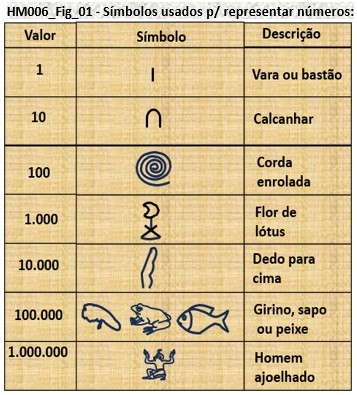
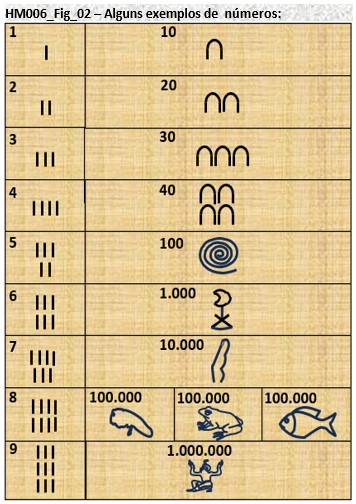
Como é possível verificar, os números eram formados pelo agrupamento dos vários tipos de símbolos.
Neste sistema, o valor assumido pelo símbolo é sempre o mesmo, ou seja, independe da posição em ele esta dentro da sequência usada para representar um número.
Em outras palavras, no sistema de numeração egípcio, não era usada a "notação posicional", em que o valor do símbolo depende da posição em que ele se encontra dentro do número.
Vamos relembrar o que é notação posicional, onde o valor associado ao algarismo depende da posição em que ele se econtra dentro do número.
Em nosso sistema decinal, se tomarmos como exemplo o número 365, temos que o algarismo 3 vale 300 = 3x10², o 6 vale 60 = 6x10¹ e o 5 vale 5=5x10⁰,
de tal forma que o número resultante, 365, pode ser dado pela soma dos valores associados aos algarismos: 300+60+5 = 365.
Voltar ao Índice de Itens de Matemática!
HM04==>HM007: Construção da Piramide de Queopes(2650 A.C.) :
A piramide de Quepos:
(1) Foi construída na quarta dinastia do antigo império do Egito, por volta de 2560 ou 2580 A.C, para ser o túmuo do Faró Queops (também conhecido como Khufu);
(2) Levou 20 anos para ser finalizada;
(3) Nela trabalharam cerca de 20 mil homens e foram usados mais de 2300 milhões de blocos de pedra, extraídos da região de Gizé, com pesos variando de 2,5 a 15 toneladas, sendo
que, na câmara funerária, existem blocos de até 51 toneladas. Também possui, alguns blocos internos de granito rosa;
(4) Sua altura original era de aproximadamente 146,6 metros;
(5) Os 4 lados da pirâmide estão alinhados com os 4 pontos cardeais, sendo que esse alinhamento foi feito através de obsevações astronômicas (das estrelas e do sol), uma
vez que não havia bússola naquela época.
Voltar ao Índice de Itens de Matemática!
HM008: Notação Posicional na Mesopotâmia (2.650 a. C.) :
Na mesopotâmia, o sistema de numeração possuia as seguintes características:
(1) Havia dois símbolos o "cravo", parecido com este Ῡ, que valia 1 e a "asna", parecido com este ᗉ, que valia 10 (ver Figura abaixo)
e como os mesopotâmios não trabalhavam com o zero, não havia um símbolo para representá-lo;
Símbolos usados para representar números, o "Cravo" e a "Asna":
(2) Havia duas maneiras de representar os números, uma para os de 1 a 60 e outra para os de 61 em diante;
(3) Faixa de 1 a 60: aqui, os números eram representados por uma reunião de símbolos
e o número resultante era dado pela soma dos valores dos símbolos individuais (ver figura abaixo):
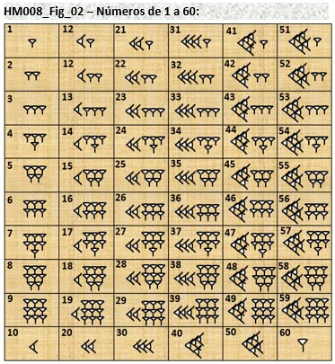
(4) Representação dos números de 61 em diante: aqui era usada a "notação posicional" com o sistema sexagesimal (base 60).
Para compor um número nesta faixa de valores, são usados os números da tabela anterior, e a distinção entre os casos (3) de 1 a 60 e (4) de 61 em diante,
é feita pelo espaçamento maior entre símbolos, presente nos números do caso (4) (ver figura abaixo).
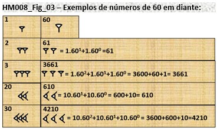
OBS.: para fazer a diferenciação entre 1 e 60 no sistema sexagesimal sumério, era necessário avaliar uma combinação de fatores, incluindo a posição,
a forma dos símbolos, o uso de espaços e o contexto em que os números eram usados.
Voltar ao Índice de Itens de Matemática!
HM009: Invenção do Tangram por Sol Lusse Yong e Rêve Lex Yong (2138 a.C.) :
O Tangram é um quebra-cabeças chinês formado por 7 peças, chamadas tans.
As peças são feitas através de cortes em um quadrado, mostrados, de forma rudimentar, na figura abaixo. As peças são:
# 2 triângulos grandes iguais (P5 e P7);
# 2 pequenos iguai (P2 e P4);
# 1 médio (P1);
# 1 quadrado (P3) e
# 1 paralelogramo (P6).
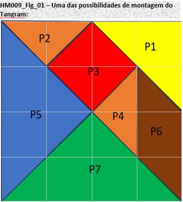
Utilizando todas essas sete peças, sem sobrepô-las, é possível formar, segundo estudiosos, mais de 5000 figuras.
Não se sabe ao certo como surgiu o Tangram, mas acredita-se ter sido inventado na China durante a Dinastia Song e
levado para Europa por navios mercantes no início do século XIX, onde se tornou muito popular.
O Tangram, também conhecido como jogo das 1000 peças, e é utilizado pelos professores de geometria
como instrumento facilitador da compreensão das formas geométricas.
Além de facilitar o estudo da geometria, ele desenvolve a criatividade e o raciocínio lógico,
que também são fundamentais para o estudo da matemática e da ciência.
Voltar ao Índice de Itens de Matemática!
HM05==>HM010: Papiros de Moscou e de Ahmes (Rhind) (1850 A.C. 1650 A.C):
(1) Papiro de Moscou (Golonishev):
O papiro de Moscou, datado do início do século XIII A.C. (novo império do Egito), tem esse nome porque foi comprado pelo egiptólogo russo V. S. Golenishchev, em 1893
e hoje encontra-se no Museu Estatal de Belas Artes Pushkin. Tem a forma de uma estreita tira de 5,5m de comprimento por 8 cm de largura. Contém 25 problemas que abordam
tópicos como aritmética, geometria, cálculos de áreas e volumes, bem como cálculos envolvendo frações.
(2) Papiro de Ahmes (Rhind):
Também conhecido como Papiro Rhind, datado do Segundo Período Intermediário, por volta de 1650 A.C., o papiro de Ahmes recebeu o nome de um escriba do Antigo Egito que copiou o
documento de uma obra anterior, presumivelmente do Império Médio. Foi comprado em Luxor, Egito, em 1858, por Alexander Henry Rhind, de Aberdeen (Escócia).
Foi incorporado ao patrimônio do Museu Britânico em 1865, encontrando-se lá atualmente. Tem a forma de uma tira 5 metros por 33 cm. Detalha a solução de 85 problemas
de aritmética, frações, cálculo de áreas, volumes, progressões, repartições proporcionais, regra de três simples, equações lineares, trigonometria básica e
geometria.
Voltar ao Índice de Itens de Matemática!
HM011: Uso de Equações do 2º Grau para Resolver Problemas Numéricos (1.700 a.C.) :
O primeiro registro conhecido da resolução de problemas envolvendo a equação do 2° grau data de 1700 a.C. aproximadamente, feito numa tábua de argila através de palavras.
A solução era apresentada como uma receita matemática e fornecia somente uma raiz positiva. Os mesopotâmios enunciavam a equação e sua resolução em palavras, mais ou menos do seguinte modo:
Exemplo: Qual é o lado de um quadrado em que a área menos o lado dá 870?
(O que hoje se escreve: x²−x=870).
E a receita era:
(a) Tome a metade de 1 (coeciente de x) e multiplique por ela mesma, (0,5 × 0,5 = 0,25);
(b) Some o resultado a 870 (termo independente), 870+0,25= 870,25;
(c) Extraia a raiz quadrada do número obtido, 870,25= (29,5)² ==> [870,25]½=29,5;
(d) Some o resultado obtido à metade de 1, e obtem-se o lado do quadrado, 29,5+0,5=30.
A aplicação dessa "receita" pode ser entendida com a aplicação da fórmula de Bhaskara
ax²+bx+c = 0, para o caso em que
o coeficiente de x², a=1, o de x, b=1 e o termo constante, c=-870.
(a) Tome a metade do coeficiente de do termo x, que é b e multiplique a metade dele por ele mesmo,
(b/2).(b/2)=(b²)/2;
(b) Some o resultado ao termo constante c, c+(b²)/2;
(c) Extraia a raiz quadrada do número obtido, [c+(b²)/2]½;
(d) Some o resultado obtido à metade de b, e obtem-se o lado do quadrado, (b/2)+[c+(b²)/2]½
Comparando a equação proposta, x²−x=870, com a equação genérica do segundo grau, ax²+bx+c=0, temos que, a=1, b=-1 e c=-870
Olhando a fórmula de Bhaskara,
x=-(b/2a)±([b²-4ac]½)/2a, podemos reescrevê-la:
x=-(b/2a)±([(b²)/4-(4ac)/4]½)/a;
x=-(b/2a)±([(b²)/4-ac]½)/a;
x=-(b/2a)±([(b/2)/(b/2)-ac]½)/a;
Substituindo os valores dos coeficientes a, b e o termo constante c na equação acima, temos:
x=-(-1/2)±[(-1/2)/(-1/2)-(-879)]½;
x=(1/2)±[(1/2)/(1/2)+879]½;
Desprezando o termo, -[(1/2)/(1/2)+879]½, na expressão anterior,
temos:
x=(1/2)+[(1/2)/(1/2)+879]½
Olhando os termos da expressão anterior, temos:
(a) (1/2)/(1/2) = metade do coeficiente 1 = (1/2) multiplicado por ele mesmo;
(b) (1/2)/(1/2)+879 = soma do resultado (a) ao termo constante 879;
(c) [(1/2)/(1/2)+879]½ = extração da raiz quadrada do resultado (b);
(d) (1/2)+[(1/2)/(1/2)+879]½ = soma do resultado (c) à metade do coeficiente 1.
Resultado 0,5+[0,25+879]½ = 0,5+29,5 = 30 (lado do quadrado).
Voltar ao Índice de Itens de Matemática!
HM012: Alfabeto Fenício; uso do ferro; relógios de sol e água (1350 a.C.) :
(1) ALFABETO FENÍCIO:
(1.1) Escrita Cuneiforme Mesopotâmica: usava silabário consonatal cuneiforme. Com poucos caracteres escrevia-se qualquer palavra.
Uma mesma combinação de caracteres poderia formar diferentes palavras. Na escrita, a diferenciação de significados era feita pelo contexo em eram usadas.
Na fala, havia inserção de vogais (A, I, U, na língua semítica) para definir o significado. Essas vogais poderiam assumir diferentes caracteríticas sonoras,
com som aberto (como as vogais com acento agudo) ou fechado (como as vogais com acento circunflexo).
(1.2) Escrita Hieroglífica Egípcia: usava um silabário consonantal, mas aqui, eram usados símbolos adicionais para determinar
o significado e a sonoridade das palavras. Ou seja, não havia a necesidade de avaliar o contexto para identificar seus significados e a sonoridade com que deveriam ser pronunciadas.
(1.3) Alfabeto Fenício: entre as civilizações egípcias e mesopotâmicas havia povos que eram grandes comerciantes no Mediterrâneo, os Fenícios.
Por conta das necessidades do dia a dia, eles criaram uma escrita que unia as vantagens da escrita cuneiforme (a de poder escrever todas as palavras com poucos cracteres)
e da egípcia (que podia ser escrita e lida, sem a necessidade de acréscimos vocálicos, entre os caracteres, que definiam sonoridade e significado). Era o princípio do alfabeto Fenício.
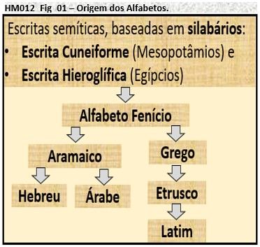
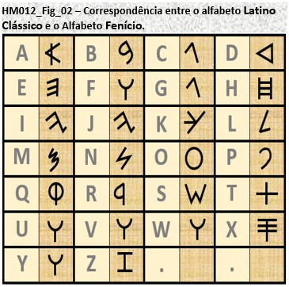
(2) USO DO FERRO:
O uso do ferro na história é um marco importante na evolução das civilizações. Esse metal é mais abundante na crosta terrestre do que o cobre ou o estanho usados na produção de bronze.
Isso permitiu a produção em maior escala de ferramentas e armas mais duráveis, o que teve um impacto profundo na sociedade, na agricultura,
na tecnologia e no desenvolvimento de civilizações antigas. A transição do uso de metais mais antigos, como o cobre e o bronze, para o ferro,
é frequentemente referida como a "Idade do Ferro". A Idade do Ferro varia em datas conforme a região do mundo, mas geralmente começou por volta
de 1200 a.C. a 1000 a.C. em várias partes do mundo, marcando o início de uma era em que o ferro desempenhou um papel cada vez mais significativo em tecnologia,
cultura e sociedade.
Aqui estão algumas informações sobre o início do uso do ferro em diferentes partes do mundo:
(2.1) Oriente Médio: O uso do ferro começou a se tornar comum no Oriente Médio por volta do final do segundo milênio a.C.
Inicialmente, o ferro era produzido a partir de meteoritos de ferro e era relativamente raro. No entanto, com o desenvolvimento da metalurgia do ferro,
a produção de ferro a partir de minério de ferro tornou-se mais ampla.
(2.2) Europa: Na Europa, a Idade do Ferro começou por volta de 800 a.C. e é caracterizada por uma crescente utilização do ferro na fabricação de armas,
ferramentas e objetos cotidianos. Isso coincidiu com o declínio da Idade do Bronze.
(2.3) África Subsaariana: A Idade do Ferro na África Subsaariana começou por volta do primeiro milênio a.C. em várias regiões.
Isso permitiu o desenvolvimento de sociedades agrícolas mais complexas.
(2.4) Ásia Oriental: A introdução do ferro na China remonta a cerca de 600 a.C., durante o período das Primaveras e Outonos.
O uso do ferro desempenhou um papel importante na produção de ferramentas agrícolas e na construção.
(2.5) Índia: O uso do ferro na Índia tem uma longa história que remonta a cerca de 1800 a.C.
O ferro era conhecido como "loha" na antiga língua sânscrita, e a produção de ferro e a metalurgia eram avançadas na Índia antiga.
(3) RELÓGIO DE SOL E DE ÁGUA:
O uso de relógios de sol (gnômons) e relógios de água (clepsidras) na história desempenhou papéis importantes em várias culturas e períodos.
No entanto, à medida que a tecnologia avançou, eles foram gradativamente substituídos por relógios mecânicos e, mais tarde, relógios digitais e eletrônicos.
Mesmo assim, relógios de sol e de água ainda são apreciados hoje por seu valor histórico e estético.
Aqui estão alguns exemplos do uso desses dispositivos ao longo do tempo:
(3.1) Relógios de Sol (Gnômons):
(3.1.1) Civilização Egípcia: Os egípcios antigos usavam relógios de sol como parte de sua astronomia e para medir o
tempo durante o dia. Eles criaram obeliscos e outros dispositivos de sombra para acompanhar o movimento do sol.
(3.1.2) Grécia e Roma Antiga: Os gregos e romanos desenvolveram relógios de sol mais avançados,
incluindo dispositivos portáteis conhecidos como relógios de sol de bolso.
(3.1.3) Idade Média Europeia: Os mosteiros medievais frequentemente tinham relógios de sol em seus jardins e em suas torres.
Esses dispositivos eram usados para regular o tempo das orações e das atividades diárias.
(3.1.4) Renascimento e Era Moderna: Durante o Renascimento e a Era Moderna, os relógios de sol se tornaram peças de engenharia
mais elaboradas e eram frequentemente incorporados em edifícios, praças e jardins como elementos decorativos.
(3.2) Relógios de Água (Clepsidras):
(3.2.1) Antigo Egito: Os egípcios usavam clepsidras, ou relógios de água, para medir o tempo durante a noite,
quando os relógios de sol eram inúteis. As clepsidras eram comumente usadas em templos e para tarefas como medir o tempo de cozedura de pães.
(3.2.2) Grécia e Roma Antiga: Os gregos e romanos também empregavam clepsidras para uma variedade de fins,
incluindo medir o tempo em tribunais e regulamentar o tempo nos jogos.
(3.2.3) Civilizações Chinesas: A China antiga desenvolveu clepsidras complexas que mediam o tempo com grande precisão.
Algumas clepsidras chinesas também eram usadas para fins astronômicos.
(3.2.4) Civilizações Islâmicas: Clepsidras eram amplamente usadas no mundo islâmico medieval,
não apenas para medir o tempo, mas também para determinar a direção da Meca.
Voltar ao Índice de Itens de Matemática!
HM06==>HM013: A Matemática chinesa (1100 A.C.):
O surgimento da matemática Chinesa, por volta do século XI A.C., é considerado, pelos estudiosos, como algo independente do antigo mundo mediterrânico (Grécia e Egíto).
Issofica evidente se consideramos duas coisas:
(1) as barreiras linguísticas e geográficas existentes entre a China e o mundo mediterrânea e
(2) os diferentes conteúdos produzidos pelos sábios chineses e pelos sábios do Egito e da Grécia, na área da matemática.
Os chineses desenvolveram de forma independente: os números muito grandes, os negativos, decimais, um sistema decimal de valor posicional, um sistema binário,
álgebra, geometria e trigonometria.
Voltar ao Índice de Itens de Matemática!
HM07==>HM014: Tales de Mileto (600 A.C.):
Tales de Mileto foi um filósofo, matemático e astrônomo grego pré-socrático, que viveu por volta do século VI A.C. Por ser considerado primeiro sábio a aplicar o raciocínio lógico
e a dedução, para resolver problemas geométricos, ele é chamado de Pai da Matemática, com importantes contribuições para essa ciência, ainda que muitas de suas
obras tenham sido perdidas. Seu trabalho mais famoso é o conhecido "Teorema de Tales", princípio fundamental da geometria que menciona a proporcionalidade entre segmentos
de retas transversais, cortadas por um feixe de retas paralelas.
Voltar ao Índice de Itens de Matemática!
HM08==>HM015: Pitágoras de Samos (540 A.C.):
Pitágoras de Samos foi um filósofo, matemático e líder religioso grego que viveu aproximadamente entre 570 a.C. e 495 a.C. Estudou matemática, astronomia, música, literatura e filosofia
na sua cidade natal. Foi orientado na cidade grega de Mileto por um dos maiores filósofos pré-socráticos: Tales de Mileto. É conhecido principalmente por suas contribuições na matemática
e por fundar a Escola Pitagórica, um centro de aprendizagem dedicado à investigação matemática e espiritual. Os Pitagóricos desenvolveram uma concepção espiritual da existência humana,
onde a alma é libertada do corpo após a morte.Ou seja, eles acreditavam na reencarnação e no desenvolvimento das virtudes humanas enquanto a alma estava aprisionada ao corpo durante a vida.
Como resultado, os homens poderiam reencarnar numa forma de existência mais elevada, conforme as virtudes conquistadas durante a trajetória terrena.
É da autoria de Pitágoras um dos mais importantes teoremas da geometria, o Teorema de Pitágoras. É representado pela fórmula (a²= b²+c²) sendo seu enunciado descrito da seguinte maneira:
“No triângulo retângulo, composto por um ângulo interno de 90° (ângulo reto), a soma dos quadrados de seus catetos corresponde ao quadrado de sua hipotenusa.”
Voltar ao Índice de Itens de Matemática!
HM016: Hipócrates de Quios e o Uso de Letras em Figuras feométricas (500 a.C.) :
Hipócrates de Quio (ou Hippocrates of Chios) foi um matemático e astrônomo grego da antiguidade.
É muitas vezes confundido com Hipócrates de Cos, o médico grego. Era originalmente um mercador, cujos bens foram roubados.
Ele então seguiu para Atenas onde viveu por muitos anos, estudou Matemática e compilou um livro sobre os elementos de matemática
que influenciou fortemente Euclides (cerca de 325 a.C. - 265 a.C.) em seus Elementos um século mais tarde. Embora menos conhecido do que
outros matemáticos e filósofos gregos da época, como Euclides ou Arquimedes, Hipócrates de Quio fez contribuições significativas para a matemática e a astronomia.
Parece, também, que foi ele o primeiro matemático a usar letras para identificar pontos das figuras geométricas estudadas,
e.g. “triângulo ABC” é um triângulo com vértices nos pontos A, B e C.
Épocas em que viveram Hipócrates de Quios, outros matemáticos gregos e Péricles (general e orador):
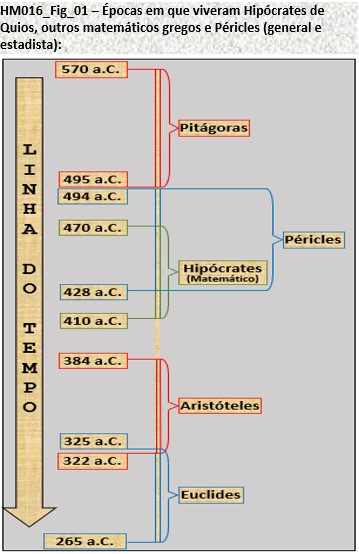
As contribuições de Hipócrates de Quio incluíram:
(1) Quadratura da Lúnula: Ele é creditado por encontrar a área sob uma lúnula, que é uma figura em forma de lua crescente, ou minguante,
limitada pela interseção entre dois arcos de circunferência, de raios r e [2]½.r, que têm as convexidades voltadas para o mesmo lado.
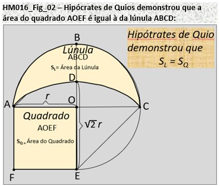
(2) Estudo de Proporções: Hipócrates de Quio trabalhou na teoria das proporções e contribuiu para o desenvolvimento da teoria matemática das proporções e razões.
(3) Astronomia: Ele também fez contribuições para a astronomia antiga, incluindo observações do movimento dos planetas e estrelas.
Hipócrates tentou explicar, de forma totalmente especulativa, os cometas e a existência da Via Láctea. Nada sabemos de concreto sobre suas ideias,
mas parece que ele dizia que havia um só cometa, que reaparecia de tempos em tempos, e que ele era apenas um outro planeta — a cauda seria uma ilusão de ótica.
Os antigos comentadores afirmam que, nessas ideias, Hipócrates de Quios teve grande influência dos filósofos pitagóricos.
Voltar ao Índice de Itens de Matemática!
HM017: Hipaso de Metaponto e os Números Irracionais (500 a.C.) :
Hipaso de Metaponto foi um filósofo pré-socrático e matemático grego, membro da Escola Pitagórica. Nasceu em torno do ano 500 a.C. em Metaponto,
cidade grega da Magna Grécia situada no Golfo de Tarento, ao sul do que agora é a Itália. Embora pouco de seus trabalhos originais tenham sobrevivido,
ele ficou conhecido por suas contribuições para a matemática e pela sua famosa descoberta da irracionalidade da raiz quadrada de 2.
Segue um resumo dos seus principais trabalhos e contribuições:
(1) Descoberta da Irracionalidade da Raiz Quadrada de 2: Hipaso é mais conhecido por provar que a raiz quadrada de 2 é um número irracional,
o que significa que não pode ser expresso como uma fração simples. Essa descoberta foi um ponto de ruptura na filosofia pitagórica,
que acreditava que todos os números eram racionais. A história diz que os Pitagóricos ficaram chocados com essa descoberta,
e Hipaso foi supostamente afogado no mar por revelar esse segredo matemático.
(2) Trabalhos em Geometria: Hipaso também fez contribuições para a geometria.
Ele é creditado com a construção de um dodecaedro regular (um poliedro com 12 faces pentagonais idênticas) e a determinação de seu volume.
(3) Desenvolvimento da Teoria dos Proporcionais: Hipaso trabalhou em proporções matemáticas e contribuiu para o desenvolvimento da teoria dos proporcionais.
Ele provavelmente explorou relações numéricas entre grandezas, embora seus escritos originais tenham sido perdidos ao longo do tempo.
(4) Contribuições para a Aritmética: Embora não tenha sobrevivido muita documentação de seu trabalho,
acredita-se que Hipaso também tenha feito contribuições para a aritmética, incluindo o estudo de números inteiros.
(5) Legado e Influência: A descoberta da irracionalidade da raiz quadrada de 2 por Hipaso teve um impacto duradouro na matemática e na filosofia.
Ela forçou uma revisão nas crenças pitagóricas sobre a natureza dos números e levou ao desenvolvimento de novas direções na matemática grega clássica.
Sua obra lançou as bases para a aceitação de números irracionais e a expansão da matemática além dos limites das frações e números inteiros.
Voltar ao Índice de Itens de Matemática!
HM018: Zenão de Eléia e o Paradoxo Aquiles e da Tartaruga (480 a.C.) :
Zenão de Eleia (489 - 430 a.C) foi um filósofo grego pré-socrático, da escola eleática que nasceu em Eleia, hoje Vélia, Itália.
Discípulo de Parmênides de Eleia, defendeu de modo apaixonado a filosofia do mestre. Seu método consistia na elaboração de paradoxos
que desafiavam a compreensão comum da matemática, e que, embora inicialmente desconcertantes, contribuíram para o desenvolvimento do pensamento filosófico e matemático,
estimulando debates e discussões sobre conceitos fundamentais como o infinito, o espaço, o tempo e o movimento.
Aqui está um resumo dos seus principais trabalhos e contribuições:
(1) Paradoxos de Zenão: Zenão é mais conhecido por seus paradoxos, que são argumentos lógicos destinados a demonstrar
contradições aparentes na ideia de movimento e infinitude. Dois dos paradoxos mais famosos são o paradoxo de Aquiles e a tartaruga e o paradoxo da flecha.
(2) Paradoxo de Aquiles e a Tartaruga: Neste paradoxo, Zenão argumenta que, se Aquiles,
um corredor rápido, der uma vantagem a uma tartaruga lenta em uma corrida, ele nunca a alcançará.
Isso ocorre porque, a cada vez que Aquiles chega ao ponto onde a tartaruga estava, a tartaruga terá avançado um pouco.
O paradoxo argumenta que, dividindo o espaço infinitamente, Aquiles nunca completará o percurso.
(3) Paradoxo da Flecha: Neste paradoxo, Zenão sugere que uma flecha disparada em direção a um alvo nunca atinge o alvo, já que, a qualquer momento,
a flecha ocupa apenas um ponto em espaço e, portanto, está em repouso. O paradoxo destaca a questão da divisibilidade infinita do tempo e do espaço.
(4) Críticas ao Conceito de Infinito: Os paradoxos de Zenão levantaram questões sobre a natureza do infinito na matemática e na filosofia.
Ele argumentava que o infinito era uma ideia problemática e que não poderia ser compreendido logicamente.
(5) Contribuições para a Filosofia de Parmênides: Zenão foi discípulo de Parmênides, um filósofo que argumentava que a realidade era uma e imutável,
negando a existência do movimento e da mudança. Os paradoxos de Zenão eram usados para apoiar a filosofia de Parmênides, mostrando as contradições na ideia de pluralidade e movimento.
(6) Influência na Filosofia e na Matemática: Os paradoxos de Zenão tiveram um impacto duradouro na filosofia e na matemática.
Eles desafiaram o pensamento tradicional sobre o infinito e o movimento, influenciando filósofos posteriores, como os sofistas e Aristóteles.
Na matemática, esses paradoxos desempenharam um papel na discussão da natureza dos números reais e da ideia de continuidade.
Voltar ao Índice de Itens de Matemática!
HM019: Numerais em barra na China (477 a.C.) :
Os numerais em barra, também conhecidos como numerais de vara, são uma forma antiga de representação numérica que tem sido usada historicamente em várias culturas.
Na China, surgiu, provavelmente, há mais de dois milênios. Os numerais em barra são uma forma de notação que envolve o uso de traços ou varas para representar números.
Essa notação desempenhou um papel significativo no desenvolvimento de sistemas de numeração e na realização de cálculos.
No entanto, ao longo do tempo, ela evoluiu para os caracteres numéricos mais familiares usados atualmente.
Esse sistema, também era conhecido como "Chinês Científico". É um sistema posicional, de base 10, com o primeiro algarismo à direita representando a unidade.
Os chineses foram um dos quatro povos que conseguiram criar um sistema de númeração posicional. Para criar esse sistema foi necessária a existência do algarismo zero.
Com isso, foi possível diferenciar, por exemplo, os números 43, 403, 430. O zero passou a ser utilizado pela civilização chinesa a partir do século VIII
e dentro de um número ele era representado por um espaço vazio (símbolo ausente).
O zero como algarismo significativo em um sistema posicional numérico foi criado na Índia, e divulgado ao mundo pelos árabes.
Na tabela da figura HM0019_Fig_01, abaixo, são representados os algarismos de 1 a 9. Dentro de um número composto por vários algarismos,
os algarismos com o mesmo valor eram representados por diferentes símbolos conforme estivessem em posições ímpares (unidade, centena, ...) ou em posições pares (dezena, milhar, ...).
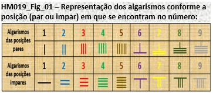
A tabela da figura HM019_Fig_02 mostra exemplos de como são escritos números formados pelos mesmos algarismos, 8651 e 1658.
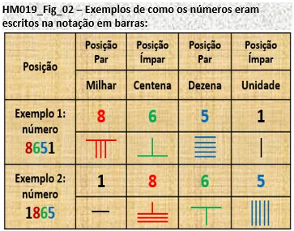
Aqui estão algumas informações sobre os numerais em barra na China:
(1)Origens Antigas: Os numerais em barra têm origens antigas e foram usados em várias culturas ao longo da história.
Na China, essa notação remonta a séculos atrás, e várias formas de representação numérica baseadas em varas eram comuns em registros históricos e textos matemáticos chineses.
(2)Sistema de Numeração Decimal: Os numerais em barra fazem parte de um sistema de numeração decimal.
Os caracteres eram usados para representar números, com varas horizontais ou verticais representando diferentes valores.
Por exemplo, uma vara horizontal pode representar o número 1, enquanto duas varas horizontais podem representar o número 2.
(3)Versatilidade: Os numerais em barra eram versáteis e podiam ser usados para representar uma ampla gama de números.
Ao combinar varas horizontais e verticais em várias posições, era possível representar números maiores de maneira eficaz.
(4)Uso em Cálculos: Os numerais em barra eram usados para realizar cálculos matemáticos, incluindo operações de adição, subtração, multiplicação e divisão.
Eles eram frequentemente usados em ábacos, que eram dispositivos de cálculo antigos.
(5)Desenvolvimento da Notação Numérica Chinesa: Os numerais em barra desempenharam um papel importante no desenvolvimento da notação numérica chinesa.
Ao longo do tempo, a notação numérica chinesa evoluiu e eventualmente adotou caracteres numéricos, que são semelhantes aos que usamos hoje, como 1, 2, 3, etc.
(6)Resquícios na Cultura Atual: Embora os numerais em barra não sejam mais amplamente usados na China,
eles ainda podem ser encontrados em contextos culturais e históricos, e os caracteres chineses para números ainda têm semelhanças visuais com as varas usadas em numerais de vara.
Voltar ao Índice de Itens de Matemática!
HM020: Sulvasutras na Índia (461 a.C.) :
Os Sulvasutras são textos matemáticos antigos que fazem parte da literatura indiana conhecida como Shulba Sutras.
Eles faziam parte do o “apêndice” dos textos sagrados Vedas e foram compostos na Índia por volta do primeiro milênio a.C. (época estimada entre 800 a.C. e 500 a.C) até o início da era comum.
Esses textos tratam principalmente da geometria e da construção de altares para rituais religiosos védicos,
mas também contêm conhecimentos matemáticos relevantes para a época, dando uma ideia das habilidades matemáticas e geométricas dos antigos sábios indianos.
Principais pontos sobre os Sulvasutras:
(1) Geometria: Os Sulvasutras incluem instruções detalhadas sobre a construção de altares geométricos que eram usados em rituais religiosos védicos.
Isso envolvia a criação de figuras geométricas, como quadrados, retângulos, círculos e elipses, com precisão matemática.
(2) Teorema de Pitágoras: Os Sulvasutras incluem uma forma primitiva do Teorema de Pitágoras, que relaciona os lados de um triângulo retângulo.
Este é um dos primeiros registros conhecidos desse teorema.
(3) Proporções e Medidas: Os textos tratam de questões de proporções, medidas e cálculos de áreas, especialmente no contexto da construção dos altares.
(4) Importância histórica: Os Sulvasutras desempenharam um papel significativo na história da matemática, já que contribuíram para o desenvolvimento
de conceitos geométricos e matemáticos na Índia antiga. Muitos dos princípios contidos nesses textos influenciaram o desenvolvimento posterior da matemática na Índia e em outras partes do mundo.
Voltar ao Índice de Itens de Matemática!
HM021: Péricles (-460 a.C.) :
Péricles (495 a 429 a.C.) foi um influente líder político e estadista da Grécia Antiga.
É lembrado como uma figura central na história de Atenas e da Grécia Antiga. Sua atuação foi principalmente em Atenas durante o século V a.C.,
envolvido fortemente na Idade de Ouro dessa cidade, época em que realizou trabalhos importantes na promoção da democracia ateniense,
além de trabalhos em prol da a cultura, das artes e da arquitetura. Essas realizações exerceram uma grande influência na história da civilização ocidental.
Segue um resumo de seus principais feitos:
(1) Democracia Ateniense: Péricles é frequentemente associado à consolidação e expansão da democracia em Atenas.
Ele defendeu a igualdade política entre os cidadãos e promoveu reformas que deram mais poder à Assembleia (Ekklesía)
e ao sistema judiciário, tornando a democracia direta mais efetiva.
(2) Construções e Obras Públicas: Péricles incentivou uma série de projetos de construção em Atenas, incluindo a reconstrução da Acrópole.
O Partenon, o templo dedicado à deusa Atena, é um dos exemplos mais famosos desses projetos. Ele também apoiou a construção do Odeão de Péricles
e o Longas Muralhas, que conectavam Atenas ao porto de Pireu.
(3) Patrocínio das Artes e Filosofia: Péricles valorizava a cultura e as artes, apoiando filósofos como Anaxágoras e artistas como Fídias,
que esculpiu a estátua de Atena Parthenos no Partenon. Isso contribuiu para o florescimento da filosofia e da produção artística durante o período.
(4) Liderança durante as Guerras Persas: Péricles desempenhou um papel importante na liderança de Atenas durante as Guerras Greco-Persas,
particularmente na Batalha de Maratona (490 a.C.) e na Batalha de Salamina (480 a.C.). Ele incentivou o fortalecimento da marinha ateniense,
que desempenhou um papel crucial na defesa da Grécia contra os persas.
(5) Imperialismo Ateniense: Sob a liderança de Péricles, Atenas se tornou um império marítimo que controlava várias cidades-estados
na Liga de Delos (liga militar organizada por Atenas com o objetivo de defender as cidades gregas de um ataque persa).
Essa liderança levou a um período de crescimento econômico e influência cultural, mas também suscitou tensões e conflitos com outras cidades-estados gregas, principalmente Esparta.
(6) Discurso Fúnebre: O famoso "Discurso Fúnebre de Péricles" é registrado por Tucídides
em sua "História da Guerra do Peloponeso" (guerra entre Atenas e Esparta pela hegemonia da Grécia).
Este discurso homenageava os soldados que haviam morrido na Guerra do Peloponeso e enaltecia os valores democráticos de Atenas.
Voltar ao Índice de Itens de Matemática!
HM022: Parmênides e a Terra Esférica (-450 a.C.) :
Parmênides (515-450 a.C.) foi um filósofo pré-socrático da Grécia Antiga, nascido em Eléia. Sua obra mais importante é um poema filosófico intitulado "Sobre a Natureza" (Peri Physeos),
que consiste em uma exploração das ideias sobre a natureza do ser e da realidade. Acredita-se que ele foi primeiro grego a propor a ideia de que a Terra é esférica.
No entanto, ele não desenvolveu argumentos detalhados para essa concepção, e suas escritas não sobreviveram para confirmar sua posição sobre o assunto.
Parmênides destacou a importância da razão e do pensamento lógico na busca pela verdade e lançou as bases para
a investigação da natureza da realidade que continuou a ser explorada ao longo da história da filosofia.
Aqui está um resumo das principais ideias contidas na obra de Parmênides:
(1) O Caminho da Verdade: Parmênides argumenta que o único caminho válido para compreender a realidade é o "caminho da verdade".
Ele afirma que o ser é imutável, eterno e único, e que a mudança e a multiplicidade são ilusórias.
(2) A Ilusão dos Sentidos: Parmênides argumenta que nossos sentidos são enganosos e não podem ser confiáveis para perceber a verdade.
Ele acredita que a percepção sensorial nos leva a acreditar em uma realidade de mudança e diversidade, mas isso é apenas uma ilusão.
(3) O Ser como Único e Imutável: Para Parmênides, o ser é eterno e imutável, não nascendo nem perecendo.
Ele argumenta que a mudança é impossível, pois implicaria a transição do não ser para o ser, o que ele considera incoerente.
(4) O "Um" como Realidade Única: Parmênides identifica o "Um" como a realidade última e única.
Ele acredita que o ser é homogêneo, completo e indivisível. Qualquer tentativa de falar sobre o "não ser" é fútil, pois o "não ser" não tem existência.
(5) Crítica à Filosofia Pré-Socrática: Parmênides critica os filósofos pré-socráticos que acreditavam na pluralidade
de elementos ou princípios subjacentes à realidade, como Tales, Anaximandro e Heráclito. Ele considera suas ideias como confusas e contraditórias.
Voltar ao Índice de Itens de Matemática!
HM023: Demócrito desenvolveu a sua Teoria Atômica (-450 a.C.) :
Demócrito (c. 460-370 a.C.) foi um filósofo grego que é mais conhecido por suas contribuições à filosofia atomista.
Sua obra, embora fragmentária e parcialmente perdida, é central para o desenvolvimento da teoria atômica na filosofia e na ciência.
A obra de Demócrito, infelizmente, é conhecida principalmente por meio de fragmentos e relatos de outros filósofos antigos.
No entanto, suas ideias sobre o atomismo influenciaram filósofos posteriores, como Epicuro e Lucrécio.
Aqui está um resumo das principais ideias da obra de Demócrito:
(1) Atomismo: Demócrito propôs a teoria atomista, que afirmava que toda a matéria é composta por partículas indivisíveis chamadas átomos.
Ele argumentou que o universo consiste em um número infinito de átomos que se movem no vazio (o vazio é o espaço entre os átomos).
Esses átomos são eternos, indestrutíveis e têm diferentes formas e tamanhos.
(2) Leis do Movimento: Demócrito também desenvolveu ideias sobre as leis do movimento dos átomos.
Ele acreditava que os átomos estão constantemente em movimento, colidindo e se combinando para formar diferentes substâncias.
As leis do movimento atômico incluíam conceitos de necessidade e acaso.
(3) Determinismo: Demócrito era um determinista, acreditando que tudo o que acontece no universo ocorre de acordo com a necessidade, com base nas interações dos átomos.
Ele rejeitava a ideia de eventos aleatórios ou divinos.
(4) Epistemologia: Demócrito também fez contribuições para a epistemologia (teoria do conhecimento).
Ele argumentava que o conhecimento é obtido através dos sentidos e da razão, e que a verdade é relativa, dependendo das percepções dos átomos.
Ele introduziu a ideia de que a verdade é uma representação subjetiva do mundo, baseada nas impressões sensoriais.
(5) Materialismo: A filosofia de Demócrito era essencialmente materialista, centrando-se na ideia de que tudo no universo pode ser reduzido
à matéria e ao movimento dos átomos. Ele rejeitava a noção de entidades imateriais, como almas ou forças sobrenaturais.
Voltar ao Índice de Itens de Matemática!
HM024: Hipócrates de Cos (430 a.C.) :
Hipócrates de Cos (460-370 a.C.) foi um médico grego antigo amplamente considerado tradicionalmente como o "Pai da Medicina" em reconhecimento às suas contribuições duradouras para a área,
como o uso de prognóstico e observação clínica, a categorização sistemática de doenças ou a formulação da teoria humoral.
A escola de medicina hipocrática revolucionou a medicina grega antiga, estabelecendo-a como uma disciplina distinta de outros campos aos quais tinha sido tradicionalmente associada (teurgia e filosofia ),
estabelecendo assim a medicina como uma profissão.
Hipócrates fundamentou a sua prática (e a sua forma de compreender o organismo humano, incluindo a personalidade)
na teoria dos quatro humores corporais (sangue, fleugma ou pituíta, bílis amarela e bílis negra) que, consoante às quantidades relativas presentes no corpo,
levariam a estados de equilíbrio (eucrasia) ou de doença e dor (discrasia). Esta teoria influenciou, por exemplo, Galeno, que desenvolveu a teoria dos humores
e que dominou o conhecimento até o século XVIII. Muitos de seus comentários nos Aforismos são ainda hoje válidos.
Seus escritos sobre anatomia contêm descrições claras tanto sobre instrumentos de dissecação quanto sobre procedimentos práticos.
Na filosofia prática da medicina atribuída à Hipócrates, e reunida no Corpus Hippocraticum, as doenças, durante um certo tempo,
evoluem de forma silenciosa até alcançarem o momento crucial, chamado krisis (crise), momento em que a doença se define, rumo à cura ou não.
O bom médico deve identificar o kairós (momento oportuno) de agir. Esse tempo (kairós) não dura muito tempo (khronos) e, portanto, o médico não tem tempo a perder.
Em resumo, Hipócrates de Cos desempenhou um papel fundamental na formação da medicina como disciplina científica e ética.
Suas obras e filosofia continuam a ser estudadas e valorizadas na prática médica e na ética médica contemporânea.
OBS: Aforismo é um texto breve que enuncia uma regra, um pensamento, um princípio ou uma advertência de natureza prática ou moral.
Exemplos: "Seria cômico se não fosse trágico"; "Só percebemos o valor da água depois que a fonte seca"; "A vida é breve, a velhice é longa".
Aqui está um resumo dos principais trabalhos de Hipócrates:
(1) Corpus Hippocraticum: Hipócrates é associado ao Corpus Hippocraticum, uma coleção de escritos médicos atribuídos a ele e seus seguidores.
Esses escritos abordam uma variedade de tópicos relacionados à medicina e à saúde. Alguns dos trabalhos mais notáveis incluem:
(2) "Juramento de Hipócrates": Também conhecido como o Juramento Hipocrático, este é um dos textos mais famosos de Hipócrates.
Ele estabelece os princípios éticos que os médicos devem seguir, incluindo a promessa de praticar a medicina de forma ética e preservar a confidencialidade do paciente.
(3) "Aforismos": Este trabalho contém uma série de aforismos ou observações curtas sobre a prática médica e a natureza das doenças.
Ele enfatiza a importância da observação clínica e da experiência na prática médica.
(4) Aforismos Maiores": Uma coleção expandida dos aforismos que fornece orientações práticas para o diagnóstico e tratamento de doenças.
(5) "Prognósticos": Este trabalho discute a capacidade de prever o curso das doenças com base em sinais e sintomas observados.
Hipócrates valorizava a observação clínica como uma ferramenta importante para o prognóstico.
(6) Abordagem Científica: Hipócrates e seus seguidores adotaram uma abordagem mais científica para a medicina,
afastando-se das explicações míticas e sobrenaturais das doenças. Eles acreditavam que as doenças
tinham causas naturais e procuravam entender essas causas por meio da observação e da investigação.
(7) Ênfase na Observação Clínica: Hipócrates enfatizou a importância da observação direta dos pacientes
e a coleta de informações detalhadas sobre seus sintomas e histórico médico. Ele acreditava que a observação
cuidadosa era essencial para o diagnóstico preciso.
(8) Contribuições para a Ética Médica: Hipócrates introduziu a ideia de que os médicos tinham
responsabilidades éticas em relação aos seus pacientes. Seu Juramento estabeleceu padrões de comportamento médico,
incluindo a proibição de causar danos aos pacientes e a obrigação de preservar a confidencialidade.
(9) Influência Duradoura: As contribuições de Hipócrates à medicina e à ética médica tiveram um
impacto duradouro na profissão médica. O Juramento Hipocrático ainda é relevante hoje e serve como um guia ético para os médicos.
A abordagem científica e a ênfase na observação clínica também influenciaram o desenvolvimento da medicina moderna.
Voltar ao Índice de Itens de Matemática!
HM025: Demócrito e a Doutrina Atômica (430 a.C.) :
Demócrito (460 – 370 a. C.) era natural da cidade portuária de Abdera, na costa norte do mar Egeu. Considerado o último grande filósofo da natureza,
Demócrito concordava com seus antecessores num ponto: as transformações que se podiam observar na natureza não significavam que algo realmente se transformava.
Ele presumiu, então, que todas as coisas eram constituídas por uma infinidade de partículas minúsculas, invisíveis, cada uma delas sendo eterna e imutável.
A estas unidades mínimas Demócrito deu o nome de átomos. Juntamente com Leucipo e Epicuro (criador do epicurismo), defendia o atomismo geométrico,
doutrina que sustentava ser a matéria formada de átomos rígidos infinitamente pequenos e variados de tamanho e forma, que se agrupam em combinações casuais e por processos mecânicos.
A palavra átomo significa indivisível. Para Demócrito era muito importante estabelecer que as unidades constituintes de todas as coisas não podiam ser divididas em unidades ainda menores.
Isto porque se os átomos também fossem passíveis de desintegração e pudessem ser divididos em unidades ainda menores, a natureza acabaria por se diluir totalmente.
Além disso, as partículas constituintes da natureza tinham que ser eternas, pois nada pode surgir do nada. Neste ponto, Demócrito concordava com Parmênides e com os eleatas.
Para ele, os átomos eram unidades firmes e sólidas. Só não podiam ser iguais, pois se todos os átomos fossem iguais não haveria explicação
para o fato de eles se combinarem para formar por exemplo rochas ou mesmo seres.
Demócrito achava que existia na natureza uma infinidade de átomos diferentes: alguns arredondados e lisos, outros irregulares e retorcidos.
E precisamente porque suas formas eram tão irregulares é que eles podiam ser combinados para dar origem a corpos os mais diversos.
Independentemente, porém, do número de átomos e de sua diversidade, todos eles seriam eternos, imutáveis e indivisíveis.
Se um corpo – por exemplo, de uma árvore ou de um animal – morre e se decompõe, seus átomos se espalham e podem ser reaproveitados para dar origem a outros corpos.
Pois se é verdade que os átomos se movimentam no espaço, também é verdade que eles possuem diferentes engates e podem ser novamente reaproveitados na composição de outras coisas que vemos ao nosso redor.
É claro que também podemos construir objetos de barro. Mas o barro nem sempre pode ser reaproveitado, pois se desfaz em partes cada vez menores, até se reduzir a pó.
E estas minúsculas partículas de argila podem ser reunidas para formar novos objetos.
Hoje em dia podemos dizer que a teoria atômica de Demócrito estava quase perfeita.
De fato, a natureza é composta de diferentes átomos, que se ligam a outros para depois se separarem novamente.
Um átomo de hidrogênio presente numa molécula de água pode ter pertencido um dia à uma molécula de metano.
Um átomo de carbono que está hoje no músculo de um coração provavelmente esteve um dia na cauda de um dinossauro.
No entanto, a ciência descobriu que os átomos podem ser divididos em partículas ainda menores, as partículas elementares.
São elas os prótons, nêutrons e elétrons. E estas partículas também podem ser divididas em outras, menores ainda.
Mas os físicos são unânimes em achar que em alguma parte deve haver um limite para esta divisão.
Deve haver as chamadas partículas mínimas, a partir das quais toda a natureza se constrói.
Demócrito não teve acesso aos aparelhos eletrônicos de nossa época. Na verdade, sua única ferramenta foi a sua razão.
Mas a razão não lhe deixou escolha. Se aceitamos que nada pode se transformar, que nada surge do nada e que nada desaparece,
então a natureza simplesmente tem de ser composta por partículas minúsculas, que se combinam e depois se separam.
Demócrito não acreditava numa força ou numa inteligência que pudessem intervir nos processos naturais.
As únicas coisas que existem são os átomos e o vácuo, dizia ele. E como ele só acreditava no material, nós o chamamos de materialista.
Por detrás do movimento dos átomos, portanto, não havia determinada intenção.
Mas isto não significa que tudo o que acontece é um acaso, pois tudo é regido pelas inalteráveis leis da natureza.
Demócrito acreditava que tudo o que acontece tem uma causa natural, uma causa que é inerente à própria coisa.
Conta-se que ele teria dito que preferiria descobrir uma lei natural a se tornar rei da Pérsia.
Para Demócrito, a teoria atômica explicava também nossas percepções sensoriais.
Quando percebemos alguma coisa, isto se deve ao movimento dos átomos no espaço.
Quando vejo a Lua, isto acontece porque os átomos da Lua tocam os meus olhos.
Mas o que acontece com a consciência? Está aí uma coisa que não pode ser composta de átomos, quer dizer, de coisas materiais, certo? Errado.
Demócrito acreditava que a alma era composta por alguns átomos particularmente arredondados e lisos, os átomos da alma.
Quando uma pessoa morre, os átomos de sua alma espalham-se para todas as direções e podem se agregar a outra alma,
no mesmo momento em que esta é formada.
Isto significa que o homem não possui uma alma imortal. E este é um pensamento compartilhado por muitas pessoas em nossos dias.
Como Demócrito, elas acreditam que a alma está intimamente relacionada ao cérebro e que não podemos possuir
qualquer forma de consciência quando o cérebro deixa de funcionar e degenera.
Com sua teoria atômica, Demócrito coloca um ponto final, pelo menos temporariamente, na filosofia natural grega.
Ele concorda com Heráclito em que tudo flui na natureza, pois as formas vão e vêm. Por detrás de tudo o que flui, porém,
há algo de eterno e de imutável, que não flui. A isto ele dá o nome de átomo.
Fonte:
http://allchemy.iq.usp.br/metabolizando/beta/01/atomista.htm
Voltar ao Índice de Itens de Matemática!
HM026: Filolau e a Astronomia (430 a.C.) :
Filolau de Crotona (470 - 385a.C.) foi um filósofo pitagórico. Ele é conhecido por suas contribuições à filosofia e à matemática, especialmente por seu trabalho no campo da cosmologia.
Ele é tido co autor de um livro em que expunha a doutrina pitagórica (que era secreta e reservada apenas aos discípulos).
O livro, cujos fragmentos conservam os mais antigos relatos sobre o pitagorismo, segundo a tradição, teria influenciado fortemente Platão,
que o teria comprado por uma razoável quantia. No entanto, a obra de Filolau não chegou até nós na forma de escritos originais,
e o que sabemos sobre suas ideias é baseado em relatos e referências feitas por outros filósofos antigos, como Aristóteles e Simplicius.
Isso faz com que nossa compreensão sobre suas contribuições à filosofia e à matemática fique limitada e sujeita a interpretação
Pelo que se sabe, Filolau foi o primeiro pensador a atribuir movimento à Terra. Ele propôs um sistema no qual a Terra girava em torno de um Fogo Central,
que não era o Sol e que não podia ser visto porque ficava sempre do lado oposto ao lado habitado da Terra. O fogo era considerado pelos pitagóricos o elemento mais puro.
Entre o fogo central e a Terra existia um outro planeta, invisível, que Filolau chamou de antiterra.
Os oito corpos celestes (Sol, Mercúrio, Vênus, Terra, Lua, Marte, Júpiter, Saturno) e a antiterra como décimo corpo celeste se movia em órbitas circulares em torno do fogo central.
Segue alguns dos principais pontos da obra de Filolau:
(1) Cosmologia : Filolau é conhecido por sua teoria cosmológica, na qual ele propôs a ideia de que o universo é composto por um fogo central (o "fogo central")
ao redor do qual a Terra e outros corpos celestes orbitam. Isso antecipa conceitos posteriores de um sistema solar heliocêntrico, embora Filolau ainda considerasse a Terra como um corpo central.
(2) Números e matemática: Filolau também contribuiu para o desenvolvimento da matemática pitagórica.
Ele acreditava que os números eram a base de toda a realidade e que havia uma relação significativa entre os números e os princípios cósmicos.
Ele introduziu conceitos importantes, como o "Número Harmônico" e explorou proporções matemáticas nas relações cósmicas.
(3) Filosofia ética: Filolau também se interessou por questões éticas e morais.
Ele promoveu a ideia de que a moderação e o equilíbrio eram fundamentais para a virtude e uma vida boa.
Voltar ao Índice de Itens de Matemática!
HM027: Anaxagoras (428 a.C.) :
Anaxágoras de Clazômenas (500 - 428 a.C) foi um filósofo pré-socrático que viveu por volta de 500-428 a.C. Sua obra principal, intitulada "Sobre a Natureza" (também conhecida como "Sobre a Filosofia"),
é um tratado filosófico que aborda questões fundamentais sobre a natureza, o universo e a causalidade.
Seu conceito de Nous como princípio ordenador do universo foi uma das primeiras tentativas de explicar a causalidade por trás dos fenômenos naturais.
Além disso, sua ênfase na observação e na razão contribuiu para o método científico e o pensamento crítico que se tornariam fundamentais na tradição filosófica e científica ocidental.
Protegido de Péricles, que também era seu discípulo, creditasse a Anaxágoras a fundação da primeira escola filosófica de Atenas,
contribuindo para a expansão do pensamento filosófico e científico que era desenvolvido nas cidades gregas da Ásia.
Foi, também, um dos primeiros a questionar a ideia de divindade do Sol e também da Lua tendo uma visão deles como sendo respectivamente: uma pedra quente e vermelha e uma terra.
Essas ideias se contrapunham às crenças religiosas vigentes na época, e por conta disso, ele foi preso em 450 a.C., pela acusação do "crime de impiedade".
Aqui está um resumo das ideias-chave de Anaxágoras:
(1) Nous (Intelecto): Uma das ideias mais distintivas de Anaxágoras é a concepção do "Nous" ou Intelecto como a força motriz e organizadora do universo.
Ele argumentou que o Nous é uma substância etérea e divina que está presente em todas as coisas e que dá ordem ao caos original.
(2) Mistura e Homeomeria: Anaxágoras afirmou que tudo o que existe é composto por partículas minúsculas, que ele chamou de "homeomerias" ou "coisas compartilháveis".
Essas partículas, originados dos quatro elementos de Empédocles (água, ar, fogo e terra), são infinitamente divisíveis e estão em constante movimento.
A diversidade das coisas no mundo resulta da mistura das homeomerias em diferentes proporções.
(3) Rejeição da geração espontânea: Anaxágoras também argumentou contra a noção de que as coisas surgem por geração espontânea a partir do nada.
Ele acreditava que tudo já existia em potencial nas homeomerias e que a mudança ocorria através da mistura e separação das partículas.
(4) Cosmologia: Anaxágoras fez contribuições para a cosmologia, propondo que a Terra e os corpos celestes são formados a partir das mesmas homeomerias,
e que os fenômenos celestes eram o resultado de movimentos e interações entre as partículas.
(5) Importância da observação e racionalidade: Anaxágoras enfatizou a importância da observação e da razão na busca pelo conhecimento.
Ele acreditava que o intelecto humano tinha a capacidade de entender a ordem subjacente ao universo por meio da investigação racional.
Voltar ao Índice de Itens de Matemática!
HM028: Arquitas de Tarento (428 a.C.) :
Arquitas de Tarento (428— 347 a.C.) foi um pensador grego multifacetado: filósofo, cientista, estadista, matemático, astrônomo e estratego
(na antiga Atenas, título atribuído ao general do exército que era eleito magistrado anualmente.). É considerado o mais ilustre dos matemáticos pitagóricos.
Nasceu em Tarento, Magna Grécia (atual sul da Itália) e viveu no século IV a.C. Além das qualificações acima, é conhecido, também, por suas contribuições significativas
para a política e inovação tecnológica, sendo uma figura importante na escola pitagórica.
Acredita-se que Arquitas seja o fundador da mecânica matemática (ver a OBSERVAÇÃO). Como descrito na obra de Aulus Gellius, cinco séculos depois, ele tem a fama de ter projetado
e construído o primeiro mecanismo voador artificial de autopropulsão. Um modelo em forma de pássaro propulsionado provavelmente por um jato de vapor, que dizem ter realmente voado cerca de 200 metros.
Esta máquina, que seu inventor chamou "O pombo", pode ter sido suspensa por um fio ou pivô para o seu vôo.
Arquitas também escreveu algumas obras perdidas, já que foi incluído por Vitrúvio na lista dos doze autores de obras de mecânica.
Thomas Winter, em sua obra "The Mechanical Problems in the Corpus of Aristotle", sugeriu que "A Mecânica", um texto de autoria discutida, mas tradicionalmente atribuído a Aristóteles,
seria, na verdade, de Arquitas.
Arquitas cunhou o termo média harmónica, importante muito mais tarde na geometria projetiva e na teoria dos números, embora não a tivesse inventado.
De acordo com Eutócio, Arquitas resolveu o problema da duplicação do cubo à sua maneira com uma construção geométrica.
Antes dele, Hipócrates de Quio reduziu este problema a encontrar médias proporcionais.
A teoria das proporções de Arquitas é tratada no livro VIII de Os Elementos de Euclides, onde se encontra a construção de duas médias proporcionais,
equivalente à extração da raiz cúbica. De acordo com Diógenes Laércio, esta demonstração, que utiliza linhas geradas pelo movimento das figuras,
foi a primeira em que a geometria foi estudada com os conceitos da mecânica. A curva de Arquitas, artefato que ele usou na sua solução do problema da duplicação do cubo, é assim chamada por causa dele.
Política e militarmente, Arquitas parece ter sido a figura dominante de sua geração em Tarento, algo comparável a Péricles em Atenas meio século antes.
Os tarentinos elegeram-no estratego, "líder do exército", sete anos seguidos — um passo que exigia que eles violassem a sua própria regra contra nomeações sucessivas.
Ele teria sido invicto como general, em campanhas tarentinas contra os seus vizinhos do sul italiano.
A Sétima Carta de Platão afirma que Arquitas terá tentado salvar Platão durante suas dificuldades com Dionísio II de Siracusa.
Em sua carreira pública, Arquitas tinha uma reputação de virtude, bem como de eficácia.
Alguns estudiosos têm argumentado que Arquitas pode ter servido como um modelo para o rei filósofo de Platão,
e que ele influenciou a filosofia política de Platão como expresso em A República e outras obras
(ou seja, como é que uma sociedade pode obter bons governantes, como Arquitas, em vez de maus como Dionísio II?).
Acredítasse que Arquitas pode ter se afogado num naufrágio no mar de Mattinata. A cratera Arquitas na Lua é assim chamada em sua homenagem.
Segue um resumo de suas principais realizações e ideias:
(1) Matemática: Arquitas fez importantes contribuições para a matemática, especialmente na teoria das proporções.
Ele explorou as relações numéricas e geométricas entre diferentes grandezas, contribuindo para o desenvolvimento da matemática pitagórica.
(2) Filosofia: Arquitas era um seguidor da escola pitagórica, que enfatizava a importância dos números e relações matemáticas na compreensão do universo.
Ele também escreveu sobre ética, política e teoria do conhecimento.
(3) Política: Arquitas foi um líder político em sua cidade natal, Tarento, e desempenhou um papel importante na política de sua época.
Ele é conhecido por suas contribuições para a teoria política, incluindo a ideia de equilíbrio de poder e a necessidade de harmonia social.
(4) Invenções: Arquitas é creditado por várias invenções, como um dispositivo de medição da água (hidrômetro) e uma máquina voadora a vapor.
Suas inovações demonstram sua criatividade e conhecimento técnico.
(5) Legado: Arquitas de Tarento é lembrado como uma das figuras proeminentes da antiguidade que contribuíram para o desenvolvimento da matemática, filosofia e ciência.
Suas ideias influenciaram filósofos e cientistas posteriores, contribuindo para o avanço do conhecimento humano.
OBSERVAÇÃO: A mecânica matemática na Grécia Antiga refere-se ao estudo e aplicação de princípios matemáticos na análise de problemas relacionados ao movimento de objetos e máquinas.
Foi impulsionada em grande parte por aplicações práticas e, embora não tenha atingido o mesmo nível de desenvolvimento que alcançou na era moderna,
os pensadores que se dedicaram a ela contribuíram para o desenvolvimento de princípios matemáticos que posteriormente desempenharam um papel importante na física e na engenharia.
Seus trabalhos serviram como precursores dos estudos posteriores sobre a mecânica e a cinemática, que foram desenvolvidos mais plenamente durante a Revolução Científica nos séculos XVI e XVII.
Algumas das figuras mais importantes que se destacaram na mecânica matemática na Grécia Antiga incluem:
(a) Arquimedes: Arquimedes (c. 287 a.C. - c. 212 a.C.) é um dos mais famosos matemáticos e engenheiros da antiguidade.
Ele fez contribuições significativas para a mecânica, especialmente na teoria das alavancas e na matemática aplicada à hidrostática.
Seu trabalho sobre o princípio da alavanca é fundamental para a compreensão do equilíbrio de forças.
(b) Filão de Bizâncio: Filão de Bizâncio (c. 280 a.C. - 220 a.C.) foi um matemático grego que se concentrou na análise de máquinas e mecanismos.
Ele escreveu sobre o uso de engrenagens, catapultas e outros dispositivos mecânicos.
(c) Heron de Alexandria: Heron de Alexandria (c. 10-70 d.C.) foi um engenheiro e matemático grego que fez contribuições para a mecânica, incluindo o estudo de máquinas a vapor.
Ele é conhecido por suas escritas sobre a construção de dispositivos mecânicos, como a "Máquina a Vapor de Heron."
Voltar ao Índice de Itens de Matemática!
HM029: Platão e a Filosofia das Formas Ideais (426 a.C.) :
Platão (428–347 a.C.) foi um filósofo e matemático do período clássico da Grécia Antiga, autor de diversos diálogos filosóficos e fundador da Academia em Atenas,
a primeira instituição de educação superior do mundo ocidental. Ele é amplamente considerado a figura central na história da Grécia antiga e da filosofia ocidental,
juntamente com seu mentor, Sócrates, e seu pupilo, Aristóteles.
Platão ajudou a construir os alicerces da filosofia natural, da ciência e da filosofia ocidental,
e também tem sido frequentemente citado como um dos fundadores da religião ocidental, da ciência e da espiritualidade.
Ele era um racionalista, realista, idealista e dualista e a ele tem sido associadas muitas das ideias que inspiraram essas filosofias mais tarde.
Foi o inovador do diálogo escrito e das formas dialéticas da filosofia (ver OBSERVAÇÃO 1).
Platão também parece ter sido o fundador da filosofia política ocidental.
Sua mais famosa contribuição leva seu nome, platonismo (também ambiguamente chamado de realismo platônico ou idealismo platônico),
tendo como foco central a a doutrina das Formas. Ele também é o epônimo (personalida histórica que dá seu nome a alguma coisa) do amor platônico e dos sólidos platônicos.
Alguns já alegaram que seu nome verdadeiro tenha sido Arístocles.
Ele desenvolveu sua teoria das "formas ideais" ou "ideias" como parte fundamental de sua filosofia. Segundo Platão, o mundo sensível que percebemos com nossos sentidos é apenas uma cópia imperfeita do mundo das formas ideais.
Aqui estão os conceitos-chave relacionados às formas ideais de Platão:
(1) Mundo das Formas Ideais: Platão acreditava que além do mundo físico, existe um mundo das formas ideais ou ideias.
Este é um reino eterno e imutável de realidades perfeitas e abstratas que são a verdadeira essência das coisas.
(2) Formas versus Coisas Sensíveis: Platão argumentava que as coisas que vemos e tocamos no mundo material
são apenas sombras ou cópias imperfeitas das formas ideais. Por exemplo, uma mesa que vemos no mundo real é apenas uma cópia imperfeita da "Forma da Mesa" no mundo das ideias.
(3) Participação: Platão argumentava que as coisas no mundo sensível participam das formas ideais.
Isso significa que uma coisa é considerada "mesa" porque participa da Forma da Mesa no mundo das ideias.
A Forma da Mesa é a verdadeira essência daquilo que reconhecemos como uma mesa.
(4) Realismo das Formas: Platão defendia um realismo ontológico, acreditando que as formas ideais eram entidades reais e objetivas,
independentes da mente humana. Elas existiam por si mesmas e eram eternas.
(5) Conhecimento e Filosofia: Platão argumentava que o conhecimento verdadeiro estava no reconhecimento das formas ideais.
A filosofia, para ele, era a busca das verdades eternas e das formas ideais por meio do raciocínio e da reflexão.
(6) Mundo das Sombras: O mundo sensível, para Platão, era como um mundo de sombras, ilusões e enganos.
Ele acreditava que as pessoas deveriam se esforçar para transcender o mundo das aparências e alcançar o conhecimento das formas ideais.
(7) Teoria da Alma: A filosofia da mente de Platão também estava relacionada às formas ideais.
Ele argumentava que a alma humana estava mais conectada ao mundo das ideias do que ao mundo material e que a busca da verdade era uma jornada de autodescoberta.
(8) Epistemologia e Educação: Platão via a educação como um caminho para a busca das formas ideais.
Ele acreditava que os filósofos, como guardiões do conhecimento, deveriam guiar a sociedade em direção à sabedoria e à justiça.
OBSERVAÇÃO 1 - A Dialética, é um método de busca pelo conhecimento baseado na arte do debate entre duas ou mais pessoas que possuem diferentes pontos de vista sobre um mesmo assunto.
O que se busca é estabelacer a verdade, ou um ponto de vista novo, a partir dos existentes, através de argumentos fundamentados e não simplesmente vencer um debate ou persuadir o opositor.
Em outras palavras, é um método de diálogo cujo foco é a contraposição e contradição de ideias que levam a outras ideias.
Ainda que não haja um concenso sobre quem teria sido o fundador da dialética (Zenão de Eleia, Heráclito, Sócrates) o termo foi popularizado com os diálogos de Platão.
Para Platão a dialética é um instrumento que permite alcaçar a verdade, através do pensamento analítico, questionamento e hierarquização das ideias.
Englobando o processo de análise, argumentação e resolução de contradições, conflitos ou tensões entre diferentes pontos de vista, opiniões ou ideias, a dialética segue, frequentemente, o seguinte padrão:
Tese: Uma afirmação ou posição inicial é apresentada.
Antítese: Uma posição oposta ou contraditória é proposta.
Síntese: Um novo ponto de vista, que tenta reconciliar ou transcender a contradição entre a tese e a antítese, é desenvolvido.
OBSERVAÇÃO 2 - Ontologia: parte da filosofia que tem por objeto o estudo das propriedades mais gerais do ser, para identificar a sua natureza plena e integral,
ou a sua verdadeira essência, normalmente ocultada pela infinidade de diferentes características que os vários objetos do mundo sensível, associados a uma mesma forma ideal do ser, podem possuir.
OBSERVAÇÃO 3 - Metafísica é uma palavra com origem no grego e que significa "o que está para além da física".
Ela busca o conhecimento da essência das coisas através de estudos da natureza que estão para além de tudo o que é físico,
ou seja, daquilo que não é material. Muitas vezes, o termo metafísica é utilizado para se referir ao esoterismo ou a algo inacessível, que não pode ser compreendido.
Voltar ao Índice de Itens de Matemática!
HM030: Hipias e a Trissetriz (420 a.C.) :
Hípias de Elis (460 — 400 a.C.) foi um filósofo e matemático
da antiga Grécia contemporâneo de Sócrates.
Ele era conhecido por sua erudição em uma variedade
de assuntos, incluindo retórica, música, poesia, matemática
e astronomia. No entanto, suas ideias e contribuições
específicas não são tão bem preservadas como as de outros
filósofos da época, e muito do que sabemos sobre ele vem
de relatos de outros pensadores, como Platão e Xenofonte.
Hipias ficou famoso por sua habilidade retórica e foi retratado em diálogos de Platão, como o "Hipias Menor" e o "Hipias Maior",
nos quais ele é questionado por Sócrates sobre temas como a natureza da beleza e da excelência.
Ele também é mencionado em outras obras platônicas, como "Protágoras" e "República".
Além disso, Hipias estava envolvido em discussões matemáticas, especialmente no campo da trisseção do ângulo.
Ele tentou resolver o desafio clássico da geometria de dividir um ângulo em três partes iguais usando apenas régua e compasso,
uma tarefa que mais tarde se mostrou impossível de realizar de acordo com as regras da geometria clássica,
como foi demonstrado por Pierre Wantzel no século XIX.
A trisseção de um ângulo pode ser resolvida com o uso da curva Trissetriz, cuja criação é atribuída a Hipias.
Vamos descrever, a seguir, a ideia, supostamente tida por Hipias, para dividir um ângulo em 3 partes.
Na verdade, o método criado por ele, como veremos a seguir, faz uso de uma “elaboração racional” e, em cima dela,
é construída uma ferramenta, na verdade, um compasso, conhecido com “compasso de Hipias”, que difere do compasso usado normalmente,
também conhecido como compasso Euclidiano.
Com o uso do compasso de Hipias é possível executar alguns passos que podem ser usado não apenas para dividir um ângulo em 3 partes,
mas para dividi-lo em n partes (5, 6, 7. . . .).
Para que a descrição fique didática, vamos dividir o método em partes, 3 delas associadas à “elaboração do racional”
e 2 relacioanadas à construção e uso do "compasso de Hipias".
Elaboração do racional:
(1)Parte 1: Consideremos o quadrado OABC (figura HM030_Fig_01), onde os segmentos de reta AB e OA se movimentam da seguinte forma.
O segmento AB se desloca na direção vertical, para baixo, até chegar na posição OC. O segmento OA gira em torno do ponto O, no sentido horário,
até chegar, também, na posição OC.
Importante: A posição OC é atingida pelo segmentos AB e OA ao mesmo tempo.
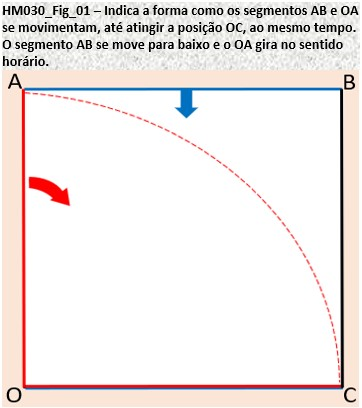
(2)Parte 2: Com isso, é possível verificar que existe uma proporcionalidade entre o comprimento do arco AC e o comprimento do segmento BC.
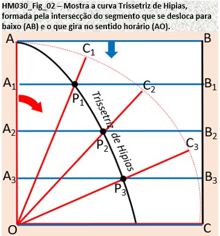
Pela figura HM030_Fig_02, fica evidente que:
(2.1) quando o segmento OA percorreu ¼ do arco AC (posição OC1 ), o segmento AB percorreu ¼ do comprimento BC
(posição A1B1), com P1 sendo a intersecção entre os segmento OC1 e A1B1.
(2.2) quando o segmento OA percorreu ½ do arco AC (posição OC2 ), o segmento AB percorreu ½ do comprimento BC
(posição A2B2), com P2 sendo a intersecção entre os segmento OC2 e A2B2.
(2.3) quando o segmento OA percorreu ¾ do arco AC (posição OA3 ), o segmento AB percorreu ¾ do comprimento BC
(posição A3B3), com P3
sendo a intersecção entre os segmento OC3 e A3B3.
(3)Parte 3: O conjunto dos pontos dados pela intersecção dos segmentos AO e AB, ao longo da trajetória até a posição OC, irão formar a curva chamada de “Trissetriz de Hipias”.
A figura HM030_Fig_02 mostra alguns pontos da Trissetriz (P1, P2 e P3), gerados pelas intersecções dos segmentos AO e AB, se deslocando.
Construção e Uso do Compasso de Hipias:
(4)Parte 4: Com o que foi descrito anteriormente, é possível construir o “compasso de Hipias”, e com ele, é possível traçar a “curva de Hipias”.
Esse compasso é feito com duas pernas com sulcos vazados, conectadas com um pino que desliza pelos sulcos, conforme se movimenta (figura HM030_Fig_03):
(4.1) Perna 1: se desloca na direção vertical, mas permanecendo sempre na horizontal;
(4.2) Perna 2: gira no sentido horário, em trono do ponto O.
Com uma barrinha usada para escrever, colocada próxima ao pino de conexão das pernas, é possível traçar a Trissetriz.
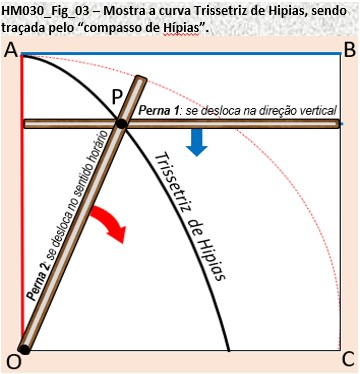
(5)Parte 5: Uso do compasso e da Trissetriz para dividir um ângulo a em 3 partes (figura HM030_Fig_04).
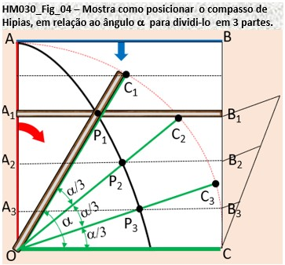
Posicionar o compasso de modo que:
(5.1) o pino que conecta as pernas fique sobre a curva Trissetriz e
simultaneamente, a perna que se desloca girando (Perna 2) seja alinhada com o lado “não horizontal” do ângulo α;
(5.2) com o compasso posicionado, como descrito no item anterior, traçar o segmento horizontal A1B1;
(5.3) dividir o segmento vertical B1C em 3 partes iguais (a divisão poderia ser em mais partes), usando o teorema de Tales.
(5.4) Com essa divisão, serão determinados os pontos B2 e B3. A partir destes pontos traçar segmentos de retas horizontais
que irão interceptar a Trissectriz nos pontos P2 e P3.
(5.5) Traçar dois segmentos de reta partindo do ponto O, sendo que um deles passa por P2 e o outro passa por P3.
Com isso, o ângulo α estará dividido em 3 partes;
O resultado da divisão pode ser visto pelos comprimentos iguais dos arcos C1C2, C2C3 e C3C.
Voltar ao Índice de Itens de Matemática!
HM031: Incomensuráveis (Grandezas expressas por Números Irracionais) :
Incomensuráveis referem-se a grandezas expressas por números irracionais, ou seja, números que não podem ser representados como frações de inteiros
e cujas expansões decimais não se repetem ou terminam. O termo está relacionado principalmente com a ideia de grandezas que não podem ser medidas ou comparadas exatamente usando números racionais.
Segundo a doutrina pitagórica, a essência de todas as coisas, na geometria bem como nos negócios práticos e teóricos do homem, pode ser explicada em termos de arithmos,
ou propriedades intrínsecas de números inteiros ou suas razões. E embora haja a versão de que essa descoberta tenha causado uma crise no pensamento pitagórico, existe outra,
informando que, em fontes mais confiáveis, não há evidências de que essa crise tenha existido realmente.
Um exemplo clássico de grandezas incomensuráveis está na geometria, mais especificamente na relação entre o lado e a diagonal de um quadrado.
Se você considerar um quadrado com lados de comprimento 1 unidade, a diagonal desse quadrado terá um comprimento irracional, especificamente a raiz quadrada de 2.
A demonstração de que a raiz quadrada de 2 é irracional é um dos resultados mais antigos conhecidos na matemática grega.
Ela mostra que não é possível representar a diagonal de um quadrado unitário como uma fração de dois inteiros.
Isso implica que o lado e a diagonal de um quadrado com lados de comprimento 1 não são "comensuráveis" em termos de números racionais.
Outros exemplos de números irracionais incluem a constante pi (π) e a constante de Euler (e). Esses números aparecem em várias áreas da matemática e não podem ser expressos como frações simples.
Voltar ao Índice de Itens de Matemática!
HM032: Aristóteles e a obra Organon (384 a.C.) :
MMMMMMM
Voltar ao Índice de Itens de Matemática!
HM09==>HM033: Eudóxio de Cnido (408 A.C. - 355 A.C.):
Eudóxio de Cnido foi um matemático e astrônomo grego que viveu na antiga Grécia. Ele é conhecido por suas contribuições em várias áreas da matemática e astronomia,
especialmente por seus estudos sobre sólidos geométricos, proporções e teoria dos números. Segue um resumo de seus principais trabalhos:
(1) Teoria dos Números: Ele estudou os números perfeitos (números iguais à soma de seus divisores próprios) e elaborou teoremas relacionados a eles.
Ele também estudou os números amigáveis (pares de números cuja soma de divisores próprios é igual ao outro número) e aprofundou
os estudos sobre proporções.
(2) Geometria: Ele estudou os cinco sólidos platônicos (sólidos geométricos regulares) - tetraedro, cubo, octaedro, dodecaedro e icosaedro - e suas propriedades,
incluindo a relação entre seus ângulos e faces. Sua obra "As Naves" abordava as estruturas geométricas e a teoria dos poliedros.
(3) Astronomia: Sabe-se que ele fez importantes contribuições nessa área, embora não tenham chegado até os dias atuais obras de sua autoria sobre este tema.
Foi aluno de Platão e seus trabalhos influenciaram estudiosos posteriores, como Calipo de Cízico e Aristóteles.
(4) Sistema de Ensino: Eudóxio fundou uma escola em Cnido onde desenvolveu um método de ensino que enfatizava a lógica, o rigor matemático e a investigação sistemática.
Isso causou um impacto significativo na educação matemática da época e influenciou gerações posteriores de matemáticos e astrônomos.
A sua influência pode ser vista, também, nas obras de matemáticos posteriores, como Euclides e Arquimedes.
Voltar ao Índice de Itens de Matemática!
HM034: xxxx :
MMMMMMM
Voltar ao Índice de Itens de Matemática!
HM035: Aristarco de Samos e o Heliocentrismo (310 a.C.) :
MMMMMMM
Voltar ao Índice de Itens de Matemática!
HM036: Ptolomeu I (Sóter) do Egito (-306 a.C.) :
MMMMMMM
Voltar ao Índice de Itens de Matemática!
HM10==>HM037: Euclides de Alexandria (300 A.C.) :
Euclides de Alexandria é considerado um dos pais da geometria (geometria euclidiana), foi um matemático grego que viveu
por volta de 300 A.C. Dentre seus trabalhos, o mais conhecido é o livro "Elementos". Essa obra, escrita em grego e que se tornou uma
referência fundamental no campo da matemática por muitos séculos, é composta por treze volumes divididos da seguinte forma:
(1) cinco sobre geometria plana;
(2) três sobre números;
(3) um sobre a teoria das proporções;
(4) um sobre incomensuráveis e
(5) três (os últimos) sobre geometria no espaço.
Tudo isso, compondo compilação metódica e ordenada de 465 proposições. O livro foi copiado e recopiado inúmeras vezes após sua
primeira edição e, em 774, foi traduzido do grego para o árabe. A sua primeira versão impressa, uma tradução do árabe para o latim,
foi feita em 1482 (Veneza, Itália), e, a partir daí, o livro teve mais de 100 edições. Segundo George Simmons, matemático norte-americano,
a influência do livro "Os Elementos" sobre a mente humana, só é superada pela Biblia.
Voltar ao Índice de Itens de Matemática!
HM11==>HM038: Arquimedes de Siracusa (287 A.C. - 212 A.C.):
Arquimedes de Siracusa (287–212 a.C.) foi um físico, matemático e inventor grego. Fez contribuições em várias áreas, como geometria,
mecânica, hidrostática e matemática aplicada. A maioria dos seus trabalhos é citada em referências de trabalhos posteriores,
dado que os originais foram perdidos ao longo dos séculos. Seus principais trabalhos foram:
(1) Leis da Alavanca e do Equilíbrio: ele demonstrou a relação entre as distâncias das forças aplicadas na alavanca e a carga levantada;
(2) Estudos em Hidrostática: ele enunciou o princípio que hoje é conhecido como o "Princípio de Arquimedes": um corpo imerso em um fluido
recebe uma força de empuxo igual ao peso do fluido deslocado pelo corpo, o que explicou porque os objetos flutuam ou afundam em líquidos;
(3) Cálculo de Áreas e Volumes: desenvolveu métodos para calcular volumes de sólidos e áreas de formas planas.
Entre eles destacam-se:
(3.1) o "método da exaustão", para calcular a área sob uma curva
(3.2) o método para estimar o valor de pi (π), relação entre a circunferência e o diâmetro de um círculo, usando polígonos inscritos e circunscritos
(4) Invenções: aqui ele usou suas habilidades matemáticas e científicas para projetar máquinas de guerra, como guindastes e catapultas, que foram usadas
para defender Siracusa durante as guerras púnicas. Arquimedes morreu no ano de 212 A.C., durante a Segunda Guerra Púnica, quando os romanos invadiram sua cidade.
Mesmo sob ordens de mantê-lo vivo, um soldado desferiu um golpe de espada contra o inventor. Segundo relatos, Arquimedes teria se recusado a
acompanhar o soldado, porque ainda não havia finalizado os cálculos que estava executando no momento.
Voltar ao Índice de Itens de Matemática!
HM039: Aristarco e a Astronomia Heliocêntrica (260 a.C.) :
MMMMMMM
Voltar ao Índice de Itens de Matemática!
HM040: Erastóstenes de Cirene e a Medida da Circunferência Terrestre (230 a.C.) :
MMMMMMM
Voltar ao Índice de Itens de Matemática!
HM041: Apolônio e as Cônicas (225 a.C.) :
MMMMMMM
Voltar ao Índice de Itens de Matemática!
HM042: xxxx :
MMMMMMM
Voltar ao Índice de Itens de Matemática!
HM043: Hipsicles e o Círculo de 360 graus (50 a.C.) :
MMMMMMM
Voltar ao Índice de Itens de Matemática!
HM044: xxxx :
MMMMMMM
Voltar ao Índice de Itens de Matemática!
HM045: Heron de Alexandria (75 d.C.) :
MMMMMMM
Voltar ao Índice de Itens de Matemática!
HM046: xxxx :
MMMMMMM
Voltar ao Índice de Itens de Matemática!
HM047: Ptolomeu e O Almagesto (150 d.C.) :
MMMMMMM
Voltar ao Índice de Itens de Matemática!
HM048: Diofanto de Alexandria o "Pai da Álgebra" (201 d.C.) :
MMMMMMM
Voltar ao Índice de Itens de Matemática!
HM049: xxxx :
MMMMMMM
Voltar ao Índice de Itens de Matemática!
HM050: Hipátia (415 d.C.) :
MMMMMMM
Voltar ao Índice de Itens de Matemática!
HM051: Isidoro de Mileto (442 d.C) :
MMMMMMM
Voltar ao Índice de Itens de Matemática!
HM052: Tsu Ch' ung-Chi e o valor de Pi (470 d.C) :
MMMMMMM
Voltar ao Índice de Itens de Matemática!
HM053: xxxx :
MMMMMMM
Voltar ao Índice de Itens de Matemática!
HM054: Abu Jafar Maomé ibne Muça (780 d.C) :
MMMMMMM
Voltar ao Índice de Itens de Matemática!
HM055: xxxx :
MMMMMMM
Voltar ao Índice de Itens de Matemática!
HM056: Al-Khowarizmi e a Álgebra (830 d.C) :
MMMMMMM
Voltar ao Índice de Itens de Matemática!
HM057: xxxx :
MMMMMMM
Voltar ao Índice de Itens de Matemática!
HM058: Omar Caiam (1048) :
MMMMMMM
Voltar ao Índice de Itens de Matemática!
HM059: Abu Amir Iúçufe ibne Amade ibne Hude (1085) :
MMMMMMM
Voltar ao Índice de Itens de Matemática!
HM060: Bhaskara e a Fala Sobre o Infinito como Sendo o Inverso do Zero (1100) :
MMMMMMM
Voltar ao Índice de Itens de Matemática!
HM061: xxxx :
MMMMMMM
Voltar ao Índice de Itens de Matemática!
HM062: Leonardo de Pisa, conhecido como Fibonacci (1202) :
MMMMMMM
Voltar ao Índice de Itens de Matemática!
HM063: xxxx :
MMMMMMM
Voltar ao Índice de Itens de Matemática!
HM064: Invenção da Imprensa (1440) :
MMMMMMM
Voltar ao Índice de Itens de Matemática!
HM065: xxxx :
MMMMMMM
Voltar ao Índice de Itens de Matemática!
HM066: Scipione del Ferro (1465) :
MMMMMMM
Voltar ao Índice de Itens de Matemática!
HM067: xxxx :
MMMMMMM
Voltar ao Índice de Itens de Matemática!
HM068: Widmann e o Uso dos Sinais + e - (1489) :
MMMMMMM
Voltar ao Índice de Itens de Matemática!
HM069: Pellos e o uso do Ponto Decimal (1492) :
MMMMMMM
Voltar ao Índice de Itens de Matemática!
HM070: Paciolli e a Summa (1494) :
MMMMMMM
Voltar ao Índice de Itens de Matemática!
HM071: Nicolau Copérnico Propõe o Sistema Heliocêntrico (1510) :
MMMMMMM
Voltar ao Índice de Itens de Matemática!
HM072: xxxx :
MMMMMMM
Voltar ao Índice de Itens de Matemática!
HM073: Tartaglia e a Solução da Equação Cúbica x3+px=q (1534) :
MMMMMMM
Voltar ao Índice de Itens de Matemática!
HM075: Cardano e a Ars Magna (1545) :
MMMMMMM
Voltar ao Índice de Itens de Matemática!
HM076: xxxx :
MMMMMMM
Voltar ao Índice de Itens de Matemática!
HM077: Rafael Bombelli e os Números Complexos (1571) :
MMMMMMM
Voltar ao Índice de Itens de Matemática!
HM078: Viète e a Canon Mathematicus (1579) :
MMMMMMM
Voltar ao Índice de Itens de Matemática!
HM079: xxxx :
MMMMMMM
Voltar ao Índice de Itens de Matemática!
HM080: John Napier Inventa os Logaritmos Naturais ou Neperianos (1614) :
MMMMMMM
Voltar ao Índice de Itens de Matemática!
HM081: Bürgi e os Logaritmos (1620) :
MMMMMMM
Voltar ao Índice de Itens de Matemática!
HM082: Francis Bacon (1626) :
MMMMMMM
Voltar ao Índice de Itens de Matemática!
HM083: Willebrord Snellius (1621) :
MMMMMMM
Voltar ao Índice de Itens de Matemática!
HM084: Hervey e a Descrição da Circulação Sanguínea (1628) :
MMMMMMM
Voltar ao Índice de Itens de Matemática!
HM085: Fermat e o Método de Máximos e Mínimos (1629) :
MMMMMMM
Voltar ao Índice de Itens de Matemática!
HM086: Christiaan Huygens e a teoria Ondulatória da Luz (1629) :
MMMMMMM
Voltar ao Índice de Itens de Matemática!
HM087: xxxx :
MMMMMMM
Voltar ao Índice de Itens de Matemática!
HM088: Robert Hooke e a Microscopia (1635) :
MMMMMMM
Voltar ao Índice de Itens de Matemática!
HM089: René Descartes e a Geometria Analítica (1637) :
MMMMMMM
Voltar ao Índice de Itens de Matemática!
HM090: Girard Desargues e a Geometria Projetiva (1639 :
MMMMMMM
Voltar ao Índice de Itens de Matemática!
HM091: Pascal e a teoria das Probabilidades (1640) :
MMMMMMM
Voltar ao Índice de Itens de Matemática!
HM092: Evangelista Torricelli e o Barômetro (1644) :
MMMMMMM
Voltar ao Índice de Itens de Matemática!
HM093: xxxx :
MMMMMMM
Voltar ao Índice de Itens de Matemática!
HM094: Wilfred Leibniz e a Co-criação do Cálculo Diferencial (1694) :
MMMMMMM
Voltar ao Índice de Itens de Matemática!
HM095: Brook Taylor e a série de Taylor (1685) :
MMMMMMM
Voltar ao Índice de Itens de Matemática!
HM096: Isaac Newton e o Principia (1687) :
MMMMMMM
Voltar ao Índice de Itens de Matemática!
HM097: xxxx :
MMMMMMM
Voltar ao Índice de Itens de Matemática!
HM098: L`Hospital e a Regra (1699) :
MMMMMMM
Voltar ao Índice de Itens de Matemática!
HM099: xxxx :
MMMMMMM
Voltar ao Índice de Itens de Matemática!
HM100: Gabriel Cramer e a Regra de Cramer (1704) :
MMMMMMM
Voltar ao Índice de Itens de Matemática!
HM101: xxxx :
MMMMMMM
Voltar ao Índice de Itens de Matemática!
HM102: Taylor e o Methodus incrementorum (1715) :
MMMMMMM
Voltar ao Índice de Itens de Matemática!
HM103: Giovanni Fagnano e as Funções Elipticas (1715) :
MMMMMMM
Voltar ao Índice de Itens de Matemática!
HM104: Fahreinheit e o Termómetro (1718) :
MMMMMMM
Voltar ao Índice de Itens de Matemática!
HM105: xxxx :
MMMMMMM
Voltar ao Índice de Itens de Matemática!
HM106: Réaumur e o seu Termômetro (1730) :
MMMMMMM
Voltar ao Índice de Itens de Matemática!
HM107: Abraham De Moivre e a “Miscellanea Analytica” (1730) :
MMMMMMM
Voltar ao Índice de Itens de Matemática!
HM109: James Watt (1736) :
MMMMMMM
Voltar ao Índice de Itens de Matemática!
HM0110: xxxx :
MMMMMMM
Voltar ao Índice de Itens de Matemática!
HM111: Lambert demonstra que PI é um número irracional (1737) :
MMMMMMM
Voltar ao Índice de Itens de Matemática!
HM112: Daniel Bernoulli e a Hidrodynamica (1738) :
MMMMMMM
Voltar ao Índice de Itens de Matemática!
HM113: Maclaurin e a Treatise of Flusions (1742) :
MMMMMMM
Voltar ao Índice de Itens de Matemática!
HM114: Termômetro Centígrado (1742) :
MMMMMMM
Voltar ao Índice de Itens de Matemática!
HM115: Jean Le R. D'Alembert e a Traité de Dynamique (1743) :
MMMMMMM
Voltar ao Índice de Itens de Matemática!
HM116 xxxx :
MMMMMMM
Voltar ao Índice de Itens de Matemática!
HM117: Diderot e o Volume I da Encyclpéddie (1751) :
MMMMMMM
Voltar ao Índice de Itens de Matemática!
HM118: Franklin e a Pipa (1752) :
MMMMMMM
Voltar ao Índice de Itens de Matemática!
HM119: xxxx :
MMMMMMM
Voltar ao Índice de Itens de Matemática!
HM120: Paolo Ruffini e o Teorema de Ruffini (1765) :
MMMMMMM
Voltar ao Índice de Itens de Matemática!
HM121: xxxx :
MMMMMMM
Voltar ao Índice de Itens de Matemática!
HM122: André-Marie Ampère e a lei de Ampère (1775) :
MMMMMMM
Voltar ao Índice de Itens de Matemática!
HM123: xxxx :
MMMMMMM
Voltar ao Índice de Itens de Matemática!
HM124: Siméon Denis Poisson e a Distribuição de Poisson (1781) :
MMMMMMM
Voltar ao Índice de Itens de Matemática!
HM125: xxxx :
MMMMMMM
Voltar ao Índice de Itens de Matemática!
HM126: Charles Babbage e a Máquina Analítica (1791) :
MMMMMMM
Voltar ao Índice de Itens de Matemática!
HM127: John Frederick William Herschel e a Invenção do Termo Fotografia (1792) :
MMMMMMM
Voltar ao Índice de Itens de Matemática!
HM128: Legendre e o Éléments de Géometrie (1794) :
MMMMMMM
Voltar ao Índice de Itens de Matemática!
HM129: xxxx :
MMMMMMM
Voltar ao Índice de Itens de Matemática!
HM130: Sistema métrico (1799) :
MMMMMMM
Voltar ao Índice de Itens de Matemática!
HM131: Pilha de Volta (1800) :
MMMMMMM
Voltar ao Índice de Itens de Matemática!
HM132: Karl Fredrich Gauss, o Fundador da Estatística Matemática (1800) :
MMMMMMM
Voltar ao Índice de Itens de Matemática!
HM133: Lazare Carnot e a Géométrie de Position (1803) :
MMMMMMM
Voltar ao Índice de Itens de Matemática!
HM134: xxxx :
MMMMMMM
Voltar ao Índice de Itens de Matemática!
HM135: Lejeune Dirichlet e a Série de Dirichlet (1805) :
MMMMMMM
Voltar ao Índice de Itens de Matemática!
HM136: William Rowan Hamilton e os Quaternions (1805) :
MMMMMMM
Voltar ao Índice de Itens de Matemática!
HM137: Augustus De Morgan e a Lógica Formal (1806) :
MMMMMMM
Voltar ao Índice de Itens de Matemática!
HM138: Jean-Robert Argand e a Repres. Geométr. dos Núm. Complexos (1806) :
MMMMMMM
Voltar ao Índice de Itens de Matemática!
HM139: Jean Joseph Fourier e as Séries Trigonométricas (1807) :
MMMMMMM
Voltar ao Índice de Itens de Matemática!
HM140: Joseph Liouville e o "Teorema de Liouville" (1809) :
MMMMMMM
Voltar ao Índice de Itens de Matemática!
HM141: xxxx :
MMMMMMM
Voltar ao Índice de Itens de Matemática!
HM143: xxxx :
MMMMMMM
Voltar ao Índice de Itens de Matemática!
HM144: Augustin Louis Cauchy e o Conceito de "Limite" (1814) :
MMMMMMM
Voltar ao Índice de Itens de Matemática!
HM145: George Boole e a Álgebra de Boleana (1815) :
MMMMMMM
Voltar ao Índice de Itens de Matemática!
HM146: xxxx :
MMMMMMM
Voltar ao Índice de Itens de Matemática!
HM147: Yond e Fresnel e as Vibrações Ópticas Transversais (1817) :
MMMMMMM
Voltar ao Índice de Itens de Matemática!
HM148: Charles Briot e as Funções Elipticas (1817) :
MMMMMMM
Voltar ao Índice de Itens de Matemática!
HM149: George Gabriel Stokes e a Lei de Stokes (1819) :
MMMMMMM
Voltar ao Índice de Itens de Matemática!
HM150: xxxx :
MMMMMMM
Voltar ao Índice de Itens de Matemática!
HM151: Rudolf Julius Emanuel Clausius e a Definição de Entropia (1822) :
MMMMMMM
Voltar ao Índice de Itens de Matemática!
HM152: xxxx :
MMMMMMM
Voltar ao Índice de Itens de Matemática!
HM153: Niels Henrik Abel e o Teorema de Abel Ruffini (1824) :
MMMMMMM
Voltar ao Índice de Itens de Matemática!
HM154: Nicolas Léonard Sadi Carnot e a Potência Motriz do Fogo (1824) :
MMMMMMM
Voltar ao Índice de Itens de Matemática!
HM155: Ampere e a Eletrodinâmica (1826) :
MMMMMMM
Voltar ao Índice de Itens de Matemática!
HM156: xxxx :
MMMMMMM
Voltar ao Índice de Itens de Matemática!
HM157: Georg Simon Ohm e a Lei de Ohm (1827) :
MMMMMMM
Voltar ao Índice de Itens de Matemática!
HM158: Green e a Eletricity and Magnetism (1828) :
MMMMMMM
Voltar ao Índice de Itens de Matemática!
HM159: xxxx :
MMMMMMM
Voltar ao Índice de Itens de Matemática!
HM160: Carl G. J. Jacobi e o "Jacobiano" (1829) :
MMMMMMM
Voltar ao Índice de Itens de Matemática!
HM161: xxxx :
MMMMMMM
Voltar ao Índice de Itens de Matemática!
HM162: Evariste Galois e a Teoria de Grupos (1830) :
MMMMMMM
Voltar ao Índice de Itens de Matemática!
HM163: xxxx :
MMMMMMM
Voltar ao Índice de Itens de Matemática!
HM164: Primeiro Telégrafo (1836) :
MMMMMMM
Voltar ao Índice de Itens de Matemática!
HM165: xxxx :
MMMMMMM
Voltar ao Índice de Itens de Matemática!
HM166: Hermann Grassmann e a “Teoria das Correntes e Marés” (1844) :
MMMMMMM
Voltar ao Índice de Itens de Matemática!
HM167: xxxx :
MMMMMMM
Voltar ao Índice de Itens de Matemática!
HM168: Johann Peter Gustav Lejeune Dirichlet e o Teorema de Dirichlet (1855) :
MMMMMMM
Voltar ao Índice de Itens de Matemática!
HM169: xxxx :
MMMMMMM
Voltar ao Índice de Itens de Matemática!
HM170: Bernhard Riemann e a Hipótese de Riemann (1859) :
MMMMMMM
Voltar ao Índice de Itens de Matemática!
HM171: xxxx :
MMMMMMM
Voltar ao Índice de Itens de Matemática!
HM172: Dmitri Ivanovich Mendeleev e a Tabela Periódica (1869) :
MMMMMMM
Voltar ao Índice de Itens de Matemática!
HM173: xxxx :
MMMMMMM
Voltar ao Índice de Itens de Matemática!
HM174: James Clerk Maxwell e o Eletromagnetismo (1873) :
MMMMMMM
Voltar ao Índice de Itens de Matemática!
HM175: xxxx :
MMMMMMM
Voltar ao Índice de Itens de Matemática!
HM176: Telefone de Bell (1876) :
MMMMMMM
Voltar ao Índice de Itens de Matemática!
HM177: xxxx :
MMMMMMM
Voltar ao Índice de Itens de Matemática!
HM178: Georg Ferdinand Ludwig Philipp Cantor e a Teoria dos Conjuntos (1879) :
MMMMMMM
Voltar ao Índice de Itens de Matemática!
HM179: Josiah Willard Gibbs e o Cálculo Vetorial (1881) :
MMMMMMM
Voltar ao Índice de Itens de Matemática!
HM180: xxxx :
MMMMMMM
Voltar ao Índice de Itens de Matemática!
HM181: Fundação do Instituro Pasteur (1888) :
MMMMMMM
Voltar ao Índice de Itens de Matemática!
HM182: xxxx :
MMMMMMM
Voltar ao Índice de Itens de Matemática!
HM183: Poincaré e a Analysis Situs (1895) :
MMMMMMM
Voltar ao Índice de Itens de Matemática!
HM184: Roentgen e a Descoberta dos Raios-X (1895) :
MMMMMMM
Voltar ao Índice de Itens de Matemática!
HM185: Hadamard e Poussin e a Prova do Teor. dos Núm. Primos (1896) :
MMMMMMM
Voltar ao Índice de Itens de Matemática!
HM186: J. J. Thomson e a Descobera do Eletron (1897) :
MMMMMMM
Voltar ao Índice de Itens de Matemática!
HM187: xxxx :
MMMMMMM
Voltar ao Índice de Itens de Matemática!
HM188: David Hilbert e o Fundamentos da Geometria (1899) :
MMMMMMM
Voltar ao Índice de Itens de Matemática!
HM189: Planck e Teoria Quântica (1901) :
MMMMMMM
Voltar ao Índice de Itens de Matemática!
HM190: xxxx :
MMMMMMM
Voltar ao Índice de Itens de Matemática!
HM191: Primeiro Vôo com Motor (1903) :
MMMMMMM
Voltar ao Índice de Itens de Matemática!
HM192: xxxx :
MMMMMMM
Voltar ao Índice de Itens de Matemática!
HM193: Srinivāsa Rāmānujan e a Função Teta (1913) :
MMMMMMM
Voltar ao Índice de Itens de Matemática!
HM194: xxxx :
MMMMMMM
Voltar ao Índice de Itens de Matemática!
HM195: Einstein e a Relatividade Geral (1916) :
MMMMMMM
Voltar ao Índice de Itens de Matemática!
HM196: Hardy e Ramanujan e a Teoria dos Números (1917) :
MMMMMMM
Voltar ao Índice de Itens de Matemática!
HM197: Banach e o Espaço de Banach (1923) :
MMMMMMM
Voltar ao Índice de Itens de Matemática!
HM198: Paul Adrien Maurice Dirac e a Teoria Quântica (1925) :
MMMMMMM
Voltar ao Índice de Itens de Matemática!
HM199: John von Neumann e o Método dos Modelos Interiores (1925) :
MMMMMMM
Voltar ao Índice de Itens de Matemática!
HM200: Erwin Schrödinger e a Equação de Schrödinger (1926) :
MMMMMMM
Voltar ao Índice de Itens de Matemática!
HM201: xxxx :
MMMMMMM
Voltar ao Índice de Itens de Matemática!
HM202: Alan Turing e a Máquina Universal (1936) :
MMMMMMM
Voltar ao Índice de Itens de Matemática!
HM203: xxxx :
MMMMMMM
Voltar ao Índice de Itens de Matemática!
HM204: Andrei Kolmogorov e os Fund. da Teoria das Probabilidades (1956) :
MMMMMMM
Voltar ao Índice de Itens de Matemática!
HM205: xxxx :
MMMMMMM
Voltar ao Índice de Itens de Matemática!
HM206: Primeiro homem na Lua (1969) :
MMMMMMM
Voltar ao Índice de Itens de Matemática!
HM207: Delgne Confirma as Conjecturas de Weil (1975) :
MMMMMMM
Voltar ao Índice de Itens de Matemática!
HM208: Sharp e Hewlett Packard e as Calculadoras Programáveis de Bolso (1975) :
MMMMMMM
Voltar ao Índice de Itens de Matemática!
HM209: xxxx :
MMMMMMM
Voltar ao Índice de Itens de Matemática!
HM210: xxxx :
MMMMMMM
Voltar ao Índice de Itens de Matemática!
2-Física:
(Voltar para Introdução!)
2.1-Apostila:
Link
- Atualização: 25/07/2023
2.2-Itens: de HF01 a HF75 (Finalizado!)
HF01: Anaximandro e a Filos. Natural (610 - 546 a.C.)
HF02: Leucipo e a Constituição da Matéria - Átomo (Sec. V A.C.)
HF03: Aristarco de Samos e o Heliocentrismo (310 - 230 a.C.)
HF04: Aristóteles e o Movimento dos Corpos (Sec. III A.C.)
HF05: Arquimedes e a Hidrostática (Sec. III A.C.)
HF06: Ptolomeu e o Sistema Geocênctrico (c. 90-168 d.C.)
HF07: Alhazzen e os Fenômenos Ópticos (1025)
HF08: Pierre de Maricourt e a Epístola do Magneto (1269)
HF09: Nicolau Copérnico e a Teoria Heliocêntrica (1510 a 1543)
HF10: Tycho Brahe e as melhores obs. astronôm. antes do telescópio
HF11: Galileu Galilei e o Estudo do Movimento do Pêndulo
HF12: Blaise Pascal e os Primeirros Trabalhos sobre o Vácuo
HF13: Torriceli e o Barômetro de Mercúrio
HF14: Boyle e a Lei de Boyle (Relac. Pres. e Vol. de um Gás) (1662)
HF15: Isaac Newton e a Gravitação (1665 e 1687)
HF16: Olaus Römer e a Velocidade Finita da Luz (1676)
HF17: Christiaan Huygens e a Teoria Ondulatória da Luz (1690)
HF18: Daniel Bernoulli e a Hipótese sobre os Gases (1738)
HF19: Benjamim Franklin e a Hipót. sobre Cargas Elétr. Pos. e Neg.
HF20: Coulomb e a Lei da Forças Eletrostáticas (1785)
HF21: William Herschel descobre e os Raios Infravermelhos (1800)
HF22: Thomas Young e o Comportamento Ondulatório da Luz (1801)
HF23: Johann Wilhelm Ritter descobre e a Rad. Ultravioleta (1801)
HF24: Hans Oersted e a Relaç. entre Forças Elétr. e Magn. (1820)
HF25: Ampère e as Leis da Eletrodinâmica (1820)
HF26: Faraday e os Fundamentos da Indução Eletromagnética (1821)
HF27: Carnot e a Termodinâmica (1824)
HF28: Ohm e a Lei que Relac. Voltag., Resit. e Corr. Elétr. (1827)
HF29: Maxwell e a Luz Descrita como Onda Eletromagnética (1831)
HF30: Becquerel e a Célula Fotovoltaica (1839)
HF31: Christian Doppler e o Efeito Doppler (1842)
HF32: Joule e a Equivalência Mecânica de Calor (1843)
HF33: Lorde Kelvin e a Temperatura Absoluta (1848)
HF34: Fizeau e a Medida da Velocidade da Luz (1849)
HF35: Rudolf Classius e a Segunda Lei da Termodinâmica (1850)
HF36: Kirchhoff e as Linhas Espectrais dos Dif. Elem. Quím. (1859)
HF37: Josiah Willard Gibbs e a Físico-Química (1878)
HF38: Michelson-Morley e o Experimento de Michelson-Morley (1881)
HF39: Boltzmann e a Mecânica Estatística (1884)
HF40: Hertz e o Efeito Fotoelétrico (1887)
HF41: Hendrik Lorentz e as Transformações de Lorentz (1895)
HF42: Wilheim Röntgen e o Raio X (1895)
HF43: Rutherford e os Átomos Radiativos (1896)
HF44: Max Planck e os "Pacotes" de Luz Chamados Quanta (1900)
HF45: Albert Einstein e os Quanta Vistos como Partículas (1905)
HF46: Minkowski e a Form. Matemát. da Teor. da Relativ. (1907)
HF47: Perrin e a Observação da Tamanho dos Átomos (1908)
HF48: Millikan e o Experimento da Gota de Óleo (1909)
HF49: Niels Bohr e a Prim. Descrição de um Átomo (1913)
HF50: Arnold Sommerfeld e o Modelo de Bohr-Sommerfeld (1916)
HF51: De Broglie e as Patículas-Onda (1923)
HF52: Wolfgang Pauli e o Princípio da Exclusão (1925)
HF53: Max Born e a Mecânica Matricial (1925)
HF54: Schrödinger e a Reform. da Imagem dos Átomos (1926)
HF55: Heisenberg e o Princípio da Incerteza (1927)
HF56: Dirac e a Equação de Dirac (1928)
HF57: Lemaître e Hubble e o Big Bang (1929)
HF58: James Chadwick e o Nêutron (1932)
HF59: Carl David Anderson e o Positron (1932)
HF60: Enrico Fermi e a Força Nuclear Fraca (1934)
HF61: Hideki Yukawa e a Força Nuclear Forte (1935)
HF62: Hahn e Strassmann e a Fissão do Núcleo do Urânio (1939)
HF63: Richard Feynman e a Integral de Feynman (1940)
HF64: Robert Oppenheimer e o Projeto Manhattan (1942)
HF65: Partículas Subatômicas: Mésons e Hípedrons (1947)
HF66: Reines e Cowan e a Detecção do Neutrino (1956)
HF67: Peter Higgs e o Bóson de Higgs (1964)
HF68: John Wheeler e o Buraco Negro (1967)
HF69: Murray Gell-Mann e os Quarks (1972)
HF70: Stephen Hawking e a Radiação Hawking (1974)
HF71: Alan Guth e a Teoria da Inflação Cósmica (1980)
HF72: Bednorz e K.A. Müller e os Supercondutores (1986)
HF73: Timothy Berners-Lee e a Inven. da Internet (1990)
HF74: Ashoke Sen e os Extremos de Buracos Negros (1998)
HF75: Michio Kaku e a Física do Futuro (2011)
HF65:
HF66:
Voltar ao Índice de Itens de Física!
HF01: Anaximandro e a Filos. Natural (610 - 546 a.C.) :
Anaximandro (610 - 546 a.C.) foi um filósofo pré-socrático grego e um dos primeiros pensadores a buscar explicações racionais e naturais para o mundo ao seu redor,
contribuindo para a filosofia natural, a cosmologia, a geografia e a ética. Preocupou-se em entender o funcionamento do Universo e sua origem.
Sua ênfase na busca pela explicação racional e sua introdução do conceito de "ápeiron" tiveram um impacto duradouro na filosofia e na ciência.
Seus maiores feitos foram relacionados a Astronomia. Desenvolveu métodos para medir a distância entre as estrelas, além disso,
diversas afirmações feitas pelo filósofo são observadas experimentalmente nos dias atuais. Embora muitos de seus escritos tenham se perdido ao longo do tempo,
suas ideias e contribuições para a filosofia e a ciência são notáveis (revisado!).
Aqui estão os principais trabalhos e ideias associados a Anaximandro:
(1) Cosmologia e Filosofia Natural: Anaximandro é lembrado por suas investigações sobre a natureza do universo e sua busca por
explicações racionais em vez de mitológicas. Ele foi um dos primeiros a se dedicar à filosofia natural,
uma abordagem que influenciou significativamente o desenvolvimento da ciência.
(2) Teoria do Ápeiron: Anaximandro introduziu o conceito do "ápeiron" (ou "infinito indeterminado") como a substância fundamental e eterna
da qual todas as coisas se originaram e para a qual todas as coisas retornam. Ele argumentou que essa substância era imperecível e que os elementos naturais surgiram dela.
(3) Geografia e Astronomia: Anaximandro também contribuiu para a geografia e a astronomia antigas,
fazendo mapas e estudando o movimento das estrelas e dos corpos celestes. Seus mapas eram uma das
primeiras tentativas registradas de representar geograficamente o mundo conhecido.
(4) Ética e Filosofia Moral: Embora menos conhecido por isso, Anaximandro também explorou questões éticas e morais em seus escritos.
Ele questionou os fundamentos da moralidade baseada em normas culturais e religiosas, buscando uma ética mais universal e racional.
(5) Influência na Filosofia Antiga: Anaximandro exerceu influência sobre muitos outros filósofos pré-socráticos,
incluindo seu aluno Anaxímenes e o filósofo posterior Heráclito. Sua abordagem pioneira à filosofia natural ajudou a pavimentar
o caminho para o desenvolvimento posterior da filosofia ocidental.
(6) Escritos Perdidos: Infelizmente, nenhum dos escritos originais de Anaximandro sobreviveu até os dias de hoje.
O que conhecemos de suas ideias e trabalhos vem de relatos e referências em escritos de filósofos posteriores.
Voltar ao Índice de Itens de Física!
HF02: Leucipo e a Constituição da Matéria - Átomo (Sec. V A.C.) :
Leucipo foi um filósofo e cientista grego pré-socrático que viveu por volta do século V a.C.
Junto com seu discípulo Demócrito, Leucipo desenvolveu a ideia de que o mundo é composto por partículas invisíveis e indivisíveis chamadas átomos.
É de autoria desses dois cientistas, a obra Teoria da Constituição da Matéria. Essa teoria afirmava que toda a matéria era composta por átomos, que eram unidades fundamentais e indivisíveis.
Esses átomos eram eternos, infinitos em número e variavam em forma e tamanho. A diferença nas propriedades e características dos materiais seria resultado das diferentes combinações,
arranjos e movimentos dos átomos. Leucipo também postulou a existência do vazio, ou "o nada", como o espaço no qual os átomos se moviam.
Esse vazio era necessário para que houvesse movimento e interação entre os átomos. Embora a teoria atomista de Leucipo tenha contribuído para a compreensão da natureza da matéria
e influenciado o pensamento posterior, é importante notar que as ideias originais de Leucipo chegaram até nós principalmente através dos escritos de seus sucessores,
especialmente Demócrito. Nesse sentido, torna-se difícil discernir com precisão, nos escritos que chegaram até os nossos dias,
detalhes específicos das contribuições individuais de cada um desses cientistas.
A ideia de que a matéria é composta por unidades indivisíveis e fundamentais lançou as bases para a moderna compreensão da estrutura da matéria e
influenciou a filosofia e a ciência ao longo dos séculos.
Voltar ao Índice de Itens de Física!
HF03: Aristarco de Samos e o Heliocentrismo (310 - 230 a.C.) :
Aristarco de Samos (310 - 230 a.C.) foi um astrônomo e matemático grego antigo conhecido por suas contribuições significativas para o campo da astronomia.
Foi o primeiro filósofo a afirmar que a Terra movia-se em torno do Sol e fez contribuições para a medição de distâncias astronômicas
que tiveram um impacto duradouro na história da astronomia e no desenvolvimento do pensamento científico.
No entanto, o método desenvolvido por ele, para medir a distância relativa entre a Terra e o Sol, a partir da distância entre a Terra e a Lua,
não permitiu que chegasse a resultados corretos, em razão da precariedade dos instrumentos usados na época para a medição de ângulos.
Suas ideias foram revividas e valorizadas por cientistas posteriores, como Copérnico e Kepler, que continuaram a explorar o modelo heliocêntrico.
Aqui estão os principais trabalhos e realizações associados a Aristarco:
(1) Heliocentrismo: Aristarco é mais lembrado por ter desenvolvido uma teoria heliocêntrica do sistema solar, sugerindo que a Terra
e os outros planetas orbitam em torno do Sol. Isso contrastava com a visão geocêntrica predominante da época,
que colocava a Terra como o centro do universo. Sua ideia do heliocentrismo, no entanto, não foi amplamente aceita em sua época e
só foi revivida e desenvolvida por Nicolau Copérnico quase 2.000 anos depois.
(2) Medição da Distância à Lua: Aristarco fez uma estimativa notável da distância entre a Terra e a Lua, usando observações de um eclipse lunar.
Sua abordagem envolveu a medição dos ângulos envolvidos durante um eclipse penumbral da Lua, e ele chegou a uma estimativa
surpreendentemente precisa da distância relativa à Lua, embora em uma escala absoluta não muito próxima do valor atual (?).
(3) Medição do Tamanho da Lua e do Sol: Aristarco também calculou o tamanho relativo da Lua e do Sol,
com base em observações de seus diâmetros angulares durante um eclipse lunar.
(4) Contribuições à Trigonometria: Para realizar suas medições astronômicas, Aristarco fez contribuições à trigonometria,
desenvolvendo métodos trigonométricos que seriam posteriormente úteis para outros astrônomos e matemáticos.
(5) Influência no Pensamento Científico: Embora suas ideias heliocêntricas não tenham sido amplamente aceitas em sua época,
Aristarco teve um impacto duradouro na evolução do pensamento científico. Sua abordagem racional e suas tentativas de medir e
quantificar fenômenos astronômicos contribuíram para a transição da mitologia e da
especulação filosófica para uma abordagem mais empiricamente baseada na astronomia.
Voltar ao Índice de Itens de Física!
HF04: Aristóteles e o Movimento dos Corpos (Sec. III A.C.) :
Aristóteles elaborou um sistema filosófico para a explicação do movimento dos corpos e do mundo físico que o cercava.
Para Aristóteles, toda e qualquer matéria era composta de quatro elementos: Terra, Água, Ar e Fogo, e esses elementos tinham posições determinadas no Universo.
O lugar natural do fogo e do ar era sempre acima do lugar natural da água e da terra. Desse modo explicava porque uma pedra e a chuva caem: seus lugares naturais eram terra e água.
Analogamente, a fumaça e o vapor sobem em busca de seus lugares naturais acima da terra. Aristóteles também elaborou várias outras teorias sobre ciências naturais que foram aceitas até a renascença.
A teoria de Aristóteles sobre o movimento dos corpos, dividido em natural e violento, desenvolvida na Grécia Antiga,
diverge significativamente das ideias contemporâneas sobre o movimento, pois é baseada na observação superficial e na filosofia.
Sua visão está enraizada na distinção entre o mundo sublunar (a Terra e sua atmosfera) e o mundo celestial (as esferas celestes).
Embora tenha sido influente em sua época, foi posteriormente substituída por abordagens científicas mais precisas e testáveis.
Essa abordagem filosófica influenciou a compreensão do movimento por séculos, mas suas limitações se tornaram evidentes com o progresso científico.
A revolução científica do Renascimento, liderada por cientistas como Galileu Galilei e Isaac Newton, desafiou as ideias aristotélicas e
introduziu abordagens mais rigorosas baseadas na observação experimental e na matemática.
Sobre o movimento, Aristóteles acreditava que era algo inerente à natureza dos objetos e que podia ser classificado em diferentes tipos:
(1) Movimento Natural: Ele argumentava que os corpos tinham um lugar natural para o qual se moviam.
Por exemplo, a Terra era considerada o centro do universo, e os objetos na Terra tinham uma tendência natural a cair em direção a ela,
enquanto os elementos mais leves, como o fogo, tinham uma tendência natural a subir.
(2) Movimento Violento: Além do movimento natural, Aristóteles introduziu a ideia de movimento violento.
Isso se referia a qualquer movimento que fosse imposto a um objeto além de sua natureza intrínseca. Por exemplo, empurrar um objeto era considerado um movimento violento.
Aristóteles também formulou a ideia de que o movimento ocorre por meio de uma série de causas:
(a) Causa Material: A substância física do objeto.
(b) Causa Formal: A forma ou natureza essencial do objeto.
(c) Causa Eficiente: A força ou agente que causa o movimento.
(d) Causa Final: O objetivo ou propósito do movimento.
Voltar ao Índice de Itens de Física!
HF05: Arquimedes e a Hidrostática (Sec. III A.C.) :
Arquimedes foi um matemático, físico e engenheiro grego da antiguidade clássica (287-212 a.C.) que fez importantes contribuições para diversos campos do conhecimento,
incluindo a hidrostática, que é a área da física que estuda os fluidos em repouso, como os líquidos e os gases.
Uma das descobertas mais famosas de Arquimedes na hidrostática é o princípio que leva o seu nome, o "Princípio de Arquimedes".
Esse princípio afirma que um corpo imerso em um fluido (líquido ou gás) sofre uma força de empuxo igual ao peso do fluido deslocado pelo corpo.
Em outras palavras, quando um objeto é colocado em um fluido, ele experimenta uma força de baixo para cima que é igual ao peso do fluido que foi deslocado pelo objeto.
A descoberta foi feita quando, tomando um banho um dia, ele notou que seu próprio corpo deslocava um volume de água.
Ao fazer a descoberta teria exclamando "Eureka!" (que significa "Eu encontrei!" em grego).
Uma aplicação notável desse princípio é a explicação do fenômeno da flutuação. Por exemplo, um navio flutua na água porque o peso da água que ele desloca
é igual ao seu próprio peso, criando um equilíbrio que permite que ele fique na superfície.
Entre outras coisas, Arquimedes também desenvolveu métodos para calcular o volume de objetos irregulares usando o princípio de que o
volume de água deslocado por um objeto submerso é igual ao seu próprio volume. Suas ideias foram marcantes para a compreensão da física dos fluidos,
e tiveram, também, uma influência duradoura na ciência e na engenharia.
Voltar ao Índice de Itens de Física!
HF06: Ptolomeu e o o Sistema Geocêntrico (90-168 d.C.): :
Claudio Ptolomeu, também conhecido como Ptolomeu (90-168 d.C.), foi um matemático, astrônomo e geógrafo grego que influenciou significativamente
o desenvolvimento do conhecimento científico durante a Antiguidade. Seu trabalho mais influente é "Almagesto", uma obra que aborda a astronomia e
descreve o sistema geocêntrico do universo. Embora muitas das ideias de Ptolomeu tenham sido posteriormente revisadas ou substituídas,
seu trabalho teve uma grande influência na ciência e na astronomia durante a Idade Média e a Renascença. Seu modelo geocêntrico do universo dominou o
pensamento ocidental por séculos antes de ser desafiado e substituído pela teoria heliocêntrica de Copérnico e por outros avanços científicos.
Principais contribuições e realizações de Ptolomeu:
(1) Sistema Geocêntrico: Ptolomeu é mais conhecido por propor e desenvolver o modelo geocêntrico do universo, no qual a Terra é o centro e os planetas,
o Sol e a Lua orbitam em órbitas circulares ao seu redor. Esse sistema foi uma interpretação elaborada da observação dos movimentos planetários a olho nu.
(2) Epiciclos e Deferentes: Para explicar os movimentos complexos dos planetas, Ptolomeu introduziu o conceito de epiciclos e deferentes.
Um epiciclo era um pequeno círculo no qual um planeta se movia, enquanto o centro do epiciclo girava em torno de outro ponto chamado deferente.
Essa abordagem permitia que ele explicasse as variações observadas nos movimentos dos planetas.
(3) Tabela de Cordas e Catástrofes: Ptolomeu também trabalhou na matemática e na teoria musical. Ele desenvolveu a "Tabela de Cordas",
uma tabela de valores trigonométricos que possibilitou a previsão de posições astronômicas. Além disso, ele estudou "catástrofes",
que eram formas de visualizar as mudanças abruptas em curvas e superfícies.
(4) Geografia: Ptolomeu também escreveu um trabalho chamado "Geografia", que compilou informações sobre a geografia
do mundo conhecido na época. Ele elaborou mapas detalhados, coordenadas geográficas e um sistema de projeção cartográfica.
Voltar ao Índice de Itens de Física!
HF07: Alhazzen e os Fenômenos Ópticos (1025) :
Alhazen, também conhecido como Ibn al-Haytham, foi um importante cientista, matemático e filósofo árabe que viveu no século X (965-1040 d.C.).
Ele fez contribuições significativas para o campo da óptica ao estudar os fenômenos ópticos. Propôs que os olhos humanos funcionam como
lentes captadoras de luz e que as pessoas só vêem porque são capazes de detectar a luz que é refletida por outros objetos.
Escreveu numerosas obras, traduzidas para o latim e para outras línguas europeias, obras essas que se notabilizaram pelo estilo e
pelas observações sobre os fenômenos da refração da luz, abordando, em especial, o fenômeno da refração atmosférica ao nascer e ao pôr do Sol.
Durante a Idade Média e o Renascimento as contribuições de Alhazen tiveram um grande impacto no desenvolvimento da óptica e influenciaram o pensamento ocidental sobre o assunto.
Uma de suas obras mais famosas é o "Livro da Óptica", onde ele investigou e explicou uma série de fenômenos relacionados à luz, visão e reflexão.
Suas contribuições incluem:
(1) Método Científico : Alhazen é frequentemente considerado um dos primeiros defensores do método científico moderno.
Ele enfatizou a importância da observação cuidadosa, experimentação e verificação empírica na busca pelo conhecimento.
Ele criticou as ideias aceitas sem evidências sólidas e enfatizou a necessidade de basear as conclusões em observações e experimentos.
(2) Reflexão e Refração: Alhazen investigou a reflexão da luz em superfícies espelhadas e a refração da luz
quando passa de um meio para outro, como do ar para a água. Ele formulou leis para explicar esses fenômenos,
antecipando conceitos que mais tarde seriam desenvolvidos por cientistas como Descartes e Snell.
(3) Câmera Escura: Alhazen estudou a câmera escura, um dispositivo óptico que projeta uma imagem invertida de um objeto externo em uma superfície interna.
Ele percebeu que a luz viaja em linhas retas e usou a câmera escura para explicar a formação de imagens invertidas.
(4) Teoria da Visão: Ele também explorou a forma como os olhos percebem a luz e a visão.
Ele corretamente deduziu que a luz entra no olho e é focada na retina, e que o cérebro interpreta as informações para formar a visão.
Voltar ao Índice de Itens de Física!
HF08: Pierre de Maricourt e a Epístola do Magneto (1269) :
Pierre de Maricourt, também conhecido como Petrus Peregrinus, foi um cientista e inventor francês do século XIII.
Sua obra mais conhecida é a "Epístola do Magneto" (ou "Epístola sobre o Ímã"), lançada em 88 de agosto de 1269.
É um tratado importante no campo da magnetismo. Nessa obra, ele explica como identificar os pólos de uma bússola.
Também descreve as leis da atração e repulsa magnética, bem como a descrição de bússolas, uma dos quais poderia
direcionar seus passos para cidades e ilhas e qualquer lugar do mundo.
A "Epístola do Magneto" é uma carta dirigida a um colega cientista, onde Pierre de Maricourt descreve suas observações
e experimentos relacionados a ímãs e magnetismo. O tratado é dividido em sete partes e oferece um conhecimento detalhado
sobre as propriedades dos ímãs e suas interações com outros objetos. Ela foi amplamente lida e estudada ao longo dos séculos e
contribuiu para o entendimento do magnetismo durante a Idade Média. Suas observações precisas e experimentos metodicamente realizados
demonstraram uma abordagem científica avançada para a época. O trabalho de Pierre de Maricourt ajudou a pavimentar o
caminho para os estudos posteriores sobre magnetismo e eletricidade, que mais tarde se tornaram fundamentais
para o desenvolvimento da física moderna.
Algumas das contribuições notáveis de Pierre de Maricourt na "Epístola do Magneto" incluem:
(1) Polaridade Magnética: Ele descreveu a existência de dois polos em um ímã, conhecidos como polo norte e polo sul. Ele observou que polos semelhantes se repeliam e polos opostos se atraíam.
(2) Efeito da Distância: Pierre de Maricourt observou que a força de atração ou repulsão entre ímãs diminui à medida que a distância entre eles aumenta.
(3) Atração Terrestre: Ele explorou a relação entre a atração magnética e a atração gravitacional da Terra, percebendo que a
Terra age como um grande ímã com um polo norte magnético próximo ao polo sul geográfico.
(4) Bússola Magnética: Ele discutiu o uso de uma agulha magnetizada flutuante como uma bússola para determinar a direção norte-sul, o que teve implicações significativas para a navegação.
Voltar ao Índice de Itens de Física!
HF09: Nicolau Copérnico e a Teoria Heliocêntrica (1510 a 1543) :
Nicolau Copérnico foi um astrônomo e matemático polonês do século XVI (1473-1543) que formulou a Teoria Heliocêntrica,
uma ideia revolucionária que desafiou a visão geocêntrica predominante na época e estabeleceu as bases para a revolução científica.
Essa teoria propunha que a Terra não estava no centro do universo, como afirmava a teoria geocêntrica de Ptolomeu,
mas sim orbitava ao redor do Sol, juntamente com os outros planetas. Ela trazia uma explicação mais simples e coerente sobre os movimentos planetários.
E pelo fato de se contrapor à visão geocêntrica defendida, até então, por parte da Igreja Católica e por outros estudiosos,
a teoria Heliocêntrica enfrentou forte resistência. No entanto, as ideias revolucionárias de Copernico
influenciaram gerações posteriores de cientistas e prepararam o terreno para o trabalho de Johannes Kepler e Galileu Galilei,
que desenvolveram a teoria heliocêntrica de forma mais completa e baseada em evidências.
As principais contribuições da teoria de Copérnico incluíam:
(1) Movimento dos Planetas: Copérnico argumentava que os movimentos aparentes dos planetas no céu poderiam ser explicados de forma
mais simples e elegante assumindo que eles orbitavam o Sol, em vez de moverem-se em órbitas complexas em torno da Terra.
(2) Explicação dos Retrógrados: Uma das razões pelas quais a visão geocêntrica era complicada era o movimento retrógrado dos planetas,
ou seja, suas aparentes inversões de direção no céu. A teoria heliocêntrica de Copérnico explicava esses movimentos como resultado
das diferentes velocidades orbitais da Terra e dos planetas externos.
(3) Simplicidade Matemática: A teoria heliocêntrica permitia um cálculo mais simples e preciso dos movimentos planetários
usando geometria e trigonometria, o que facilitava a previsão das posições dos planetas no céu.
Voltar ao Índice de Itens de Física!
HF10: Tycho Brahe e as melhores observações astronôm. antes do telescópio :
Tycho Brahe (1546-1601) foi um astrônomo e matemático dinamarquês conhecido por suas contribuições significativas para a astronomia.
Seus trabalhos tiveram um papel fundamental na transição entre a astronomia antiga e a modernas.
Seus dados e observações precisas forneceram a base empírica necessária para as descobertas subsequentes de
Kepler e para o avanço geral da astronomia moderna.
Contribuições e realizações de Tycho Brahe:
(1) Observações Astronômicas Detalhadas: Tycho realizou observações astronômicas precisas e sistemáticas ao longo de muitos anos,
registrando as posições de planetas, estrelas e outros corpos celestes com uma precisão sem precedentes para sua época.
Suas observações foram feitas a olho nu, mas com instrumentos de medição cuidadosamente projetados.
(2) Estrela Nova de 1572: Tycho foi o primeiro a observar uma "estrela nova" em 1572, uma estrela que
anteriormente não estava visível no céu. Esse evento contradizia a ideia aristotélica de que os corpos celestes eram
imutáveis e permanentes. Suas observações ajudaram a refutar essa visão e demonstraram que o espaço sideral não era imutável.
(3) Planetas e Cometas: Ele fez uma série de observações detalhadas dos movimentos dos planetas, especialmente de Marte.
Suas observações revelaram que as órbitas dos planetas eram mais complexas do que se acreditava anteriormente,
o que foi fundamental para o trabalho posterior de Johannes Kepler.
(4) Modelo Tychonico: Embora Tycho tenha mantido uma visão geocêntrica do universo,
ele desenvolveu um modelo híbrido que combinava o sistema de Ptolomeu (geocêntrico) com alguns elementos da teoria heliocêntrica de Copérnico.
Nesse modelo, os planetas orbitavam o Sol, mas o Sol e a Lua ainda orbitavam a Terra.
(5) Relação com Kepler: Tycho Brahe foi crucial para o trabalho de Johannes Kepler, fornecendo a ele dados
precisos sobre as órbitas planetárias. Kepler usou essas observações para formular suas famosas leis do movimento planetário.
Voltar ao Índice de Itens de Física!
HF11: Galileu Galilei e o Estudo do Movimento do Pêndulo :
Galileu Galilei (1564-1642) foi um cientista, matemático e astrônomo italiano que desempenhou um papel fundamental na revolução científica do século XVII.
Seus trabalhos pioneiros abrangeram uma ampla gama de campos, da física à astronomia, e suas observações e descobertas tiveram um impacto
profundo na compreensão da natureza. O estudo do movimento do pêndulo revelou que o seu período não depende da massa,
mas apenas do comprimento do fio. Galileu foi o primeiro a pensar que este fenômeno permitiria construir relógios muito mais precisos,
e chegou já no final da sua vida a trabalhar no mecanismo de escapo que mais tarde originaria o relógio de pêndulo.
Em Pisa realizou as suas famosas experiências de queda de corpos em planos inclinados. Nestas demonstra que a velocidade de queda
não depende do peso do corpo que cai, desde que a influência da resistência do ar não seja significativa.
As contribuições de Galileu como as observações telescópicas, as leis do movimento e a abordagem experimental ajudaram a estabelecer
os fundamentos da física moderna e da astronomia. As descobertas e ideias de Galileu foram, no entanto, controversas na época e o colocaram
em conflito com a Igreja Católica, que defendia a visão geocêntrica. Ele foi julgado pela Inquisição e forçado a retratar suas ideias heliocêntricas.
Permaneceu em prisão domiciliar pelo resto de sua vida.
Principais contribuições de Galileu Galilei:
(1) Telescópio Astronômico: Galileu foi o primeiro a usar o telescópio para observar os céus sistematicamente.
Suas observações revelaram montanhas e crateras na Lua, as fases de Vênus, as luas de Júpiter (as "luas galileanas") e as manchas solares.
Essas descobertas refutaram a visão geocêntrica do sistema solar e forneceram evidências a favor do modelo heliocêntrico de Copérnico.
(2) Leis do Movimento: Galileu desenvolveu as leis do movimento, que descrevem o movimento dos objetos na Terra
e em outras partes do universo. Ele postulou que os objetos caem com a mesma aceleração independente de seu peso e que o
movimento natural dos objetos é uniforme e retilíneo, a menos que uma força atue sobre eles.
(3) Princípio da Inércia: Galileu introduziu o princípio da inércia, afirmando que um objeto em repouso
permanecerá em repouso, e um objeto em movimento continuará em movimento a menos que uma força externa atue sobre ele.
Esse princípio foi fundamental para o desenvolvimento da mecânica clássica.
(4) Método Científico: Galileu defendeu o método científico baseado na observação, experimentação e
formulação de leis matemáticas para descrever o comportamento natural. Ele enfatizou a importância de testar
hipóteses e teorias por meio da experimentação.
Voltar ao Índice de Itens de Física!
HF12: Blaise Pascal e os Primeirros Trabalhos sobre o Vácuo :
Blaise Pascal (1623-1662) foi um cientista, matemático e filósofo francês que fez contribuições significativas para a física,
incluindo o estudo do vácuo, da pressão atmosférica, da teoria dos fluidos e da hidrostática.
Principais aspectos dos trabalhos de Pascal sobre o vácuo:
(1) Experimento do Vácuo: Pascal realizou um famoso experimento em 1647 para investigar a pressão atmosférica e a existência do vácuo.
Ele usou um tubo de vidro em forma de U e o encheu parcialmente com mercúrio. Ele observou que o mercúrio no tubo do lado da terra subia a
uma altura menor do que o lado aberto, sugerindo que a pressão atmosférica empurrava o mercúrio para cima.
(2) Efeito do Vácuo: O experimento de Pascal mostrou que o espaço acima da coluna de mercúrio no tubo estava praticamente vazio de ar,
criando o que é conhecido como vácuo parcial. Isso demonstrou que o vácuo poderia ser criado quando uma substância como o mercúrio impedia a passagem do ar.
(3) Lei de Pascal: Blaise Pascal também formulou a Lei de Pascal, que descreve como a pressão em um fluido é transmitida uniformemente em todas as direções.
Isso é conhecido como o princípio da pressão hidrostática e é essencial para entender o comportamento dos fluidos em repouso.
(4) Contribuições à Hidráulica: Com base em suas observações sobre a pressão e o vácuo,
Pascal também explorou as aplicações práticas da hidráulica, incluindo o funcionamento de prensas hidráulicas que usam fluidos para transmitir força.
Voltar ao Índice de Itens de Física!
HF13: Torriceli e o Barômetro de Mercúrio :
Evangelista Torricelli (1608-1647) foi um matemático e físico italiano conhecido por suas contribuições no estudo da pressão
atmosférica, fluidos e vácuo. Inventou um barômetro de mercúrio, que mais tarde levaria seu nome. Seus trabalhos ajudaram
a fundamentar a compreensão moderna da pressão atmosférica, da hidrostática e dos gases. Suas descobertas e formulações
não apenas enriqueceram a física experimental, mas também tiveram aplicações práticas em áreas como meteorologia, engenharia e indústria.
Contribuições e realizações de Evangelista Torricelli:
(1) Experimento do Barômetro: Uma de suas contribuições mais famosas foi a invenção do barômetro de mercúrio em 1643.
Ele percebeu que a coluna de mercúrio no tubo de um barômetro se equilibrava com a pressão atmosférica circundante.
Isso permitiu a medição da pressão atmosférica e levou ao desenvolvimento de um instrumento preciso para medir a pressão.
(2) Pressão Atmosférica e Vácuo: Torricelli concluiu que a coluna de mercúrio no barômetro não se mantinha no topo porque
o espaço acima dela estava vazio de ar, criando um vácuo. Isso implicava que a pressão atmosférica era capaz de sustentar
a coluna de mercúrio e, ao mesmo tempo, empurrar os líquidos em sistemas de bombeamento e sifões.
(3) Lei de Torricelli: Evangelista Torricelli formulou a "Lei de Torricelli", que descreve o fluxo de um líquido
através de um orifício em um recipiente. Essa lei relaciona a velocidade do fluxo, a área do orifício e a altura do líquido acima do orifício.
(4) Contribuições à Matemática: Torricelli fez avanços significativos na matemática, incluindo estudos sobre geometria e cálculo.
Ele também trabalhou com Galileu Galilei e foi influenciado por suas ideias.
Voltar ao Índice de Itens de Física!
HF14: Boyle e a Lei de Boyle (Relac. Pressão e Volume de um Gás) (1662) :
Robert Boyle (1627-1691) foi um físico, químico e filósofo irlandês conhecido por suas contribuições pioneiras para o
desenvolvimento da química moderna e por suas investigações sobre as propriedades dos gases. Demonstrou que demonstra que o ar pode ser comprimido,
formulando a lei que relaciona volume e pressão de um gás, que passaria a se chamar Lei de Boyle. Seus trabalhos tiveram um
impacto profundo na evolução da ciência experimental e ajudaram no estabelecimento de um modelo para a pesquisa científica rigorosa e sistemática.
Contribuições e realizações de Robert Boyle:
(1) Leis de Boyle-Mariotte: Boyle é famosamente conhecido por sua descoberta da relação entre o volume e a pressão de um gás,
conhecida como a Lei de Boyle-Mariotte. Essa lei estabelece que, mantendo-se a temperatura constante, o volume de um gás é
inversamente proporcional à sua pressão. Em outras palavras, quando a pressão de um gás aumenta, seu volume diminui, e vice-versa.
(2) Experimentos com Gases: Boyle realizou uma série de experimentos cuidadosamente projetados para investigar as propriedades dos gases.
Ele usou um dispositivo chamado de "tubo de Boyle" (um precursor do barômetro) para medir o comportamento dos gases em diferentes pressões.
(3) Conceito de Elemento Químico: Boyle contribuiu para a definição moderna de elemento químico.
Ele propôs que os elementos eram substâncias simples que não podiam ser divididas em outras substâncias mais simples
por meio de processos químicos conhecidos.
(4) Trabalho sobre a Natureza do Ar e da Matéria: Boyle explorou a natureza do ar,
percebendo que o ar é composto de partículas que têm espaço entre elas. Ele também defendeu a visão corpuscular da matéria,
acreditando que a matéria é composta por partículas indivisíveis em constante movimento.
(5) Método Experimental: Boyle foi um defensor fervoroso do método experimental,
enfatizando a importância da observação cuidadosa, do registro preciso de dados e da replicação de experimentos para validar resultados.
Voltar ao Índice de Itens de Física!
HF15: Isaac Newton e a Gravitação (1665 e 1687) :
Isaac Newton (1643-1727) foi um físico, matemático e astrônomo inglês, considerado uma das figuras mais influentes na história da ciência.
Suas contribuições abrangem uma ampla gama de campos, incluindo a física, a matemática e a astronomia. Seu trabalho sobre o movimento e a gravidade,
estabeleceu as bases para a física clássica e suas descobertas revolucionaram a nossa compreensão do universo
e influenciaram inúmeras descobertas e teorias subsequentes. Segundo as crenças, Newton fez as primeiras hipóteses sobre gravitação,
após ser atingido por uma maçã.
Contribuições e realizações de Isaac Newton:
(1) Leis do Movimento: Newton é mais conhecido por suas três leis do movimento, que formam a base da mecânica clássica.
Essas leis descrevem como os objetos se movem em resposta a forças e são fundamentais para nossa compreensão do movimento e da dinâmica.
As leis do movimento são:
(1.1) Primeira Lei de Newton (Lei da Inércia): Um objeto em repouso permanecerá em repouso,
e um objeto em movimento continuará em movimento em linha reta e com velocidade constante, a menos que uma força externa atue sobre ele.
(1.2) Segunda Lei de Newton (Lei da Força e da Aceleração): A força aplicada a um objeto é igual
à massa do objeto multiplicada pela aceleração que ele adquire. Matematicamente, F = ma.
(1.3) Terceira Lei de Newton (Lei da Ação e Reação): Para cada ação, há uma reação igual e oposta.
Isso significa que, se um objeto exerce uma força sobre outro objeto, o segundo objeto exerce uma força de igual magnitude,
mas em direção oposta, sobre o primeiro objeto.
(2) Lei da Gravitação Universal: Newton formulou a lei da gravitação universal, talvez sua contribuição mais famosa,
que descreve a atração mútua entre dois objetos devido à gravidade. Esta lei estabelece que a força de atração gravitacional entre dois objetos
é diretamente proporcional ao produto de suas massas e inversamente proporcional ao quadrado da distância entre eles.
A equação da gravitação universal é fundamental para entender a órbita dos planetas e a dinâmica do sistema solar.
Ela explicou os movimentos planetários e celestes de forma unificada.
(3) Cálculo Infinitesimal: Newton é co-creditado com o desenvolvimento do cálculo infinitesimal, ou cálculo diferencial e integral,
juntamente com o matemático alemão Gottfried Wilhelm Leibniz. O cálculo é uma ferramenta matemática crucial para descrever
a taxa de variação e acumulação de grandezas, relacinadas ao comportamento e mudanças que ocorrem em sistemas dinâmicos,
tornando-se fundamental em muitas áreas da física e da matemática aplicada.
(4) Óptica: Newton também fez importantes contribuições à óptica estudando natureza da luz e da cor.
Ele demonstrou que a luz branca é composta por uma mistura de cores do espectro visível (cores do arco-iris) e
construiu o primeiro telescópio refletor prático, conhecido como telescópio newtoniano.
Além disso, ele estudou a dispersão da luz e as propriedades das lentes.
(5) Experimentos com Prisma: Newton conduziu experimentos com prismas de vidro que o levaram a descobrir a
decomposição da luz branca em suas cores componentes, criando um espectro de cores. Ele também estudou a reflexão e a refração da luz.
(6) Mecânica Celestial: Além de suas contribuições à mecânica terrestre, Newton aplicou suas leis do movimento e a
lei da gravitação universal à mecânica celestial. Ele explicou os movimentos dos corpos celestes, incluindo planetas e cometas,
e previu o retorno do cometa Halley.
(7) Publicações: As principais obras de Newton incluem
(7.1) "Philosophiæ Naturalis Principia Mathematica" (Princípios Matemáticos da Filosofia Natural),
publicada em 1687, que descreve suas leis do movimento e a Lei da Gravitação Universal,
(7.2) "Óptica" e
(7.3) "Arithmetica Universalis."
Voltar ao Índice de Itens de Física!
HF16: Olaus Römer e a Velocidade Finita da Luz (1676) :
Olaus Römer (1644-1710) foi um astrônomo e físico dinamarquês conhecido por suas contribuições no campo da astronomia,
especialmente relacionadas à medição da velocidade da luz, e à descoberta da aberração estelar.
Seus trabalhos destacaram a complexa relação entre a luz e os movimentos celestes,
fornecendo uma base para futuras pesquisas no campo da astronomia e da física. Suas descobertas também foram cruciais
para a aceitação da ideia de que a luz tem uma velocidade finita, um conceito fundamental para a física moderna.
Contribuições e realizações de Olaus Römer:
(1) Medição da Velocidade da Luz: Römer é mais conhecido por sua estimativa pioneira da velocidade da luz.
Enquanto observava as luas de Júpiter, ele notou que os intervalos entre os eclipses das luas variavam à medida que
a Terra se movia em sua órbita. Ele percebeu que isso era devido ao tempo que a luz das luas de Júpiter levava para viajar da lua até
a Terra, e esse efeito era observável quando a Terra se movia para longe ou em direção a Júpiter.
Ele usou essas observações para calcular a velocidade aproximada da luz.
(2) Aberração Estelar: Römer também observou a aberração estelar, um fenômeno que causa a aparente mudança de posição das estrelas
devido ao movimento da Terra em sua órbita em torno do Sol. Ele explicou essa variação como resultado do efeito
combinado da velocidade da luz finita e do movimento da Terra.
(3) Observações de Eclipses: Além de suas contribuições teóricas, Römer também realizou observações detalhadas de eclipses,
trânsitos e outros eventos celestes. Suas observações ajudaram a aprimorar as tabelas astronômicas e a previsão de eventos astronômicos.
(4) Contribuições para a Astronomia: As contribuições de Römer à medição da velocidade da luz e à aberração estelar
tiveram um impacto duradouro na astronomia e na compreensão da relação entre a luz e o movimento da Terra.
Suas observações e cálculos influenciaram gerações posteriores de cientistas e contribuíram para o desenvolvimento da astronomia moderna.
Voltar ao Índice de Itens de Física!
HF17: Christiaan Huygens e a Teoria Ondulatória da Luz (1690) :
Christiaan Huygens (1629-1695) foi um cientista, matemático e inventor holandês. Realizando um trabalho inovador e multifacetado, fez contribuições importantes em várias
áreas da ciência, incluindo a óptica e a astronomia. Suas descobertas, como a polarização da luz, em 1678, e teorias influenciaram
gerações posteriores de cientistas e tiveram um impacto duradouro em muitos campos.
Contribuições e realizações de Christiaan Huygens:
(1) Teoria Ondulatória da Luz: Huygens desenvolveu uma teoria ondulatória da luz, propondo que a luz se propaga como uma onda
em um meio chamado éter, mas sem conseguir demonstrar isso, na prática. Ele usou essa teoria para explicar fenômenos ópticos,
como a reflexão e a refração, e também introduziu o conceito de frente de onda.
(2) Relógio de Pêndulo: Huygens projetou o primeiro relógio de pêndulo preciso em 1656. A invenção do relógio de pêndulo
teve um impacto significativo na medição do tempo e na navegação, permitindo uma medida mais precisa das horas.
(3) Saturno e suas Luas: Huygens foi um dos primeiros astrônomos a observar os anéis de Saturno de forma mais detalhada e a
identificar a divisão entre os anéis, conhecida como "Divisão de Cassini". Ele também descobriu a
maior lua de Saturno, Titã, e percebeu que Júpiter tinha luas próprias.
(4) Relógio de Pêndulo Astronômico: Huygens criou um relógio de pêndulo especialmente projetado para uso em observações astronômicas.
Esse relógio permitiu uma medição precisa do tempo durante observações celestes, o que era fundamental para o avanço da astronomia.
(5) Princípio de Huygens-Fresnel: Huygens contribuiu para a óptica com o "Princípio de Huygens-Fresnel",
que descreve como cada ponto em uma frente de onda se comporta como uma fonte secundária de ondas esféricas.
Esse princípio ajudou a explicar muitos fenômenos de difração e interferência.
(6) Leis do Choque Elástico: Huygens estudou a colisão entre objetos elásticos e formulou as leis que regem o choque elástico,
estabelecendo as bases para o estudo moderno da mecânica.
Voltar ao Índice de Itens de Física!
HF18: Daniel Bernoulli e a Hipótese sobre os Gases (1738) :
Daniel Bernoulli foi um matemático e físico suíço do século XVIII, conhecido por suas contribuições em várias áreas da matemática (teoria das probabilidades)
e da física (mecânica dos fluidos). Em 1738 ele levanta a hipótese de que os gases são compostos de uma infinidade de partículas minúsculas, sempre em movimento.
E que a temperatura de um gás reflete a velocidade dessas partículas. Também publica estudos sobre a pressão e a velocidade dos fluidos.
Aqui está um resumo de seus trabalhos mais importantes:
(1) Princípio de Bernoulli: Daniel Bernoulli é mais conhecido pelo desenvolvimento do "Princípio de Bernoulli",
que descreve o comportamento dos fluidos em movimento. O princípio afirma que, em um fluido incompressível,
o aumento da velocidade do fluido está associado a uma diminuição na pressão, e vice-versa.
Esse princípio é fundamental na aerodinâmica e na hidrodinâmica, sendo essencial para entender
o funcionamento de aeronaves, asas de avião, tubos de Venturi e muito mais.
(2) Equação de Bernoulli: A equação de Bernoulli é uma expressão matemática que descreve a conservação da energia em um fluxo de fluido.
Ela relaciona a pressão, a velocidade e a altura de um fluido em um sistema. A equação é frequentemente usada em problemas de dinâmica de fluidos
para calcular propriedades como velocidade, pressão e altura em diferentes pontos de um sistema.
(3) Teorema da Lei dos Grandes Números: Daniel Bernoulli contribuiu significativamente para a teoria das probabilidades.
Ele formulou o "Teorema da Lei dos Grandes Números", que descreve como a média de um grande número de experimentos aleatórios tende
a se aproximar do valor esperado à medida que o número de experimentos aumenta. Esse teorema é fundamental na estatística e na teoria das probabilidades.
(4) Matemática Aplicada: Bernoulli também fez contribuições importantes em áreas como a teoria dos números,
séries infinitas e equações diferenciais. Ele trabalhou em problemas relacionados à matemática aplicada, como a
teoria das cordas vibrantes e o movimento de planetas.
(5) Hidrodinâmica e Hidrostática: Além do Princípio de Bernoulli, ele fez avanços em outras áreas da mecânica dos fluidos,
incluindo a equação de Bernoulli para fluxo estacionário de fluido e estudos sobre a pressão de um fluido em repouso (hidrostática).
(6) Contribuições à Física Matemática: Bernoulli também contribuiu para a física matemática, desenvolvendo métodos matemáticos
para resolver problemas complexos em física e engenharia.
(7) Legado Familiar: A família Bernoulli era notável na matemática e na física, com vários membros fazendo contribuições significativas.
Daniel Bernoulli era filho de Johann Bernoulli e irmão de Johann II Bernoulli, e eles colaboraram em muitos projetos matemáticos.
Voltar ao Índice de Itens de Física!
HF19: Benjamim Franklin e a Hipót. sobre Cargas Elétr. Pos. e Neg. :
Benjamin Franklin (1706-1790) foi um polímata americano conhecido por suas contribuições em uma variedade de campos,
incluindo ciência, política, filosofia e diplomacia. Ele desempenhou um papel fundamental na Revolução Americana
e foi um dos fundadores dos Estados Unidos. Sua abordagem prática à ciência e à filosofia, bem como seu papel na independência dos Estados Unidos,
solidificaram sua posição como uma das figuras mais influentes da história americana e mundial.
Contribuições e realizações de Benjamin Franklin:
(1) Experimento com Pipas e Eletricidade: Franklin é famoso por seu experimento com pipas durante uma tempestade
para provar que os raios eram uma forma de eletricidade. Ao utilizar uma pipa com uma chave de metal durante uma tempestade,
ele demonstrou que a eletricidade podia ser conduzida por objetos condutores.
(2) Teoria do Fluidos Elétricos: Com base em seus experimentos, Franklin desenvolveu a teoria de que a eletricidade
era composta de "fluidos elétricos" positivos e negativos. Ele cunhou termos como "carga" e "condução" que ainda são usados na eletricidade moderna.
Publicou o resultado de suas observações propodo, também, a lei da atração e repulsa das cargas de acordo com seu sinal.
(3) Invenções Práticas: Franklin também desenvolveu uma série de invenções práticas, incluindo o para-raios,
o fogão de Franklin (uma melhoria nos fogões a lenha) e um tipo de lentes bifocais. Ele estava interessado em aplicar a ciência em soluções do dia a dia.
(4) Almanaque do Pobre Ricardo: Franklin publicou o "Almanaque do Pobre Ricardo", que continha informações úteis,
conselhos práticos e provérbios populares. Este almanaque tornou-se uma fonte valiosa de conhecimento para o público em geral.
(5) Diplomacia e Política: Franklin desempenhou um papel importante na diplomacia durante a Revolução Americana. E
le foi um dos signatários da Declaração de Independência e atuou como embaixador nos Estados Unidos na França, ajudando a assegurar o apoio francês à causa americana.
(6) Sociedade Filosófica Americana: Franklin foi um dos fundadores da Sociedade Filosófica Americana,
uma instituição que promoveu a pesquisa científica e o intercâmbio de ideias.
Voltar ao Índice de Itens de Física!
HF20: Coulomb e a Lei da Forças Eletrostáticas (1785) :
Charles-Augustin de Coulomb (1736-1806) foi um físico e engenheiro francês. Seus trabalhos, com abordagem sistemática de medição e
quantificação das forças elétricas, foram de grande importãncia para a compreensão moderna das interações elétricas e magnéticas,
fornecendo um alicerce para futuros desenvolvimentos na física moderna.
Contribuições e realizações de Charles-Augustin de Coulomb:
(1) Lei de Coulomb: Coulomb formulou a "Lei de Coulomb", que descreve a relação entre as forças eletrostáticas entre duas partículas carregadas.
Essa lei estabelece que a força entre duas cargas é diretamente proporcional ao produto de suas cargas e inversamente proporcional ao quadrado da distância entre elas.
(2) Experimentos com Torsão: Coulomb realizou experimentos usando uma balança de torção para medir as forças eletrostáticas.
Ele determinou que a força entre duas cargas é proporcional ao ângulo de torção da balança, fornecendo uma maneira de quantificar as forças elétricas.
(3) Conceito de Carga Elétrica: Coulomb contribuiu para a compreensão moderna da carga elétrica, distinguindo entre as
propriedades de cargas positivas e negativas e investigando como essas cargas interagem.
(4) Trabalho em Magnetismo: Além de suas contribuições para a eletrostática, Coulomb também estudou o magnetismo e desenvolveu a "Lei de Ampère-Coulomb",
que descreve as forças magnéticas entre correntes elétricas.
(5) Publicação "Tratado de Eletricidade e Magnetismo": Em 1785, Coulomb publicou seu "Tratado de Eletricidade e Magnetismo",
onde detalhou suas descobertas e experimentos sobre forças eletrostáticas e magnéticas. Esse trabalho teve um impacto significativo na evolução da eletrodinâmica.
Voltar ao Índice de Itens de Física!
HF21: William Herschel descobre e os Raios Infravermelhos (1800) :
William Herschel (1738-1822) foi um astrônomo e músico britânico de origem alemã, que se destacou por suas contribuições revolucionárias na astronomia
e por suas descobertas de planetas e estrelas, expandindo o nosso conhecimento sobre o cosmos. Ele é conhecido por ter descoberto Urano,
por ter investigado a natureza das nebulosas e galáxias e promovido a exploração do cosmos. Sua ênfase na observação direta e no
registro meticuloso de dados permitiu a compreensão mais profunda da estrutura e da natureza do universo.
Contribuições e realizações de William Herschel:
(1) Descoberta de Urano: Herschel é mais conhecido por sua descoberta do planeta Urano em 1781.
Ao observar o céu com seu próprio telescópio, ele notou um objeto que parecia ser uma estrela, mas se movia de maneira diferente das outras estrelas.
Ele percebeu que tinha encontrado um novo planeta, que foi posteriormente confirmado como Urano.
(2) Catálogo de Nebulosas e Estrelas Duplas: Herschel realizou extensas observações do céu, compilando catálogos de nebulosas e estrelas duplas.
Ele foi pioneiro em categorizar e classificar esses objetos celestes, ajudando a estabelecer a base para o estudo da estrutura das galáxias e sistemas estelares.
(3) Modelo do Sistema Solar: Herschel propôs um modelo alternativo para o sistema solar, conhecido como o "modelo de amontoamento",
no qual os planetas e o Sol ocupam regiões diferentes da Via Láctea. Embora esse modelo tenha sido posteriormente descartado,
sua exploração de modelos não convencionais demonstrou sua abordagem inovadora.
(4) Natureza da Via Láctea: Herschel também investigou a estrutura da Via Láctea, compreendendo que a aparência da
Via Láctea no céu noturno se devia à nossa posição dentro dela, entre as estrelas que a compõem.
(5) Investigações Infravermelhas: Herschel foi um dos primeiros a explorar a região do espectro eletromagnético além da luz visível,
fazendo experimentos com luz infravermelha para entender suas propriedades. Descobriu que o Sol emite, além de luz, outro tipo de raio: os raios infravermelhos
Voltar ao Índice de Itens de Física!
HF22: Thomas Young e o Comportamento Ondulatório da Luz (1801) :
Thomas Young (1773-1829) foi um polímata inglês conhecido por suas contribuições significativas em diversos campos científicos, especialmente na física e na medicina.
Em 1801 - Thomas Young demonstra que a luz é, ou pode se comportar como uma onda. Foi um cientista versátil que fez contribuições significativas para a
compreensão da natureza ondulatória da luz, a visão das cores, a óptica, a decifração de hieróglifos, a teoria da elasticidade e a medicina.
Sua abordagem interdisciplinar e suas descobertas pioneiras tiveram um impacto duradouro em várias áreas do conhecimento.
Seus trabalhos notáveis incluem:
(1) Experimento da Dupla Fenda e Teoria Ondulatória da Luz: Young realizou o famoso experimento da dupla fenda, onde demonstrou
a natureza ondulatória da luz. Ele provou que a luz passa por duas fendas estreitas e cria um padrão de interferência característico,
o que implica que a luz se comporta como uma onda. Isso contradizia a visão dominante da época, que considerava a luz como partículas (corpuscular).
(2) Dispersão da Luz e Visão das Cores: Young contribuiu para a compreensão da dispersão da luz, explicando como diferentes cores
são separadas ao passar por um prisma. Além disso, ele propôs a teoria tricromática da visão das cores, sugerindo que
a visão das cores é devida à combinação de três tipos de receptores de cor no olho humano.
(3) Efeito Doppler e Óptica Fisiológica: Young também investigou o Efeito Doppler, que descreve a mudança na
frequência de uma onda quando a fonte ou o observador estão em movimento relativo. Ele também fez contribuições
para a óptica fisiológica, analisando como o olho foca a luz e se adapta a diferentes condições de iluminação.
(4) Hieróglifos Egípcios e Decifração da Pedra de Roseta: Além de suas realizações científicas, Young era versado em
línguas antigas e ajudou a decifrar os hieróglifos egípcios. Sua contribuição foi crucial para a compreensão da Pedra de Roseta,
que desempenhou um papel vital na decifração dos hieróglifos e no entendimento da antiga civilização egípcia.
(5) Teoria da Elasticidade e Medicina: Young fez avanços na teoria da elasticidade, propondo a equação que descreve
como os materiais deformam sob pressão e como isso se relaciona com suas propriedades elásticas.
Além disso, ele também era médico e fez contribuições para a compreensão da fisiologia humana.
Voltar ao Índice de Itens de Física!
HF23: Johann Wilhelm Ritter descobre e a Rad. Ultravioleta (1801) :
Johann Wilhelm Ritter foi um cientista alemão do final do século XVIII e início do século XIX que, apesar de uma vida curta,
por conta de problemas de saúde, fez importantes contribuições em várias áreas da ciência, incluindo a física,
a eletroquímica e descoberta da fotossíntese.
Segue um resumo dos seus trabalhos mais significativos:
(1) Descoberta da Fotossíntese: Ritter é lembrado por suas pesquisas pioneiras na área da fotossíntese, o processo pelo qual
as plantas convertem a luz solar em energia química. Ele conduziu experimentos para demonstrar que as plantas liberam oxigênio
quando expostas à luz solar, um processo essencial para a vida na Terra. Essa descoberta é considerada uma das
primeiras investigações científicas sobre a fotossíntese.
(2) Eletroquímica: Ritter foi um dos primeiros a investigar as propriedades elétricas das substâncias químicas.
Ele desenvolveu uma célula galvânica primitiva, precursora das pilhas elétricas modernas, e estudou as
reações químicas que ocorrem quando metais diferentes são submersos em soluções condutoras.
(3) Radiação Ultravioleta: Ritter também conduziu experimentos com radiação ultravioleta, explorando seus efeitos sobre
substâncias químicas e organismos vivos. Ele identificou uma faixa de radiação ultravioleta que ficou
conhecida como "radiação de Ritter" e investigou suas propriedades.
(4) Contribuições à Óptica e à Física: Além de seu trabalho em fotossíntese e eletroquímica,
Ritter também fez contribuições à óptica e à física experimental. Ele realizou experimentos com lentes,
prismas e cores, bem como investigou fenômenos como a polarização da luz.
(5) Educação e Popularização da Ciência: Ritter era um defensor da educação científica e da divulgação científica.
Ele escreveu vários artigos e livros para compartilhar suas descobertas e conhecimentos com o público em geral.
Voltar ao Índice de Itens de Física!
HF24: Hans Oersted e a Relaç. entre Forças Elétr. e Magn. (1820) :
1820 - Hans Christian Ørsted foi um cientista dinamarquês do início do século XIX que fez contribuições significativas para o campo da física,
especialmente na área da eletricidade e magnetismo. Ao realizar uma experiência em que uma bússola foi colocada ao lado de um fio eletrificado,
mostrou que a corrente elétrica podia mover o ponteiro da bússola dando uma demonstração prática de que as forças elétricas e
magnéticas possuem algo em comum. Diante disso, ele é lembrado como uma figura importante no desenvolvimento do campo do eletromagnetismo,
pois sua descoberta, o Efeito Oersted, desempenhou um papel fundamental na unificação dos fenômenos elétricos e magnéticos.
Aqui está um resumo de seus trabalhos mais importantes:
(1) Descoberta do Efeito Oersted: A conquista mais famosa de Ørsted foi a descoberta do "Efeito Oersted" em 1820.
Ele demonstrou experimentalmente que uma corrente elétrica em um fio cria um campo magnético ao seu redor.
Isso foi um marco fundamental na compreensão da relação entre eletricidade e magnetismo (o que abriu caminho para o desenvolvimento da eletromagnetismo),
porque até então, estes fenômenos eram tratados como se não houvesse nenhuma relação entre eles.
(2) Fundamentos do Eletromagnetismo: Ørsted percebeu que a eletricidade e o magnetismo estavam
intimamente relacionados e que uma corrente elétrica poderia gerar um campo magnético.
Essa descoberta foi uma contribuição crucial para a unificação dos fenômenos elétricos e magnéticos,
que posteriormente foram incorporados nas equações de Maxwell, que descrevem o eletromagnetismo.
(3) Teoria do Eletromagnetismo: As descobertas de Ørsted sobre a interação entre eletricidade e magnetismo contribuíram
para o desenvolvimento da teoria eletromagnética. Sua pesquisa ajudou a estabelecer a base teórica para o
trabalho posterior de cientistas como Michael Faraday e James Clerk Maxwell na formulação das equações do eletromagnetismo.
(4) Pesquisas em Ciências Naturais: Além de suas contribuições em eletricidade e magnetismo, Ørsted também fez
pesquisas em diversas áreas da ciência natural, incluindo óptica, acústica e astronomia.
Ele publicou trabalhos sobre a polarização da luz e sobre a natureza do som.
(5) Educação e Ensino: Ørsted desempenhou um papel importante na promoção da educação científica na Dinamarca e
foi um defensor do ensino de ciências naturais nas escolas. Ele também fundou a Universidade de Copenhague, onde atuou como professor e reitor.
Voltar ao Índice de Itens de Física!
HF25: Ampère e as Leis da Eletrodinâmica (1820) :
André-Marie Ampère foi um matemático e físico francês do século XIX, conhecido por suas contribuições de destaque para o campo da eletricidade e do magnetismo.
Ele foi um dos cientistas mais importantes da história da física. Maxwell, por exemplo, fez dele a seguinte avaliação:
“A investigação experimental por meio da qual Ampère estabeleceu as leis da ação mecânica, entre correntes elétricas,
é um dos feitos mais brilhantes na ciência. O conjunto de teoria e experiência parece como que se tivesse pulado, crescido e armado do cérebro do ‘Newton da eletricidade’.
Ele é perfeito na forma, de precisão irrefutável e está resumido em uma fórmula a partir da qual todos os fenômenos podem ser deduzidos,
e tem sempre que permanecer como a fórmula cardeal da eletrodinâmica". Sua Lei de Ampère e o nome da unidade de corrente elétrica, dado em sua
homenagem, destacam sua importância duradoura na física e na engenharia elétrica.
Aqui está um resumo dos seus trabalhos mais importantes:
(1) Lei de Ampère: Ampère é mais conhecido por formular a "Lei de Ampère", que descreve a relação entre correntes elétricas e campos magnéticos.
A lei estabelece que uma corrente elétrica em um condutor gera um campo magnético ao seu redor, cuja direção é determinada pela regra da mão direita.
Essa lei é fundamental para a compreensão da interação entre eletricidade e magnetismo.
(2) Ampère e a Eletrodinâmica: Ampère contribuiu significativamente para o desenvolvimento da eletrodinâmica, que é o estudo das
correntes elétricas e de seus efeitos magnéticos. Ele investigou as propriedades magnéticas das correntes elétricas e
desenvolveu equações que relacionavam as forças magnéticas e elétricas.
(3) Teoria Eletromagnética: Ampère também trabalhou na teoria eletromagnética, explorando como as correntes elétricas interagem com campos magnéticos.
Ele contribuiu para a compreensão das interações eletromagnéticas e da transmissão de forças entre condutores elétricos.
(4) Ampère e a Unidade de Corrente: O nome "ampère" foi dado em homenagem a André-Marie Ampère como unidade de medida da corrente elétrica no
Sistema Internacional de Unidades (SI). A unidade ampère (A) é usada em todo o mundo para medir a intensidade das correntes elétricas.
(5) Trabalho em Matemática: Ampère também fez contribuições importantes para a matemática, particularmente na teoria dos números e na análise matemática.
(6) Membro da Academia de Ciências da França: Ampère foi eleito membro da prestigiosa Academia de Ciências da França em reconhecimento a suas contribuições científicas.
Voltar ao Índice de Itens de Física!
HF26: Faraday e os Fundamentos da Indução Eletromagnética (1821) :
Michael Faraday foi um influente cientista britânico do século XIX, notável por suas contribuições fundamentais para a unificação do campos da eletricidade e magnetismo,
o que abriu o caminho para o desenvolvimento da teoria eletromagnética de James Clerk Maxwell.
Sua influência no entendimento da eletricidade, magnetismo e eletroquímica continua a ser profundamente relevante na ciência e na tecnologia modernas.
Aqui está um resumo dos seus trabalhos mais importantes:
(1) Lei da Indução Eletromagnética: A contribuição mais significativa de Faraday à ciência foi a descoberta da lei da indução eletromagnética em 1831.
Ele demonstrou que um campo magnético variável pode induzir uma corrente elétrica em um condutor, estabelecendo uma relação
fundamental entre eletricidade e magnetismo. Essa descoberta é a base do funcionamento de geradores elétricos e transformadores.
(2) Eletrólise e Leis de Faraday: Faraday também fez importantes avanços no estudo da eletrólise, demonstrando que a
quantidade de substância liberada ou depositada em uma reação eletroquímica é diretamente proporcional à quantidade de carga elétrica passando pelo circuito.
Suas leis da eletrólise são fundamentais para a compreensão dos processos eletroquímicos.
(3) Linha de Força e Campo Elétrico e Magnético: Faraday introduziu o conceito de "linhas de força" para visualizar os campos elétricos e magnéticos.
Ele imaginou linhas imaginárias que representavam a direção e a intensidade desses campos, tornando mais fácil o entendimento das interações elétricas e magnéticas.
(4) Descoberta do Benzeno: Além de suas contribuições em eletricidade e magnetismo, Faraday também fez avanços na química.
Ele foi o primeiro a isolar e identificar o composto orgânico chamado benzeno, uma substância fundamental na química orgânica.
(5) Trabalho com Gases e Experimentos em Física: Faraday também conduziu experimentos importantes relacionados à compressão de gases,
contribuindo para a compreensão das leis dos gases. Ele investigou o comportamento dos gases sob alta pressão e baixas temperaturas.
(6) Educação e Divulgação Científica: Faraday era conhecido por sua habilidade em comunicar conceitos científicos complexos de
maneira acessível ao público leigo. Suas palestras populares na Royal Institution de Londres atraíam grandes audiências e ajudaram a popularizar a ciência.
(7) Membro da Royal Society: Faraday foi eleito membro da Royal Society e recebeu muitas honras e prêmios por suas contribuições científicas.
Voltar ao Índice de Itens de Física!
HF27: Carnot e a Termodinâmica (1824) :
Nicolas-Léonard-Sadi Carnot foi um engenheiro e físico francês do século XIX. Conhecido por suas contribuições à termodinâmica,
desenvolveu o conceito de eficiência das máquinas a vapor (ou máquinas térmicas) e deu início à tentativa de avaliar e aumentar a eficiência dessas máquinas.
Ele é lembrado como um dos pioneiros na análise científica de máquinas térmicas e suas contribuições foram fundamentais para a
termodinâmica e para o desenvolvimento da engenharia e da ciência das máquinas.
Aqui está um resumo dos seus trabalhos mais importantes:
(1) Teoria dos Motores Térmicos: Carnot é mais conhecido por seu trabalho na teoria dos motores térmicos, que culminou na formulação do "Ciclo de Carnot".
Ele investigou o funcionamento dos motores a vapor e desenvolveu um modelo teórico para avaliar a eficiência máxima possível de um motor térmico,
com base na temperatura das fontes quente e fria. O Ciclo de Carnot estabeleceu os fundamentos da termodinâmica e é uma referência crucial na análise de máquinas térmicas.
(2) Eficiência de Carnot: Carnot demonstrou que a eficiência máxima de qualquer motor térmico é determinada apenas pelas temperaturas da fonte quente
(onde ocorre a queima do combustível) e da fonte fria (onde o calor é liberado). Essa eficiência é conhecida como a "Eficiência de Carnot" e é a máxima eficiência
teoricamente possível para qualquer motor térmico operando entre essas temperaturas.
(3) Contribuição para a Termodinâmica: O trabalho de Carnot ajudou a estabelecer os princípios fundamentais da termodinâmica,
especialmente a segunda lei da termodinâmica. Sua análise do ciclo térmico contribuiu para a compreensão dos limites intrínsecos da
eficiência das máquinas térmicas e para a formulação posterior da segunda lei da termodinâmica.
(4) Publicações Notáveis: Seu trabalho mais influente, "Reflexões sobre a Potência Motriz do Fogo e sobre as Máquinas Adequadas para Desenvolver essa Potência",
publicado em 1824, apresentou suas ideias sobre motores térmicos e eficiência.
(5) Influência Duradoura: As contribuições de Carnot à termodinâmica e à eficiência de motores térmicos são consideradas fundamentais e tiveram um impacto duradouro
na engenharia e na ciência. A sua análise do Ciclo de Carnot continua a ser uma ferramenta importante no estudo de máquinas térmicas e
na compreensão dos princípios da termodinâmica.
Voltar ao Índice de Itens de Física!
HF28: Ohm e a Lei que Relac. Voltag., Resit. e Corr. Elétr. (1827) :
Georg Simon Ohm foi um físico e matemático alemão do século XIX, famoso por sua contribuição fundamental para a teoria elétrica.
A Lei de Ohm é uma das fundamentais da eletricidade e é amplamente utilizada em engenharia elétrica, eletrônica e ciência dos materiais.
Seu trabalho pioneiro na compreensão da relação entre corrente, tensão e resistência revolucionou o campo da eletricidade e
teve um impacto duradouro na tecnologia elétrica moderna.
Aqui está um resumo dos seus trabalhos mais importantes:
(1) Lei de Ohm: A contribuição mais significativa de Ohm foi a formulação da "Lei de Ohm" em 1827, que descreve a relação entre a corrente elétrica (I),
a tensão (V) e a resistência (R) em um circuito elétrico. A lei afirma que a corrente elétrica é diretamente proporcional à
tensão aplicada e inversamente proporcional à resistência. Matematicamente, a lei de Ohm é expressa como V = IR.
(2) Medição de Resistência Elétrica: Ohm desenvolveu métodos precisos para medir a resistência elétrica usando circuitos simples,
conhecidos como "ponte de Ohm". Suas técnicas permitiram a medição precisa da resistência elétrica de materiais, abrindo caminho
para o estudo sistemático da eletricidade.
(3) Trabalho em Circuitos Elétricos: As descobertas de Ohm na lei de Ohm e na resistência elétrica foram fundamentais para o
desenvolvimento da teoria de circuitos elétricos. Sua lei forneceu uma base sólida para a análise de circuitos elétricos e
continua sendo um dos princípios fundamentais da eletricidade.
(4) Contribuições à Matemática: Ohm também fez contribuições significativas para a matemática, especialmente na teoria das equações diferenciais.
Seu trabalho matemático ajudou a desenvolver as ferramentas necessárias para a análise de circuitos elétricos complexos.
(5) Publicações Notáveis: Sua obra mais influente, "Die galvanische Kette, mathematisch bearbeitet" ("A Corrente Galvânica Tratada Matematicamente"),
publicada em 1827, apresentou sua lei e suas descobertas sobre eletricidade.
Voltar ao Índice de Itens de Física!
HF29: Maxwell e a Luz Descrita como Onda Eletromagnética (1831) :
James Clerk Maxwell foi um renomado físico escocês do século XIX, cujos trabalhos revolucionaram a compreensão da eletricidade, do magnetismo e da luz.
Ele deu forma final à teoria moderna do eletromagnetismo, que une a eletricidade, o magnetismo e a óptica, com um impacto profundo na física e na tecnologia modernas.
Suas equações de Maxwell formam a base da teoria eletromagnética, que é essencial para a eletrônica, as telecomunicações e muitas outras áreas da física e da engenharia.
Aqui está um resumo dos seus trabalhos mais importantes:
(1) Equações de Maxwell: A maior contribuição de Maxwell para a ciência foi a formulação das "Equações de Maxwell", um conjunto de equações que descrevem
o comportamento das interações entre eletricidade e magnetismo. Essas equações unificaram as leis de Gauss para a eletricidade e magnetismo,
a lei de Faraday da indução e a lei de Ampère com a inclusão das correntes de deslocamento.
As equações de Maxwell são fundamentais para a teoria eletromagnética e são consideradas um dos maiores triunfos da física teórica.
(2) Teoria Eletromagnética da Luz: Maxwell estabeleceu que a luz é uma forma de onda eletromagnética, unindo as teorias do eletromagnetismo e da óptica.
Ele demonstrou que as ondas eletromagnéticas, como a luz visível, podem se propagar no vácuo a uma velocidade constante, que hoje chamamos de velocidade da luz.
Isso estabeleceu as bases para a teoria da relatividade de Einstein.
(3) Distribuição de Velocidades Moleculares: Maxwell também fez importantes contribuições à teoria cinética dos gases.
Ele desenvolveu a distribuição de velocidades de Maxwell-Boltzmann, que descreve como as velocidades das moléculas em um gás se distribuem.
Essa distribuição é crucial para a compreensão do comportamento dos gases em termos de temperatura e pressão.
(4) Rotor de Maxwell: Ele inventou o "Rotor de Maxwell", um dispositivo mecânico que demonstrou experimentalmente o
princípio da conservação do momento angular, que é importante na física de partículas.
(5) Teoria da Cor: Maxwell também trabalhou em óptica e cor, desenvolvendo uma teoria que explicava como diferentes cores podem ser
formadas pela combinação de luzes coloridas primárias. Isso teve aplicações na fotografia colorida e na televisão.
(6) Contribuições à Educação e à Comunicação Científica: Maxwell foi um educador e autor prolífico,
escrevendo livros e artigos para disseminar suas descobertas científicas e promover a educação em ciências.
Voltar ao Índice de Itens de Física!
HF30: Becquerel e a Célula Fotovoltaica (1839) :
Antoine Henri Becquerel foi um físico francês do século XIX e início do século XX, conhecido por suas contribuições pioneiras para o campo da radioatividade,
uma área da física que teve um impacto profundo na ciência e na medicina modernas. Sua descoberta fortuita abriu novos horizontes no estudo da matéria e do átomo,
contribuindo para o avanço da física nuclear e da química.
Aqui está um resumo dos seus trabalhos mais importantes:
(1) Descoberta da Radioatividade: A contribuição mais significativa de Becquerel foi a descoberta da radioatividade acidentalmente em 1896.
Enquanto realizava experimentos com sais de urânio, ele notou que uma placa fotográfica que estava próxima dos sais havia sido misteriosamente exposta,
mesmo sem luz visível. Ele concluiu que algum tipo de radiação estava sendo emitido pelo urânio, o que mais tarde foi chamado de radiação "Becquerel".
(2) Investigação da Radioatividade: Becquerel dedicou-se à pesquisa da radioatividade, investigando os elementos radioativos, como o urânio e o tório.
Ele estudou as propriedades das radiações emitidas e desenvolveu métodos de medição das taxas de emissão de radiação.
(3) Colaboração com Marie e Pierre Curie: Becquerel trabalhou em colaboração com Marie Curie e seu marido Pierre Curie.
Essa colaboração levou ao isolamento e identificação de elementos radioativos como o polônio e o rádio.
Marie Curie ganhou um Prêmio Nobel de Física em 1903 juntamente com Becquerel, em reconhecimento às suas contribuições para a pesquisa sobre radioatividade.
(4) Desenvolvimento da Fotografia Radioativa: Becquerel explorou o uso da radioatividade na fotografia,
desenvolvendo uma técnica conhecida como "fotografia radioativa", que permitia registrar as trilhas das partículas radioativas em emulsões fotográficas.
(5) Reconhecimento e Honras: Antoine Becquerel recebeu o Prêmio Nobel de Física em 1903 juntamente com Marie Curie e Pierre Curie
por seus trabalhos pioneiros em radioatividade.
(6) Legado: A descoberta da radioatividade por Becquerel foi fundamental para a compreensão da estrutura atômica e
abriu caminho para o desenvolvimento da física nuclear e de aplicações importantes, como a radioterapia e a datação por carbono-14.
Voltar ao Índice de Itens de Física!
HF31: Christian Doppler e o Efeito Doppler (1842) :
Christian Andreas Doppler foi um físico e matemático austríaco do século XIX. Nasceu em Salzburgo, Áustria, em 1803, e desde jovem mostrou talento para a matemática.
Estudou filosofia em Salzburgo e matemática e física na Universidade de Viena e no Instituto Politécnico.
É conhecido por suas contribuições significativas para a compreensão do fenômeno chamado Efeito Doppler,
que descreve a mudança na frequência percebida de ondas devido ao movimento relativo entre a fonte e o observador.
Seus estudos tiveram aplicações significativas em astronomia, física e outras disciplinas, além de terem contribuído
para o entendimento do comportamento das ondas em meios em movimento. Ele também é conhecido por ter hipotetizado, erroneamente,
que estrelas com velocidade superior a um certo valor não seriam visíveis a olho nu.
Aqui está um resumo dos trabalhos mais importantes de Doppler:
(1) Efeito Doppler: Em 1842, Doppler publicou um artigo chamado "Über das farbige Licht der Doppelsterne und einiger anderer Gestirne des Himmels"
(Sobre a luz colorida das estrelas binárias e de alguns outros astros do céu), no qual descreveu o Efeito Doppler.
Ele explicou que a frequência percebida de uma onda (como som ou luz) é afetada pelo movimento relativo entre a fonte da onda e o observador.
Isso resulta em um deslocamento na frequência, que é percebido como uma mudança na cor (no caso da luz) ou no tom (no caso do som)
quando a fonte ou o observador estão em movimento em relação um ao outro. Este princípio é amplamente aplicado na astronomia
para determinar a velocidade radial de estrelas e galáxias.
(2) Teoria das cores das estrelas: Doppler também estudou a luz emitida por estrelas binárias (sistemas estelares duplos)
e descobriu que o deslocamento para o vermelho ou para o azul na luz estelar poderia ser explicado pelo movimento relativo das estrelas.
Esse trabalho contribuiu para o desenvolvimento da astronomia e da física estelar.
(3) Contribuições à física teórica: Doppler fez contribuições significativas para a teoria das ondas e da elasticidade.
Ele também desenvolveu uma teoria da reflexão e refração de luz e som em meios em movimento. Suas ideias ajudaram a pavimentar o
caminho para o desenvolvimento da teoria da relatividade de Albert Einstein no século XX.
Voltar ao Índice de Itens de Física!
HF32: Joule e a Equivalência Mecânica de Calor (1843) :
James Prescott Joule foi um físico britânico do século XIX cujos trabalhos foram fundamentais para o desenvolvimento da termodinâmica e da física experimental e teórica,
especialmente na área de termodinâmica. Sua pesquisa sobre a conservação de energia e o estabelecimento da unidade de energia, joule, foram marcos importantes
na história da física e da ciência em geral. Ele descobriu que diferentes formas de energia podem ser convertidas umas nas outras.
Suas descobertas continuam a ser fundamentais para nossa compreensão da energia e dos processos termodinâmicos até os dias de hoje.
Aqui está um resumo de seus principais trabalhos:
(1) Lei da Conservação de Energia: Joule é mais conhecido por sua pesquisa sobre a relação entre energia mecânica e térmica,
que levou à formulação da Lei da Conservação de Energia, também conhecida como o Primeiro Princípio da Termodinâmica.
Ele construiu uma máquina capaz de medir a equivalência mecânica do calor, determinando assim
a quantidade de trabalho mecânico necessária para produzir uma unidade de calor. Com isso,
demonstrou experimentalmente que a energia mecânica pode ser convertida em energia térmica e vice-versa,
mas a quantidade total de energia em um sistema isolado permanece constante. Essa descoberta foi fundamental para o desenvolvimento da termodinâmica.
(2) Lei de Joule: Afirma que o calor produzido em um fio por uma corrente elétrica é proporcional ao produto da resistência do fio pelo quadrado da corrente.
(3) Unidade de Energia: Joule também é creditado por introduzir a unidade de energia conhecida como "joule" em homenagem a ele.
Um joule é a quantidade de energia transferida quando uma força de um newton age ao longo de uma distância de um metro na direção da força.
(4) Experimento do Efeito Joule: Joule realizou uma série de experimentos em que quantificou a relação entre a energia mecânica gasta e o
aumento de temperatura de um fluido (geralmente água). Isso ajudou a estabelecer a equivalência entre trabalho mecânico e calor,
contribuindo para o entendimento da conversão de energia.
(5) Descobertas na Termodinâmica: Joule também fez contribuições importantes para a termodinâmica ao investigar
processos de expansão e compressão de gases. Ele formulou a Lei de Joule-Thomson, que descreve o resfriamento de um gás
quando ele se expande através de uma válvula sem realizar trabalho externo.
(6) Estabelecimento da Natureza Atômica da Matéria: Joule colaborou com William Thomson (Lord Kelvin) na pesquisa sobre a natureza do calor e da energia.
Sua pesquisa contribuiu para a aceitação da teoria cinética dos gases, que postula que o calor
está relacionado com o movimento das partículas individuais em um gás.
Voltar ao Índice de Itens de Física!
HF33: Lorde Kelvin e a Temperatura Absoluta (1848) :
William Thomson, mais conhecido como Lord Kelvin, foi um físico e matemático britânico do século XIX.
Cientista multifacetado, fez contribuições significativas em diversas áreas da física, matemática e engenharia.
Suas descobertas e teorias tiveram um impacto duradouro na ciência e na tecnologia, e sua escala de temperatura absoluta,
a Escala Kelvin, continua sendo amplamente usada até os dias de hoje. Fez a importante constatação que a temperatura dos corpos não pode diminuir indefinidamente,
chegando a um limite a partir do qual ela não cai mais, denominado zero absoluto.
Trabalhos de Lord Kelvin:
(1) Lei do Resfriamento de Kelvin: Lord Kelvin estudou a condução de calor em sólidos e formulou a chamada "Lei do Resfriamento de Kelvin",
que descreve como a temperatura de um objeto varia com o tempo quando está em contato com um reservatório térmico a uma temperatura constante.
Essa lei foi fundamental para o estudo da transferência de calor e contribuiu para o desenvolvimento da termodinâmica.
(2) Termodinâmica: Lord Kelvin fez contribuições importantes para a termodinâmica, especialmente em relação à segunda Lei da Termodinâmica.
Ele é conhecido por enunciar o princípio da impossibilidade de uma máquina térmica perpétua de segunda espécie, o que implica que é impossível
criar uma máquina que converta completamente calor em trabalho sem perdas. Isso ajudou a estabelecer os princípios fundamentais da termodinâmica.
(3) Escala Kelvin de Temperatura: Lord Kelvin propôs uma escala de temperatura absoluta, que hoje é conhecida como Escala Kelvin.
Ela é baseada no zero absoluto (-273,15 graus Celsius) como ponto de partida, o que a torna especialmente útil em
aplicações científicas e de engenharia, pois não possui valores negativos.
(4) Transmissão de Sinais Submarinos: Kelvin também foi pioneiro na transmissão de sinais submarinos usando cabos telegráficos submarinos.
Ele desenvolveu tecnologias e técnicas que melhoraram significativamente a comunicação submarina, incluindo o uso de cabos isolados para minimizar a perda de sinal.
(5) Teoria da Elasticidade: Lord Kelvin fez contribuições significativas para a teoria da elasticidade, estudando o comportamento dos materiais sólidos sob tensão.
Ele formulou as equações de Kelvin–Voigt para descrever a viscoelasticidade de materiais.
(6) Oceanografia: Kelvin também estava interessado na oceanografia e contribuiu para a compreensão das marés e da circulação oceânica.
Ele desenvolveu instrumentos para medir profundidades oceânicas e estudou a propagação do som na água, o que teve aplicações na detecção de icebergues e na navegação.
Voltar ao Índice de Itens de Física!
HF34: Fizeau e a Medida da Velocidade da Luz (1849) :
Armand Fizeau foi um físico francês do século XIX que atuou de forma notável na óptica e eletromagnetismo.
É lembrado por sua medição precisa da velocidade da luz, por sua pesquisa sobre o Efeito Doppler na luz,
polarização da luz e fotometria. Seus trabalhos desempenharam um papel importante no avanço da compreensão da luz
e da eletricidade na época e continuam a ser relevantes para a física e a óptica modernas.
Fizeau também realizou experimentos em 1851 para detectar o éter luminífero, mas não obteve sucesso, o que contribuiu para a rejeição da teoria do éter no início do século XX.
Trabalhos de Armand Fizeau:
(1) Medição da Velocidade da Luz: Uma das contribuições mais famosas de Fizeau foi sua medição direta da velocidade da luz.
Em 1849, ele realizou um experimento usando um feixe de luz refletido em um espelho giratório colocado a uma certa distância.
Ele refletiu o feixe de volta e ajustou a velocidade de rotação do espelho até que o feixe não mais passasse através dos espaços entre os dentes do espelho.
Com base nesse experimento, ele determinou uma velocidade da luz de aproximadamente 313,3 milhões de metros por segundo, um valor muito próximo do valor aceito atualmente.
(2) Efeito Doppler na Luz: Fizeau também fez contribuições para a compreensão do Efeito Doppler na luz.
Ele estudou como a frequência da luz muda quando a fonte de luz e o observador estão em movimento relativo.
Suas pesquisas sobre o Efeito Doppler foram uma extensão das ideias iniciais de Christian Doppler e contribuíram para o entendimento da natureza das ondas luminosas.
(3) Polarização da Luz: Fizeau realizou estudos importantes sobre a polarização da luz, especialmente em relação à
interferência entre luz polarizada e não polarizada. Suas pesquisas ajudaram a esclarecer como a
luz pode ser decomposta em componentes polarizados e a influência da polarização na interferência luminosa.
Voltar ao Índice de Itens de Física!
HF35: Rudolf Classius e a Segunda Lei da Termodinâmica (1850) :
Rudolf Julius Emanuel Clausius foi um físico alemão do século XIX que desempenhou um papel crucial no desenvolvimento da termodinâmica e
formulou o conceito de entropia. É amplamente reconhecido como um dos principais pioneiros na termodinâmica e na física teórica.
Suas formulações das Leis da Termodinâmica, a definição da entropia e seus estudos sobre a dissipação de energia tiveram um impacto profundo na física
e na engenharia e ainda são fundamentais para nossa compreensão do comportamento dos sistemas físicos e termodinâmicos.
Resumo dos principais trabalhos de Rudolf Clausius:
(1) Primeira e Segunda Leis da Termodinâmica: Clausius é conhecido por formular a Segunda Lei da Termodinâmica,
que estabelece que o calor naturalmente flui de uma região de alta temperatura para uma região de baixa temperatura e que é
impossível criar uma máquina térmica que seja 100% eficiente na conversão de calor em trabalho.
Ele também é creditado por desenvolver a definição matemática da entropia como uma medida da dispersão de energia em um sistema.
A Segunda Lei da Termodinâmica e o conceito de entropia são fundamentais para a compreensão dos limites da eficiência das
máquinas térmicas e da irreversibilidade dos processos naturais.
(2) Ciclo de Carnot: Clausius contribuiu para o estudo dos ciclos termodinâmicos, incluindo o famoso Ciclo de Carnot.
Ele formulou a Segunda Lei da Termodinâmica em termos de impossibilidade de criar uma máquina térmica mais eficiente
do que uma máquina de Carnot operando entre duas temperaturas dadas.
(3) Trabalho em Equações Diferenciais: Além de suas contribuições para a termodinâmica, Clausius também trabalhou em equações
diferenciais e cálculo matemático, desenvolvendo métodos para resolver problemas complexos em física e engenharia.
(4) Contribuições para a Teoria Cinética dos Gases: Clausius fez avanços significativos na teoria cinética dos gases,
ajudando a explicar o comportamento das moléculas em um gás e sua relação com as propriedades macroscópicas do gás, como pressão, temperatura e volume.
(5) Estudos sobre a Dissipação de Energia: Clausius foi um dos primeiros a reconhecer a importância do conceito de dissipação de energia em sistemas físicos.
Ele argumentou que, à medida que a energia é transformada em trabalho útil, parte dela é inevitavelmente perdida como calor, um princípio fundamental da Termodinâmica.
Voltar ao Índice de Itens de Física!
HF36: Kirchhoff e as Linhas Espectrais dos Dif. Elem. Quím. (1859) :
Gustav Robert Kirchhoff foi um físico e matemático alemão do século XIX conhecido por suas contribuições em várias áreas da física,
especialmente na teoria elétrica e na espectroscopia. Suas leis para análise de circuitos elétricos são amplamente utilizadas na engenharia elétrica,
e suas contribuições para a espectroscopia e a física teórica tiveram um impacto profundo no avanço da ciência.
Sua habilidade de unir teoria matemática com aplicações práticas foi uma característica marcante de seus trabalhos.
Aqui está um resumo dos principais trabalhos de Gustav Kirchhoff:
(1) Leis de Kirchhoff para Circuitos Elétricos: Kirchhoff é famoso por formular duas leis fundamentais para análise de circuitos elétricos.
A Lei de Kirchhoff das Correntes estabelece que a soma das correntes que entram em um nó de um circuito é igual à soma das correntes que saem desse nó,
obedecendo à lei da conservação da carga. A Lei de Kirchhoff das Tensões, por sua vez, afirma que a soma das quedas de tensão (ou voltagem)
em um loop fechado de um circuito é igual à soma das tensões fornecidas ao longo desse loop, aplicando o princípio da conservação da energia.
(2) Espectroscopia: Kirchhoff também fez contribuições significativas para a espectroscopia. Juntamente com o químico Robert Bunsen,
ele desenvolveu o espectroscópio de prisma, que permitia analisar a luz emitida por elementos químicos quando aquecidos a altas temperaturas.
Isso levou à descoberta de muitos elementos químicos novos e à identificação de elementos em estrelas por meio de sua assinatura espectral.
(3) Radiação de Corpo Negro: Kirchhoff fez avanços na compreensão da radiação de corpo negro, que é a radiação eletromagnética emitida
por um objeto aquecido. Ele formulou a Lei de Kirchhoff da Radiação, que descreve a distribuição espectral da radiação de corpo negro e é fundamental para a física quântica.
(4) Teoria da Elasticidade: Kirchhoff também contribuiu para a teoria da elasticidade,
desenvolvendo equações matemáticas que descrevem o comportamento de objetos elásticos quando submetidos a tensão e deformação.
(5) Álgebra Linear: Ele fez avanços na álgebra linear, desenvolvendo métodos para resolver sistemas lineares de equações,
um tópico que é fundamental em muitas áreas da matemática e da física aplicada.
Voltar ao Índice de Itens de Física!
HF37: Josiah Willard Gibbs e a Físico-Química (1878) :
Josiah Willard Gibbs (1839-1903) foi um renomado físico teórico e químico americano que fez contribuições significativas em várias áreas da termodinâmica,
mecânica estatística e físico-química. É considerado um dos maiores cientistas teóricos de sua época, cujas contribuições foram fundamentais para a
compreensão das leis que governam o comportamento dos sistemas físicos e químicos. Suas formulações matemáticas e conceituais são amplamente
usadas nas ciências naturais e engenharia até os dias de hoje.
Aqui estão os principais trabalhos e realizações de Josiah Willard Gibbs:
((1) Termodinâmica: Gibbs é mais conhecido por suas contribuições fundamentais para a termodinâmica, incluindo o desenvolvimento das equações termodinâmicas
que descrevem o comportamento de sistemas termodinâmicos complexos. Ele formulou o conceito de potencial químico e introduziu a ideia de energia livre de Gibbs,
que é fundamental na termodinâmica química e em processos de equilíbrio.
((2) Fase e Equilíbrio de Fases: Gibbs desenvolveu uma compreensão profunda dos equilíbrios de fases em sistemas termodinâmicos,
estabelecendo as condições necessárias para a coexistência de diferentes fases (sólido, líquido, gás) e a relação entre pressão,
temperatura e composição em equilíbrio de fases.
((3) Mecânica Estatística: Ele fez contribuições importantes para a mecânica estatística, desenvolvendo a distribuição de Boltzmann-Gibbs,
que relaciona as propriedades macroscópicas de um sistema com o comportamento microscópico de suas partículas constituintes.
((4) Teoria da Adsorção: Gibbs também trabalhou na teoria da adsorção, investigando como as moléculas são adsorvidas em superfícies sólidas,
um conceito importante em físico-química e engenharia de superfícies.
((5) Potencial Químico: Ele introduziu o conceito de potencial químico, que desempenha um papel fundamental
na compreensão das reações químicas, equilíbrio químico e em muitos campos da físico-química.
(6) Equações de Estado: Gibbs desenvolveu equações de estado que descrevem o comportamento de gases reais,
como a Equação de Van der Waals, que é uma generalização da lei dos gases ideais.
(7) Física Matemática: Além de suas contribuições à física e à química, Gibbs também fez avanços na área da física matemática,
especialmente na teoria das funções elípticas.
Voltar ao Índice de Itens de Física!
HF38: Michelson-Morley e o Experimento de Michelson-Morley (1881) :
Albert A. Michelson (1852-1931) e Edward W. Morley (1838-1923) foram dois físicos americanos que realizaram um experimento crucial em 1887 conhecido como o
"Experimento de Michelson-Morley". Este experimento tinha como objetivo medir a elocidade da luz e detectar a existência do éter, um meio hipotético que se
acreditava ser necessário para a propagação da luz no espaço. No entanto, o resultado surpreendente deste experimento foi a ausência de evidência de arrasto do éter,
o que desafiou as suposições da época e teve implicações significativas para a física teórica. Em resumo, os trabalhos de Albert A. Michelson e Edward W. Morley,
especialmente o Experimento de Michelson-Morley, tiveram um impacto profundo na física, desafiando as ideias convencionais e contribuindo para o
desenvolvimento da teoria da relatividade restrita de Albert Einstein, que revolucionou nossa compreensão da natureza do espaço e do tempo.
Aqui estão os principais pontos sobre o trabalho de Michelson e Morley:
(1) Experimento de Michelson-Morley: O experimento foi projetado para medir a velocidade da Terra em relação ao éter luminífero,
que se acreditava ser o meio através do qual a luz se propagava. Michelson e Morley usaram um interferômetro óptico
altamente preciso para detectar variações na velocidade da luz em diferentes direções da Terra.
(2) Resultados Contraditórios: Para surpresa deles, o experimento não revelou nenhuma diferença na velocidade da luz ao longo das
diferentes direções, mesmo que a Terra estivesse em movimento orbital. Esse resultado negativo contrariava as expectativas da
teoria do éter e levantou questões fundamentais sobre a natureza da luz e do espaço.
(3) Efeito Michelson-Gale: Em 1925, Michelson realizou um experimento semelhante, conhecido como o "Efeito Michelson-Gale",
que também não detectou arrasto do éter. Isso fortaleceu a conclusão de que a Terra não estava em movimento relativo em relação a um éter fixo.
(4) Impacto na Física Teórica: Os resultados do Experimento de Michelson-Morley e do Efeito Michelson-Gale tiveram implicações profundas.
Albert Einstein posteriormente incorporou essas descobertas em sua teoria da relatividade restrita, que substituiu a ideia do
éter por uma interpretação revolucionária do espaço e do tempo.
(5) Desenvolvimento da Relatividade: A ausência de detecção do éter levou Einstein a postular que a velocidade da luz no vácuo é uma
constante universal e que as leis da física devem ser as mesmas para todos os observadores, independentemente de seu movimento.
Isso resultou na teoria da relatividade restrita de Einstein, publicada em 1905, que transformou nossa compreensão da física moderna.
Voltar ao Índice de Itens de Física!
HF39: Boltzmann e a Mecânica Estatística (1884) :
Ludwig Eduard Boltzmann foi um físico austríaco do final do século XIX e início do século XX.
Foi um dos físicos mais influentes de seu tempo e é lembrado por suas importantes contribuições para a teoria cinética dos gases,
a mecânica estatística e a interpretação estatística da termodinâmica. Seus trabalhos desempenharam um papel fundamental na compreensão dos
princípios fundamentais que governam o comportamento dos sistemas físicos, especialmente no nível microscópico.
Aqui está um resumo dos principais trabalhos de Ludwig Boltzmann:
(1) Estatística de Maxwell-Boltzmann: Boltzmann contribuiu para o desenvolvimento da estatística de Maxwell-Boltzmann,
que descreve a distribuição das velocidades das partículas em um gás ideal. Ele desenvolveu a equação de distribuição de Boltzmann,
que relaciona a distribuição das velocidades com a temperatura e a energia cinética das partículas, ajudando a estabelecer a base teórica para a teoria cinética dos gases.
(2) Entropia e Segunda Lei da Termodinâmica: Boltzmann é famoso por sua interpretação estatística da entropia.
Ele formulou uma equação fundamental que relaciona a entropia com o número de microestados possíveis de um sistema termodinâmico.
Essa interpretação estatística da entropia ajudou a esclarecer a Segunda Lei da Termodinâmica, fornecendo uma base microscópica para a lei,
que descreve a tendência natural dos sistemas para a desordem.
(3) Teorema H: Boltzmann desenvolveu o Teorema H (ou Teorema de H) que é fundamental na mecânica estatística.
Ele estabelece que a variação da entropia de um sistema é igual à taxa de variação da entropia produzida menos a
entropia que flui para dentro do sistema a partir do seu entorno.
(4) Constante de Boltzmann: Em sua honra, a constante de Boltzmann (k), que relaciona a energia cinética
média das partículas de um sistema com a temperatura absoluta, foi nomeada. Ela é fundamental em diversas áreas da física,
como a termodinâmica, a mecânica estatística e a física estatística.
(5) Teoria da Probabilidade e Estatística: Boltzmann também fez contribuições para a teoria da probabilidade e a estatística,
aplicando conceitos estatísticos para entender o comportamento das partículas em sistemas físicos.
(6) Mecânica Estatística: Seus trabalhos na mecânica estatística ajudaram a estabelecer as bases para a
compreensão de como as propriedades macroscópicas dos sistemas podem ser derivadas das propriedades microscópicas das partículas individuais.
Voltar ao Índice de Itens de Física!
HF40: Hertz e o Efeito Fotoelétrico (1887) :
Heinrich Rudolf Hertz foi um físico alemão do final do século XIX, famoso por suas experiências pioneiras que confirmaram a existência de ondas eletromagnéticas
e ajudaram a estabelecer as bases da teoria eletromagnética de James Clerk Maxwell. Elaborou a Lei de Hertz que relaciona a intensidade das ondas com sua frequência.
Ele desenvolveu um aparato experimental para gerar e detectar ondas eletromagnéticas, conhecido como "oscilador de Hertz", e demonstrou que essas ondas
podiam ser refletidas, refratadas e polarizadas, assim como as ondas de luz. Seus trabalhos tiveram um impacto profundo no desenvolvimento da teoria eletromagnética e
nas aplicações práticas da eletricidade e das ondas de rádio, pavimentando o caminho para a era da comunicação sem fio.
Aqui estão os principais trabalhos de Heinrich Hertz:
(1) Demonstração das Ondas Eletromagnéticas: Hertz realizou uma série de experimentos entre 1886 e 1888 que confirmaram experimentalmente a
existência de ondas eletromagnéticas, conforme previsto pelas equações de Maxwell. Ele gerou e detectou essas ondas usando um gerador de faíscas e
um oscilador elétrico, demonstrando que as ondas eletromagnéticas podiam ser transmitidas pelo espaço livre e detectadas em um receptor, uma antena.
Esses experimentos validaram de forma conclusiva a teoria eletromagnética de Maxwell.
(2) Lei de Hertz: Hertz também formulou uma lei empírica que descreve a relação entre a intensidade das ondas eletromagnéticas e a frequência delas.
Essa lei é conhecida como a "Lei de Hertz" e estabelece que a intensidade das ondas é diretamente proporcional à frequência.
Isso foi um avanço importante na compreensão das propriedades das ondas eletromagnéticas.
(3) Efeito Fotoelétrico: Embora não tenha desenvolvido o efeito fotoelétrico em si, Hertz realizou experimentos que lançaram luz sobre o fenômeno.
Ele observou que a luz incidente em uma superfície metálica não gerava correntes elétricas significativas, a menos que a frequência da luz
estivesse acima de um certo limite. Essa observação contribuiu para a compreensão posterior do efeito fotoelétrico por Albert Einstein, que fundamentou a teoria quântica.
(4) Fundamentos da Telecomunicação sem Fio: As pesquisas de Hertz nas ondas eletromagnéticas foram fundamentais para o desenvolvimento das comunicações sem fio.
Seu trabalho serviu como base para as tecnologias de rádio, televisão e comunicação sem fio que se seguiram, abrindo caminho para a revolução nas telecomunicações do século XX.
Voltar ao Índice de Itens de Física!
HF41: Hendrik Lorentz e as Transformações de Lorentz (1895) :
Hendrik Antoon Lorentz (1853-1928) foi um físico teórico holandês notável cujos trabalhos tiveram um impacto significativo nas áreas de eletromagnetismo,
teoria da relatividade e óptica. Suas contribuições fundamentais ajudaram a estabelecer as bases para o desenvolvimento da física moderna.
Aqui estão os principais trabalhos de Hendrik Lorentz:
(1) Transformações de Lorentz: Lorentz formulou as transformações de Lorentz, que descrevem como as coordenadas espaço-temporais de eventos
se transformam entre observadores em movimento relativo. Essas transformações foram uma parte fundamental na formulação da teoria da relatividade restrita de Albert Einstein.
(2) Contração espacial e dilatação temporal: Lorentz foi o primeiro a propor a ideia de que objetos em movimento relativo experimentam
uma contração espacial ao longo da direção do movimento e uma dilatação do tempo. Essas ideias também foram incorporadas à teoria da relatividade restrita de Einstein.
(3) Equações de Lorentz: Ele formulou as equações de Lorentz, que descrevem o comportamento das cargas elétricas em campos eletromagnéticos.
Essas equações são uma parte essencial da eletrodinâmica clássica e foram uma contribuição importante para o desenvolvimento da teoria eletromagnética.
(4) Teoria da dispersão da luz: Lorentz desenvolveu uma teoria da dispersão da luz que descreve como a luz interage com
partículas eletricamente carregadas, contribuindo para a compreensão de fenômenos ópticos e eletromagnéticos.
(5) Prêmio Nobel de Física: Em 1902, Lorentz compartilhou o Prêmio Nobel de Física com Pieter Zeeman por suas contribuições para a
compreensão dos efeitos magnéticos na radiação eletromagnética, o que ajudou a estabelecer a natureza quantizada da luz.
(6) Contribuições à teoria cinética dos gases: Lorentz fez contribuições importantes para a teoria cinética dos gases, ajudando a
explicar fenômenos como a pressão de radiação.
(7) Eletrodinâmica dos corpos em movimento: Sua obra "Teoria Eletromagnética dos Corpos em Movimento" (1895) foi
uma precursora da teoria da relatividade e influenciou o trabalho posterior de Albert Einstein.
Voltar ao Índice de Itens de Física!
HF42: Wilheim Röntgen e o Raio X (1895):
Wilhelm Conrad Röntgen foi um físico alemão que ficou famoso por suas descobertas na área da radiografia principalmente por sua descoberta dos raios X,
uma conquista que revolucionou a medicina e teve inúmeras aplicações em diversas áreas. Seu legado é evidente na tecnologia de imagem médica e
em muitos outros campos onde os raios X são empregados para obter informações valiosas sobre o mundo ao nosso redor.
Aqui estão os principais trabalhos de Wilhelm Conrad Röntgen:
(1) Descoberta dos Raios X: Em 1895, enquanto realizava experimentos com tubos de vácuo e correntes elétricas,
Röntgen notou que um papel recoberto com platinocianeto de bário, colocado próximo ao tubo, emitia uma luz fluorescente
mesmo quando não estava exposto à luz visível. Ele concluiu que isso ocorria devido a uma nova forma de radiação que ele chamou de "raios X".
Sua descoberta revolucionou a medicina e a ciência, pois possibilitou a visualização do interior do corpo humano sem a necessidade de cirurgias invasivas.
(2) Radiografia Médica: A descoberta dos raios X inaugurou a era da radiografia médica. Os raios X permitiram que médicos e
radiologistas visualizassem ossos e estruturas internas do corpo humano de forma não invasiva. Isso teve um impacto imenso na
diagnóstico médico e na cirurgia, tornando possível detectar fraturas, tumores e outras condições médicas de maneira muito mais eficiente e precisa.
(3) Estudos sobre Raios X: Röntgen conduziu extensas pesquisas sobre as propriedades dos raios X.
Ele descobriu que eles podiam atravessar vários materiais, mas eram absorvidos de maneira diferente por diferentes substâncias,
o que permitiu o desenvolvimento da radiografia de contraste. Ele também investigou a difração e a polarização dos raios X.
(4) Prêmio Nobel de Física: Em 1901, Wilhelm Conrad Röntgen recebeu o primeiro Prêmio Nobel de Física por sua descoberta dos raios X.
Seu trabalho foi reconhecido como uma contribuição monumental para a física e a medicina.
(5) Legado Duradouro: A descoberta dos raios X não apenas revolucionou a medicina, mas também teve aplicações em muitos outros campos,
como a indústria, a pesquisa científica e a segurança. Os raios X são usados em radiografia industrial para inspecionar objetos não transparentes
e em pesquisa científica para estudar a estrutura da matéria em escalas microscópicas.
Voltar ao Índice de Itens de Física!
HF43: Rutherford e os Átomos Radiativos (1896):
Ernest Rutherford foi um físico neozelandês-britânico que fez contribuições fundamentais e pioneiras no campo da física nuclear.
Foi um dos principais físicos do século XX, cujos trabalhos revolucionaram a compreensão da estrutura atômica e nuclear.
Seus estudos sobre a dispersão alfa, a identificação de partículas subatômicas e a descoberta do próton desempenharam papéis
fundamentais na física nuclear e na ciência em geral. Rutherford também revelou que o átomo consiste principalmente de espaço vazio,
com sua massa concentrada em um núcleo central positivamente carregado.
Suas contribuições abriram caminho para muitas descobertas subsequentes no campo da física atômica e nuclear.
Aqui estão os principais trabalhos de Ernest Rutherford:
(1) Modelo Nuclear do Átomo: Em 1909, Rutherford realizou o famoso experimento da dispersão alfa,
no qual bombardeou partículas alfa (núcleos de hélio) em uma fina folha de ouro. O resultado inesperado desse experimento
foi que algumas partículas alfa eram desviadas em ângulos agudos, sugerindo que a maior parte da massa e da carga positiva
de um átomo estava concentrada em um núcleo central muito pequeno e denso. Isso levou à formulação do "modelo nuclear" do átomo,
no qual elétrons giravam em órbitas ao redor de um núcleo central carregado positivamente. Essa descoberta revolucionou a compreensão da estrutura atômica.
(2) Leis da Radioatividade: Rutherford foi pioneiro no estudo da radioatividade e fez importantes descobertas sobre a desintegração nuclear.
Ele formulou leis empíricas que descrevem a taxa de desintegração radioativa e introduziu os conceitos de meia-vida e decaimento radioativo.
(3) Identificação de Partículas Subatômicas: Rutherford identificou três principais tipos de partículas radioativas: alfa (α), beta (β) e gama (γ).
Ele provou que as partículas beta eram elétrons de alta energia e desempenhou um papel importante na descoberta do próton, ao trabalhar com seu colaborador,
o físico britânico James Chadwick.
(4) Descoberta do Próton: Em 1919, Rutherford e Chadwick descobriram o próton, a partícula subatômica com carga positiva que compõe o núcleo dos átomos.
Essa descoberta foi essencial para o desenvolvimento da teoria nuclear.
(5) Separação de Isótopos: Rutherford desenvolveu técnicas de separação de isótopos, que permitiram a separação de átomos com massas diferentes,
mas com o mesmo número atômico. Isso foi fundamental para os futuros estudos nucleares e para o desenvolvimento da tecnologia de enriquecimento de urânio.
(6) Prêmio Nobel de Química: Em 1908, Rutherford foi agraciado com o Prêmio Nobel de Química em reconhecimento por suas investigações
sobre as desintegrações dos elementos químicos e a química das substâncias radioativas.
Voltar ao Índice de Itens de Física!
HF44: Max Planck e os "Pacotes" de Luz Chamados Quanta (1900) :
Max Planck foi um físico alemão que desempenhou um papel central no desenvolvimento da física quântica, e é considerado um dos seus seu fundadores.
Fez várias contribuições significativas para a compreensão da natureza da matéria e da radiação. Sua introdução do conceito de quantização da energia,
afirmando que ela ocorre em pacotes discretos chamados "quanta", e a formulação da constante de Planck abriram caminho para uma
revolução na física que continua a influenciar nossa compreensão do mundo subatômico.
A revolucionária teoria quântica da radiação foi baseada em estudos sobre a segunda lei da termodinâmica e a radiação do corpo negro.
Aqui estão os principais trabalhos de Max Planck:
(1) Quantização da Energia: Em 1900, Planck introduziu a ideia revolucionária de que a energia em sistemas oscilatórios,
como os átomos, não é emitida ou absorvida de forma contínua, mas sim em quantidades discretas ou "quanta".
Essa proposta de quantização da energia deu origem à formulação da constante de Planck (h), que descreve a relação entre a
energia (E) e a frequência (ν) da radiação eletromagnética, conforme expresso pela equação E = hν. Essa foi uma das fundações da teoria quântica.
(2) Teoria Quântica: A ideia de quantização da energia de Planck foi essencial para o desenvolvimento da teoria quântica, que revolucionou a física.
A teoria quântica descreve o comportamento de partículas subatômicas e sistemas quânticos, introduzindo o conceito de estados discretos de energia
e explicando fenômenos como o efeito fotoelétrico e a emissão de radiação por átomos.
(3) Princípio da Incerteza: Embora o Princípio da Incerteza seja mais associado a Werner Heisenberg, Planck contribuiu para a
compreensão dos limites da medição precisa em sistemas quânticos. Ele reconheceu que, devido à natureza quântica das partículas,
há um limite inerente à precisão com que se pode medir simultaneamente a posição e a quantidade de movimento de uma partícula.
(4) Radiação do Corpo Negro: Planck também investigou a radiação do corpo negro, que é a radiação emitida por um objeto aquecido.
Ele desenvolveu a Lei de Planck, que descreve a distribuição espectral da radiação do corpo negro e é fundamental
para a física quântica e a teoria das partículas.
(5) Teoria da Relatividade: Planck apoiou a teoria da relatividade especial de Albert Einstein e
foi uma figura influente na aceitação da teoria na comunidade científica.
(6) Prêmio Nobel de Física: Em 1918, Max Planck recebeu o Prêmio Nobel de Física
em reconhecimento por suas contribuições pioneiras para a física quântica.
Voltar ao Índice de Itens de Física!
HF45: Albert Einstein e os Quanta Vistos como Partículas (1905) :
Albert Einstein foi um dos físicos mais influentes da história e é conhecido por suas contribuições revolucionárias em diversos campos da física.
É um dos cientistas mais proeminentes da história da física, cujas teorias revolucionaram nossa compreensão do universo. Suas contribuições para a
Teoria da Relatividade, a teoria quântica e outros campos da física têm impacto duradouro na ciência e na tecnologia.
Ele é amplamente considerado um ícone da ciência e da inovação.
Aqui estão os principais trabalhos de Albert Einstein:
(1) Teoria da Relatividade Especial: Em 1905, Albert Einstein publicou a Teoria da Relatividade Especial, que introduziu conceitos fundamentais
na física moderna. Esta teoria postula que as leis da física são as mesmas para todos os observadores que se movem a velocidades constantes,
e que a velocidade da luz no vácuo é a mesma para todos os observadores, independentemente do movimento da fonte de luz.
A equação mais famosa desta teoria é E=mc², que descreve a equivalência entre massa e energia.
(2) Efeito Fotoelétrico: Em 1905, o mesmo ano da Teoria da Relatividade Especial, Einstein publicou um artigo sobre o efeito fotoelétrico.
Ele propôs que a luz é composta de partículas chamadas fótons e explicou como os elétrons em um material absorvem energia dos fótons e são ejetados,
criando uma corrente elétrica. Suas contribuições para a compreensão do efeito fotoelétrico foram essenciais para o desenvolvimento da teoria quântica.
(3) Teoria da Relatividade Geral: Em 1915, Einstein formulou a Teoria da Relatividade Geral, uma extensão da Teoria da Relatividade Especial
que descreve a gravidade como a curvatura do espaço-tempo causada pela presença de massa e energia. Esta teoria revolucionou a
compreensão da gravidade e predisse a existência de fenômenos como a curvação da luz ao passar perto de objetos massivos (lenteamento gravitacional) e a expansão do universo.
(4) Prêmio Nobel de Física: Albert Einstein foi agraciado com o Prêmio Nobel de Física em 1921, principalmente pelo seu trabalho sobre o efeito fotoelétrico,
que confirmou a teoria quântica da luz. No entanto, suas contribuições para a física vão muito além desse trabalho.
(5) Teoria da Browniana: Einstein também fez contribuições à teoria cinética dos gases e à teoria da difusão, desenvolvendo a teoria da movimentação browniana.
Ele mostrou como as partículas em suspensão em um fluido se movem aleatoriamente devido aos impactos das moléculas do fluido, o que confirmou a existência das moléculas.
(6) Energia Nuclear e a Bomba Atômica: Durante a Segunda Guerra Mundial, Einstein assinou uma carta que alertava o governo dos Estados Unidos sobre o
potencial uso de energia nuclear em uma bomba. Embora ele não tenha participado diretamente do Projeto Manhattan, seu nome ficou associado à compreensão das implicações da energia nuclear.
Voltar ao Índice de Itens de Física!
HF46: Minkowski e a Form. Matemát. da Teor. da Relativ. (1907) :
Hermann Minkowski foi um matemático e físico alemão que fez contribuições significativas para a teoria dos números, geometria e a física teórica,
especialmente na formulação matemática da Teoria da Relatividade Especial de Albert Einstein. Ele introduziu o conceito do espaço-tempo quadridimensional,
que revolucionaram nossa compreensão da relação entre espaço e tempo na física, o que facilitou interpretações da teoria da relatividade.
Seus trabalhos continuam a influenciar a física e a matemática contemporâneas.
Aqui estão os principais trabalhos de Hermann Minkowski:
(1) Espaço-tempo de Minkowski : Uma de suas contribuições mais notáveis foi a introdução do conceito de espaço-tempo de Minkowski em 1908.
Ele desenvolveu uma representação matemática do espaço e do tempo como uma única entidade geométrica quadridimensional.
Isso forneceu a base matemática essencial para a Teoria da Relatividade Especial de Einstein, que descreve como eventos e medidas de tempo e espaço
estão inter-relacionados quando observados por diferentes observadores em movimento relativo.
(2) Diagramas de Minkowski : Minkowski também introduziu os diagramas de espaço-tempo de Minkowski, que são gráficos que representam visualmente
a estrutura do espaço-tempo quadridimensional. Esses diagramas são ferramentas úteis para entender eventos relativísticos e suas relações de causalidade.
(3) Teoria da Relatividade Restrita : A formulação geométrica do espaço-tempo de Minkowski foi fundamental para a compreensão matemática da
Teoria da Relatividade Especial de Einstein, que revolucionou a física ao unificar espaço e tempo e introduzir conceitos como
dilatação do tempo e contração espacial para observadores em movimento relativo.
(4) Contribuições à Matemática : Além de suas contribuições para a física, Minkowski fez importantes avanços na matemática,
particularmente na teoria dos números e na teoria das funções. Ele também ensinou e influenciou muitos matemáticos proeminentes, como David Hilbert.
(5) Ensino e Educação : Minkowski foi um professor renomado, lecionando em várias universidades e influenciando várias gerações de estudantes e cientistas.
Ele promoveu uma abordagem geométrica para a física e a matemática, enfatizando a importância da visualização e da intuição.
(6) Legado Duradouro : O trabalho de Hermann Minkowski teve um impacto duradouro na física e na matemática,
especialmente no campo da geometria e da teoria da relatividade. Sua concepção do espaço-tempo e sua representação matemática são fundamentais
para a física moderna e ainda são estudadas e aplicadas extensivamente.
Voltar ao Índice de Itens de Física!
HF47: Perrin e a Observação da Tamanho dos Átomos (1908) :
Jean-Baptiste Perrin foi um físico e químico francês que fez contribuições importantes para a física e a química,
em especial para o entendimento da natureza dos átomos e moléculas.
É lembrado por seus experimentos pioneiros sobre a dispersão da luz e pela determinação da constante de Avogadro,
que forneceram evidências concretas para a existência de átomos e moléculas. Ele verificou a explicação de Albert Einstein
sobre o movimento browniano, confirmando a natureza atômica da matéria.
Perrin também descobriu que os raios catódicos são partículas carregadas negativamente e tentou determinar sua massa.
Ele fundou o Institut de Biologie Physico-Chimique e o Palais de la Découverte, sendo considerado o
pai fundador do Centro Nacional de Pesquisa Científica na França. Seu trabalho contribuiu significativamente
para a compreensão da estrutura da matéria e teve um impacto duradouro na física e na química modernas.
Aqui estão os principais trabalhos de Jean-Baptiste Perrin:
(1) Experimentos sobre a Dispersão da Luz: Perrin é mais conhecido por seus experimentos sobre a dispersão da luz em suspensões coloidais.
Ele realizou uma série de experimentos em que estudou como partículas minúsculas, como grãos de pó ou partículas coloidais,
afetam a trajetória da luz quando suspensas em um líquido. Seus experimentos confirmaram a existência real dos átomos e moléculas,
uma vez que os movimentos das partículas coloidais eram consistentes com a teoria cinética das partículas em suspensão.
(2) Medição da Constante de Avogadro: Com base em seus experimentos de dispersão de luz, Perrin conseguiu determinar a constante de Avogadro,
que é o número de átomos ou moléculas em um mol. Essa determinação experimental foi um marco significativo na física e na química,
pois forneceu uma medida precisa do tamanho dos átomos e moléculas.
(3) Teoria Cinética e Teoria do Caos: Além de suas contribuições para a física atômica e molecular,
Perrin também se interessou pela teoria cinética dos gases e pelo estudo do comportamento caótico em sistemas dinâmicos.
Ele fez avanços no entendimento da estatística e da termodinâmica, contribuindo para a compreensão dos movimentos aleatórios das partículas em suspensão.
(4) Prêmio Nobel de Física: Em 1926, Jean-Baptiste Perrin recebeu o Prêmio Nobel de Física por seus experimentos sobre a
dispersão da luz e sua interpretação dos resultados em termos de teoria cinética e teoria atômica.
(5) Serviço à Ciência e Educação: Além de suas pesquisas, Perrin desempenhou um papel importante no desenvolvimento
da pesquisa científica na França e na formação de jovens cientistas. Ele também foi diretor do Collège de France.
Voltar ao Índice de Itens de Física!
HF48: Millikan e o Experimento da Gota de Óleo (1909) :
Robert Andrews Millikan (1868-1953) foi um físico experimental americano conhecido por seus importantes trabalhos na área da eletricidade e da física de partículas,
especialmente na determinação da carga do elétron e em pesquisas relacionadas à eletricidade e à física de partículas. Seu trabalho experimental
preciso e sua dedicação à pesquisa e ao ensino o tornaram uma figura influente na comunidade científica.
Aqui estão os principais trabalhos e realizações de Robert A. Millikan:
(1) Medida da Carga do Elétron: O experimento mais famoso de Millikan foi o "Experimento da Gotícula de Óleo",
realizado em 1909. Ele determinou a carga elementar do elétron com grande precisão, demonstrando que a carga é quantizada
e igual a aproximadamente 1,6 x 10^-19 coulombs.
(2) Determinação da Constante de Planck: Millikan também fez parte de um esforço para determinar a Constante de Planck,
uma constante fundamental da mecânica quântica. Seus experimentos contribuíram para a precisão da constante.
(3) Estudo de Raios Cósmicos: Millikan realizou pesquisas significativas sobre raios cósmicos,
partículas subatômicas que bombardeiam a Terra do espaço. Ele ajudou a estabelecer que
os raios cósmicos consistem em partículas carregadas, como prótons e elétrons.
(4) Pesquisa em Eletrodinâmica: Millikan também contribuiu para a compreensão das
propriedades elétricas da matéria e conduziu pesquisas sobre a carga e a mobilidade de íons em gases.
(5) Professor e Divulgador Científico: Millikan foi um professor dedicado e influente,
lecionando na Universidade de Chicago. Além disso, ele escreveu muitos livros e artigos científicos,
bem como obras de divulgação científica para o público em geral.
(6) Prêmio Nobel de Física: Em 1923, Robert A. Millikan foi laureado com o Prêmio Nobel de Física
em reconhecimento por seus trabalhos sobre a carga elementar do elétron e seu estudo dos raios cósmicos.
Voltar ao Índice de Itens de Física!
HF49: Niels Bohr e a Prim. Descrição de um Átomo (1913) :
Niels Bohr foi um físico dinamarquês que desempenhou um papel fundamental no desenvolvimento da teoria atômica e na compreensão da estrutura dos átomos.
Deu a primeira descrição do átomo. No centro ficaria o núcleo, cerca de 100 mil vezes menor que o átomo todo.
À sua volta girariam os elétrons, em órbitas circulares, algo parecido com a forma como os planetas orbitam o Sol.
Bohr aplicou a teoria quântica à estrutura atômica e molecular, e seu conceito do núcleo atômico foi um avanço
fundamental na compreensão dos processos nucleares. Nesse modelo em que os elétrons orbitam o núcleo do átomo as órbitas são quantizadas,
o que significa que os elétrons só podem ocupar certas órbitas, com energias específicas.
Quando um elétron muda de órbita, ele emite ou absorve um fóton de energia. Suas ideias e contribuições foram fundamentais para a
compreensão da estrutura dos átomos e moléculas, e seu trabalho continua a ser influente na física moderna.
Aqui estão os principais trabalhos de Niels Bohr:
(1) Modelo Atômico de Bohr: Em 1913, Niels Bohr propôs seu modelo atômico, que introduziu a ideia de que os elétrons em um átomo ocupam órbitas quantizadas,
ou seja, órbitas com energias bem definidas. Esse modelo resolveu um problema importante da física da época,
que era a incapacidade de explicar os espectros de emissão dos átomos de hidrogênio.
O modelo de Bohr postulou que os elétrons orbitavam o núcleo em níveis de energia específicos e
que as transições entre esses níveis eram responsáveis pelos espectros de linha característicos dos átomos.
(2) Princípio da Quantização: O modelo de Bohr introduziu o conceito de quantização da energia, o que significa que
os elétrons podem existir apenas em determinados níveis de energia discretos. Essa ideia foi uma precursora fundamental da teoria quântica.
(3) Princípio da Correspondência: Bohr desenvolveu o Princípio da Correspondência, que estabelece que as leis da física clássica devem
ser uma aproximação válida das leis da física quântica quando se trata de sistemas macroscópicos, mas que para sistemas microscópicos,
como átomos e partículas subatômicas, as leis da física clássica devem ser modificadas de acordo com as leis quânticas.
(4) Espectro Atômico: Bohr usou seu modelo para explicar com sucesso os espectros de emissão e absorção dos átomos de hidrogênio,
fornecendo uma compreensão profunda de como os elétrons se comportam nos átomos.
(5) Contribuições à Mecânica Quântica: Embora o modelo de Bohr tenha sido posteriormente aprimorado e substituído pela mecânica quântica,
suas contribuições foram cruciais para o desenvolvimento dessa teoria. Seu trabalho pavimentou o caminho
para uma compreensão mais completa e precisa da física dos átomos e moléculas.
(6) Prêmio Nobel de Física: Em 1922, Niels Bohr foi premiado com o Prêmio Nobel de Física
por suas contribuições à compreensão da estrutura dos átomos e a natureza da radiação.
Voltar ao Índice de Itens de Física!
HF50: Arnold Sommerfeld e o Modelo de Bohr-Sommerfeld (1916) :
Arnold Sommerfeld (1868-1951) foi um renomado físico teórico alemão que fez várias contribuições significativas para a física teórica,
especialmente na área da mecânica quântica e da teoria atômica.
Aqui estão alguns dos principais trabalhos e realizações de Sommerfeld:
(1) Modelo de Bohr-Sommerfeld: Sommerfeld trabalhou com Niels Bohr para expandir o modelo atômico de Bohr.
Eles introduziram órbitas elípticas e quantização adicional dos momentos angulares, criando o Modelo de Bohr-Sommerfeld.
Este modelo melhorou a previsão dos espectros de átomos em relação ao modelo original de Bohr.
(2) Teoria quântica da dispersão: Sommerfeld fez contribuições fundamentais para a compreensão da dispersão de partículas,
como elétrons, em potenciais. Sua abordagem quantitativa à dispersão de elétrons em átomos foi crucial para o desenvolvimento da mecânica quântica.
(3) Teoria quântica do elétron livre: Ele também desenvolveu uma teoria quântica do elétron livre, que descreve o comportamento
de elétrons desvinculados de átomos ou sólidos. Isso foi importante para a compreensão de fenômenos de condução elétrica em metais.
(4) Teoria dos raios X: Sommerfeld contribuiu para a compreensão da difração de raios X por cristais, o que permitiu a
determinação de estruturas cristalinas. Suas ideias ajudaram a estabelecer as bases da cristalografia de raios X.
(5) Introdução do spin: Em colaboração com Pauli e Jordan, Sommerfeld introduziu o conceito de spin na mecânica quântica,
que se tornou um dos pilares da teoria quântica de partículas elementares.
(6) Teoria do giroscópio: Ele também fez contribuições significativas para a teoria do giroscópio, que é fundamental em mecânica e navegação.
(7) Professor e mentor: Além de suas próprias realizações, Sommerfeld foi um professor altamente influente,
orientando uma geração de físicos notáveis, incluindo Wolfgang Pauli, Werner Heisenberg e Linus Pauling.
Voltar ao Índice de Itens de Física!
HF51: De Broglie e as Patículas-Onda (1923) :
Louis-Victor-Pierre-Raymond de Broglie, conhecido simplesmente como Louis de Broglie, foi um físico francês que fez contribuições fundamentais e pioneiras
para a teoria quântica no início do século XX. Suas descobertas sobre a dualidade onda-partícula e o princípio da complementaridade são fundamentais
para nossa compreensão da natureza subatômica. Ele descobre que o elétron aparece como uma partícula, ou seja, um concentrado de matéria, e,
também, como onda, como se sua massa estivesse espalhada pelo espaço, oscilando. Seu trabalho teve um impacto duradouro na física e
continua sendo uma parte essencial do estudo do mundo quântico.
Aqui está um resumo de seus trabalhos mais importantes:
(1) Teoria da Dualidade Onda-Partícula: Em 1924, Louis de Broglie propôs a ideia revolucionária de que partículas subatômicas,
como elétrons, podem exibir comportamento de onda e partícula. Ele desenvolveu a equação de De Broglie, que relaciona o comprimento de onda (λ)
de uma partícula à sua quantidade de movimento (momentum, p). Essa teoria estabeleceu a base para a mecânica quântica,
mostrando que o mundo subatômico não pode ser completamente descrito apenas em termos de partículas clássicas.
(2) Princípio da Complementaridade: De Broglie também formulou o conceito de complementaridade, em conjunto com Niels Bohr.
Esse princípio afirma que, em experimentos quânticos, uma partícula pode exibir propriedades de onda ou de partícula,
mas não ambas simultaneamente. Isso levou à famosa interpretação de Copenhague da mecânica quântica,
que reconhece a dualidade fundamental da natureza quântica.
(3) Prêmio Nobel: Em 1929, Louis de Broglie foi agraciado com o Prêmio Nobel de Física por suas contribuições à teoria das ondas de matéria,
que desempenhou um papel crucial na formulação da mecânica quântica.
(4) Trabalho em Mecânica Ondulatória: De Broglie também fez importantes contribuições para a mecânica ondulatória,
desenvolvendo equações que descrevem o comportamento ondulatório das partículas e sua propagação no espaço e no tempo.
Essas equações são fundamentais para a compreensão de sistemas quânticos complexos.
(5) Pesquisa Posterior: Além de suas contribuições iniciais, Louis de Broglie continuou a trabalhar na física teórica,
explorando tópicos como a teoria da dispersão, a teoria quântica do campo e a teoria das partículas elementares.
Ele também desempenhou um papel ativo na promoção da pesquisa científica na França.
Voltar ao Índice de Itens de Física!
HF52: Wolfgang Pauli e o Princípio da Exclusão (1925) :
Wolfgang Ernst Pauli (1900 — 1958) foi um físico teórico austríaco que fez várias contribuições importantes para a física teórica,
principalmente na mecânica quântica e na teoria dos campos. Ele é lembrado principalmente pelo Princípio de Exclusão de Pauli, q
ue é fundamental para nossa compreensão da estrutura dos átomos, bem como por suas contribuições para o desenvolvimento da teoria quântica e da física de partículas.
Suas ideias e trabalhos continuam sendo fundamentais na física moderna.
Aqui estão os principais pontos de seus trabalhos:
(1) Princípio de Exclusão de Pauli: Em 1925, Wolfgang Pauli formulou o Princípio de Exclusão de Pauli, que estabelece que dois elétrons (ou outras partículas fermiônicas idênticas) em um átomo não podem ocupar o mesmo estado quântico simultaneamente. Isso levou à compreensão de que os elétrons em um átomo estão distribuídos em camadas e subníveis energéticos, resultando na estrutura dos átomos e na explicação de muitas propriedades químicas.
(2) Spin: Pauli também foi um dos pioneiros na introdução do conceito de spin em mecânica quântica.
O spin é uma propriedade intrínseca das partículas subatômicas que está relacionada à sua angular momentum intrínseca.
O Princípio de Exclusão de Pauli está diretamente relacionado ao spin, e suas contribuições foram cruciais para a
compreensão das partículas elementares e para a formulação da teoria quântica de campos.
(3) Matriz de Pauli: Wolfgang Pauli desenvolveu as chamadas "matrizes de Pauli", que são um conjunto de
matrizes hermitianas de 2x2 usadas para descrever o spin de partículas fermiônicas, como elétrons.
Essas matrizes são fundamentais na teoria quântica e na descrição das propriedades das partículas elementares.
(4) Teoria Quântica de Campos: Pauli também contribuiu para a teoria quântica de campos, em particular na formulação da
teoria quântica do campo eletromagnético. Seus trabalhos ajudaram a desenvolver uma compreensão mais
completa das interações eletromagnéticas e das partículas mediadoras, como o fóton.
(5) Contribuições à Física de Partículas: Ao longo de sua carreira, Pauli fez contribuições importantes para a física de partículas,
incluindo a previsão da existência do neutrino, uma partícula subatômica neutra e extremamente leve.
Essa previsão foi posteriormente confirmada experimentalmente.
Voltar ao Índice de Itens de Física!
HF53: Max Born e a Mecânica Matricial (1925) :
Max Born (1882 a 1970) foi um físico e matemático alemão que fez contribuições significativas para várias áreas da física,
incluindo a mecânica quântica, a teoria dos campos e a formulação da interpretação probabilística da teoria.
Seus trabalhos também tiveram impacto em várias outras áreas da física, e sua interpretação da
mecânica quântica ainda é amplamente aceita e utilizada hoje em dia.
Aqui estão os principais pontos de seus trabalhos:
(1) Interpretação de Born: Max Born é conhecido por desenvolver a "Interpretação de Born" da mecânica quântica.
Essa interpretação postula que a função de onda associada a uma partícula quântica representa uma distribuição de probabilidade,
e o módulo quadrado da função de onda fornece a probabilidade de encontrar a partícula em uma determinada posição.
Essa interpretação é uma das abordagens mais comuns para a mecânica quântica e desempenhou um papel
importante na compreensão da natureza probabilística da física quântica.
(2) Princípio de Incerteza: Born também contribuiu para o desenvolvimento do Princípio de Incerteza de Werner Heisenberg.
Ele ajudou a esclarecer e popularizar esse princípio, que afirma que é impossível conhecer com precisão simultaneamente a
posição e o momento de uma partícula quântica. O Princípio de Incerteza é fundamental para a mecânica quântica e
tem implicações profundas na física subatômica.
(3) Matriz de Born: Max Born desenvolveu a "Matriz de Born" como uma ferramenta matemática importante para calcular a
probabilidade de transições quânticas entre diferentes estados de energia de um sistema.
Essa abordagem teve aplicações significativas na teoria quântica de campos e na descrição de sistemas quânticos complexos.
(4) Nascimento da Teoria das Ondas de Materiais: Born também fez contribuições à física do estado sólido e à teoria das ondas de materiais.
Seu trabalho ajudou a avançar nossa compreensão das propriedades eletrônicas de sólidos cristalinos e semicondutores,
bem como a compreensão das propriedades das ondas eletromagnéticas em materiais.
(5) Prêmio Nobel: Max Born foi laureado com o Prêmio Nobel de Física em 1954,
juntamente com Walther Bothe, por seus trabalhos na mecânica quântica e suas aplicações na física nuclear e de partículas.
Voltar ao Índice de Itens de Física!
HF54: Schrödinger e a Reform. da Imagem dos Átomos (1926) :
Erwin Schrödinger foi um físico austríaco conhecido por suas contribuições fundamentais para a mecânica quântica,
sendo conhecido principalmente pela equação de Schrödinger e por sua abordagem da mecânica ondulatória.
Partindo da idéia de que as partículas, como o elétron, às vezes agem como ondas, Erwin Schrödinger reformula imagem dos átomos.
Os elétrons, agora, não seriam mais partículas girando em torno do núcleo e sim como se cada elétron fosse uma onda vibrando ao redor do núcleo.
Seu trabalho revolucionou nossa compreensão do comportamento das partículas subatômicas e da física do mundo microscópico.
Aqui estão os principais pontos de seus trabalhos:
(1) Equação de Schrödinger: Em 1926, Schrödinger formulou a equação de Schrödinger, que é uma equação fundamental na mecânica quântica.
Ela descreve a evolução temporal de uma função de onda que descreve o estado de um sistema quântico.
A equação de Schrödinger é crucial para calcular e prever o comportamento de partículas subatômicas, átomos e moléculas.
(2) Mecânica Ondulatória: Schrödinger é um dos fundadores da mecânica ondulatória, uma abordagem na qual partículas subatômicas
são descritas como ondas de probabilidade. Sua teoria introduziu o conceito de função de onda, que representa a
probabilidade de encontrar uma partícula em uma determinada posição e momento. Isso revolucionou a compreensão
da física quântica e superou algumas limitações da mecânica clássica.
(3) Princípio da Incerteza: Embora Schrödinger tenha desenvolvido uma descrição determinística da mecânica quântica com sua equação,
seu trabalho também ajudou a confirmar o princípio da incerteza de Werner Heisenberg.
Isso significa que, embora possamos calcular probabilidades precisas, não podemos determinar com precisão
simultaneamente a posição e o momento de uma partícula.
(4) Contribuições à Teoria Atômica e Molecular: Schrödinger aplicou sua equação à descrição dos estados eletrônicos dos átomos e moléculas.
Seu trabalho ajudou a entender a estrutura dos átomos e a explicar fenômenos químicos, fornecendo uma base teórica sólida para a química quântica.
(5) Prêmio Nobel: Em 1933, Erwin Schrödinger foi agraciado com o Prêmio Nobel de Física,
juntamente com Paul Dirac, por suas contribuições pioneiras para a mecânica quântica.
Voltar ao Índice de Itens de Física!
HF55: Heisenberg e o Princípio da Incerteza (1927) :
Werner Karl Heisenberg foi um físico teórico alemão que fez contribuições significativas para a mecânica quântica,
incluindo o Princípio da Incerteza e o formalismo da matriz, que transformaram nossa compreensão do mundo subatômico.
Suas ideias e teorias continuam sendo fundamentais na física moderna e tiveram um impacto duradouro na maneira
como os físicos abordam o estudo das partículas e sistemas quânticos.
Aqui está um resumo dos seus principais trabalhos:
(1) Princípio da Incerteza: Heisenberg formulou o famoso Princípio da Incerteza em 1927.
Esse princípio afirma que é impossível determinar com precisão simultaneamente a posição e o momento (ou velocidade) de uma partícula subatômica.
Quanto mais precisamente você conhece a posição de uma partícula, menos precisamente você pode conhecer seu momento, e vice-versa.
Isso trouxe uma nova compreensão fundamental da natureza probabilística da mecânica quântica.
(2) Mecânica Matricial: Heisenberg desenvolveu uma formulação matricial da mecânica quântica, conhecida como mecânica matricial ou formalismo da matriz.
Isso desempenhou um papel fundamental na transição da física clássica para a física quântica, fornecendo uma maneira de calcular as propriedades
dos sistemas quânticos sem recorrer a descrições ondulatórias.
(3) Matriz de Heisenberg: Heisenberg introduziu a ideia de que os observáveis em mecânica quântica podem ser representados por matrizes,
e as equações de movimento dessas matrizes são conhecidas como equações de Heisenberg. Esse formalismo facilitou os cálculos e a
compreensão de sistemas quânticos complexos.
(4) Teoria da Matriz S-Matrix: Heisenberg também trabalhou em teoria de dispersão e desenvolveu a teoria da matriz S,
que é importante para a compreensão das interações entre partículas subatômicas. A matriz S é usada para calcular
as probabilidades de transições entre diferentes estados quânticos em colisões de partículas.
(5) Prêmio Nobel: Em 1932, Werner Heisenberg foi agraciado com o Prêmio Nobel de Física por suas contribuições
fundamentais para o desenvolvimento da mecânica quântica.
Voltar ao Índice de Itens de Física!
HF56: Dirac e a Equação de Dirac (1928) :
Paul Adrien Maurice Dirac (1902 – 1984) foi um físico teórico britânico cujos trabalhos contribuíram significativamente para a física teórica,
especialmente na área da mecânica quântica e física de partículas. Vale destacar sua Equação de Dirac (que descreve o comportamento dos férminos),
a previsão das antipartículas. Fez contribuições fundamentais para eletrodinâmica quântica. Ele também contribuiu para a reconciliação
da relatividade geral com a mecânica quântica. Seus travbalhos tiveram um impacto duradouro na física teórica e
continuam a ser fundamentais na compreensão do mundo subatômico.
Aqui estão os principais pontos de seus trabalhos:
(1) Equação de Dirac: Em 1928, Paul Dirac formulou a famosa Equação de Dirac, que é uma equação relativística que descreve
o comportamento dos elétrons. Essa equação unificou a mecânica quântica e a teoria da relatividade especial de Albert Einstein,
fornecendo uma descrição mais precisa e completa do comportamento dos elétrons em altas velocidades.
(2) Antipartículas: Enquanto trabalhava na Equação de Dirac, Dirac fez uma descoberta notável: a equação previa
a existência de soluções com energias negativas. Essas soluções foram interpretadas como previsões teóricas
para partículas que teriam cargas opostas e massa idêntica às partículas de matéria comum.
Essas partículas foram posteriormente confirmadas experimentalmente e são conhecidas como antipartículas,
sendo um exemplo o pósitron (a antipartícula do elétron).
(3) Prêmio Nobel: Em 1933, Paul Dirac foi agraciado com o Prêmio Nobel de Física em reconhecimento às suas contribuições
para o desenvolvimento da mecânica quântica, incluindo a Equação de Dirac e suas previsões sobre as antipartículas.
(4) Matriz de Dirac: Dirac também introduziu a notação de matriz em sua formulação da mecânica quântica,
que é amplamente utilizada na representação de operadores e estados em sistemas quânticos.
A matriz de Dirac é um conceito fundamental na teoria quântica de campos.
(5) Teoria Quântica de Campos: Dirac fez importantes contribuições para a teoria quântica de campos,
que é uma estrutura teórica para descrever partículas subatômicas e suas interações. S
ua pesquisa na teoria quântica de campos contribuiu para o desenvolvimento da eletrodinâmica quântica (QED),
uma teoria fundamental da interação eletromagnética.
Voltar ao Índice de Itens de Física!
HF57: Lemaître e Hubble e o Big Bang (1929) :
Georges Henri Joseph Édouard Lemaître (1894-1966) foi um físico, astrônomo e padre católico belga.
Edwin Powell Hubble (1889-1953) foi um renomado astrônomo americano. Georges Lemaître formulou
a Teoria do Big Bang e previu a expansão do universo, enquanto Edwin Powell Hubble (1889 — 1953)
forneceu evidências observacionais cruciais para essa teoria ao descobrir a expansão do universo e estabelecer a Lei de Hubble.
Ambos os cientistas desempenharam papéis fundamentais no desenvolvimento da cosmologia moderna e na nossa compreensão do cosmos.
Aqui estão os principais trabalhos e realizações de Georges Lemaître e Edwin Hubble:
(1) Georges Lemaître:
(1.1) Teoria do Big Bang: Georges Lemaître é mais conhecido por sua formulação da Teoria do Big Bang.
Em 1927, ele propôs que o universo estava em expansão a partir de um estado inicial extremamente quente e denso,
que ele chamou de "átomo primordial." Ele usou as equações da relatividade geral de Albert Einstein para fundamentar sua teoria.
(1.2) Expansão do Universo: Lemaître foi o primeiro a sugerir que a expansão do universo poderia ser observada através
do desvio para o vermelho da luz emitida por galáxias distantes. Ele previu essa relação entre o desvio para o vermelho (redshift) e a
expansão do universo, uma relação que posteriormente foi confirmada por Edwin Hubble.
(1.3) Trabalho em Cosmologia Relativística: Lemaître fez contribuições significativas para a cosmologia relativística,
usando as equações da relatividade geral para estudar a evolução do universo e as propriedades da radiação cósmica de fundo.
(2) Edwin Hubble:
(2.1) Lei de Hubble: Edwin Hubble é famoso por sua descoberta da expansão do universo e pela formulação da Lei de Hubble em 1929.
A lei é frequentemente expressa como "v = H0d," onde "v" é a velocidade de afastamento, "H0" é a constante de Hubble (nomeada em sua homenagem),
e "d" é a distância. Ele observou que as galáxias distantes estavam se afastando umas das outras e que
a velocidade de afastamento era diretamente proporcional à distância.
Essa observação fundamental fornecia evidências fortes a favor da expansão do universo, corroborando a Teoria do Big Bang de Lemaître.
(2.2) Classificação de Galáxias: Hubble também desenvolveu um sistema de classificação de galáxias com base em sua forma,
como elas aparecem em fotografias astronômicas. Isso se tornou conhecido como a Sequência de Hubble e é amplamente usado até hoje.
(2.3) Estabelecimento da Cosmologia Observacional: O trabalho de Hubble revolucionou a cosmologia observacional,
fornecendo evidências convincentes de que o universo estava em expansão. Isso ajudou a romper com a visão
estática e estacionária do universo que prevalecia anteriormente.
(2.4) Nomeação da Constante de Hubble: A constante de Hubble, que descreve a taxa de expansão do universo,
foi nomeada em sua homenagem em reconhecimento a suas contribuições pioneiras para a cosmologia.
Voltar ao Índice de Itens de Física!
HF58: James Chadwick e o Nêutron (1932) :
James Chadwick foi um físico nuclear britânico cujo trabalho mais importante foi a descoberta do nêutron que teve um
impacto profundo na física nuclear e nas aplicações da energia nuclear. Sua contribuição para a compreensão da
estrutura do átomo e do núcleo atômico é fundamental na história da física e da ciência nuclear.
Aqui estão os principais pontos de seus trabalhos:
(1) Descoberta do Nêutron: Em 1932, James Chadwick realizou experimentos que confirmaram a existência do nêutron, uma partícula subatômica que, juntamente com prótons e elétrons, compõe os átomos. Essa descoberta foi fundamental para o entendimento da estrutura do núcleo atômico.
(2) Contribuições para a Física Nuclear: Chadwick desempenhou um papel importante no desenvolvimento da física nuclear experimental. Seu trabalho ajudou a esclarecer a estrutura e as propriedades dos núcleos atômicos, incluindo a identificação de isótopos radioativos e a medição de suas massas.
(3) Pesquisa na Segunda Guerra Mundial: Durante a Segunda Guerra Mundial, James Chadwick contribuiu para o Projeto Manhattan, um esforço dos Aliados para desenvolver uma bomba atômica. Ele desempenhou um papel-chave no design e na pesquisa de materiais para a bomba, aplicando seus conhecimentos em física nuclear.
(4) Prêmio Nobel: Em 1935, James Chadwick foi laureado com o Prêmio Nobel de Física por sua descoberta do nêutron e por suas contribuições à física nuclear.
(5) Legado Duradouro: A descoberta do nêutron por Chadwick abriu caminho para o desenvolvimento da energia nuclear e da física nuclear moderna. Seu trabalho teve implicações significativas na pesquisa científica e nas aplicações práticas da energia nuclear.
Voltar ao Índice de Itens de Física!
HF59: Carl David Anderson e o Positron (1932) :
Carl David Anderson foi um físico americano que fez importantes contribuições para a física de partículas.
É mais conhecido por sua descoberta do pósitron, que é a antimatéria do elétron, ou seja, uma partícula igual ao elétron em todos os aspectos,
exceto na carga elétrica, que é positiva no pósitron e negativa no elétron.
Essa des coberta teve implicações profundas na física de partículas e na compreensão da antimatéria.
Seu trabalho pioneiro na identificação de antipartículas contribuiu significativamente para o
desenvolvimento da física de partículas moderna e lhe rendeu o Prêmio Nobel de Física.
Aqui está um resumo dos seus principais trabalhos:
(1) Descoberta do Pósitron: Em 1932, Anderson realizou um experimento usando uma câmara de Wilson (um dispositivo de detecção de partículas carregadas)
e descobriu uma partícula com carga positiva que tinha a mesma massa do elétron. Essa partícula foi chamada de pósitron, que é a antipartícula do elétron.
A descoberta do pósitron foi fundamental para a compreensão da antimatéria e a confirmação da teoria de antimatéria de Paul Dirac.
(2) Contribuições para a Teoria das Antipartículas: A descoberta do pósitron por Anderson confirmou a predição teórica de Paul Dirac
sobre a existência de antipartículas, que têm cargas opostas às partículas comuns. Isso levou ao desenvolvimento da teoria das antipartículas
e à compreensão de que cada partícula elementar tem sua antipartícula correspondente.
(3) Prêmio Nobel: Em 1936, Carl David Anderson foi laureado com o Prêmio Nobel de Física pela sua descoberta do pósitron,
que teve um impacto significativo na física de partículas e na teoria quântica de campos.
(4) Investigações em Raios Cósmicos: Anderson também realizou extensas pesquisas em raios cósmicos,
estudando partículas subatômicas de alta energia provenientes do espaço exterior. Seus estudos ajudaram
a avançar nossa compreensão das partículas carregadas que bombardeiam a Terra a partir do espaço.
(5) Estudos posteriores: Além de sua descoberta do pósitron, Anderson continuou sua pesquisa
em física de partículas e fez contribuições para a identificação de outras partículas subatômicas, como mésons.
Voltar ao Índice de Itens de Física!
HF60: Enrico Fermi e a Força Nuclear Fraca (1934) :
Enrico Fermi (1901-1954) foi um físico ítalo-americano que fez contribuições significativas em uma variedade de áreas da física teórica e experimental.
Excepcionalmente talentoso e versátil, sua pesquisa abrangeu desde a estatística quântica até a física nuclear e a astrofísica,
e seu trabalho desempenhou um papel fundamental no desenvolvimento da física moderna e na era nuclear.
Aqui estão os principais trabalhos e realizações de Enrico Fermi:
(1) Teoria de Fermi-Dirac: Fermi desenvolveu, junto com Paul Dirac, a estatística de Fermi-Dirac, que descreve
o comportamento estatístico de partículas que obedecem ao princípio de exclusão de Pauli.
Isso é fundamental para entender o comportamento dos elétrons em sólidos e é essencial na física da matéria condensada.
(2) Interações Fracas e Teoria Beta: Fermi fez contribuições importantes para a compreensão das interações fracas entre partículas subatômicas,
especialmente na teoria beta da desintegração radioativa. Ele formulou a "regra de ouro" de Fermi para descrever a taxa de decaimento beta.
(3) Reator Nuclear: Fermi liderou a equipe que construiu o primeiro reator nuclear controlado, conhecido como Chicago Pile-1, em 1942,
como parte do Projeto Manhattan durante a Segunda Guerra Mundial. Isso marcou o início da era da energia nuclear e da pesquisa em física de partículas aceleradas.
(4) Prêmio Nobel de Física: Em 1938, Fermi recebeu o Prêmio Nobel de Física por suas contribuições para a física de partículas
e sua demonstração experimental da criação de novos elementos por bombardeamento de nêutrons.
(5) Efeito Fermi-Pasta-Ulam-Tsingou: Em colaboração com outros cientistas, Fermi estudou o comportamento de sistemas não-lineares,
o que levou à descoberta do fenômeno conhecido como Efeito Fermi-Pasta-Ulam-Tsingou, que é importante na física estatística e no estudo do caos.
(6 )Equação de Transporte de Fermi: Fermi formulou a equação de transporte que descreve a propagação de partículas através de meios materiais,
que é fundamental em física de partículas, astrofísica nuclear e reatores nucleares.
(7) Contribuições à Teoria Quântica de Campos: Fermi também fez contribuições para a teoria
quântica de campos e à compreensão da interação forte entre partículas subatômicas.
Voltar ao Índice de Itens de Física!
HF61: Hideki Yukawa e a Força Nuclear Forte (1935) :
Hideki Yukawa (1907-1981) foi um físico japonês renomado que fez contribuições importantes na área da física de partículas e da teoria nuclear.
É mais conhecido por sua teoria mesônica da força nuclear e pela previsão dos mésons. S
ua pesquisa teve um impacto profundo na física de partículas e na compreensão das forças fundamentais que atuam no núcleo atômico.
Yukawa também foi um líder na promoção da pesquisa científica no Japão e deixou um legado duradouro na comunidade científica global.
Aqui estão os principais trabalhos e realizações de Hideki Yukawa:
(1) Teoria Mesônica da Força Nuclear: O trabalho mais famoso de Yukawa é a proposição da teoria mesônica da força nuclear em 1935.
Ele postulou a existência de partículas intermediárias, chamadas mésons, que transmitiam a força nuclear entre prótons e nêutrons.
Isso ajudou a explicar a atração nuclear de curto alcance e foi uma contribuição fundamental para a compreensão da estrutura do núcleo atômico.
(2) Descoberta do Méson Pion: Em 1947, o méson pion (ou píon) foi experimentalmente descoberto por Cecil Powell e sua equipe,
confirmando a existência das partículas intermediárias previstas por Yukawa.
Essa descoberta teve um impacto significativo na física de partículas e na compreensão das forças nucleares.
(3) Prêmio Nobel de Física: Yukawa foi laureado com o Prêmio Nobel de Física em 1949 em reconhecimento
por suas contribuições à física nuclear e sua previsão teórica dos mésons.
Ele se tornou o primeiro cientista japonês a receber um Prêmio Nobel em Ciências.
(4) Contribuições para a Teoria Quântica de Campos: Além de seu trabalho em física nuclear,
Yukawa também fez contribuições importantes para a teoria quântica de campos e à compreensão das partículas elementares.
(5) Papel na Educação e Pesquisa no Japão: Yukawa desempenhou um papel fundamental na reconstrução
da pesquisa científica no Japão após a Segunda Guerra Mundial. Ele foi um defensor da educação
e pesquisa científica de alta qualidade em seu país natal.
Voltar ao Índice de Itens de Física!
HF62: Hahn e Strassmann e a Fissão do Núcleo do Urânio (1939) :
Otto Hahn (1879-1968) e Fritz Strassmann (1902-1980) foram dois cientistas alemães que trabalharam em conjunto em uma série
de experimentos que levaram à descoberta da fissão nuclear em 1938. A fissão nuclear é um fenômeno de grande importância na física nuclear
e na história da energia nuclear, tendo implicações significativas na ciência e na tecnologia do século XX.
Aqui estão os principais trabalhos e realizações de Otto Hahn e Fritz Strassmann:
(1) Otto Hahn:
(1.1) Descoberta da Fissão Nuclear: Otto Hahn é mais conhecido por sua contribuição fundamental
para a descoberta da fissão nuclear. Em dezembro de 1938, enquanto trabalhava com Fritz Strassmann,
ele conduziu experimentos de bombardeamento de nêutrons em átomos de urânio e descobriu que o urânio
se dividia em fragmentos menores quando bombardeado por nêutrons, liberando uma quantidade significativa de energia.
Isso foi a primeira observação da fissão nuclear, um processo no qual o núcleo de um átomo pesado se divide em núcleos menores.
(1.2) Prêmio Nobel de Química: Em 1944, Otto Hahn foi laureado com o Prêmio Nobel de Química
em reconhecimento por sua descoberta da fissão nuclear. Seu prêmio Nobel foi concedido por suas contribuições à química,
mas a fissão nuclear acabou tendo implicações importantes na física e na tecnologia nuclear.
(2) Fritz Strassmann:
(2.1) Colaboração com Otto Hahn: Fritz Strassmann trabalhou em colaboração próxima com Otto Hahn
nos experimentos que levaram à descoberta da fissão nuclear. Ele estava envolvido na execução dos experimentos e na análise dos resultados.
(2.2) Contribuição para a Descoberta da Fissão: Embora o Prêmio Nobel tenha sido concedido apenas a Otto Hahn,
é importante reconhecer que Fritz Strassmann desempenhou um papel significativo na descoberta da fissão nuclear.
Ele compartilhou informações e ideias com Hahn durante os experimentos e desempenhou um papel essencial na confirmação experimental da fissão.
Voltar ao Índice de Itens de Física!
HF63: Richard Feynman e a Integral de Feynman (1940) :
Richard Phillips Feynman (1918-1988) foi um dos físicos teóricos mais influentes do século XX, conhecido por suas
contribuições revolucionárias em diversas áreas da física, especialmente na eletrodinâmica quântica e na teoria dos quarks.
Além disso, sua habilidade em explicar conceitos complexos de forma simples e envolvente o tornou um dos comunicadores científicos mais notáveis de sua época.
Aqui estão os principais trabalhos e realizações de Richard Feynman:
(1) Eletrodinâmica Quântica (QED): Feynman é mais famoso por sua formulação da eletrodinâmica quântica,
uma teoria fundamental que descreve a interação entre partículas carregadas e a luz. Ele desenvolveu a técnica das "diagramas de Feynman"
para visualizar e calcular interações de partículas. Essa abordagem inovadora simplificou cálculos complexos e tornou-se fundamental na física de partículas.
(2) Teoria dos Quarks: Junto com Murray Gell-Mann, Feynman ajudou a desenvolver a teoria dos quarks,
que descreve os constituintes fundamentais dos prótons, nêutrons e outras partículas subatômicas. S
ua contribuição incluiu a introdução do conceito de partões.
(3) Princípio da Mecânica Estatística de Feynman-Hibbs: Feynman trabalhou em mecânica estatística
e propôs o princípio da mecânica estatística de Feynman-Hibbs, que fornece uma abordagem unificada para a física estatística e quântica.
(4) Integral de Feynman: Ele desenvolveu o integral de Feynman, uma técnica matemática poderosa
para calcular integrais funcionais em teoria quântica de campos, que se tornou essencial na formulação da teoria quântica de campos.
(5) Ensino e Divulgação Científica: Feynman foi um professor carismático e autor de vários
livros populares de divulgação científica, como "Surely You're Joking, Mr. Feynman!" e
"The Feynman Lectures on Physics". Suas palestras e escritos ajudaram a tornar a física acessível ao público em geral.
(6) Comissão Rogers: Feynman também desempenhou um papel importante na investigação do desastre do ônibus espacial Challenger em 1986,
como membro da Comissão Rogers. Sua análise rigorosa e suas representações simples ajudaram a identificar a causa do acidente.
Voltar ao Índice de Itens de Física!
HF64: Robert Oppenheimer e o Projeto Manhattan (1942) :
Julius Robert Oppenheimer (1904-1967) foi um físico teórico e um dos cientistas mais influentes do século XX.
Desempenhou um papel crucial na história da física, sendo conhecido por seu trabalho científico, liderança no Projeto Manhattan
e seu papel posterior no ativismo político e na defesa do controle de armas nucleares.
Sua carreira teve um impacto duradouro tanto na ciência quanto na política internacional.
Aqui estão os principais trabalhos e realizações de Robert Oppenheimer:
(1) Eletrodinâmica Quântica: Oppenheimer fez contribuições importantes para a teoria quântica,
especialmente na área de eletrodinâmica quântica. Ele trabalhou em problemas relacionados à teoria quântica dos campos eletromagnéticos.
(2) Equação de Klein-Gordon: Em colaboração com Werner Heisenberg, Oppenheimer derivou a equação de Klein-Gordon,
que é uma das equações fundamentais na teoria quântica de campos e descreve partículas escalares, como o méson pi.
(3) Projeto Manhattan: Durante a Segunda Guerra Mundial, Oppenheimer foi nomeado diretor científico do Projeto Manhattan,
um esforço de pesquisa e desenvolvimento que levou à construção da primeira bomba atômica. Sua liderança desempenhou um papel crucial no sucesso do projeto.
(4) Desenvolvimento da Bomba Atômica: Oppenheimer e sua equipe trabalharam intensamente para desenvolver a bomba atômica,
sendo o principal responsável por coordenar os esforços científicos e técnicos. A bomba resultante, conhecida como "Little Boy,"
foi lançada sobre Hiroshima em agosto de 1945.
(5) Ativismo Político: Após a Segunda Guerra Mundial, Oppenheimer se tornou um defensor ativo do controle de armas nucleares
e se opôs ao uso indiscriminado de armas nucleares. Ele também teve conflitos com o governo dos EUA durante o período da Guerra Fria,
o que levou à revogação de sua autorização de segurança em 1954.
(6) Física das Estrelas: Depois do Projeto Manhattan, Oppenheimer voltou sua atenção para a astrofísica e
fez contribuições significativas para nossa compreensão da física das estrelas, incluindo estudos sobre
o comportamento de matéria sob altas pressões e temperaturas.
(7) Ensino e Mentoria: Oppenheimer também teve uma carreira acadêmica notável como professor e orientador de estudantes de pós-graduação em física teórica.
Voltar ao Índice de Itens de Física!
HF65: Partículas Subatômicas: Mésons e Hípedrons (1947) :
A descoberta dos mésons e hádrons (um grupo de partículas subatômicas que inclui os mésons) foi um processo colaborativo
que envolveu vários cientistas ao longo do tempo, desde as previsões teóricas de Yukawa até as observações experimentais e
desenvolvimentos posteriores de Gell-Mann e Zweig. Suas contribuições foram fundamentais para a física de
partículas e a compreensão das interações nucleares e forças fundamentais.
Aqui estão algumas das figuras-chave envolvidas na descoberta dessas partículas:
(1) Hideki Yukawa: Hideki Yukawa, um físico japonês, desempenhou um papel fundamental na previsão teórica
dos mésons em 1935. Ele propôs a existência de partículas intermediárias, chamadas mésons, que explicariam a força
nuclear forte que age entre prótons e nêutrons no núcleo atômico. Embora Yukawa tenha teorizado sobre os mésons, ele não os descobriu experimentalmente.
(2) Cecil Powell: Cecil Powell, um físico britânico, foi um dos primeiros cientistas a detectar
experimentalmente os mésons. Em 1947, Powell e sua equipe usaram câmaras de bolhas para identificar partículas
carregadas chamadas mésons pi (π) e mésons K (ou kaons). Essas descobertas experimentais confirmaram a existência dos mésons previstos por Yukawa.
(3) Murray Gell-Mann: Murray Gell-Mann, um físico americano, fez contribuições significativas para a classificação
e compreensão dos hádrons, que incluem os mésons. Em 1964, Gell-Mann propôs o modelo de quarks, que descrevia os
constituintes fundamentais dos hádrons e explicava as propriedades observadas dessas partículas.
(4) George Zweig: Independente de Gell-Mann, o físico americano George Zweig também desenvolveu
uma teoria semelhante de constituintes subatômicos chamados quarks, que estava intimamente relacionada ao modelo de Gell-Mann.
Essa teoria contribuiu para a compreensão dos hádrons.
Voltar ao Índice de Itens de Física!
HF66: Reines e Cowan e a Detecção do Neutrino (1956) :
Frederick Reines (1918-1998) e Clyde Cowan (1919-1974) foram dois físicos americanos que desempenharam um papel crucial na detecção experimental,
em um laboratório de Los Angeles, do neutrino, uma partícula subatômica neutra e extremamente evasiva.
Eles são lembrados principalmente por sua detecção experimental pioneira do neutrino, uma descoberta
que teve um impacto profundo na física de partículas e que confirmou uma partícula prevista teoricamente por Enrico Fermi.
Seu trabalho conjunto e sua dedicação à pesquisa experimental ajudaram a estabelecer
a existência do neutrino e contribuíram significativamente para nossa compreensão das partículas subatômicas e das interações nucleares fracas.
Aqui estão os principais trabalhos e realizações de Frederick Reines e Clyde Cowan:
(1) Frederick Reines:
(1.1) Detecção do Neutrino: Frederick Reines liderou a equipe que realizou
a primeira detecção experimental direta do neutrino em 1956. Eles usaram um grande tanque de
água cintilante como detector para observar os neutrinos produzidos pelo reator nuclear de Savannah River.
Quando um neutrino interage com um próton na água, produz um pósitron e um elétron, que são detectados.
Essa descoberta confirmou a existência do neutrino, uma partícula prevista por Enrico Fermi em 1930.
(1.2) Prêmio Nobel de Física: Em 1995, Frederick Reines foi laureado
com o Prêmio Nobel de Física em reconhecimento por sua contribuição na detecção do neutrino.
Ele compartilhou o prêmio com Martin Perl, que descobriu o tauón, outra partícula subatômica.
(2) Clyde Cowan:
(2.1) Colaboração com Reines: Clyde Cowan colaborou estreitamente com Frederick Reines
no experimento de detecção do neutrino. Ele desempenhou um papel fundamental na construção do detector e na análise dos dados experimentais.
(2.2) Experimentos de Física Nuclear: Além de seu trabalho no experimento do neutrino,
Cowan também estava envolvido em uma variedade de experimentos de física nuclear e de partículas,
incluindo pesquisas sobre a interação entre neutrinos e nêutrons.
(2.3) Contribuições para a Ciência: Clyde Cowan fez importantes contribuições para
a física de partículas e para o entendimento das interações subatômicas.
Sua colaboração com Reines foi um marco significativo na história da física experimental.
Voltar ao Índice de Itens de Física!
HF67: Peter Higgs e o Bóson de Higgs (1964) :
Peter Ware Higgs (1929 - ) é um físico britânico cujo trabalho teve um impacto significativo na compreensão
da estrutura fundamental da matéria e das forças no universo. É mais conhecido por sua contribuição fundamental para
a teoria da física de partículas, em particular pela proposta da partícula conhecida como o "Bóson de Higgs".
A descoberta do Bóson de Higgs no LHC (Large Hadrons Colisor) foi um marco importante na física de partículas,
confirmou suas ideias e consolidou seu legado na área. Os bósons de Higgs foram observados
em 2012 pelo Centro Europeu de Reações Nucleares (CERN)
Aqui está um resumo dos principais trabalhos e contribuições de Peter Higgs:
(1) Bóson de Higgs: Em 1964, Peter Higgs publicou um artigo seminal em que propôs a existência de uma partícula agora chamada de Bóson de Higgs.
Ele formulou a ideia como uma maneira de explicar como as partículas elementares adquirem massa.
A existência do Bóson de Higgs foi confirmada experimentalmente em 2012, quando o Grande Colisor de Hádrons (LHC) no CERN observou suas assinaturas.
(2) Mecanismo de Higgs: Higgs também desenvolveu o mecanismo de Higgs, que descreve como
as partículas elementares ganham massa ao interagir com o campo de Higgs, que permeia todo o espaço.
Isso se tornou uma parte fundamental do Modelo Padrão da física de partículas, que descreve as forças e partículas fundamentais do universo.
(3) Quebra de simetria eletrofraca: Higgs fez contribuições importantes para a compreensão da quebra de simetria eletrofraca,
que descreve como as forças eletromagnéticas e fracas são unificadas em altas energias e se separam
à medida que a temperatura do universo diminuiu após o Big Bang.
(4) Prêmio Nobel de Física: Em 2013, Peter Higgs foi agraciado com o Prêmio Nobel de Física, juntamente com François Englert,
por suas contribuições à teoria do campo de Higgs e pela previsão do Bóson de Higgs.
Voltar ao Índice de Itens de Física!
HF68: John Wheeler e o Buraco Negro (1967) :
John Archibald Wheeler (1911-2008) foi um físico teórico americano, versátil e influente, cuja carreira notável abrangeu diversas áreas da física,
desde a física nuclear até a astrofísica teórica. Suas ideias sobre buracos de minhoca, participante observador e
o Princípio Antrópico tiveram um impacto duradouro na física e na filosofia da ciência. Wheeler também propôs o termo buraco negro".
Aqui estão os principais trabalhos e realizações de John Wheeler:
(1) Contribuições à Física Nuclear: Wheeler fez contribuições importantes para a física nuclear,
incluindo seu trabalho sobre a fissão nuclear. Ele ajudou a entender os processos de fusão nuclear, que são fundamentais para a energia das estrelas.
(2) Colaboração com Niels Bohr: Wheeler trabalhou com Niels Bohr na teoria nuclear, e sua colaboração
resultou no desenvolvimento do modelo de gota líquida, uma abordagem importante para descrever a estrutura nuclear.
(3) Física Quântica e Eletrodinâmica: Ele também fez contribuições para a física quântica e eletrodinâmica,
explorando conceitos como a emissão de radiação de átomos acelerados.
(4) Teoria dos Buracos de Minhoca: Wheeler cunhou o termo "buracos de minhoca" (wormholes) na física teórica.
Ele explorou a possibilidade dessas estruturas no espaço-tempo, sugerindo que poderiam servir como atalhos no cosmos,
embora suas propriedades e viabilidade continuem sendo tópicos de debate na física teórica.
(5) Conceito de Participante Observador: Wheeler introduziu o conceito de "participante observador"
na interpretação da mecânica quântica, sugerindo que os observadores desempenham um papel ativo na determinação da realidade observada.
(6) Princípio Antrópico: Ele também formulou o Princípio Antrópico, argumentando que as leis da física
devem permitir a existência de observadores conscientes, o que levanta questões profundas sobre a relação entre a física e a vida.
(7) Estudante de Richard Feynman: Wheeler foi um orientador influente e teve Richard Feynman como um de seus alunos de doutorado.
(8) Advogado da Educação Científica: Ele foi um defensor apaixonado da educação científica e da divulgação científica,
promovendo a importância da física e da ciência em geral para o público em geral.
Voltar ao Índice de Itens de Física!
HF69: Murray Gell-Mann e os Quarks (1972) :
Murray Gell-Mann (1929-2019) foi um físico teórico americano renomado por suas contribuições à física de partículas e à teoria quântica,
especialmente por sua proposição do modelo de quarks, partículas menores que compõem o núcleo atômico.
Sua pesquisa sobre interações fundamentais das partículas subatômicas, trabalho em simetria,
teoria de grupo e QCD foram fundamentais para a compreensão da estrutura da matéria e do universo subatômico.
Aqui estão os principais trabalhos e realizações de Murray Gell-Mann:
(1) Modelo de Quarks: Gell-Mann é mais conhecido por sua proposição do modelo de quarks,
uma teoria que descreve os componentes fundamentais que compõem os hádrons, as partículas subatômicas
como prótons e nêutrons. Ele cunhou o termo "quark" para descrever esses constituintes elementares,
que posteriormente foram confirmados experimentalmente.
(2) Classificação das Partículas Elementares: Ele desenvolveu o conceito de "números quânticos sabor" para classificar
as partículas subatômicas, estabelecendo um sistema de nomenclatura que simplificou a organização das partículas em grupos.
(3) Prêmio Nobel de Física: Em 1969, Gell-Mann foi premiado com o Prêmio Nobel de Física por sua contribuição
à classificação e à compreensão das partículas elementares e por sua aplicação da teoria de simetria de grupo à física de partículas.
(4) Teoria de Quarks e Cromodinâmica Quântica (QCD): Além de propor o modelo de quarks, Gell-Mann desempenhou um
papel importante no desenvolvimento da QCD, a teoria que descreve a interação forte que atua entre os quarks.
Sua pesquisa contribuiu para a compreensão das forças fundamentais que agem no núcleo dos átomos.
(5) Simetria e Matemática: Gell-Mann aplicou conceitos matemáticos avançados,
como a simetria de grupo, para entender as interações de partículas subatômicas e ajudar a classificá-las de forma sistemática.
(6) Ecologia e Complexidade: Além de sua pesquisa em física, Gell-Mann também se interessou
por questões interdisciplinares e desenvolveu o conceito de "complexidade adaptativa" para entender a ecologia e a diversidade biológica.
Voltar ao Índice de Itens de Física!
HF70: Stephen Hawking e a Radiação Hawking (1974) :
Stephen William Hawking (1942-2018) foi um dos físicos teóricos mais influentes do século XX e início do século XXI,
conhecido por suas contribuições notáveis para a cosmologia, a relatividade geral e a física dos buracos negros.
Sua radiação Hawking revolucionou nossa compreensão dos buracos negros e da relação entre a física quântica e a gravidade.
Além disso, sua capacidade de comunicar ideias complexas da física para o público em geral o tornou uma figura icônica na ciência e na cultura popular.
Aqui estão os principais trabalhos e realizações de Stephen Hawking:
(1) Radiação Hawking: Stephen Hawking é mais conhecido por sua descoberta da radiação Hawking em 1974.
Ele demonstrou teoricamente que buracos negros não são objetos perfeitamente negros, mas emitem radiação térmica devido
a processos quânticos próximos à região do horizonte de eventos. Essa radiação, agora conhecida como radiação Hawking,
implicou que os buracos negros podem eventualmente perder massa e evaporar ao longo do tempo.
Essa descoberta revolucionou nossa compreensão dos buracos negros e uniu a física quântica à relatividade geral de Einstein.
(2) Teoria do Big Bang e Singularidades: Hawking também fez importantes contribuições à teoria do Big Bang
e à pesquisa sobre singularidades no contexto da relatividade geral. Ele trabalhou em modelos cosmológicos,
incluindo a teoria do Big Bang, que descreve a origem e a expansão do universo.
(3) Livros Populares: Além de suas contribuições científicas, Hawking se destacou como um comunicador científico prolífico.
Ele escreveu vários livros populares, incluindo "Uma Breve História do Tempo," que foi um best-seller internacional
e ajudou a tornar a física teórica mais acessível ao público em geral.
(4) Defesa dos Direitos das Pessoas com Deficiência: Hawking foi um exemplo inspirador de determinação e superação pessoal,
enfrentando uma doença neuromotora degenerativa conhecida como esclerose lateral amiotrófica (ELA) desde os anos 1960.
Ele usou uma cadeira de rodas motorizada e um sistema de voz sintetizada para se comunicar, o que não o impediu de continuar sua pesquisa e sua carreira.
(5) Prêmios e Honrarias: Hawking recebeu numerosos prêmios e honrarias ao longo de sua carreira, incluindo a Medalha Albert Einstein
e a Medalha Presidencial da Liberdade dos Estados Unidos. Ele também ocupou a prestigiosa Cátedra Lucasiana de Matemática na Universidade de Cambridge,
uma posição anteriormente ocupada por Isaac Newton.
Voltar ao Índice de Itens de Física!
HF71: Alan Guth e a Teoria da Inflação Cósmica (1980) :
Alan Harvey Guth (1947) é um físico teórico americano, dos mais renomados, conhecido por
suas contribuições significativas para a cosmologia e, em particular, por sua proposta da teoria da inflação cósmica.
Segundo essa teoria, o Universo teria se expandido exponencialmente, em velocidades possivelmente superiores à da própria luz,
durante os primeiros instantes de sua existência. E ela surgiu como uma tentativa para resolver alguns dos problemas encontrados
na teoria do big bang. Sua pesquisa teve um impacto profundo na compreensão da origem e evolução do universo e é
amplamente reconhecida como uma das teorias mais importantes na cosmologia moderna.
Aqui estão os principais trabalhos e realizações de Alan Guth:
(1) Teoria da Inflação Cósmica: O trabalho mais famoso de Alan Guth é
a formulação da teoria da inflação cósmica, proposta em 1980. Essa teoria sugere que o universo passou
por uma fase de expansão extremamente rápida e exponencial nos momentos iniciais após o Big Bang.
A inflação cósmica resolveu vários problemas na cosmologia, como a homogeneidade e isotropia do
universo observado e a origem das flutuações quânticas que levaram à formação de estruturas no cosmos.
(2) Origem das Flutuações do Fundo Cósmico de Micro-ondas: Guth também contribuiu para a compreensão
da origem das flutuações observadas no fundo cósmico de micro-ondas, que são pequenas variações na temperatura do espaço cósmico.
Essas flutuações são fundamentais para a formação de galáxias e estruturas no universo.
(3) Modelos de Universos Inflacionários: Guth trabalhou em vários modelos de universos inflacionários
e contribuiu para o desenvolvimento de ideias relacionadas, como a inflação caótica e a inflação eterna.
(4) Prêmios e Reconhecimento: Por suas contribuições para a cosmologia e a teoria da inflação,
Alan Guth recebeu vários prêmios e honrarias, incluindo o Prêmio Gruber de Cosmologia,
o Prêmio Breakthrough em Física Fundamental e a Medalha Isaac Newton.
(5) Livros e Divulgação Científica: Guth é autor de vários livros e artigos de divulgação científica,
nos quais explica conceitos complexos de cosmologia de forma acessível ao público em geral.
Ele desempenhou um papel importante na disseminação da compreensão pública sobre os mistérios do universo.
Voltar ao Índice de Itens de Física!
HF72: Alan Guth e a Teoria da Inflação Cósmica (1980) :
Johannes Georg Bednorz e Karl Alexander Müller são dois físicos suíços conhecidos por suas contribuições fundamentais
para a supercondutividade de alta temperatura, ou seja, um material que sob temperaturas baixas, mas alcançáveis,
apresenta resistividade elétrica nula. Esse avanço que teve um impacto significativo na física, na pesquisa de materiais e em aplicações tecnológicas.
Aqui estão os principais trabalhos e realizações de Bednorz e Müller:
(1) Descoberta da Supercondutividade de Alta Temperatura: Em 1986, Bednorz e Müller fizeram
uma descoberta revolucionária ao encontrar um material que exibia supercondutividade a temperaturas relativamente altas,
muito acima das temperaturas extremamente baixas necessárias para supercondutores convencionais.
Eles usaram um composto de óxido de cobre (YBa2Cu3O7) e conseguiram supercondutividade a cerca de -183°C (-297°F),
em comparação com as temperaturas próximas do zero absoluto (aproximadamente -273°C ou -460°F) necessárias para os supercondutores conhecidos até então.
(2) Impacto na Tecnologia e na Pesquisa: A descoberta da supercondutividade de alta temperatura de Bednorz e Müller
abriu caminho para uma série de aplicações tecnológicas e avanços científicos. Ela possibilitou o desenvolvimento
de dispositivos supercondutores que podem operar a temperaturas mais "elevadas", tornando-os mais práticos para aplicações do mundo real,
como a criação de ímãs supercondutores mais acessíveis e eficientes.
(3) Prêmio Nobel de Física: Em 1987, Bednorz e Müller foram agraciados com o Prêmio Nobel de Física em reconhecimento
por sua descoberta pioneira da supercondutividade de alta temperatura. Sua pesquisa revolucionou o campo da física da matéria condensada.
(4) Pesquisa em Materiais Supercondutores: Após a descoberta, Bednorz e Müller continuaram a trabalhar
em pesquisa de materiais supercondutores, buscando novos compostos e compreendendo melhor os mecanismos subjacentes
à supercondutividade de alta temperatura.
Voltar ao Índice de Itens de Física!
HF73: Timothy Berners-Lee e a Inven. da Internet (1990) :
Timothy John Berners-Lee (1955 -) é um é um físico britânico, cientista da computação e professor no MIT, mundialmente reconhecido por sua invenção da World Wide Web (WWW),
uma das maiores revoluções da era da informação e comunicação. Uma criação que transformou a maneira como as pessoas acessam e compartilham informações em todo o mundo.
Sua visão de uma web aberta e seus esforços contínuos para promover a neutralidade da internet e a acessibilidade da web o tornaram uma figura influente na evolução da tecnologia e da sociedade.
Aqui estão os principais trabalhos e realizações de Timothy Berners-Lee:
(1) Invenção da World Wide Web (WWW): Em 1989, enquanto trabalhava no CERN (Organização Europeia para a Pesquisa Nuclear),
Berners-Lee propôs um sistema de gerenciamento de informações para facilitar o compartilhamento de dados e documentos entre cientistas em todo o mundo.
Ele desenvolveu o primeiro navegador web, o primeiro servidor web e o protocolo HTTP (Hypertext Transfer Protocol).
Esses elementos formaram a base da WWW, que foi lançada publicamente em 1991.
A WWW revolucionou a maneira como as pessoas acessam, compartilham e interagem com informações na internet.
(2) Padrões Web: Berners-Lee desempenhou um papel crucial na definição de padrões abertos e gratuitos para a World Wide Web.
Isso incluiu a criação de especificações como HTML (Hypertext Markup Language), URLs (Uniform Resource Locators) e HTTP,
que permitiram que diferentes computadores e sistemas se comunicassem de forma eficaz na web.
(3) Diretor do World Wide Web Consortium (W3C): Em 1994, Berners-Lee fundou o World Wide Web Consortium (W3C),
uma organização que se dedica ao desenvolvimento e manutenção dos padrões da web. Ele atuou como diretor do W3C por muitos anos,
liderando esforços para garantir a interoperabilidade e acessibilidade da web em todo o mundo.
(4) Advogado da Neutralidade da Internet e da Web Aberta: Berners-Lee é um defensor ativo
da neutralidade da internet e da manutenção de uma web aberta e gratuita.
Ele tem se esforçado para garantir que a web permaneça acessível a todos, sem discriminação de conteúdo ou restrições injustas.
(5) Desenvolvimento de Ferramentas para a Ciência de Dados: Além de seu trabalho na WWW, Berners-Lee também desenvolveu
ferramentas para facilitar o compartilhamento de dados científicos e a colaboração entre cientistas. Ele foi um promotor da "Web de Dados",
uma extensão da web que visa tornar os dados na internet mais acessíveis e interconectados.
Voltar ao Índice de Itens de Física!
HF74: Ashoke Sen e os Extremos de Buracos Negros (1998) :
Ashoke Sen (1956 - ) é um renomado físico teórico indiano conhecido por suas contribuições significativas
para a teoria das cordas e sua relação com a física de partículas e a gravidade. É membro da Royal Society desde 1998,
após ter sido indicado por Stephen Hawking. Ashoke Sen tem dado grandes contribuições para o avanço da teoria das cordas.
Aqui está um resumo dos principais trabalhos de Ashoke Sen:
(1) Descoberta da Dualidade S-T: Um de seus trabalhos mais influentes foi a descoberta da dualidade S-T (S-Duality e T-Duality) nas teorias das cordas.
Essa descoberta revolucionou a compreensão das teorias das cordas e ajudou a unificar várias teorias diferentes em um quadro mais amplo.
(2) Teoria das Cordas Tipo I: Sen também desempenhou um papel fundamental na formulação da teoria das cordas tipo I,
que é uma das teorias das cordas mais estudadas. Ele contribuiu para a compreensão de suas propriedades e simetrias.
(3) Conjectura do Limite Forte-Grande: Ashoke Sen propôs a conjectura do limite forte-grande,
que é uma ideia importante na teoria das cordas. Isso sugere que a teoria das cordas pode ser vista
como uma extensão da teoria quântica de campos quando a constante de acoplamento é grande.
(4) Extremos de Buracos Negros: Ele também trabalhou em extremos
de buracos negros e contribuiu para a compreensão das entropias de buracos negros
em termos de estados microscópicos da teoria das cordas.
(5) Simetria T: Sen fez contribuições importantes para a compreensão da simetria T na teoria das cordas,
que é uma simetria fundamental que relaciona diferentes teorias das cordas.
(6) Teoria das Cordas e Supersimetria: Seu trabalho ajudou a estabelecer a conexão entre
a teoria das cordas e a supersimetria, uma simetria que desempenha um papel fundamental na física de partículas.
(7) Conjectura Sen: Ele também formulou a conjectura Sen, que propõe uma relação entre branas em teoria das cordas e formas automórficas.
Essa conjectura teve importantes implicações na compreensão de várias propriedades da teoria das cordas.
Voltar ao Índice de Itens de Física!
HF75: Michio Kaku e a Física do Futuro (2011) :
Michio Kaku (1947 - )é um físico teórico, futurista e popularizador da ciência conhecido por suas contribuições para a física teórica,
especialmente na área da teoria das cordas. Michio Kaku é conhecido por sua paixão pela física teórica e por sua habilidade em compartilhar,
com o público em geral, conceitos complexos e suas visões futurísticas sobre a ciência e a tecnologia.
Ele desempenha um papel importante na popularização da ciência e na inspiração de futuras gerações de cientistas e entusiastas da ciência.
Aqui está um resumo dos principais trabalhos e realizações de Michio Kaku:
(1) Teoria das Cordas: Kaku é um dos principais defensores da teoria das cordas, uma abordagem teórica que busca unificar todas as forças fundamentais
da natureza em uma única teoria. Ele contribuiu para o desenvolvimento e popularização dessa teoria, que postula que as partículas fundamentais não são pontos,
mas sim cordas vibrantes em dimensões extras do espaço.
(2) Classificação de Tipos de Cordas: Kaku e seu colega Keiji Kikkawa desenvolveram uma classificação de tipos de cordas conhecida como classificação KK,
que foi um passo importante na compreensão da variedade de cordas teóricas e sua relação com a teoria das supercordas.
(3) Divulgação Científica: Além de suas contribuições para a pesquisa em física teórica, Kaku é amplamente conhecido por sua habilidade em comunicar
conceitos científicos complexos ao público leigo. Ele escreveu vários livros populares, fez aparições na mídia e apresentou programas de televisão
para tornar a física e a ciência mais acessíveis e interessantes para o público em geral.
(4) Física do Futuro: Kaku escreveu o livro "Física do Futuro", onde explora as tecnologias e inovações que podem moldar
o nosso mundo nas próximas décadas. Ele especula sobre as possibilidades futuras da física, incluindo viagens no tempo, energia nuclear avançada e exploração espacial.
(5) Contribuições para a Teoria de Campos: Além de seu trabalho em teoria das cordas, Kaku também fez contribuições para
a teoria de campos, como a teoria do campo unificado e a teoria de campos de Higgs.
Voltar ao Índice de Itens de Física!
HF65: :
FFFFFF
Voltar ao Índice de Itens de Física!
HF66: :
FFFFFF
Voltar ao Índice de Itens de Física!
2.3 - Físicos Brasileiros: de FB01 a FBxx ()
FB01: Gleb Wataghin e as Câmaras de Wilson (1945)
FB02: César Lattes e o Meson Pi (1946)
FB03: Mario Schenberg e o Ativismo pelos Direitos Humanos (1965)
FB04: Constantino Tsallis e a Entropia de Tsallis (1988)
FB05: Cerqueira Leite e a Supercondutividade de Alta Temperatura ( )
FB06: XXXXX
FB07: XXXXX
FB08: XXXXX
Voltar ao Índice de Físicos Brasileiros
Voltar ao Índice de Itens de Física!
(Voltar para Introdução!)
FB01: Gleb Wataghin e as Câmaras de Wilson (1945) :
Gleb Vassielievich Wataghin (1899 - 1986) Gleb Wataghin foi um físico ítalo-brasileiro de destaque no século XX, conhecido por suas contribuições para a física experimental,
a física de partículas e a pesquisa científica no Brasil. Ele desempenhou um papel fundamental no desenvolvimento da pesquisa científica no Brasil
e é lembrado como um dos pioneiros da física experimental no país.
Aqui está um resumo dos principais trabalhos de Gleb Wataghin:
(1) Raios Cósmicos: Wataghin se destacou em pesquisas relacionadas aos raios cósmicos, partículas de alta energia que bombardeiam
a Terra vindo do espaço sideral. Ele contribuiu para o desenvolvimento de técnicas de detecção de raios cósmicos e investigou suas propriedades e origens.
(2) Câmaras de Wilson: Wataghin foi um dos pioneiros no uso de câmaras de Wilson, dispositivos que permitiam a observação
e o registro de partículas carregadas produzidas por raios cósmicos. Essas câmaras foram fundamentais para estudos em física de partículas
e contribuíram para o avanço da pesquisa nessa área.
(3) Pesquisa no Brasil: Wataghin desempenhou um papel importante no desenvolvimento da pesquisa científica no Brasil.
Ele foi um dos fundadores do Instituto de Física Teórica (IFT) da Universidade de São Paulo (USP)
e ajudou a estabelecer programas de ensino e pesquisa em física no país.
(4) Experimentos em Física Nuclear: Além de seu trabalho em raios cósmicos, Wataghin também contribuiu para a física nuclear experimental,
realizando experimentos para investigar a estrutura dos núcleos atômicos.
(5) Reconhecimento Internacional: Wataghin foi reconhecido internacionalmente por suas contribuições para a física experimental
e sua dedicação ao avanço da ciência no Brasil. Ele recebeu várias honrarias e prêmios ao longo de sua carreira.
Voltar ao Índice de Físicos Brasileiros
Voltar ao Índice de Itens de Física!
FB02: César Lattes e o Meson Pi (1946) :
Cesare Mansueto Giulio Lattes (1924 - 2005) foi um físico brasileiro que fez contribuições significativas para a física de partículas e a pesquisa científica.
É lembrado principalmente por sua contribuição fundamental para a descoberta do méson pi e seu trabalho em raios cósmicos, que tiveram um
impacto duradouro na física de partículas e na pesquisa científica. A descoberta do meson pi foi fundamental para a confirmação da teoria da relatividade de Einstein.
Foi, também, um dos responsáveis pela criação do Conselho Nacional de Desenvolvimento Científico e Tecnológico (CNPq).
Desempenhou um papel importante na promoção da ciência e educação no Brasil e internacionalmente.
Aqui está um resumo dos principais trabalhos e realizações de César Lattes:
(1) Descoberta do méson pi (píon): Em 1947, Lattes, juntamente com seus colegas Oscar Sala e Marcello Conversi,
realizou um experimento pioneiro nos Alpes italianos, no Monte Chacaltaya, que levou à descoberta do méson pi (π).
Essa descoberta foi fundamental para a compreensão das interações fortes entre partículas subatômicas e ajudou a lançar as bases para a física de partículas moderna.
(2) Raios cósmicos: Lattes dedicou grande parte de sua carreira à pesquisa de raios cósmicos,
partículas subatômicas de alta energia que bombardeiam a Terra do espaço sideral.
Seus estudos ajudaram a melhorar nossa compreensão dos raios cósmicos e sua origem, bem como a desenvolver técnicas de detecção de partículas.
(3) Colaboração científica internacional: Lattes colaborou com diversos cientistas renomados em todo o mundo,
incluindo Enrico Fermi, e trabalhou em importantes experimentos em laboratórios internacionais.
(4) Educação e divulgação científica: Lattes desempenhou um papel importante na promoção da educação
e divulgação científica no Brasil. Ele ajudou a estabelecer instituições de pesquisa e ensino e incentivou o desenvolvimento da física experimental no país.
(5) Prêmios e reconhecimento: Ao longo de sua carreira, César Lattes recebeu muitos prêmios e honrarias,
incluindo a Ordem Nacional do Mérito Científico do Brasil. Sua contribuição para a física de partículas e a pesquisa científica é amplamente reconhecida e respeitada.
Voltar ao Índice de Físicos Brasileiros
Voltar ao Índice de Itens de Física!
FB03: Mario Schenberg e o Ativismo pelos Direitos Humanos (1965 :
Mario Schenberg (1914 - 1990) foi um físico e cientista brasileiro que fez importantes contribuições para a física teórica
e mecânica estatística. Seu ativismo científico e pelos direitos humanos deixaram um legado duradouro no Brasil
e na comunidade científica internacional. Teve, também, diversas colaborações com físicos de renome mundial, como George Gamow e Subrahmanyan Chandrasekar.
Aqui está um resumo dos principais trabalhos e realizações de Mario Schenberg:
(1) Física Teórica: Schenberg fez contribuições notáveis na área de física teórica,
especialmente na teoria quântica de campos e na mecânica estatística. Seu trabalho abordou questões importantes relacionadas à teoria quântica de campos,
que descreve as interações entre partículas subatômicas e as forças fundamentais da natureza.
(2) Mecânica Estatística: Schenberg também se destacou na mecânica estatística, uma área que estuda
o comportamento estatístico de sistemas físicos com muitas partículas.
Suas pesquisas contribuíram para a compreensão de fenômenos complexos, como a transição de fase em materiais.
(3) Ativismo Científico: Além de suas realizações científicas, Schenberg foi um defensor ativo da ciência
e da educação científica no Brasil. Ele desempenhou um papel fundamental na criação do Conselho Nacional de
Desenvolvimento Científico e Tecnológico (CNPq) e na promoção da pesquisa científica no país.
(4) Advocacia pelos Direitos Humanos: Schenberg também foi um ativista pelos direitos humanos
e lutou contra a ditadura militar no Brasil nas décadas de 1960 e 1970. Sua coragem e comprometimento com
a justiça social o tornaram uma figura importante no movimento pelos direitos civis no Brasil.
(5) Legado Duradouro: Mario Schenberg é lembrado não apenas por suas contribuições científicas,
mas também por seu ativismo e dedicação à causa da ciência e dos direitos humanos. Sua influência
e impacto na ciência e na sociedade brasileira são reconhecidos até os dias de hoje.
Voltar ao Índice de Físicos Brasileiros
Voltar ao Índice de Itens de Física!
FB04: Constantino Tsallis e a Entropia de Tsallis (1988) :
Constantino Tsallis (1943 - ) é um físico teórico brasileiro conhecido por suas contribuições para a física estatística
e a mecânica estatística. Seu trabalho se concentra em sistemas complexos e não extensivos, e ele é mais famoso por desenvolver
a entropia de Tsallis e a estatística de Tsallis. Seu trabalho tem aplicações em uma variedade de campos
e tem um impacto duradouro na compreensão de sistemas não extensivos e complexos.
Atualmente é professor no Centro Brasileiro de Pesquisas Físicas (CBPF) e fez uma contribuição importante
na generalização da estatística de Boltzmann-Gibs, relacionada ao cálculo de entropia.
Aqui está um resumo dos principais trabalhos de Constantino Tsallis:
(1) Entropia de Tsallis: Tsallis introduziu a entropia de Tsallis em 1988 como uma generalização
da entropia de Boltzmann-Gibbs tradicional. A entropia de Tsallis é uma medida da diversidade ou desordem em sistemas físicos
e é especialmente aplicável a sistemas complexos e não extensivos. Ela desempenha um papel importante na descrição de sistemas
com comportamento estatístico não gaussiano.
(2) Estatística de Tsallis: Tsallis também desenvolveu a estatística de Tsallis, que é uma generalização
da estatística de Maxwell-Boltzmann-Gibbs tradicional. Essa abordagem estatística é apropriada para sistemas físicos que não obedecem
à estatística gaussiana convencional, como sistemas com interações de longo alcance ou sistemas caóticos.
(3) Aplicações em sistemas complexos: As contribuições de Tsallis são especialmente relevantes para a física de sistemas complexos,
como plasmas, sistemas auto-organizados, fenômenos não-lineares, e sistemas com memória a longo prazo.
Sua abordagem estatística oferece uma maneira de modelar e entender o comportamento desses sistemas.
(4) Impacto interdisciplinar: O trabalho de Tsallis transcendeu a física e teve impacto em várias áreas interdisciplinares,
incluindo biologia, economia, ciências sociais e geofísica, onde sua abordagem estatística não extensiva encontrou aplicação em contextos diversos.
(5) Reconhecimento internacional: Constantino Tsallis é amplamente reconhecido internacionalmente por suas contribuições
à física estatística e sistemas complexos. Sua entropia e estatística de Tsallis são amplamente estudadas e aplicadas em todo o mundo,
tornando-se uma parte importante da pesquisa em sistemas fora do equilíbrio termodinâmico.
Voltar ao Índice de Físicos Brasileiros
Voltar ao Índice de Itens de Física!
FB05: Cerqueira Leite e a Supercondutividade de Alta Temperatura ( ) :
Rogério Cerqueira Leite (1931 - ) é um renomado cientista brasileiro com contribuições significativas nas áreas de física,
ciência de materiais. Desempenhou um importante papel na promoção da ciência e na formulação de políticas científicas no Brasil.
Suas realizações impactaram positivamente a comunidade científica e a sociedade em geral.
Abaixo estão alguns dos principais trabalhos e realizações de sua carreira:
(1) Supercondutividade de Alta Temperatura: Cerqueira Leite fez contribuições importantes para o campo da supercondutividade de alta temperatura,
um fenômeno em que materiais podem conduzir eletricidade sem resistência a temperaturas relativamente altas.
Seu trabalho contribuiu para o entendimento e a aplicação prática desse fenômeno.
(2) Ciência de Materiais: Ele desempenhou um papel fundamental no desenvolvimento de materiais avançados,
incluindo materiais supercondutores e materiais para aplicações em eletrônica e telecomunicações.
Seu trabalho teve um impacto notável no avanço da tecnologia de materiais no Brasil.
(3) Políticas Científicas: Além de sua pesquisa científica, Cerqueira Leite também se destacou em advocacia
e formulação de políticas científicas no Brasil. Ele trabalhou ativamente na promoção da ciência e da pesquisa no país,
incluindo a defesa de investimentos em ciência e educação.
(4) Instituições de Pesquisa : Ele desempenhou papéis de liderança em várias instituições de pesquisa,
incluindo o Instituto de Física da Universidade de São Paulo (USP) e o Conselho Nacional de Desenvolvimento Científico e
Tecnológico (CNPq), contribuindo para a promoção da pesquisa científica no Brasil.
(5) Prêmios e Reconhecimento : Sua contribuição para a ciência lhe rendeu diversos prêmios e reconhecimentos,
incluindo a eleição para a Academia Brasileira de Ciências e outros prêmios nacionais e internacionais.
Voltar ao Índice de Físicos Brasileiros
Voltar ao Índice de Itens de Física!
FB06: :
FFFFFF
Voltar ao Índice de Físicos Brasileiros
Voltar ao Índice de Itens de Física!
FB07: :
FFFFFF
Voltar ao Índice de Físicos Brasileiros
Voltar ao Índice de Itens de Física!
FB08: :
FFFFFF
Voltar ao Índice de Físicos Brasileiros
Voltar ao Índice de Itens de Física!
3-Química:
(Voltar para Introdução!!)
3.1-Apostila:
Link
- Atualização: 25/07/2023
3.2-Itens: de HQ01 a HQ98 (completo!)
HQ01: Descoberta e Uso do Fogo (1,5 a 0,5 milhões de anos atrás)
HQ02: Descoberta de Alguns Metais (10 a 3 mil A.C.-Período Neolítico)
HQ03: Descoberta do Vidro (5 mil A.C.)
HQ04: Descobertas da Cerveja/Vinho/Ferro-Carbono (1800 A.C.)
HQ05: Empédocles - Constituição da Matéria (490 A.C.)
HQ06: O átomo de Leucipo e Demócrito (460-370 A.C.)
HQ07: Aristóteles e o Éter (324 a 322 A.C.)
HQ08: Pedanius e a Farmacologia/Zózimo o Alquimista (50 a 100 D.C.)
HQ09: Porcelana/Ác. Acético/Pólvora/Papel/ Mét. Experim. (700 a 1300)
HQ10: Paracelso/Brasil: Açucar e Ferro/Coque (1500 a 1629)
HQ11: Gás/Sulfato de Sódio/Permanganato de Potássio (1624)
HQ12: Lei dos Gases Perfeitos e Dif. entre Química e Alquimia (1662)
HQ13: Flogístico/Fósforo/Coque p. Produz. Ferro Fund. (1669 a 1737)
HQ14: Bernouilli e a Teoria Cinética dos Gases (1738)
HQ15: Membr. Semi-permeável e a Omose/Hidrog./Oxig. (1748 a 1784)
HQ16: A Lei Volumétrica de Charles (1787)
HQ17: Eletrólise da Salmoura/Contrib. p. Inven. da Bateria (1787)
HQ18: Antoine Lavoisier - Pai da Química Moderna (1789)
HQ19: Carb. Dissódico/Prof. Vicente Telles/Gás de Ilum. (1790 a 1797)
HQ20: Claude Berthollet - Lei de Ação das Massas (1798)
HQ21: Alessandro Volta e a Bateria Elétrica (1800)
HQ22:Johan Ritter e a Galvanoplastia (1800)
HQ23: Óxido Nitroso/Nióbio/Fundação da Du Pont (1800 a 1802)
HQ24: Gay-Lussac e a Lei Volumétrica dos Gases (1802)
HQ25: Açucar da Beterraba/Morfina (1802 a 1803)
HQ26: Proust e a Lei das Proporções Definidas (1806)
HQ27: Brasil: Fábrica de Explosivos e Outros Produtos (1808)
HQ28: Dalton e a Teoria Atômica e Lei das Pressões Parciais (1808)
HQ29: Ensino de Química no Brasil (1810)
HQ30: Hipótese de Avogadro (1811)
HQ31: Gotlieb S. Kirchoff e a Glicose/Catálise (1812 a 1816)
HQ32: Pelletier e Caventou e a Clorofila (1817 a 1819)
HQ33: Dulong e Petit e a Rel. Calor Especif. e Peso Atômico (1819)
HQ34: Michel Faraday e a Eletroquímica (1820)
HQ35: Joseph Aspdin e o Cimento Portland (1820 a 1824)
HQ36: Dalton (de novo?) e a Lei das Pressões Parciais (1825)
HQ37: Orsted e o Eletromagnetismo/Alumínio (1825)
HQ38: Escolas de Química na Alemanha/Bromo (1825 a 1826)
HQ39: Prout e a Classif. Química dos Alimentos e Outros (1827 a 1833)
HQ40: Clayperon e a Equação dos Gases Perfeitos (1834)
HQ41: Equação de Clausius-Clayperon e a Entropia (1834)
HQ42: Karl Mohr e a Lei da Conservação da Energia (1836)
HQ43: Louis Pasteur e a Pasteurização (1848)
HQ44: John Mercer e a Mercerizaão do Algadão (1851)
HQ45: Edward Frankland e a Valência (1952)
HQ46: Alexander Parkes e o Plástico Sintético (1855 a 1856)
HQ47: Firedrich Kekulé e a Tetravalência do Carbono (1858)
HQ48: Eugene Berthelot e a Síntese Orgânica (1859 a 1860)
HQ49: Cannizzaro e a Aceitação da Hipótese da Avogadro (1860)
HQ50: Fundadas as Empresas, Solvay, Bayer e Hoechst (1861 a 1863)
HQ51: John Tyndall e o Efeito (Estufa (1863)
HQ52: Fundação da BASF e Outro (1863 a 1865)
HQ53: Alfred Nobel e a Fundação Nobel (1867)
HQ54: Guldberg e Waage e a Lei de Ação da Massa/Pilha Seca (1867
HQ55: Dmitri Mendeleev (1869)
HQ56: Miescher e Seyler e o Ácido Nuclêico (1869)
HQ57: Thomas Andrews e a Temperatura Crítica (1869)
HQ58: Fundação da Standard Oil/Celuóide (1869)
HQ59: Diderick Van Der Waals e a Equação dos Gases Reais (1873)
HQ60: Josiah Gibbs e a Termodinãmica Química (1874 e 1976)
HQ61: Sacarina/Ligas de Aço/ e Outros (1870 a 1883)
HQ62: Rayon/Ácido Sulfúr. no Brasil/Ferment. Alcoólica (1883 a 1884)
HQ63: Arrhenius e a Teoria Iônica/Efeito Estufa (1884)
HQ64: Estrutura do Açucar e a Fórmula da Coca Cola (1884
HQ65: François Raoult e a Lei das Pressões Parciais (1886)
HQ66: Processo de Obtenção do Alumínio (1886)
HQ67: Henry Chatelier e o Princípio de Le Chatelier (1888)
HQ68: Curso de Engenharia Química no MIT e Outros (1888 a 1895)
HQ69: Joseph Thomson e o Eletron(1897)
HQ70: Fundação da Down Chemical e Outros (1897 a 1909)
HQ71: Marie Curie e o Rádio e o Polônio (1911)
HQ72: Fundação da IUPAC e Outros (1911 a 1913)
HQ73: Ernest Rutherford e o Proton (1914)
HQ74: Henry Mosely e o Número Atômico (1914)
HQ75: Francis Aston e o Espectrom. de Massas e Outros (1915 a 1919)
HQ76: Hund e Mulliken e a teoria dos Orbitais Moleculares (1920)
HQ77: Linus Pauling e a Teoria das Ligações de Valência (1920)
HQ78: 1º Petroq. no Mundo/1º Alcoolq. no Brasil e Outros (1920 a 1922)
HQ79: Johanes Bronsted e os Pares Ácido-Base (1923)
HQ80: 1º Cur. de Eng. Qui. no Br.-EPUSP/Sínt. da Morfina (1925 e 1926)
HQ81: Fleming, Florey e Chai e a Penicilina (1928)
HQ82: Diels e Alder a reação Diels-Alder/Outros (1928 e 1931)
HQ83: James Chadwick e o Nêutron (1932)
HQ84: King e Gyorgy e o Ác. Ascórb. (Vitam. C)/Outros (1932 e 1937)
HQ85: Otto Hahn e a Fissão Nuclear (1939)
HQ86: Criaç. da CSN - Compan. Siderúrg. Nacion. e Outros (1941 e 1943
HQ87: Ressonâ. Magnética Nuclear e Espectroscopia de Massa (1950)
HQ88: Watson, Crick e R. Franklin - Estrut. da Moléc. de DNA (1953)
HQ89: 1º Polo Petroquímico no Brasil e Outros (1955 e 1956)
HQ90: Nirenberg, Matthaei e Khorana e A Genét. Molec. Moderna (1960)
HQ89: 1º Polo Petroquímico no Brasil e Outros (1955 e 1956)
HQ92: Stanley Cohen e Herbert Boyer e a Engenharia Genética (1970)
HQ93: Lehn e Cram e a Química Supermolecular (1970)
HQ94: Richard Feynman e a Nanotecnologia (1980)
HQ95: A Catálise (do século XVII ao XX)
HQ96: Conceitos Ligados ao Ambientalismo Introduzidos em 1990
HQ97: Descoberta de Materiais Avançados (a partir de 1990)
HQ98: Química Medicinal e Farmacologia (1990)
Voltar ao Índice de Itens de Química!
HQ01: Descoberta e Uso do Fogo :
O primeiro contato do homem primitivo com uma reação química, foi quando ele viu algo queimando. Pensando no domínio da produção e controle do fogo,
a crença é que isso ocorreu em um processo gradual ao longo de milênios, no período paleolítico (ou Idade da Pedra Lascada), que abrange a maior parte da pré-história (1,5 a 0,5 milhões de anos atrás).
Esse domínio alterou significativamene a maneira como os seres humanos interagiam com o mundo, por permitir:
(1) Proteção e segurança contra predadores noturnos, e possibilidade de sobrevivência em climas frios;
(2) Preparo de alimentos através do cozimento, tornando-os mais palatáveis, de digestão mais fácil e isentos microrganismos nocivos,
normalmente presentes em alimentos crus. Isso levou a uma ampliação da dieta, incorporando uma variedade maior de alimentos que antes eram inadequados para
consumo humano, devido à dificuldade de digestão.
(3) Desenvolvimento do cérebro humano por exigir habilidades cognitivas avançadas, como o entendimento de como acender, manter e controlar as chamas;
(4) Desenvolvimento da socialização, uma vez que as pessoas se reuniam ao redor do fogo para se aquecer, cozinhar e compartilhar histórias;
(5) Habilidades Tecnológicas: O fogo possibilitou o endurecimento de cerâmica e aperfeiçoou a fabricação de ferramentas de pedra por meio da técnica de lascar.
Além disso, o calor do fogo permitiu a manipulação de materiais como o barro, contribuindo para o desenvolvimento de artefatos mais complexos;
(6) Desenvolvimento de Comunidades Fixas: O uso do fogo facilitou a criação de acampamentos e assentamentos fixos. Isso, por sua vez,
levou a formas mais estáveis de habitação e comunidades, permitindo o compartilhamento de recursos, conhecimento e habilidades;
(7) Manipulação de Ambiente: Através do uso do fogo, os seres humanos puderam manipular o ambiente à sua volta, limpando áreas de vegetação,
controlando o crescimento de plantas e influenciando a paisagem para melhor se adequar às suas necessidades;
(8) Rituais e Simbolismo: O fogo também desempenhou um papel central em rituais e práticas culturais.
Sua natureza hipnotizante e imprevisível pode ter inspirado crenças espirituais e mitos, contribuindo para o desenvolvimento de sistemas de crenças e cultos.
O Fogo - Descrição abordando aspectos básicos:
O fogo, é produzido pelo proceso químico de oxidação rápida (queima ou combustão) de um material (o combustível).
Esse processo libera calor, luz e vários produtos. Para o processo acontecer, são necessários: o combustível,
que é o material que vai queimar, o oxigênio, também chamado de comburente, e o calor, que deverá elevar a temperatura do combustível
até que seu "ponto de ignição" seja atingido, desencadeando a reação de oxidação. A partir daí, inicia-se, também,
um processo de reação em cadeia, onde a energia liberada na primeira etapa da reação é suficiente para iniciar etapas subsequentes.
Isso sustenta a liberação contínua de calor e luz durante a combustão. O "ponto de ignição" pode variar de acordo com o material.
A intensidade e a cor da luz, verificada no fogo, depende de alguns fatores como a concentração de elementos no combustível,
do oxigênio e dos gases produzidos (normalmente dióxido de carbono, vapor de água e nitrogênio).
O Fogo - Descrição um pouco mais detalhada sobre a cor da chama, envolvendo eletrons:
Durante a combustão, os eletrons das substâncias, envolvidas nela, ganham energia na forma de calor, saindo do seu nível energético
característico, dentro do átomo, e indo para um outro mais elevado. Ao voltarem para seu nível energético característico, os eletrons devolvem a energia
ganha, na forma de luz. Exemplos de cores de chamas associadas a elementos específicos:
Azul: Geralmente indica a presença de carbono e hidrogênio, como em chamas de gás natural.
Amarelo : Pode ser causado por sódio ou outros metais alcalinos.
Laranja : Pode indicar a presença de cálcio, fósforo ou ferro.
Vermelho : Pode ser resultado da presença de lítio, estrôncio ou outros elementos.
Curiosidade:
Existe uma outra substância, o Fluor (altamente tóxico e corrosivo), que pode reagir com uma variedade de materiais para provocar
uma reação de combustão, com liberação de calor intenso, mesmo na ausência de oxigênio. É a chamada "reação de combustão no vácuo", altamente exotérmica e perigosa.
Substâncias que podem reagir com o Fluor: Hidrocarbonetos (alcanos, alcenos e alcinos), metanol, cetonas, ésteres e éteres.
Voltar ao Índice de Itens de Química!
HQ02: Descoberta de Alguns Metais (10 a 3 mil A.C.-Período Neolítico):
Nesse período foram descobertos os metais na seguinte ordem cronológica:
5000 AC: Ouro;
4000 AC: Prata, Cobre, Estanho, Enxofre e Ferro;
3800 AC: Chumbo;
3600 AC: Bronze;
3000 AC: Antimônio;
Também existem evidências do uso de várias produtos como:
Cerâmica (desde 7000 AC);
Tecido de linho (desde 6000 AC);
Petróleo (desde 4000 AC);
Enxofre (usado desde 4000 AC em cerimônias religiosas);
E ainda, cal, cimento, couro, açúcar e sal.
Voltar ao Índice de Itens de Química!
HQ03: Descoberta do Vidro (5 mil A.C.):
(1) HISTORIA:
Acredita-se que a descoberta do vidro ocorreu por volta de 5000 a.C. por mercadores fenícios, ao fazerem uma fogueira na areia e colocarem sobre ela,
blocos de nitrato de sódio para segurar suas panelas. A combinação fogo, areia e nitrato de sódio formou uma placa de vidro.
Em 1.400 a.C, julga-se que os egípcios começaram a soprar o vidro, dedicando-se, acima de tudo, à produção de pequenos objetos artísticos e decorativos,
os quais, muitas vezes, eram confundidos com pedras preciosas.
Posteriormente, 100 a.C., os romanos produziam vidro por técnicas de sopro em moldes, para confeccionar suas "janelas". Em 300 d.C. o imperador Constantino
passou a cobrar taxas e impostos aos vidreiros, tamanha a difusão e importância e lucratividade do produto.
Entre 500 e 600 d.C., um novo método possibilitou a execução do vidro plano, por sopro de uma esfera e sua sucessiva ampliação por rotação em forno
(até o século XIX, a maior parte da produção do vidro foi feita por este sistema).
Por volta de 1.300, o vidro moldado à rolo foi introduzido em Veneza (técnica vinda do Oriente, através das Cruzadas).
Assim a ilha de Murano notabilizou-se e especializou-se na produção artística do vidro, tendo aparecido nesta época o cristal.
Ainda nesta data, descobre-se um novo processo: por sopro de cilindros, que foi revolucionária para a produção de vidros planos.
Por ação simultânea de sopro e força centrípeta, originária da movimentação do cano, obtinha-se um cilindro (50 cm de diâmetro por até três metros de comprimento),
que depois era colocado em um forno e deixado para estender.
(2) COMPOSIÇÃO:
Atualmente, a composição do vidro pode variar conforme a finalidade com que é produzido. Mas, basicamnente o vidro é composto de areia(SiO2), soda ou barilha (Na2CO3) e calcáreo (CaCO3).
A reação química, que ocorre na produção do vidro, envolvendo esses materias, é a seguinte:
xNa2CO3 + yCaCO3 + zSiO2 → (Na2O)x.(CaO)y.(SiO2)z + (x + y) CO2
(2.1) Materiais que entram na composição do vidro (sem ser os corantes e descorantes):
(2.1.1) Dióxido de Silício (SiO2) - Areia - componente principal (~72%): responsável pela estrutura amorfa do vidro (estrutura não cristalina), conferindo a ele suas propriedades físicas;
(2.1.2) Carbonato de Sódio (Na2CO3) - Barilha ou Soda (~14%), transformando-se em Óxido de Sódio (Na2O) na composição final do vidro. É usado para:
(2.1.2.1) diminuir a temperatura de fusão da areia;
(2.1.2.2) remover toda e qualquer bolha de ar durante o processo de fabricação;
(2.1.2.3) aumentar a dureza e rigidez.
(2.1.3) Carbonato de Cálcio (CaCO3) - Calcário (~11%), transformando-se em Óxido de Cácio (CaO), na composição final do vidro. É usado para:
(2.1.3.1) diminuir a temperatura de fusão da areia;
(2.1.3.2) permitira a formação de uma mistura homogênea, dificultando a cristalização do óxido de silício;
(2.1.4) Óxido de Alumínio (Al2O3) (1 a 2%) - Alumina. É usado para,
(2.1.4.1) melhorar a viscosidade durante o processo de fusão, facilitando a moldagem;
(2.1.4.2) aumentar a estabilidade térmica, a durabilidade, a resistência mecânica a resitência a ataques químicos.
(2.1.5) Óxido de Magnésio (MgO): (0 a 1%). É usado para melhorar a durabilidade e estabilidade térmica, permitindo ao vidro suportar melhor mudanças bruscas na temperatura.
(2.2) Materias Corantes (0 a 1%):
(2.2.1) Óxido de cobalto (CoO): Usado para criar tons de azul no vidro;
(2.2.2) Óxido de selênio (SeO2): Adicionado ao vidro para produzir uma cor vermelha intensa;
(2.2.3) Óxido de ferro (Fe2O3): Utilizado para criar cores como verde e marrom, dependendo da concentração;
(2.2.4) Óxido de cromo (Cr2O3): Adicionado para produzir cores verdes e, em algumas formulações, rosa;
(2.2.5) Óxido de cobre (CuO): Usado para criar uma variedade de cores, incluindo azul e verde, dependendo das proporções;
(2.2.6) Óxido de manganês (MnO2): Utilizado para criar tons de violeta e rosa;
(2.2.7) Óxido de níquel (NiO): Pode ser usado para produzir uma gama de cores, como tons de amarelo e marrom;
(2.3) Materias Descorantes (0 a 1%):
(2.3.1) Óxido de antimônio (Sb2O3): Adicionado como descorante para remover impurezas e tornar o vidro mais transparente;
(2.3.2) Óxido de arsênio (As2O3): Outro descorante que ajuda a remover impurezas e melhorar a transparência do vidro;
(2.3.3) Óxido de cério (CeO2): Usado como descorante e também para melhorar as propriedades ópticas do vidro;
(3) TIPOS DE VIDROS:
Entre os vários tipos de vidro, cinco grupos são mais utilizados. São eles:
(3.1) Vidro de soda-cal: trata-se do tipo de vidro mais comum, sendo muito utilizado, por exemplo,
em pratos e copos. Apresenta na sua composição sílica, cal e carbonato;
(3.2) Vidro de sílica fundida ou quartzo: trata-se de um vidro cujo ponto de fusão, resistência química e
resistência térmica são elevadíssimos. O vidro de sílica fundida possui como principal componente o tetracloreto de silício (SiCl4)
e é muito utilizado em laboratórios de altíssima tecnologia que trabalham com altas temperaturas.
Não é utilizado para produção de objetos usados no dia a dia, em virtude do custo de produção;
(3.3) Vidro de borossilicato: trata-se de um grupo de vidros que apresenta óxido de boro e silicato na sua composição.
Esses componentes químicos dificultam a expansão do vidro, quando ele é aquecido, e dificultam, também, a quebra quando sofrem um impacto.
Um exemplo de sua utilização são as lâmpadas;
(3.4) Vidro de Chumbo: trata-se de um vidro com alto teor de óxido de chumbo (PbO) e que tem baixo ponto de fusão e alta densidade.
É muito utilizado como protetor para radiação;
(3.5) Vidro de silicato de alumínio: trata-se de um vidro que apresenta na sua composição óxidos de alumínio e boro,
o que origina um produto final cuja principal característica é a sua resistência a ataques químicos.
Voltar ao Índice de Itens de Química!
HQ04: Descobertas da Cerveja/Vinho/Ferro-Carbono (1800 A.C.) :
1800 A.C. - FERMENTAÇÃO PÃO CERVEJA E VINHO: Com o advento da Agricultura o processo fermentativo natural passou a ser percebido pelo homem, que passou a utilizá-lo
moendo cereais e misturando com água, obtendo após secagem uma massa consistente. Assim surgiu o pão.
Da mesma forma, sucos de fruta ou suspensões de cereais que fermentavam deram origem a bebidas alcoólicas,
como o vinho e a cerveja.
Essas bebidas fermentadas datam de 7000 aC a 5500 aC, conforme provas arqueológicas encontradas na Suméria (parte sul da Mesopotâmia).
Contudo, foram os egípcios, que por volta de 1800 aC , perceberam que o tempo tinha influência no processo fermentativo
e que este podia ser controlado.
1250 A.C. - MERCÚRIO: A descoberta desse metal ocorreu na Grécia Antiga entre os anos 1500 e 1000 aC.
O nome deriva do Latim, hydrargyrum (que significa prata líquida).
1200 A.C.- DESCOBERTAS:
(a)FERRO-CARBONO: Os Hititas (povo do sul do Cáucaso), ao extrair o ferro de determinado minério, por aquecimento com carvão vegetal,
verificaram que após a fusão e posterior resfriamento desse metal, obtinha-se um produto bem mais resistente.
Isso ocorre porque o ferro-fundido em contato com o carvão, absorve parte do carbono formando uma liga de ferro-carbono.
(b)1ª FÁBRICA DE CORANTES NATURAIS QUE NÃO DESCORAVAM: Desde 3000 aC os corantes naturais foram utilizados pelos povos antigos para tingir tecidos brancos
ou amarelados. Em 1200 aC na cidade de Tiro (Fenícia) foi instalada fábrica de corante extraído de um caracol do Mediterrâneo Oriental,
que não desbotava sob ação do sol e nem sob ação da água como aqueles até então utilizados.
Este produzia uma tinta vermelho-púrpura brilhante. Essa indústria floresceu na Fenícia e proporcionou a esse povo
condições econômicas para dominar o comércio no Mediterrâneo.
Voltar ao Índice de Itens de Química!
HQ05: Empédocles - Constituição da Matéria (490 A.C.):
Empédocles foi um filósofo pré-socrático e pensador grego que nasceu em 495 a.C., em Agrigento (Ácragas) na Sicília.
Ele é conhecido por suas contribuições no campo da filosofia, cosmologia e medicina.
Seus trabalhos foram influentes na transição da mitologia para explicações naturalistas sobre o mundo.
Essa abordagem naturalista e sua tentativa de explicar a realidade sem depender exclusivamente
de mitos divinos foram passos importantes no desenvolvimento da filosofia ocidental,
influenciando gerações posteriores de filósofos e cientistas.
As principais ideias e contribuições de Empédocles incluem:
(1) Teoria dos Quatro Elementos : Empédocles propôs que todas as substâncias no universo eram compostas por
quatro elementos básicos simples, eternos e imutáveis: terra, água, ar e fogo. Ele acreditava que a combinação e
a interação desses elementos, em diferentes proporções, explicavam a diversidade de objetos e fenômenos naturais.
Acreditava, também, que dois poderes divinos, amor e ódio, poderiam colocá-los em uma união ou em uma separação eternas.
(2) Cosmologia : Empédocles também desenvolveu uma teoria sobre a origem e a evolução do cosmos.
Ele acreditava que o mundo passava por ciclos de formação e destruição, em que os elementos se combinavam
e se separavam devido às forças de Amizade e Ódio.
(3) Teoria da Percepção : Empédocles também abordou a questão da percepção e explicou como
os seres humanos percebem o mundo ao seu redor. Ele argumentou que os sentidos humanos eram resultado
da interação entre os elementos básicos, e que a visão, por exemplo, envolvia a emissão de
partículas visuais dos olhos para os objetos que eram observados.
(4) Contribuições à Medicina : Além de suas contribuições filosóficas e cosmológicas,
Empédocles também desempenhou um papel na história da medicina grega. Ele foi um dos primeiros a
enfatizar a importância de fatores naturais na saúde e na doença, em contraste com explicações sobrenaturais.
Sua compreensão dos quatro elementos também influenciou as teorias médicas da época.
Voltar ao Índice de Itens de Química!
HQ06: O átomo de Leucipo e Demócrito (460-370 A.C.) :
Leucipo e Demócrito foram dois filósofos gregos da Antiguidade que desenvolveram a teoria atomista,
uma das primeiras tentativas sistemáticas de explicar a natureza da matéria e suas propriedades através de partículas indivisíveis chamadas átomos, sem recorrer a explicações mitológicas.
Embora suas ideias não fossem apoiadas por evidências empíricas na época, elas tiveram um impacto duradouro nas futuras discussões sobre a natureza da realidade.
A abordagem racional e materialista que eles adotaram influenciou o desenvolvimento subsequente da filosofia, da ciência e da compreensão da estrutura da matéria.
Leucipo (c. 5º século a.C.):
Atomismo Primitivo: Leucipo é frequentemente creditado como o fundador do atomismo, uma teoria que postulava
que a matéria era composta por partículas indivisíveis chamadas átomos e que nada menor pode ser imaginado.
Ele acreditava que esses átomos eram eternos, imutáveis e infinitamente numerosos.
Vazio: Leucipo também introduziu a ideia do "vazio" ou "espaço vazio" (kenon) como o espaço entre os átomos.
Ele argumentou que o vazio era necessário para permitir o movimento dos átomos e suas interações.
Demócrito (c. 460-370 a.C.):
Desenvolvimento da Teoria Atomista: Demócrito, um discípulo de Leucipo, expandiu e refinou a teoria atomista.
Ele postulou que os átomos eram indivisíveis, indestrutíveis e que diferiam em tamanho, forma e posição.
As diferentes combinações e arranjos desses átomos dariam origem às diferentes substâncias e suas propriedades.
Determinismo e Mecanicismo: Demócrito acreditava que todos os eventos ocorriam de acordo com
leis naturais e causais, sem a necessidade de intervenção divina. Ele propôs um quadro mecanicista no qual a realidade
era governada pelo movimento e colisão dos átomos no vazio.
Percepção e Sensação: Demócrito também desenvolveu uma teoria sobre a percepção e a sensação.
Ele argumentou que os átomos emitiam imagens ou "eidola" que entravam nos nossos olhos, explicando assim como
percebemos o mundo ao nosso redor.
Ética e Felicidade: Demócrito também abordou questões éticas e morais.
Ele acreditava que a felicidade derivava da busca pela harmonia interior, da moderação e do conhecimento da natureza.
Voltar ao Índice de Itens de Química!
HQ07: Aristóteles e o Éter (324 a 322 AC):
Aristóteles, um dos filósofos e cientistas mais influentes da Grécia Antiga, desenvolveu a ideia do Éter como parte integrante
de sua cosmologia e teoria da física. O Éter, também conhecido como "quinta essência" ou "éter celeste", era um elemento que ele
postulou para explicar a natureza das esferas celestes e a realidade além do mundo terrestre.
Essa visão, o entanto, não resistiu ao tempo e, no futuro, foi desafiada por descobertas científicas
e avanços na astronomia. Com o tempo, as ideias de Aristóteles sobre a natureza celeste deram lugar a explicações mais precisas
e empiricamente sustentadas, especialmente após a revolução científica que ocorreu nos séculos subsequentes.
Resumo dos principais pontos dos trabalhos de Aristóteles sobre o Éter:
(1) Natureza do Éter: Aristóteles propôs a existência do Éter como um quinto elemento, além dos quatro elementos
tradicionais (terra, água, ar e fogo). Ele considerava o Éter como a substância que constituía os corpos celestes,
como as estrelas e os planetas, bem como as esferas celestes nas quais eles se moviam.
(2) Características do Éter: O Éter, de acordo com Aristóteles, possuía qualidades únicas.
Era incorruptível, imutável e eterno, em contraste com os elementos terrestres que estavam sujeitos a
mudanças e degradação. O Éter também tinha uma natureza divina e perfeita, o que justificava sua presença nas regiões celestes.
(3) Movimento Celestial: Aristóteles argumentava que os corpos celestes se moviam em órbitas perfeitas e eternas,
impulsionados pelo movimento circular natural do Éter. Ele acreditava que o Éter exercia uma força intrínseca que mantinha
os corpos celestes em seus movimentos regulares e uniformes.
(4) Relação com a Filosofia de Aristóteles: A concepção do Éter estava intrinsecamente ligada à filosofia de Aristóteles,
que considerava o mundo celestial como uma esfera de perfeição e ordem, em contraste com o mundo terrestre,
sujeito a mudanças e imperfeições. A presença do Éter nas esferas celestes era uma extensão de sua crença na existência
de uma realidade divina e transcendental.
(5) Cosmologia Aristotélica: Aristóteles acreditava que o universo estava dividido em duas regiões distintas:
o mundo sublunar (terrestre) e o mundo celestial (além da Lua). Ele acreditava que essas duas regiões eram compostas
de diferentes tipos de matéria.
Voltar ao Índice de Itens de Química!
HQ08: Pedanius e a Farmacologia / Zózimo o Alquimista (50 a 100 D.C.) :
100 AC - OBTENÇÃO DO VIDRO POR SOPRO: Os Sírios descobriram que o vidro fundido podia ser soprado, por uma espécie de cachimbo, como uma bola de sabão.
Esse processo tornou a fabricação de objetos e recipientes arredondados de vidro, de mais fácil execução e modelagem,
fato que veio baratear a sua comercialização.
50 DC - PEDANIUS DIOSCORIDES - FARMACOLOGIA: foi um médico, farmacologista e botânico grego que viveu durante o período romano,
por volta do século I d.C. Ele é mais conhecido por sua obra monumental "De Materia Medica", um tratado que descreve uma ampla variedade de plantas medicinais
e substâncias naturais, suas propriedades medicinais e usos terapêuticos, que teve um impacto duradouro na história da medicina, da farmacologia e da botânica.
Aqui está um resumo de seus trabalhos:
"De Materia Medica": A obra mais famosa de Dioscórides é o "De Materia Medica", que é uma enciclopédia de conhecimentos farmacológicos e botânicos da época.
O tratado consiste em cinco volumes e abrange mais de 600 plantas medicinais, minerais, substâncias animais e 1.000 drogas, detalhando suas características,
preparações e usos medicinais.
Caracteríticas do obra:
(1) Descrições Detalhadas: Cada entrada no "De Materia Medica" oferece uma descrição detalhada da planta ou substância, incluindo suas aparências físicas,
propriedades terapêuticas, métodos de colheita e preparação, bem como suas aplicações clínicas. Dioscórides também enfatiza a importância da
observação precisa na identificação e utilização de remédios naturais.
(2) Influência Duradoura: O "De Materia Medica" de Dioscórides teve um impacto significativo na medicina e na botânica por séculos.
Suas descrições detalhadas e informações sobre o uso de substâncias naturais foram usadas como referência padrão em todo o mundo ocidental até a
Renascença e além. Muitas plantas e substâncias ainda são conhecidas pelos nomes que ele lhes deu.
(3) Observação Empírica: Dioscórides baseou suas descrições principalmente em suas próprias observações e experiências, além de
incorporar conhecimentos de autores anteriores. Sua abordagem era empirista, enfatizando a importância de testar e observar pessoalmente as
propriedades das substâncias medicinais.
(4) Legado: Além de sua influência direta na farmacologia e na botânica, os escritos de Dioscórides também desempenharam um papel
na evolução da ciência médica, influenciando pensadores e praticantes posteriores. Sua obra é um exemplo notável da coleta de conhecimento antigo
e da transmissão do saber através das gerações.
105 DC - TSAI LUN - PAPEL: Tsai Lun, também conhecido como Cai Lun, foi um inventor chinês que é creditado com a invenção do papel no século II d.C.,
usando uma superfície fina e macia para a escrita, a partir da casca do cânhamo. Esse produto era muito semelhante ao papiro (utilizado pelos egípcios há 3.500 aC)
e também podia substituir o pergaminho (inventado pelos habitantes de Pérgamo, na Ásia Menor), que era muito mais caro. Sua criação revolucionou a maneira como
as informações eram registradas, armazenadas e compartilhadas, tendo um impacto profundo na cultura, na comunicação e no desenvolvimento humano.
300 DC: ZÓZIMO DE PANÁPOLES 1º ALQUIMISTA EGÍPCIO/GREGO: Foi um alquimista e químico grego/egípcio que viveu por volta do século III ou IV d.C.
Ele é uma figura notável na história da alquimia, uma prática que buscava transformar substâncias básicas em metais preciosos e descobrir o elixir da imortalidade.
Definiu a alquimia como uma técnica sagrada que denominou "chemia" (do árabe al-a-chemia). Aceitou a idéia dos caldeus que o processo alquímico dependia da
conjuntura dos astros e que a cada astro correspondia um metal. Suas contribuições influenciaram o desenvolvimento da alquimia e seu legado continua
a intrigar estudiosos interessados na interseção entre alquimia, esoterismo e metafísica.
Voltar ao Índice de Itens de Química!
HQ09: Porcelana/Ác. Acético/Pólvora/Papel/Mét. Experimental (700 a 1300) :
700 - PORCELANA : Cerâmica branca, brilhante, ligeiramente translúcida, que quando tocada soa como um sino, é obtida a partir de
uma mistura de caulim, feldspato, quartzo e argila.
Foi descoberta pelos chineses e só chegou à Europa no Século XVI, graças as importações das "Companhias das Índias Orientais" (inglesa, francesa e holandesa).
750 - GEBER ÁCIDO ACÉTICO : O alquimista iraniano Abu Musa Jabir Ibn Hayyan, cognominado Geber, obteve ácido acético, quase puro, por destilação
de vinagre (até então o produto ácido mais forte conhecido).
1000 - PÓLVORA : Foi descoberta na China, durante a dinastia Han, por alquimistas chineses, de forma acidental, quando,
em procura do elixir da longa vida, misturaram enxofre, carvão vegetal e salitre.
1094 - 1ª FÁBRICA DE PAPEL DA EUROPA : A fabricação do papel (vide ano 105) foi mantida a sete chaves pelos chineses até 751,
quando os árabes capturaram artesãos chineses em Samarkanda (Ubekstão) e passaram a fabricar papel. Em 1.094 após invasão da Espanha pelos árabes,
estes montaram a 1ª fábrica de papel da Europa em Xativa. (Espanha).
1200 - PETRÓLEO : O petróleo já era conhecido desde 4000 aC, pois apresentava-se em exsudações e afloramentos no Oriente Médio,
tendo sido utilizado ao longo dos tempos pelos povos antigos para fins de iluminação e pelos árabes, também, para fins bélicos.
Foi, porém, em Baku no Azerbaijão que começou a ser produzido em escala comercial.
1257 - ROGER BACON : Monge franciscano inglês, que é considerado o mais admirável cientista da Idade Média.
Filósofo, matemático, astrônomo e músico, foi pioneiro na estruturação do método experimental para validar experiências.
Fez estudos com nitrato de potássio e descobriu em suas experiências a composição aproximada da pólvora.
Em 1272 foi condenado a prisão, pois se tornou impopular nos meios eclesiásticos.
1291 - VIDRO TRANSPARENTE E ESPELHO : Antes dessa época os vidros obtidos eram coloridos.
A técnica de descolorir o vidro foi desenvolvida pelos artífices vidreiros venezianos, que guardaram o
segredo por muitos anos, a sete chaves. Posteriormente à descoberta do vidro transparente, verificaram que,
colocando-se uma lâmina metálica polida atrás de uma placa desse vidro , consegue-se obter um espelho.
Anteriormente o homem para se espelhar precisava fazê-lo espelhando-se em lâminas metálicas polidas ou
colocando-se em frente de uma superfície de água, onde as imagens eram turvas e deformadas.
1300 - FALSO GEBE ÁCIDO SULFÚRICO : Uma das mais importantes descobertas alquímicas foi a do ácido sulfúrico.
Esta foi realizada por um alquimista que se auto-denominou Geber, mas nunca se soube a sua verdadeira identidade.
Alguns historiadores conferem o feito ao alquimista Ibn Zakariya Al-Razi. Esse ácido foi obtido pelo congelamento do FeSO4 7H2O (vitríola),
que se decompõe emitindo SO3. Este reagindo com água forma ácido sulfúrico diluído (óleo de vitríola).
1300 - ARNAU VILLANOVA ETANOL : Alquimista espanhol, destilando vinho obteve pela primeira vez etanol razoavelmente puro.
Voltar ao Índice de Itens de Química!
HQ10: Paracelso/Brasil: Açucar e Ferro/Coque (1500 a 1629) :
1500 - PARACELSO E A IATROQUÍMICA: Paracelso, cujo nome verdadeiro era Philippus Aureolus Theophrastus Bombastus von Hohenheim (1493-1541),
foi um médico, alquimista, astrólogo e pensador suíço-alemão. Nasceu em Einsiedeln, na Suíça e viveu na Austria. Estudou medicina, alquimia e filosofia
em várias universidades europeias, incluindo a Universidade de Basileia. Ele é conhecido por suas contribuições inovadoras na medicina, alquimia e filosofia,
bem como por sua abordagem revolucionária em relação à medicina e à química, que tiveram um impacto significativo no desenvolvimento posterior dessas ciências.
Ele introduziu inovações na medicina, defendendo que os tratamentos médicos e deveriam ser baseados em observações empíricas e experimentação, em vez de seguir
cegamente os ensinamentos antigos. Foi o introdutor da Iatroquímica (misto de química e medicina) corrente alquímica baseada em 3 elementos que
compunham o corpo: sal (solidez)+mercúrio (volatilidade)+enxofre (combustão). A Iatroquímica, defendia o uso de substâncias químicas (extraídas de plantas e minerais)
para tratar doenças. O tratamento era feito com a administração de substâncias químicas como mercúrio, iodo, enxofre e arsênio.
Paracelso se envolveu profundamente na alquimia e na busca da "pedra filosofal" e do "elixir da vida", objetivos alquímicos de transformar substâncias
em metais preciosos e alcançar a imortalidade. Suas abordagens alquímicas frequentemente incorporavam elementos esotéricos e filosóficos.
1532 - INSTALAÇÃO DO 1º ENGENHO DE AÇÚCAR NO BRASIL : Aqui no Brasil a primeira experiência industrial,se bem que rudimentar, foi a instalação de engenhos de açúcar.
O 1º engenho de açúcar foi instalado nas proximidades da vila São Vicente(SP) por Martim Alfonso de Souza, que trouxe as primeiras mudas de cana da Ilha da Madeira para o Brasil.
No final de 1500 a produção de açúcar, realizada em 117 engenhos, atingiu 4.500 t/ano, quantidade bastante significativa para a época.
1590 - 1º USINA PARA PRODUÇÃO DE FERRO NO BRASIL : Foi instalada por Afonso Sardinha, na localidade de Ipanema nas proximidades da cidade de Sorocaba(SP),
onde existia uma mina de magnetita, descoberta em 1587.
1597 - ANDREAS LIBAVIUS 1º LIVRO SISTEMÁTICO DE QUÍMICA: Andreas Libavius (c. 1555-1616) foi um alquimista, médico e químico alemão conhecido por suas contribuições
para a alquimia e a química no final do Renascimento. Ele desempenhou um papel importante na transição da alquimia medieval para a química moderna, incorporando métodos mais empíricos
e experimentais em suas abordagens, enfatizando a importância da observação sistemática nas investigações químicas. Suas ideias contribuíram para a evolução
da abordagem científica na exploração das propriedades das substâncias naturais.
Aqui estão algumas informações sobre Andreas Libavius:
Vida e Formação:Andreas Libavius nasceu por volta de 1555 em Halle, Alemanha. Ele estudou filosofia, medicina e alquimia em várias universidades, incluindo Wittenberg e Jena.
Ele também ensinou medicina e farmácia em várias instituições.
Contribuições à Química : Ele defendia a substituição do simbolismo e da linguagem hermética da alquimia por uma abordagem mais científica e pragmática.
Projetou, também, o 1º laboratório de química e foi ferrenho opositor de Paracelso.
Trabalhos Publicados: Uma de suas obras mais conhecidas é "Alchymia", editado em Frankfurt e publicada em 1597 (158 anos após Johann Gutemberg inventar a prensa),
na qual ele critica algumas práticas alquímicas obscuras e apresenta métodos mais racionais. Ele também escreveu sobre temas médicos, farmacêuticos e educacionais.
1620 - COQUE: Na Inglaterra começaram a utilizar carvão mineral em substituição à lenha e ao carvão de lenha, porque as florestas, estavam diminuindo, nesse país.
Descobriu-se que por destilação seca do carvão mineral (aquecimento em câmara fechada, praticamente, com ausência de ar), permanecia um resíduo com elevado teor de C
e elevado poder calorífico, que denominaram coque.
Voltar ao Índice de Itens de Química!
HQ11: Gás/Sulfato de Sódio/Permanganato de Potássio (1624) :
1624 - JAN BAPTISTA VAN HELMONT GÁS(GENÉRICO) E GÁS SILVESTRE : Alquimista holandês de Flandres, ao trabalhar com vapores,
pareceu-lhe que alguns tinham propriedades diferentes do ar, acreditou então que existissem "ares" diferentes e denominou-os de "caos",
porque todos preenchiam um mesmo recipiente. Como na língua de Flandres a pronúncia dessa palavra soa como se tivesse pronunciando "gás",
o termo se popularizou. Helmont estudou o gás desprendido na queima da madeira e batizou-o como "gás silvestre".
1625 GRAUBER DESCOBRIDOR DO SULFATO DE SÓDIO E DO PERMANGANATO DE POTÁSSIO : Johann Rudolph Grauber, químico e médico alemão,
além de descobrir os referidos sais, projetou e construiu destiladores de madeira de custo inferior àqueles totalmente de cobre,
que vinham sendo, até então, utilizados, usando no aquecimento pequeno globo e serpentinas de cobre colocadas dentro de câmaras de madeira.
Voltar ao Índice de Itens de Química!
HQ12: Lei dos Gases Perfeitos e Dif. entre Química e Alquimia (1662):
1662 ROBERT BOYLE (PAI DA QUÍMICA) e EDMÉ MARIOTTE: DISTINÇÃO ENTRE ALQUIMIA E QUÍMICA LEI DOS GASES PERFEITOS : Somente na 2º metade do século XVII
é que podemos dizer que a química tornou-se uma ciência, quando Robert Boyle, cientista irlandês, considerado por muitos como "Pai da Química",
traçou a distinção entre alquimia e química, pondo fim ao conceito aristotélico de 4 elementos, e dando início também ao declínio do conceito de
Paracelso dos 3 princípios, com a publicação do livro "O Químico Cético". Demonstrou que o ar é necessário para manter a vida e transmitir o som.
Seus estudos do ar, como uma mistura de gases, foram vitais para as descobertas posteriores, de Lavoisier, Dálton, Avogadro e outros, que conduziram à teoria atômica.
Boyle com as suas experiências sobre os gases, concluiu que o volume de um gás é inversamente proporcional a sua pressão.
Trabalhando independentemente, em 1676, Edmé Mariotte, cientista francês, chegou a mesma conclusão. Daí o fato da Lei que enunciaram ser denominada Lei de Boyle-Mariotte.
Voltar ao Índice de Itens de Química!
HQ13: Flogístico/Fósforo/Coque p. Produz. Ferro Fund. (1669 a 1737) :
1669-JOACHIM BECHER E GEORG ERNEST STAHL - TEORIA DO FLOGÍSTICO : Químico e médico alemão estabeleceu a teoria do Flogístico. S
egundo Becher, somente os materiais combustíveis continham "terra pinguis" (ou terra gorda) que, em contato com o oxigênio permitia a ocorrência da combustão.
Tal teoria foi adotada e defendida com veemência por outro químico e médico alemão, Georg Ernest Stahl.
1669 - HENNING BRAND - FÓSFORO : Químico alemão, que buscando obter ouro, como muitos alquimistas, destilou urina com salitre, álcool e areia em frasco fechado,
descobrindo uma substância branca e cerosa, que brilhava levemente no ar, a qual denominou fósforo (que em grego significa portador da luz).
1709 - ABRAHAM DARBY - USO DE COQUE PARA PRODUZIR FERRO FUNDIDO : Com o advento do processo de destilação seca do carvão mineral na Inglaterra,
obteve-se coque (resíduo dessa destilação). O metalúrgico britânico Darby usou pela 1º vez o coque para a produção de ferro fundido.Ele constatou que o
coque oferecia uma maior resistência mecânica do que o carvão de lenha e consequentemente aguentava um maior empilhamento nos fornos, o que proporcionava a
utilização de fornos de maior capacidade. Esse fato fez com que a Inglaterra passasse a dominar a produção mundial de ferro.
1719 - RENÉ ANTOINE FERCHEAUT DE REAUMUR - PAPEL DA CELULOSE : O papel era fabricado, desde os tempos remotos (vide 105 e 1094), com fibras vegetais.
Com o crescimento da produção têxtil essas fibras passaram a ser insuficientes para abastecer o mercado. O cientista francês Reaumur, observando o trabalho das vespas,
que mastigavam madeira podre formando uma pasta semelhante a obtida na fabricação do papel, sugeriu então que as fibras naturais fossem substituídas por madeira.
1737 - GEORG BRANDT - COBALTO : Químico sueco, investigando um minério azul , descobriu o cobalto, utilizando uma técnica que ficou conhecida como "Ensaio de Fogo".
Voltar ao Índice de Itens de Química!
HQ14: Bernouilli e a Teoria Cinética dos Gases (1738):
1738 - DANIEL BERNOUILLI - TEORIA CINÉTICA DOS GASES : Boyle afirmou que os gases eram formados de átomos muito espaçados,
tendo em vista que eles podiam ser facilmente comprimidos. Baseado nessa idéia o matemático suíço Bernouilli postulou que os
átomos dos gases mantinham-se em continuo movimento, colidindo entre si e com as paredes do recipiente que os continham. C
om seu trabalho sobre hidrodinâmica dos fluidos, foi o introdutor da "Teoria Cinética dos Gases"(cinética, do Grego, significa movimento).
A Teoria Cinética dos Gases é um modelo que descreve o comportamento dos gases com base nas características de suas moléculas individuais em movimento.
Essa teoria é fundamental para entender propriedades macroscópicas, como pressão, volume e temperatura, em termos das interações microscópicas entre as partículas gasosas
.É essencial para a compreensão de muitos aspectos do comportamento dos gases e fornece uma base para a descrição de sistemas gasosos em diversas áreas,
desde a física até a química e a engenharia. Permite explicar conceitos como a lei dos gases ideais, que relaciona pressão, volume e temperatura de um gás.
Além disso, essa teoria ajuda a entender fenômenos como a difusão e a efusão dos gases, onde as moléculas se espalham e passam por pequenos orifícios, respectivamente.
Os principais postulados da teoria incluem:
(1) As Partículas em Movimento Constante : As moléculas de um gás estão em movimento constante, colidindo umas com as outras e com as paredes do recipiente.
Essas colisões são elásticas, o que significa que a energia total das moléculas é conservada durante as colisões.
(2) As Moléculas São Pontos sem Volume : As moléculas de um gás são consideradas pontos sem volume, o que significa que o volume total das moléculas é negligenciado
em comparação com o volume do recipiente.
(3) As Moléculas Não Exercem Forças de Atração ou Repulsão Significativas : As moléculas de um gás não interagem com forças de atração ou repulsão significativas,
exceto durante colisões.
(4) A Temperatura é uma Medida da Energia Cinética Média : A temperatura de um gás está relacionada à energia cinética média das moléculas.
Quanto maior a temperatura, maior a velocidade média das moléculas.
(5) A Pressão é Resultado das Colisões Moleculares : A pressão exercida por um gás em um recipiente é causada pelas colisões das moléculas com as paredes do recipiente.
Quanto mais frequentes e mais energéticas as colisões, maior a pressão.
Voltar ao Índice de Itens de Química!
HQ15: Membr. Semi-permeável e a Omose/Hidrog./Oxig. (1748 a 1784) :
1748 - JEAN ANTOINE NOLLET - MEMBRANA SEMIPERMEÁVEL OSMOSE : Cientista francês, descobriu a membrana semipermeável, que é permeável para alguns fluidos e
impermeável para outros, explicando dessa forma o fenômeno que posteriormente foi denominado osmose.
1748 - ANTONIO DE ULLOA - PLATINA : Cientista espanhol, em suas viagens à America do Sul, encontrou um metal livre com as mesmas características dos metais preciosos,
que ele chamou de Platina. Esse metal já havia sido encontrado um século antes em relíquias do Egito, mas permaneceu ignorado até a descoberta de Ulloa.
1751 - AXEL FREDERICK CRONSTEDT - NIQUEL : Aluno de Brandt (vide 1737), conseguiu isolar do minério Kupfernickel um metal branco , que não era nem cobre e nem cobalto.
A esse novo metal deu o nome de Níquel.
1756 - JOSEPH BLACK - AR FIXO (CO2) 1º APLICAÇÃO DE ANÁLISE QUANTITATIVA CALOR LATENTE - MAGNÉSIO : Químico descendente de irlandeses, nasceu em Bordeaux e viveu na Escócia.
Estudando a calcinação do calcareo, verificou a perda de massa que ocorre durante essa conversão em óxido de cálcio e mediu a perda de massa por neutralização do CaCO3 com ácido.
Dessa forma realizou a 1º aplicação de análise quantitativa. Ao gás obtido na calcinação denominou "ar fixo". Black foi também o descobridor do calor latente e em 1775 descobriu também o magnésio.
1766 - HENRY CAVENDISH - GÁS HIDROGÊNIO : Químico e físico que, apesar de pertencer a uma família nobre inglesa, nasceu em Nice na França.
Pesquisando o Flogístico acabou isolando o gás hidrogênio que denominou "gás inflamável". Posteriormente, em 1784, Cavendish reparou que queimando esse gás formava-se água.
Quando Lavoisier tomou conhecimento do fato, denominou esse gás de hidrogênio (em grego significa formador de água).
1770 - JOSEPH PRIESTLEY - ÁGUA GASOSA ARTIFICIAL : Advogado, político, teólogo, professor e químico prático, desenvolveu pesquisas com gases de fermentação de cervejarias (CO2).
Também obteve esse gás aquecendo água mineral gasosa natural, que utilizou para revitalizar cervejas chocas. Posteriormente produziu água gaseificada artificialmente, c
om CO2 obtido atacando calcareo com ácido sulfúrico(óleo de vitríolo diluído). Essa água gaseificada artificialmente foi muito utilizada pela real marinha britânica,
pois evitava o escorbuto e facilitava a digestão de carne salgada utilizada pela tripulação. Em 1774, trabalhando independentemente, constatou a existência de um gás,
que denominou "ar puro" , que mais tarde foi constatado por Lavoisier como sendo o gás oxigênio.
1772 - CARL WILHELM SCHEELE - GÁS OXIGÊNIO : Cientista sueco a quem muitos computam a descoberta do gás oxigênio, que denominou "gás ígneo",
obtido pela reação de salitre com óleo de vitríolo (H2SO4). A ele, atribui-se também, a descoberta do manganês (1774),
do molibdênio (1778) e do fluoreto, sulfito e cianeto de hidrogênio.
Scheele isolou o gás cloro, porém não o considerou como um elemento, mas sim, como um composto com oxigênio. Trinta anos mais tarde foi constatado ser o cloro um elemento químico.
1783 - FAUSTO D'ELUYAR - TUNGSTÊNIO : Mineralogista espanhol, que ao examinar o mineral volframita, isolou o metal tungstênio, que ele denominou volfrâmio.
1784 - FRANZ JOSEPH MULLER E MARTIN HEINRICH KLAPROTH - TELÚRIO URÂNIO - ZIRCÔNIO E TITÂNIO : O mineralogista austríaco Muller, pesquisando um minério que continha ouro,
encontrou uma substância desconhecida. Enviou-a a um químico alemão, Klaproth, que identificou como sendo o elemento que denominou Telúrio ( em latim significa terra).
Klaproth em 1789 descobriu o urânio pesquisando o mineral uranita e também o zircônio. Em 1791, recebendo do ministro inglês, William Gregor, uma amostra de um mineral,
então desconhecido, conseguiu isolar e descobrir o titânio.
Voltar ao Índice de Itens de Química!
HQ16: A Lei Volumétrica de Charles (1787) :
1787 - JACQUES ALEXANDRE CESAR CHARLES - LEI VOLUMÉTRICA : Físico, químico, matemático e inventor francês, foi o pioneiro no uso do gás hidrogênio em balões aerostáticos.
Em 1983 juntamente com seu irmão Nicolas Robert, subiu a 1.600m num balão enchido com esse gás. Incentivado pelos experimentos de Benjamin Franklin,
realizou também experiências com gases e formulou a lei volumétrica dos gases (v=kt), que contudo não publicou, proporcionando a oportunidade de fazê-lo a Gay- Lussac em 1802.
A Lei Volumétrica de Jacques Alexandre César Charles, também conhecida como Lei de Charles ou Lei de Gay-Lussac, é uma das leis fundamentais que descrevem o comportamento dos gases.
Foi formulada no início do século XIX e estabelece uma relação direta entre o volume de um gás e sua temperatura, mantendo a pressão constante.
Essa lei contribui para a compreensão das propriedades físicas dos gases e é uma das leis que compõem a lei dos gases ideais.
Lei Volumétrica de Charles:
"A pressão de um gás mantido a volume constante é diretamente proporcional à sua temperatura em escala Kelvin."
Matematicamente, a lei pode ser expressa como:
V1/T1 = V2/T2
onde:
V1 e V2 são os volumes iniciais e finais dos gases, respectivamente e
T1 e T2 são as emperaturas absolutas (em kelvin) correspondentes aos volumes V1 e V2.
Essa relação demonstra que, quando a pressão é mantida constante, o volume de um gás é diretamente proporcional à sua temperatura em Kelvin.
Isso significa que, se a temperatura aumentar, o volume do gás também aumentará, e se a temperatura diminuir, o volume diminuirá,
desde que a pressão seja mantida constante.
A Lei de Charles é uma das três leis fundamentais dos gases, juntamente com a Lei de Boyle (relação entre pressão e volume a temperatura constante)
e a Lei de Avogadro (relação entre volume e quantidade de substância a temperatura e pressão constantes). Juntas, essas leis compõem a base para a
formulação da lei dos gases ideais, que descreve o comportamento de gases em uma ampla variedade de condições.
Voltar ao Índice de Itens de Química!
HQ17: Eletrólise da Salmoura/Contrib. p. Inven. da Bateria (1787) :
1787 - WILLIAN CRUIKSHANK - ESTRÔNCIO: Químico escocês, a quem se credita a descoberta do estrôncio. Deu também uma importante contribuição para
a invenção da bateria e foi o primeiro a descrever a eletrólise da salmoura.
Voltar ao Índice de Itens de Química!
HQ18: Antoine Lavoisier - Pai da Química Moderna (1789) :
1789 - ANTOINE LAVOISIER - PAI DA QUÍMICA MODERNA TRATADO ELEMENTAR DE QUÍMICA PRIMEIRA NOMENCLATURA SISTEMÁTICA DE QUÍMICA PRINCÍPIO DE CONSERVAÇÃO DA MATÉRIA :
Antoine-Laurent de Lavoisier (1743-1794) foi um químico, físico e biólogo francês, frequentemente considerado o "Pai da Química Moderna".
Seus trabalhos pioneiros na química contribuíram significativamente para o entendimento das reações químicas e para a formulação da lei da conservação da massa.
Com sua publicação do "Tratado Elementar de Química" e com seu trabalho de sistematização da nomenclatura química, revolucionou essa ciência.
Os trabalhos de Lavoisier revolucionaram a química, promovendo uma abordagem mais científica e experimental, além de fornecer fundamentos sólidos para
a teoria atômica e a compreensão moderna das reações químicas. Sua contribuição foi fundamental para a transição da alquimia para a química como uma disciplina científica rigorosa.
DesQuando Carl Wilhelm Scheele em 1772 e Joseph Priestler em 1774, trabalhando independentemente, descobriram a existência de um gás,
que Scheele denominou "ar ígneo" e Priestler denominou "ar puro", este último cientista foi logo ao encontro de Lavoisier para anunciar
a sua descoberta e os seus experimentos. Lavoisier deu sequência aos experimentos e identificou esse gás como sendo o gás oxigênio,
exaltando as suas características como o principal agente comburente.
Resumo dos principais trabalhos de Lavoisier:
(1)Lei da Conservação da Massa : Lavoisier realizou uma série de experimentos cuidadosos, demonstrando que a massa total de substâncias envolvidas
em uma reação química permanece constante, antes e depois da reação. Isso contradizia a visão antiga de que a matéria poderia ser criada ou destruída durante as reações químicas.
(2) Teoria do Calor : Lavoisier também desempenhou um papel importante na revisão da teoria do calor da época. Ele propôs a ideia de que
o calor era uma forma de movimento molecular e que a conservação da massa também se aplicava a reações químicas que envolviam mudanças de calor.
(3) Nomenclatura Química : Lavoisier contribuiu para a padronização da nomenclatura química, introduzindo uma nomenclatura sistemática
para os elementos químicos e compostos. Ele nomeou o oxigênio e o hidrogênio e desenvolveu um sistema de nomenclatura que enfatizava as composições químicas das substâncias.
(4) Desmistificação da Combustão : Lavoisier demonstrou que a combustão (queima) não era causada por uma substância chamada "flogisto",
como se acreditava na época, mas sim pela combinação de oxigênio do ar com o material combustível. Isso levou a uma compreensão mais precisa dos processos de combustão e oxidação.
(5) Lei das Proporções Definidas : Lavoisier também contribuiu para o desenvolvimento da lei das proporções definidas, que estabelece
que os elementos em um composto químico estão presentes em proporções fixas e definidas em termos de massa.
(6) Identificação dos Elementos : Lavoisier investigou várias substâncias e foi fundamental na identificação de elementos químicos.
Ele foi um dos primeiros a reconhecer que muitas substâncias comumente consideradas elementos na época eram, na verdade, compostos de elementos mais simples.
(7) Descoberta do Oxigênio : Quando Carl Wilhelm Scheele em 1772 e Joseph Priestler em 1774, trabalhando independentemente,
Descobriram a existência de um gás, que Scheele denominou "ar ígneo" e Priestler denominou "ar puro", este último cientista foi logo
ao encontro de Lavoisier para anunciar a sua descoberta e os seus experimentos. Lavoisier deu sequência aos experimentos e identificou
esse gás como sendo o gás oxigênio, exaltando as suas características como o principal agente comburente.
Voltar ao Índice de Itens de Química!
HQ19: Carb. Dissódico/Prof. Vicente Telles/Gás de Ilum. (1790 a 1797) :
1790 - VICENTE COELHO DE SEABRA SILVA TELLES: Professor, nascido em Congonhas do Campo, MG,
publicou seus livros "Elementos de Chímica" e "Nomenclatura Chímica Portugueza, Franceza e Latina".
1791 - NICHOLAS LE BLANC - PROCESSO DE FABRICAÇÃO DA BARRILHA A PARTIR DO SAL MARINHO : Químico francês desenvolveu o 1º processo de obtenção da Barrilha (Na2CO3 comercial)
a partir do sal marinho. Obteve a patente do processo em 1791 e no mesmo ano instalou uma fábrica com capacidade para produzir 320 t/ano.
Essa fábrica foi estatizada por Napoleão Bonaparte, o que acarretou mais tarde o suicídio de Le Blanc. Esse processo dominou o mercado
de produção da Barrilha por muitos anos, até o surgimento do processo Solvay.
1792 - WILLIAM MURDOCK - GÁS DE ILUMINAÇÃO : Engenheiro escocês estudou e realizou a produção de gás de iluminação a partir de coque.
A primeira aplicação prática desse gás ocorreu em 1814 com a iluminação das ruas de Londres.
1794 - JOHAN GADOLIN - TERRAS RARAS : Químico finlandês, pesquisando um mineral encontrado numa pedreira na Suécia,
considerou tratar-se de uma terra diferente de qualquer outra até então conhecida. Denominou-a Terra Rara.
1797 - LOUIS NICOLAS VAUQUELIN - CROMO - BERILIO : Químico francês, pesquisando um mineral da Sibéria, conseguiu isolar um novo metal,
ao qual deu o nome de Cromo (que em grego significa cor). Isolou também do mineral Berilo e da Esmeralda um novo metal, ao qual denominou Berílio
e do aspargo a asparagina, o primeiro amino-ácido a ser isolado.
1797 - JOÃO MANSO PEREIRA - 1º QUÍMICO BRASILEIRO : Químico autodidata, fabricou muitas peças cerâmicas, aguardente semelhante ao rum cubano,
vinho do açúcar e extraiu álcalis da bananeira. É considerado o 1º químico brasileiro.
Voltar ao Índice de Itens de Química!
HQ20: Claude Berthollet - Lei de Ação das Massas (1798) :
1798 - CLAUDE LOUIS BERTHOLLET - REVERSIBILIDADE DAS REAÇÕES QUÍMICAS LEI DE AÇÃO DE MASSAS : Claude Louis Berthollet (1748-1822) foi um químico francês
conhecido por suas contribuições para a química e suas investigações sobre as reações químicas em solução. Colaborador de Lavoisier, observou que alguns
compostos cristalinos apresentavam composições indefinidas e variáveis. Incidentalmente descobriu a reversibilidade das reações químicas
e a lei de ação de massas, fatos que só foram compreendidos mais tarde.
Embora nem todas as ideias de Berthollet tenham sido amplamente aceitas em sua época, suas contribuições para a química e sua investigação
sobre as reações químicas em solução ajudaram a pavimentar o caminho para uma compreensão mais profunda dos processos químicos e do equilíbrio químico.
Resumo dos principais trabalhos de Berthollet:
(1) Teoria das Reações Químicas em Solução: Berthollet foi um defensor da teoria das reações químicas em solução,
que propunha que a quantidade de produtos formados em uma reação química dependia da solubilidade das substâncias envolvidas.
Ele argumentou que, em solução, o equilíbrio entre reagentes e produtos poderia ser influenciado pela concentração das substâncias e
pela solubilidade dos produtos formados.
(2) Equilíbrio Químico: Berthollet foi um dos pioneiros na compreensão do conceito de equilíbrio químico,
embora suas ideias iniciais não tenham sido totalmente aceitas na época. Ele propôs que as reações químicas não necessariamente
alcançam a conclusão completa, mas ocorrem até um ponto de equilíbrio onde as concentrações dos reagentes e produtos permanecem relativamente constantes.
(3) Branqueamento e Alvejante: Berthollet estudou a ação do cloro como um agente de branqueamento e alvejante,
investigando como o cloro interagia com as substâncias coloridas e manchadas. Seus estudos foram importantes para o
desenvolvimento de técnicas modernas de tratamento de água e de branqueamento de tecidos.
(4) Contribuições à Nomenclatura: Berthollet também fez contribuições para a nomenclatura química e
propôs novos termos para descrever as reações químicas e as substâncias envolvidas.
(5) Trabalhos em Metalurgia e Análise Química: Além de suas pesquisas teóricas,
Berthollet também realizou estudos práticos em metalurgia e análise química.
Ele trabalhou na extração de metais e na análise quantitativa de substâncias químicas.
(6) Membro do Instituto da França: Berthollet foi membro do prestigioso Instituto da França e
desempenhou um papel ativo na promoção da educação científica e na disseminação do conhecimento químico.
Voltar ao Índice de Itens de Química!
HQ21: Alessandro Volta e a Bateria Elétrica (1800) :
1800 - ALESSANDRO VOLTA - BATERIA ELÉTRICA : Alessandro Volta (1745-1827) foi um físico italiano famoso por suas contribuições
no campo da eletricidade e pelo desenvolvimento da primeira pilha elétrica, conhecida como "pilha voltaica".
Fazendo experiência com metais diferentes em contato verificou a presença de eletricidade.
Posteriormente fazendo experimentos com metais mergulhados em soluções salinas inventou a bateria.
Seus trabalhos tiveram um impacto significativo no avanço da compreensão da eletricidade e no desenvolvimento de tecnologias elétricas,
sendo lembrado como um dos pioneiros da eletroquímica e da geração de corrente elétrica.
Trabalhos de Alessandro Volta:
(1) Pilha Voltaica: O trabalho mais icônico de Volta foi a criação da primeira pilha elétrica, também conhecida como pilha voltaica
ou pilha galvânica, em 1800. Ele empilhou discos alternados de zinco e cobre, separados por pedaços de tecido embebidos em uma solução salina.
Isso criou uma corrente elétrica contínua gerada pela diferença de potencial entre os metais.
(2) Desenvolvimento da Teoria do Potencial Elétrico: Volta desenvolveu a teoria do potencial elétrico, argumentando que a diferença de potencial
entre dois pontos em um circuito elétrico é o que impulsiona o fluxo de corrente elétrica. Isso ajudou a estabelecer a base para a compreensão moderna da eletricidade.
(3) Estudos sobre Eletricidade Estática: Antes de sua invenção da pilha voltaica, Volta também realizou pesquisas sobre eletricidade estática,
estudando as propriedades elétricas dos materiais e as formas de gerar cargas elétricas.
(4) Desenvolvimento do Eletroscópio de Folhas: Volta aprimorou o eletroscópio de folhas, um dispositivo utilizado
para detectar e medir a presença de carga elétrica. Seu projeto refinado permitia uma detecção mais sensível e precisa de cargas elétricas.
(5) Contribuições para a Eletroquímica: A pesquisa de Volta sobre eletricidade e química também o levou a contribuir para a área da eletroquímica,
investigando as reações químicas que ocorrem em células eletroquímicas.
(6) Reconhecimento e Legado: As contribuições de Alessandro Volta para o campo da eletricidade foram amplamente reconhecidas em sua época.
A unidade de medida do potencial elétrico, o "volt", foi nomeada em sua homenagem. Sua pilha voltaica marcou o início da exploração prática da eletricidade
e teve um impacto significativo no desenvolvimento de tecnologias elétricas e eletrônicas.
1800 - WILLIAM NICHOLSON - DECOMPOSIÇÃO DA ÁGUA : Dois meses após a divulgação da descoberta de Volta,
o químico inglês Nicholson construiu uma bateria , onde passava uma corrente elétrica através de água levemente acidificada e
verificou que se formavam os gases oxigênio e hidrogênio. Havia conseguido pela primeira vez a decomposição da água.
Voltar ao Índice de Itens de Química!
HQ22:Johan Ritter e a Galvanoplastia (1800) :
1800 - JOHANN WILHELM RITTER - GALVANOPLASTIA : Johann Wilhelm Ritter (1776-1810) foi um físico e químico alemão conhecido por suas contribuições
no campo da eletricidade e pela descoberta dos raios ultravioleta. Seus trabalhos exploraram as relações entre eletricidade, química e luz,
resultando em descobertas significativas que expandiram o conhecimento científico da época. No mesmo ano da descoberta de Volta, Ritter,
passando corrente elétrica através de uma solução de sulfato de cobre, conseguiu depositar cobre no eletrodo negativo.
Este experimento deu início à galvanoplastia. Em resumo, Johann Wilhelm Ritter foi um cientista que contribuiu para o conhecimento nas áreas de eletricidade,
química, óptica e até mesmo fotografia. Sua descoberta dos raios ultravioleta e suas explorações nas interfaces
entre disciplinas científicas o destacam como um pioneiro em sua época.
Resumo dos principais trabalhos de Johann Wilhelm Ritter:
(1) Raios Ultravioleta: Uma das contribuições mais notáveis de Ritter foi a descoberta dos raios ultravioleta em 1801.
Ele percebeu que além da região visível do espectro de luz, havia uma parte invisível com propriedades energéticas
que podiam causar reações químicas e efeitos biológicos.
(2) Eletroquímica e Pilhas: Ritter também realizou pesquisas em eletroquímica, explorando a relação entre eletricidade e reações químicas.
Ele construiu pilhas galvânicas, semelhantes à pilha voltaica de Alessandro Volta, e investigou as reações que ocorriam nelas.
(3) Polarização da Luz: Ritter estudou a polarização da luz, investigando como certos materiais tinham a capacidade
de alterar a direção da vibração da luz. Ele explorou as propriedades ópticas de cristais e substâncias que poderiam afetar a polarização da luz.
(4) Eletricidade Animal: Ritter também investigou a chamada "eletricidade animal", que se referia às
correntes elétricas produzidas por organismos vivos. Ele realizou experimentos para entender as propriedades elétricas dos tecidos vivos e sua relação com a eletricidade.
(5) Contribuições para a Fotografia: Embora não seja amplamente conhecido, Ritter também fez contribuições iniciais para a fotografia.
Ele experimentou com a utilização de sais de prata e outros materiais sensíveis à luz para criar imagens fotográficas.
(6) Impacto e Reconhecimento: Ritter foi um dos cientistas proeminentes da sua época e seu trabalho influenciou muitos pesquisadores
nas áreas da física, química e óptica. Sua descoberta dos raios ultravioleta teve um impacto duradouro nas ciências naturais,
levando a uma compreensão mais profunda da interação entre luz e matéria.
Voltar ao Índice de Itens de Química!
HQ23: Óxido Nitroso/Nióbio/Fundação da Du Pont (1800 a 1802):
1800 - HUMPHRY DAVY - ÓXIDO NITROSO : Químico britânico, pesquisou gases e tinha o hábito de cheirá-los, para verificar seus efeitos no corpo humano.
Descobriu o óxido nitroso, que quando aspirado produz uma ação vertiginosa e intoxicante (denominado popularmente como gás do riso),
que passou a ser o primeiro anestésico químico verdadeiro. Davy, em 1807, realizando a eletrólise ígnea do carbonato de potássio, isolou o potássio.
Da mesma forma isolou o sódio do Na2CO3 , e separou Ba , Sr, Ca e Mg de seus respectivos sais.
1801 - CHARLES HATCHETT - NIÓBIO : Químico inglês, examinando uma amostra de mineral incomum, encontrado em Connecticut, descobriu ao Nióbio,
ao qual denominou Columbium em homenagem aos Estados Unidos. Quando ficou confirmado que era um elemento químico ficou estabelecido que o nome seria Nióbio.
1802 - FUNDAÇÃO DA DU PONT: Eleuthere Irineé Du Pont de Nemours foi o fundador da Du Pont.
Após trabalhar como aprendiz de químico no laboratório de Lavoisier em Essone, ele se transferiu para os Estados Unidos,
na cidade de Wilmington(Dellaware), onde construiu a sua fábrica de pólvora negra.
Voltar ao Índice de Itens de Química!
HQ24: Gay-Lussac e a Lei Volumétrica dos Gases (1802) :
1802 - JOSEPH LOUIS GAY-LUSSAC - LEI VOLUMÉTRICA DOS GASES : Joseph Louis Gay-Lussac (1778-1850) foi um químico e físico francês conhecido por
suas contribuições significativas para a química e a física. Seus trabalhos abrangeram uma ampla gama de tópicos, desde a investigação de reações químicas
até a lei das proporções volumétricas. Estudou na Escola Politécnica de Paris, foi assistente de Berthollet e juntamente com Thenard aperfeiçoou os trabalhos de Davy
descobrindo o boro, iodo e cianogênio. Em 1802 publicou a mesma lei que Charles. Efetuou várias ascenções em balões cheios com hidrogênio, algumas juntamente com Biot,
pesquisando o ar atmosférico. Sozinho chegou a pouco mais de 7.000m. Em 1808 enunciou a lei das combinações dos volumes de gases. Inventou o barômetro de sifão e o alcoômetro centesimal.
O trabalho de Joseph Louis Gay-Lussac teve um impacto profundo no desenvolvimento da química e da física durante o século XIX.
Suas leis e descobertas ainda são estudadas e aplicadas na compreensão das propriedades dos gases, reações químicas e outros fenômenos físico-químicos.
Resumo dos principais trabalhos de Joseph Louis Gay-Lussac:
(1) Lei das Proporções Volumétricas : Gay-Lussac é famoso por sua descoberta da lei das proporções volumétricas, também conhecida como a Lei de Gay-Lussac,
que estabelece que, quando os gases reagem a uma temperatura e pressão constantes, os volumes dos gases reagentes e produtos estão em proporções simples e pequenas.
Essa descoberta foi um avanço importante na compreensão das reações químicas envolvendo gases.
(2) Lei de Gay-Lussac para Gases : Além da lei das proporções volumétricas, Gay-Lussac também investigou a relação entre as temperaturas e as pressões de um gás,
formulando a lei de Gay-Lussac para gases. Essa lei afirma que, a uma pressão constante, o volume de um gás é diretamente proporcional à sua temperatura em escala absoluta (Kelvin).
(3) Investigações sobre Combustão : Gay-Lussac realizou pesquisas sobre a combustão, contribuindo para o entendimento das reações químicas que envolvem oxigênio.
Ele também investigou as propriedades do dióxido de nitrogênio e suas reações com o oxigênio.
(4) Trabalhos em Química Orgânica : Gay-Lussac também fez contribuições para a química orgânica, participando da análise de substâncias orgânicas,
como o ácido cianídrico. Ele colaborou com outros cientistas, como Louis Jacques Thénard, em experimentos para isolar e identificar compostos orgânicos.
(5) Pesquisa sobre Soluções : Gay-Lussac também se envolveu em pesquisas sobre soluções químicas e suas propriedades,
contribuindo para a compreensão das interações entre diferentes substâncias em solução.
(6) Membro do Instituto da França : Ele foi membro do Instituto da França e desempenhou um papel importante na
promoção da educação científica e na disseminação do conhecimento científico.
Voltar ao Índice de Itens de Química!
HQ25: Açucar da Beterraba/Morfina (1802 a 1803) :
1802 - ANDREAS SIGSMUND MARGGRAF - AÇÚCAR A PARTIR DA BETERRABA : A 1º usina de açúcar obtido a partir da beterraba foi instalada em Achard (Baixa Silésia),
utilizando uma técnica desenvolvida pelo químico alemão Andreas S. Marggraf. Esse fato foi incentivado por Napoleão Bonaparte, devido ao bloqueio econômico imposto à França pela Inglaterra,
que dominava os mares. Até então o Brasil era o maior produtor de açúcar, tendo atingido nesse ano o pico de produção de 43.600T/ano.
1802 - ANDERS GUSTAV EKEBERG - TÂNTALO : Químico sueco, ao examinar um minério da Finlândia descobriu o Tântalo.
1803 - JÖNS JAKOB BERZELIUS E WILHELM HISINGER : CÉRIO, SELÊNIO E TÓRIO: Berzelius, químico sueco, e seu amigo mineralogista Hisinger,
descobriram o Cério, cujo nome deriva do asteróide Ceres, que havia sido recém-descoberto. Berzelius também foi o primeiro a
isolar os elementos Ca, Ba, Si e Zr, além de introduzir a idéia de íons e compostos iônicos. Em 1826, Berzelius propôs uma
tabela de pesos atômicos dos elementos químicos determinados com grande precisão. E em 1831, definiu como isomeria(isso=igual e meros=partes)
o fenômeno observado por Liebig e Wöhler entre 1822 e 1824.
1803 - SMITHSON TENNANT - ÓSMIO E IRÍDIO : Químico britânico, interessado em elementos semelhantes à Platina,
descobriu o Ósmio (em Grego significa cheiro) e o Irídio (em Grego significa arco-iris).
1803 - WILHELM ADAM FERDINAND SERTURNER - MORFINA : Químico alemão isolou a morfina (que em grego significa dormir) do láudano.
Essa descoberta marcou o início do estudo dos alcalóides (importantes produtos de plantas contendo nitrogênio).
Voltar ao Índice de Itens de Química!
HQ26: Proust e a Lei das Proporções Definidas :
1806 - JOSEPH LOUIS PROUST - LEI DAS PROPORÇÕES DEFINIDAS : Joseph Louis Proust (1754-1826) foi um químico francês conhecido principalmente
por estabelecer a lei das proporções definidas, que é fundamental para a compreensão das reações químicas e das combinações de elementos em compostos.
Forneceu as fórmulas empíricas que determinariam sua aceitação.Também descobriu um processo para extração do açúcar da uva.
As contribuições de Joseph Louis Proust foram fundamentais para estabelecer os princípios fundamentais da química moderna,
incluindo a compreensão de que as substâncias têm composições fixas e previsíveis em termos de proporções de massa.
Sua lei das proporções definidas teve um impacto duradouro na disciplina e influenciou o desenvolvimento da teoria atômica e da estequiometria.
Seus trabalhos revolucionaram a química da época e contribuíram para o desenvolvimento de uma visão mais científica da disciplina.
Resumo dos principais trabalhos de Joseph Louis Proust:
(1) Lei das Proporções Definidas : Proust é famoso por ter estabelecido a lei das proporções definidas, também conhecida como lei de Proust.
Essa lei afirma que um composto químico sempre contém os mesmos elementos em proporções fixas e definidas por massa.
Em outras palavras, as substâncias combinam-se em proporções específicas e constantes para formar compostos.
(2) Rejeição da Teoria do Flogisto : Na época de Proust, a teoria do flogisto era amplamente aceita, sugerindo que as
substâncias perdiam ou ganhavam flogisto durante as reações químicas. Proust questionou essa teoria e, por meio de experimentos cuidadosos,
demonstrou que as substâncias não ganham nem perdem massa durante as reações químicas, apoiando assim a ideia da conservação da massa.
(3) Estudos sobre Compostos de Estanho e Enxofre : Proust investigou a formação de compostos entre estanho e enxofre,
conduzindo experimentos que mostraram a consistência das proporções entre esses elementos em diferentes compostos.
(4) Contribuições para a Estequiometria : O trabalho de Proust desempenhou um papel crucial na fundação da estequiometria,
que é a área da química que lida com as proporções numéricas das substâncias envolvidas em reações químicas.
(5) Desenvolvimento da Química Moderna : A lei das proporções definidas de Proust foi um marco importante para o
desenvolvimento da química moderna, afastando-se das teorias alquímicas e estabelecendo uma abordagem científica mais
rigorosa para o estudo das substâncias e das reações químicas.
Voltar ao Índice de Itens de Química!
HQ27 - Brasil: Fábrica de Explosivos e Outros Produtos:
1808 - 1ª FÁBRICA DE EXPLOSIVOS DO BRASIL : A fábrica Estrela foi fundada por D. João VI , com o nome de Fábrica de Pólvora da Lagoa Rodrigo de Freitas,
localizada no Jardim Botânico, Rio de Janeiro. Em 1824 , por decreto de D. Pedro I, foi transferida para o atual local,
com a denominação de Real Fábrica de Pólvora da Estrela. A partir de 1939, foi reestruturada, passando a denominar-se Fábrica da Estrela,
funcionando como Organização Militar do Ministério do Exército. Posteriormente, em 1975, passou a ser administrada como empresa pública vinculada ao Ministério do Exercito.
1808 - FINAL DO PERÍODO COLONIAL NO BRASIL : No período colonial além de açúcar e aguardente, produtos da cana, também foram produzidos no Brasil de forma empírica:
(1) medicamentos a partir de espécies vegetais; ;
(2) corantes de origem vegetal(do pau brasil); ;
(3) tinta vermelha( da semente de urucum); ;
(4) bebidas fermentadas; ;
(5) farinha de peixe; ;
(6) farinha de mandioca; ;
(7) sal da água do mar; ;
(8) sabão de sebo de boi ou de carneiro; ;
(9) cal a partir de conchas (sambaquis);;
(10) salitre (extraído de jazidas NaNO3 e KNO3 naturais);;
(11) ferro.
Voltar ao Índice de Itens de Química!
HQ28: Dalton e a Teoria Atômica e Lei das Pressões Parciais :
1808 - JOHN DALTON - TEORIA ATÔMICA LEI DAS PRESSÔES PARCIAIS : John Dalton (1766-1844) foi um químico, físico e meteorologista inglês que é mais conhecido
por suas contribuições para o desenvolvimento da teoria atômica e sua formulação das leis das proporções múltiplas e das proporções definidas.
Dalton foi o primeiro a listar os elementos químicos, conhecidos na época, segundo as suas massas atômicas, fato que proporcionou a organização de tabelas periódicas.
Anos antes (1801) enunciou a Lei das Pressões Parciais. As contribuições de John Dalton foram cruciais para o desenvolvimento da química moderna e
da compreensão da estrutura atômica da matéria e das reações químicas. Desenvolveu um modelo atômico onde considerou o átomo como uma partícula maciça indivisível,
que ficou conhecido como o modelo da bola de bilhar. Sua teoria atômica e suas leis das proporções múltiplas e definidas estabeleceram as bases para a química quantitativa
e abriram caminho para o desenvolvimento posterior da tabela periódica dos elementos e da teoria molecular. Tinha a incapacidade de distinguir as cores,
assunto que ele estudou, daí o fato de serem denominadas daltônicas as pessoas que apresentam esse problema.
Resumo dos principais trabalhos de John Dalton:
(1) Teoria Atômica : Dalton é famoso por sua formulação da teoria atômica, que estabelece que a matéria é composta por átomos indivisíveis e indestrutíveis.
Ele propôs que os átomos de diferentes elementos têm massas e propriedades únicas, e que as reações químicas envolvem a combinação, separação ou rearranjo de átomos.
(2) Lei das Proporções Múltiplas : Dalton enunciou a lei das proporções múltiplas, que afirma que quando dois elementos formam mais de um composto,
as massas de um elemento que se combinam com uma massa fixa do outro estão em proporções de números inteiros pequenos.
(3) Lei das Proporções Definidas : Dalton também formulou a lei das proporções definidas, que afirma que um composto químico sempre
consiste em proporções fixas e definidas de seus elementos constituintes, independentemente da quantidade da substância.
(4) Pesquisas em Meteorologia: Além de sua contribuição para a química, Dalton também fez avanços em meteorologia.
Ele investigou a relação entre pressão atmosférica e a presença de gases na atmosfera, formulando a Lei de Dalton das pressões parciais.
(5) Tabela de Símbolos Atômicos: Dalton também desenvolveu uma notação simbólica para representar os átomos e suas massas relativas,
o que ajudou a organizar as informações sobre os elementos químicos.
(5) Contribuições para a Compreensão da Cor Visível: Dalton também realizou pesquisas sobre a percepção da cor visível,
sugerindo que a cor é resultado das diferentes vibrações das partículas de luz e que os olhos humanos são sensíveis a essas variações.
Voltar ao Índice de Itens de Química!
HQ29: Ensino de Química no Brasil:
1810 - INTRODUÇÃO DO ENSINO DA QUÍMICA NO BRASIL ACADEMIA REAL DO RIO DE JANEIRO : A 1º instituição que introduziu o ensino da química no
Brasil foi a Academia Real Militar do Rio de Janeiro, com o objetivo de preparar os engenheiros militares para poderem atuar
na fabricação de explosivos para as forças armadas.
Voltar ao Índice de Itens de Química!
HQ30: Hipótese de Avogadro:
1811 - AMEDEO AVOGADRO - HIPÓTESE DE AVOGADRO : Amedeo Avogadro foi um cientista italiano do século XIX que é mais conhecido por suas contribuições
à teoria molecular e à teoria dos gases. Seu trabalho mais significativo está relacionado à ideia que agora é conhecida como o Princípio de Avogadro.
Combinando a teoria atômica de Dalton e a Lei de Avogadro, formulou sua hipótese:
"Volumes iguais de gases a mesma pressão e temperatura apresentam o mesmo número de partículas" (número de Avogadro).
Avogadro distinguiu os átomos simples e as combinações de átomos que formavam as partículas dos compostos, denominando
tais combinações de moléculas (do latim significa pequenas massas). Contudo essa teoria foi ignorada por meio século (vide 1860).
Amedeo Avogadro é lembrado principalmente por propor o Princípio de Avogadro, que forneceu uma base crucial para
o desenvolvimento da teoria molecular e da teoria dos gases. Suas contribuições foram fundamentais para a compreensão das relações
entre os volumes dos gases e o número de moléculas contidas neles, lançando as bases para a compreensão moderna da química e da física dos gases.
Resumo de seus trabalhos mais importantes:
(1) Princípio de Avogadro : Em 1811, Avogadro propôs o princípio que leva seu nome, que afirma que "volumes iguais de gases, nas mesmas
condições de temperatura e pressão, contêm o mesmo número de moléculas". Isso implicava que os gases eram compostos por partículas discretas (moléculas)
e que a relação entre os volumes de gases era uma relação de números inteiros simples.
(2) Número de Avogadro : Embora Avogadro tenha proposto o princípio, ele não determinou o valor numérico exato do
número de moléculas em um mol (6,022 x 10^23), que agora é conhecido como o Número de Avogadro em sua homenagem.
Esse número é fundamental na química, pois relaciona as quantidades macroscópicas de substâncias às suas quantidades microscópicas (átomos, moléculas).
(3) Distinção entre átomos e moléculas : Avogadro ajudou a esclarecer a diferença entre átomos e moléculas.
Ele argumentou que as moléculas eram formadas por átomos e que os elementos químicos poderiam existir como moléculas compostas por átomos iguais ou diferentes.
(4) Lei de Avogadro : Posteriormente, Avogadro enunciou uma lei, que também leva seu nome, que afirma que "volumes iguais de gases,
nas mesmas condições de temperatura e pressão, contêm o mesmo número de moléculas." Esta lei é uma consequência do Princípio de Avogadro
e é uma parte essencial da teoria cinética dos gases.
Voltar ao Índice de Itens de Química!
HQ31: Gotlieb S. Kirchoff e a Glicose / Catálise:
1812 - GOTTLIEB SIGSMUND KIRCHOFF - GLICOSE CATÁLISE: Químico russo de origem germânica, fervendo uma solução aquosa de amido com uma pequena
quantidade de ácido sulfúrico, verificou que se formava uma substância solúvel em água e de sabor doce, sem que houvesse consumo do ácido.
A essa substância que é uma forma de açúcar, foi dado o nome de "glicose". Mais tarde o químico Berzelius (vide 1803) deu o nome de "catálise"
ao fenômeno da participação do ácido sulfúrico sem ser consumido. O ácido sulfúrico é o catalisador que proporciona a decomposição do amido em glicose.
1812 - 1º LABORATÓRIO DE QUÍMICA NO BRASIL: No Rio de Janeiro foi montado o laboratório químico-prático responsável pelas
primeiras operações de química industrial no Brasil e utilizado para investigações da composição de minerais e vegetais.
Esse laboratório, criado por D. João VI, funcionou até 1819 sob a supervisão do Ministério da Marinha.
1814 - 1º FÁBRICA DE FERRO-GUSA NO BRASIL: Foi instalada no Morro do Gaspar Soares na Comarca de Serro Frio em Minas Gerais.
Começou a operar em 1814 e funcionou até 1830. No ano seguinte os bens foram a hasta pública.
1814 - 1º FÁBRICA DE VIDRO NO BRASIL: A Real Fábrica de Vidros localizada no Bonfim, em Salvador, começou a produzir
nesse ano e fechou em 1833 por não poder concorrer com o vidro importado.
1816 - MICHEL EUGENE CHEVREUL - ÁCIDOS GRAXOS, SABÃO E VELAS: Químico francês, que viveu 103 anos, determinou a composição do sabão,
estudou as gorduras e descobriu a sua natureza química. Ele foi o primeiro a isolar os ácidos graxos (esteárico, palmítico e oléico).
Realizou as sínteses do ácido esteárico e dos ácidos butírico, valério e capróico.
Até então as velas de sebo animal eram as principais fontes de iluminação, mas cheiravam muito mal.
Chevreul estudou as gorduras e descobriu a sua natureza química. Juntamente com Gay Lussac patenteou, em 1825,
o processo de obtenção de velas por combinação de ácidos graxos com glicerol.
Voltar ao Índice de Itens de Química!
HQ32: Pelletier e Caventou e a Clorofila:
1817 - PIERRE JOSEPH PELLETIER E JOSEPH BIENAIME CAVENTOU - CLOROFILA: Químicos franceses, pesquisando os componentes de plantas,
conseguiram isolar uma substância que denominaram Clorofila (do grego significa folha verde). Mais tarde foi descoberto que essa
substância é a responsável pela transformação do CO2 em O2 sob a ação da luz solar.
1818 - JOSÉ BONIFACIO DE ANDRADA E SILVA e JOHAN AUGUST ARFWEDSON - LÍTIO: O Patriarca da Nossa Independência,
que era apaixonado por mineralogia, antes de dedicar-se a vida política em nosso país, trabalhou nos laboratórios de Lavoisier em
Paris e de Berzelius em Estocolmo. Em 1800 havia descoberto o mineral petalita ( LiAlSi4O10 natural ).
Trabalhando em conjunto com o químico sueco Arfwedson conseguiram isolar o Lítio (que do grego significa pedra).
1818 - LOUIS JACQUES THENARD - PERÓXIDO DE HIDROGÊNIO: Químico francês, descobriu o peróxido de hidrogênio e o peróxido de sódio.
Também, juntamente com Gay-Lussac, descobriu o boro.
1819 - JOHN KIDD - NAFTALENO: Médico inglês e professor de química, se dedicou a pesquisas com o alcatrão residual
da queima de carvão mineral, descobrindo o naftaleno.
Voltar ao Índice de Itens de Química!
HQ33: Dulong e Petit e a Rel. Calor Especif. e Peso Atômico:
1819 - PIERRE LOUIS DULONG e ALEX TÉRÈSE PETIT - RELAÇÃO ENTRE CALOR ESPECÍFICO E PESO ATÔMICO: Pierre Louis Dulong e Alexis Thérèse Petit
foram dois cientistas franceses do século XIX que contribuíram significativamente para a compreensão das propriedades térmicas dos materiais e
para o desenvolvimento da lei de Dulong-Petit. Demonstraram que o calor específico dos elementos químicos é inversamente proporcional a seus pesos atômicos.
Eles são lembrados por sua colaboração na formulação da lei de Dulong-Petit, que estabelecia uma relação entre o calor específico molar de
elementos sólidos e suas massas atômicas. Essa lei contribuiu para o entendimento das propriedades térmicas dos materiais e suas relações com a e
strutura atômica, embora a validade da lei fosse limitada a temperaturas elevadas e a elementos com estruturas cristalinas simples.
Resumo de seus trabalhos mais importantes:
Pierre Louis Dulong (1785-1838):
*Dulong era um físico francês que se interessava principalmente pelas propriedades térmicas dos materiais.
*Junto com Alexis Thérèse Petit, ele propôs a lei de Dulong-Petit, que estabelecia uma relação entre o calor específico
de um elemento sólido e sua massa atômica. A lei afirmava que o calor específico molar de muitos elementos sólidos
era aproximadamente constante e igual a cerca de 6 cal/g°C.
*A lei de Dulong-Petit foi um marco importante na compreensão da relação entre as propriedades térmicas e a
estrutura atômica dos materiais. No entanto, a lei era válida apenas em temperaturas relativamente altas e para
elementos com estruturas cristalinas simples.
*O trabalho de Dulong também se estendeu a outras áreas da física, incluindo a investigação da
refração da luz e a medição precisa das densidades dos gases.
Alexis Thérèse Petit (1791-1820):
*Petit foi um físico francês que colaborou com Pierre Dulong na formulação da lei de Dulong-Petit.
*Junto com Dulong, ele realizou experimentos para medir o calor específico de diversos elementos sólidos.
A partir desses experimentos, eles formularam a lei que relacionava o calor específico com a massa atômica.
*Infelizmente, Petit morreu jovem, aos 29 anos, em um acidente de barco,
o que interrompeu sua carreira científica promissora.
Voltar ao Índice de Itens de Química!
HQ34: Michel Faraday e a Eletroquímica:
1820 - MICHAEL FARADAY - AÇO-INOX // BENZENO // ELETROQUÍMICA // LIQUEFAÇÃO DE GÁS CLORO: Michael Faraday foi um cientista e químico britânico do século XIX,
amplamente reconhecido por suas contribuições fundamentais para a eletromagnetismo e para a compreensão da eletricidade e do magnetismo.
Conseguiu liquefazer o gás cloro, descobrir o benzeno e produzir os primeiros cloretos de carbono. Estabeleceu as Leis da eletrólise,
inventou o aço-inox e realizou várias descobertas em eletromagnetismo. O trabalho de Michael Faraday teve um impacto transformador na física e
na ciência em geral, estabelecendo as bases para a compreensão moderna da relação entre eletricidade, magnetismo e eletromagnetismo.
Suas descobertas e teorias pavimentaram o caminho para a revolução tecnológica que se seguiu e ainda são essenciais nos
campos da física e da engenharia elétrica até os dias de hoje.
Resumo de seus trabalhos mais importantes:
(1) Leis da Eletrólise: Faraday fez várias descobertas cruciais relacionadas à eletrólise,
demonstrando que a quantidade de substância liberada ou depositada durante a eletrólise é diretamente proporcional
à quantidade de carga elétrica que passa pelo sistema. Isso levou às chamadas "Leis da Eletrólise de Faraday",
que são fundamentais para a compreensão dos processos eletroquímicos.
(2) Indução Eletromagnética: Faraday foi o pioneiro na descoberta da indução eletromagnética,
demonstrando que um campo magnético variável poderia induzir uma corrente elétrica em um circuito.
Essa descoberta foi crucial para o desenvolvimento do gerador elétrico e teve um papel fundamental na geração de eletricidade e no funcionamento dos motores elétricos.
(3) Leis da Eletromagnetismo: Faraday formulou as leis da indução eletromagnética, conhecidas como "Leis de Faraday",
que descrevem a relação entre as variações de fluxo magnético através de uma superfície e a força eletromotriz induzida em um circuito.
(4) Descoberta do Benzeno: Além de seu trabalho em eletromagnetismo, Faraday fez contribuições significativas para a química.
Ele isolou e identificou o composto orgânico benzeno, sendo um dos primeiros passos na compreensão dos hidrocarbonetos aromáticos.
(5) Linhas de Campo e Fluxo Magnético: Faraday introduziu a ideia das "linhas de campo" para visualizar os campos elétricos e magnéticos.
Ele também desenvolveu a noção de "fluxo magnético", que ajudou a quantificar a influência de um campo magnético em um sistema.
(5) Diamagnetismo e Paramagnetismo: Faraday investigou as propriedades magnéticas da matéria e descobriu que diferentes
substâncias exibem diferentes graus de magnetização em resposta a um campo magnético, categorizando-as em substâncias diamagnéticas e paramagnéticas.
Voltar ao Índice de Itens de Química!
HQ35: Joseph Aspdin e o Cimento Portland:
1820 - 1ª FÁBRICA DE PAPEL NO BRASIL: Foi a fábrica que se instalou no Andaraí Pequeno no Rio de Janeiro da empresa Carneiro, Silva & Pinheiro.
Permaneceu em funcionamento até 1840, quando faliu.
1824 - JOSEPH ASPDIN - CIMENTO PORTLAND: Químico prático inglês, desenvolveu o Cimento Portland, que é o tipo de cimento mais utilizado até hoje.
Obteve a patente desse cimento em 1824. O início da fabricação ocorreu em 1845 pela companhia I.C. Johnston em Swanscomb (Inglaterra).
Voltar ao Índice de Itens de Química!
HQ36: Dalton (de novo) e a Lei das Pressões Parciais:
1825 - JOHN DALTON - LEI DAS PRESSÕES PARCIAIS TEORIA ATÓMICA: Químico e físico inglês, enunciou a Lei das Pressões Parciais.
Também conhecida como Lei de Dalton, é um princípio fundamental na química dos gases que descreve a pressão total exercida por uma mistura de gases.
A lei foi formulada por John Dalton no início do século XIX. Ela afirma que a pressão total exercida por uma mistura de gases é
igual à soma das pressões parciais individuais de cada gás na mistura, como se os outros gases não estivessem presentes.
Matematicamente, a Lei das Pressões Parciais pode ser expressa da seguinte maneira:
Ptotal = P1 + P2 + P3 + . . .
Onde:
Ptotal é a é a pressão total da mistura de gases;
P1, P2, P3, . . . são as pressões parciais dos gases individuais presentes na mistura.
Em outras palavras, cada gás em uma mistura exerce uma pressão que seria a mesma se o gás estivesse sozinho no recipiente.
A pressão parcial de um gás é proporcional à sua fração molar na mistura, ou seja, à quantidade de moles desse gás em relação ao total de moles de todos os gases presentes.
A Lei das Pressões Parciais é fundamental para entender o comportamento dos gases em misturas e é usada em diversas aplicações,
como em análises de gases, processos industriais e até mesmo na determinação da composição de atmosferas e gases em diversas situações.
Voltar ao Índice de Itens de Química!
HQ37: Orsted e o Eletromagnetismo/Alumínio :
1825 - HANS CHRISTIAN ORSTED - ELETROMAGNETISMO // ALUMINIO : Hans Christian Ørsted foi um físico e químico dinamarquês do século XIX,
conhecido principalmente por sua descoberta da relação entre eletricidade e magnetismo. Seus trabalhos tiveram um papel fundamental no desenvolvimento da área eletromagnética.
Foi o primeiro cientista a demonstrar o eletromagnetismo e o pioneiro em isolar o alumínio, metal muito difícil de ser isolado dos compostos que o contém.
Ørsted utilizando um elemento mais ativo, o potássio, conseguiu obter pequenas quantidades de alumínio, contudo esse metal continuou
a ser considerado precioso até surgir um método mais econômico para obtê-lo. O trabalho de Hans Christian Ørsted na descoberta da conexão
entre eletricidade e magnetismo abriu caminho para o desenvolvimento da teoria eletromagnética, que mais tarde culminou nas equações de Maxwell.
Sua contribuição fundamental para a compreensão dos fenômenos eletromagnéticos teve um impacto duradouro na física e na tecnologia modernas.
Resumo de seus principais trabalhos:
(1) Descoberta do Eletromagnetismo : Em 1820, Ørsted realizou um experimento em que observou que uma corrente elétrica em um
fio causava o desvio de uma agulha magnética próxima. Ele descobriu que a corrente elétrica criava um campo magnético ao seu redor,
demonstrando pela primeira vez uma conexão direta entre eletricidade e magnetismo. Essa descoberta estabeleceu as bases do campo da eletromagnetismo.
(2) Lei de Ørsted : Com base em suas observações, Ørsted formulou a "Lei de Ørsted", que afirma que uma
corrente elétrica produz um campo magnético ao seu redor. Isso foi um marco fundamental na compreensão das interações entre eletricidade e magnetismo.
(3) Contribuições à Química e à Educação : Ørsted também fez contribuições na área da química.
Ele foi o primeiro a isolar o alumínio em uma forma impura e também trabalhou na eletrólise e em aspectos da natureza da eletricidade.
Além disso, ele desempenhou um papel importante na reforma do sistema educacional na Dinamarca, promovendo uma abordagem mais
prática e experimental no ensino de ciências.
(4) Instituto Ørsted : Em sua honra, o Instituto Ørsted de Copenhague, Dinamarca, foi nomeado. Este instituto é conhecido
por suas contribuições para a pesquisa científica e, até hoje, continua a ser um centro de excelência em ciências naturais.
Voltar ao Índice de Itens de Química!
HQ38: Escolas de Química na Alemanha / Bromo:
1825 - INTRODUÇAO DO CURSO DE TECNOLOGIA QUÍMICA NA ALEMANHA : Na Universidade de Karlshue foram criados os primeiros cursos de tecnologia,
que se espalharam pela Alemanha. Estes constituíram-se na base da formaçao tecnológica, que proporcionou o notável
desenvolvimento da indústria química no Século XIX.
1825 - JUSTUS VON LIEBIG - 1º ESCOLA DE FORMAÇÃO PROFISSIONAL DE QUÍMICOS NA ALEMANHA : Estabeleceu a primeira escola de formação de
Químicos na Universidade de Giessen. Os mais eminentes químicos do século XIX se formaram nessa escola, ou ali aperfeiçoaram seus conhecimentos.
Esse centro educacional contribuiu decisivamente para a supremacia da Alemanha na área da Química na virada do século XIX.
1826 - ANTOINE JEROME BALARD - BROMO : Químico francês, descobriu uma substância marrom no líquido utilizado para dissolver
as cinzas das algas marinhas com as quais trabalhava.
Conseguiu isolar dessa solução um novo elemento químico, que denominou Bromo (do Grego significa cheiro) devido a seu forte odor.
Voltar ao Índice de Itens de Química!
HQ39: Prout e a Classif. Química dos Alimentos e Outros:
1827 - WILLIAM PROUT - CLASSIFICAÇÃO DOS ALIMENTOS : Químico inglês, foi o primeiro a classificar os alimentos, quimicamente,
em carboidratos, gorduras e proteínas.
1828 - FRIEDRICH WOHLER - URÉIA // SINTÉTICA // SÍNTESE ORGÂNICA : Químico alemão, discípulo de Berzelius,
conseguiu produzir uréia a partir de cianeto de amônia, tendo sido o primeiro a obter um composto orgânico a partir de um composto inorgânico.
A partir desse feito os químicos começaram a sintetizar compostos orgânicos.
1831 - PEREGRINE PHILLIPS - PROCESSO DE OXIDAÇÃO PARCIAL CATALÍTICA DO SO2 : O mercador de vinhos britânico P.
Phillips patenteou o novo processo de obtenção de ácido sulfúrico denominado "Processo do Contato".
1831 - CHARLES SÁURIA - 1º FÓSFORO DE FRICÇÃO : Durante muitos séculos, o fogo era aceso por meio de fricção entre objetos,
produzindo uma faísca. No início de 1800, passaram a ser utilizados palitos de fósforos químicos, que contudo eram muito difíceis de acender.
Em 1831 o químico francês Sáuria produziu o primeiro fósforo de fácil acendimento. Estes continham o elemento fósforo diluído com outras substâncias,
que permitiam que os palitos não se incendiassem a não ser que por leve fricção.
1831 - SAMUEL GUTHRIE, EUGENE SOUBEIRAN E JUSTUS LIEBIG - CLOROFÓRMIO : Químico americano, descobriu o clorofórmio (triclorometano),
que nos anos seguintes passou a ser utilizado como anestésico. Nesse mesmo ano outros dois químicos, trabalhando independentemente,
também sintetizaram o clorofórmio, a saber, o francês Eugene Soubeiran e o alemão Justus Liebig.
(vide 1825)
1832 - ANTOINE LAURENT E JEAN DUMAS - ANTRACENO : Esses dois químicos franceses, nesse ano, conseguiram obter antraceno do alcatrão da hulha.
Em 1836 Laurent, por oxidação do antraceno, obteve antraquinona e ácido ftálico.
1833 - ANSELME PAYEN - DIÁSTASE CELULOSE : Químico francês, dirigente de uma fábrica de açúcar de beterraba, conseguiu identificar
uma substância do extrato de malte, que possuía a propriedade de acelerar a conversão de amido em glicose, a qual denominou diástase
(do Grego significa separar). Essa substância foi o primeiro catalisador orgânico a ser isolado de material vivo e que
desempenha atividade catalisadora sem ser um organismo vivo. Mais tarde esse tipo de catalisador foi denominado de enzima.
Portanto a diástase foi a primeira enzima a ser preparada de forma concentrada.
Voltar ao Índice de Itens de Química!
HQ40: Clayperon e a Equação dos Gases Perfeitos:
1834 - BENOIT PAUL ÉMILE CLAYPERON - EQUAÇÃO DE ESTADO DOS GASES PERFEITOS: Benoit Paul Émile Clapeyron (1799-1864) foi um engenheiro e físico francês
e estudou na Escola Politécnica de Paris. Conhecido por suas contribuições significativas para a termodinâmica e a mecânica dos fluidos,
realizou uma abordagem pioneira no estudo dos ciclos termodinâmicos, que foram fundamentais para o desenvolvimento da teoria da máquina a vapor e da termodinâmica moderna.
Baseando-se nas Leis de Boyle e Mariotte, de Charles, Gay-\nLussac e na hipótese de Avogadro enunciou a "Equação de Estado dos Gases Perfeitos"
representada pela equação: PV= nRT, conhecida, também, como equação de Clapeyron.
Os trabalhos de Benoit Paul Émile Clapeyron foram fundamentais para o desenvolvimento da termodinâmica e da compreensão das relações entre
pressão, temperatura e volume em substâncias, além de contribuírem para os avanços na teoria das máquinas térmicas e na compreensão das transformações de fase.
Suas contribuições continuam a influenciar o campo da física e da engenharia até os dias de hoje.
Resumo dos seus trabalhos mais importantes:
(1) Equação de Clapeyron: Clapeyron é famoso pela formulação da "equação de Clapeyron", que relaciona a variação de pressão com a variação de temperatura
em uma substância durante uma mudança de fase. Esta equação desempenhou um papel crucial na compreensão das propriedades termodinâmicas dos gases e líquidos em equilíbrio.
(2) Estudo de Ciclos Termodinâmicos: Clapeyron investigou os ciclos termodinâmicos, como o ciclo de Carnot, que é considerado
o ciclo ideal de máquinas térmicas. Seus estudos contribuíram para a compreensão da eficiência máxima teórica alcançável por uma
máquina térmica e estabeleceram os fundamentos da segunda lei da termodinâmica.
(3) Lei dos Gases Ideais: Clapeyron também trabalhou na lei dos gases ideais, que descreve o comportamento de gases em condições ideais.
Ele contribuiu para a formulação da relação entre a pressão, o volume e a temperatura de um gás ideal, uma lei fundamental na termodinâmica.
(4) Contribuição para a Termodinâmica: Os trabalhos de Clapeyron desempenharam um papel crucial na construção das bases da termodinâmica moderna.
Ele ajudou a estabelecer os conceitos de energia interna, calor e trabalho, além de avançar na compreensão das transformações termodinâmicas.
(5) Pontos Críticos e Transições de Fase: Clapeyron também contribuiu para o entendimento das propriedades dos fluidos próximos ao ponto crítico,
onde as fases líquida e gasosa de uma substância se tornam indistinguíveis. Ele investigou as transições de fase e as propriedades críticas associadas a essas transições.
(6) Influência em Outros Cientistas: As ideias e descobertas de Clapeyron tiveram um impacto significativo em outros cientistas e
engenheiros que trabalharam na área da termodinâmica, incluindo nomes como Rudolf Clausius e William Thomson (Lord Kelvin).
Voltar ao Índice de Itens de Química!
HQ41: Equação de Clausius-Clayperon e a Entropia:
1834 - RUDOLF JULIUS EMANUEL CLAUSIUS - EQUAÇÃO DE CLAUSIUS CLAYPERON // ENTROPIA: Rudolf Julius Emanuel Clausius (1822-1888) foi um físico e matemático alemão,
conhecido por suas contribuições fundamentais para a teoria cinética dos gases e a segunda lei da termodinâmica.
Deduziu a referida equação, que é uma relação que caracteriza a transição de fase entre dois estados da matéria, como o sólido e o líquido,
que originalmente foi estudado por Clayperon. Seus trabalhos foram fundamentais para o desenvolvimento da termodinâmica e para o entendimento das leis que governam
a transformação de calor em trabalho em diversos processos naturais e industriais. Clausius foi o primeiro a formular o conceito de entropia e
a denominar essa função termodinâmica (que do grego significa conteúdo de transformação) e teve papel fundamental no desenvolvimento da termodinâmica como uma disciplina científica rigorosa.
Principais contribuições de Rudolf Clausius:
(1) Formulação da Segunda Lei da Termodinâmica: Clausius é famoso por formular a Segunda Lei da Termodinâmica,
que introduz o conceito de entropia e estabelece que o calor nunca flui naturalmente de um corpo mais frio para um corpo mais quente.
Essa lei é fundamental para entender as transformações de energia e os processos irreversíveis na natureza.
(2) Conceito de Entropia: Clausius introduziu o conceito de entropia como uma medida da quantidade de
energia térmica indisponível em um sistema para realizar trabalho. Ele formulou a desigualdade de Clausius, que afirma
que a entropia de um sistema isolado sempre aumenta ou permanece constante em processos naturais.
(3) Equação de Clausius-Clapeyron: Clausius colaborou com o físico francês Benoît Paul Émile Clapeyron
para desenvolver a equação que relaciona as mudanças de pressão e temperatura nas fases de uma substância durante uma transição de fase,
como a vaporização ou a condensação.
(4) Teoria Cinética dos Gases: Clausius contribuiu significativamente para o desenvolvimento da teoria cinética dos gases,
que descreve o comportamento dos gases em termos das interações entre suas moléculas. Ele investigou as relações entre
a pressão, o volume e a temperatura de um gás, agora conhecidas como Leis de Clausius-Mossotti.
(5) Energia Interna e Primeiro Princípio da Termodinâmica: Clausius também contribuiu para o entendimento da conservação da energia,
o chamado Primeiro Princípio da Termodinâmica. Ele introduziu o conceito de energia interna de um sistema,
que é a soma das energias cinética e potencial de suas partículas.
Voltar ao Índice de Itens de Química!
HQ42: Karl Mohr e a Lei da Conservação da Energia:
1836 - THEODOR AMBROSE HUBERT SCHWANN - PEPSINA : Fisiólogo alemão, conseguiu extrair do revestimento estomacal uma substância ativa na digestão da carne,
que denominou pepsina (do Grego significa digerir). Esta, misturada com o ácido hidroclórico estomacal, é que promove a liquefação e digestão dos alimentos.
A pepsina foi a primeira enzima de origem animal a ser isolada.
1837 - KARL FRIEDERICH MOHR - LEI DE CONSERVAÇÃO DA ENERGIA: Cientista alemão, deu várias contribuições para a química prática,
aperfeiçoando equipamentos e métodos utilizados em laboratório e foi o 1º cientista a enunciar a "Lei de Conservação da Energia".
No artigo Über die Natur der Wärme, publicado no Zeitschrift für Physik em 1837, Karl Friedrich Mohr deu uma
das primeiras declarações gerais do princípio da conservação de energia, nas palavras: "além dos 54 elementos químicos conhecidos,
há no mundo um agente único, e se chama Kraft [energia ou trabalho]. Ele pode aparecer, de acordo com as circunstâncias, como movimento,
afinidade química, coesão, eletricidade, luz e magnetismo e, a partir de qualquer uma destas formas, pode ser transformado em qualquer uma das outras."
No entanto, quem acabou ficando com a fama do enunciado foi Julius Robert von Mayer, um médico e físico alemão, em 1842.
Mayer formulou a ideia de que a energia não é criada nem destruída, apenas transformada de uma forma para outra.
Essa proposição é um dos princípios fundamentais da física e da termodinâmica, e é frequentemente resumida na famosa expressão:
"A energia não pode ser criada nem destruída, apenas transformada." Mas no desenvolvimento conceitual dessa lei, não podem desprezadas as contribuições feitas,
de forma independente, por outros cientistas da época, incluindo James Prescott Joule na Inglaterra e Hermann von Helmholtz na Alemanha.
Joule é especialmente conhecido por suas pesquisas sobre a equivalência entre o calor e o trabalho mecânico, o que contribuiu para a compreensão
da conservação da energia. Portanto, embora Mayer seja frequentemente associado ao enunciado inicial da lei da conservação da energia,
é importante reconhecer a contribuição de outros cientistas para o desenvolvimento desse conceito.
1839 - CHARLES GOODYEAR - BORRACHA VULCANIZADA: A borracha já era conhecida e utilizada pelos povos nativos do continente americano
e foi utilizada como isolante da água por ser impermeável, contudo, quando submetida a frio intenso enrijece e ao calor torna-se mole e pegajosa.
Goodyear incidentalmente descobriu que, adicionando enxofre à borracha e aquecendo-se fortemente, esta passa a não apresentar os inconvenientes mencionados.
Ele nada mais fez que descobrir a vulcanização da borracha, que deu um grande impulso a sua industrialização e utilização.
1839 - CARL GUSTAV MOSANDER - LANTÂNIO: Cientista sueco, descobriu o lantânio impuro após decomposição térmica do nitrato de cério,
acompanhada de tratamento do sal obtido com ácido sulfúrico diluído. O lantânio obtido era impuro e só foi isolado na forma relativamente pura em 1923.
Em 1842 e 1843 obteve o Érbio na forma impura por precipitação fracionada da terra ítria com carbonato ou hidróxido de amônio. Posteriormente descobriu o Térbio impuro.
1840 - FRIEDRICH GOTTLOB KELLER E HEINRICH VOELTER - 1º FÁBRICA DE PAPEL A PARTIR DA CELULOSE: Inventores alemães instalaram a 1º fábrica
para produção de papel com base na celulose, na região da Saxônia (Alemanha), que passou a ser conhecido como o processo da pasta mecânica.
Posteriormente surgiram mais 3 processos químicos, a saber:
1 - Processo Soda, patenteado na Inglaterra em 1842 ;
2 - Processo Sulfito, patenteado nos Estados Unidos em 1867;
3 - Processo Kraft, na Alemanha em 1884.
1842 - JOHN BENNET LAWES - SUPERFOSFATO 1º FERTILIZANTE QUÍMICO: Cientista inglês, que patenteou um processo de obtenção de superfosfato e, no ano seguinte,
instalou uma fábrica para sua produção. Foi o primeiro fertilizante químico a ser usado , pois até então utilizavam-se fezes dos animais para tal finalidade.
1844 - KARL KARLOVICH KLAUS - RUTÊNIO: Químico russo, descobriu o Rutênio quando tratava minérios de platina, obtendo um resíduo que era insolúvel em ácidos,
inclusive em água régia.
1845 - AUGUST WILHELM VON HOFFMANN - ROYAL COLLEGE OF CHEMISTRY: Químico alemão, foi assistente de Justus Von Liebig e foi convidado pelo rei da Inglaterra
para dirigir o recém formado Royal College of Chemistry, instituição de ensino que teve uma grande importância na formação de químicos ingleses, proporcionando
o grande desenvolvimento da indústria química da Inglaterra na segunda metade do Século XIX.
1845 - CHRISTIAN FREDERICK SCHONBEIN - NITROCELULOSE OU ALGODÃO PÓLVORA: Químico alemão, sintetizou a nitrocelulose, também conhecida como algodão pólvora.
1846 - 1º POÇO MODERNO DE PETRÓLEO: Nesse ano começou a operar o 1º poço moderno de petróleo, em Baku, no Azerbajão.
1847 - ASCANNIO SOBRERO - NITROGLICERINA: Químico italiano, descobridor da nitroglicerina. Em suas experiências foi ferido gravemente na face e considerou
o produto, que inicialmente denominou piroglicerina, um explosivo muito perigoso.
Voltar ao Índice de Itens de Química!
HQ43: Louis Pasteur e a Pasteurização:
1848 - LOUIS PASTEUR - ISÔMEROS ÓPTICOS // PASTEURIZAÇÃO E VACINAS: Louis Pasteur (1822-1895) foi um cientista francês conhecido por suas contribuições
significativas para a microbiologia, a medicina e a química. Seus trabalhos tiveram um impacto profundo em várias áreas da ciência e da medicina.
Deu grande contribuição aos estudos sobre isômeros opticos. Descobriu o dimorfismo do ácido tartárico. Lançou as bases dos estudos sobre fermentação e
foi o introdutor da técnica de pasteurização de alimentos. Além disso, inspirou a assepsia hospitalar e desenvolveu várias vacinas, entre as quais a anti-rábica.
O trabalho de Louis Pasteur teve um impacto duradouro na ciência, na medicina e na sociedade como um todo. Sua abordagem rigorosa à pesquisa e
suas descobertas revolucionaram nossa compreensão das doenças infecciosas, das relações entre micro-organismos e da importância da higiene e da esterilização.
Resumo das suas principais realizações:
(1) Teoria dos Germes e Pasteurização : Pasteur é famoso por refutar a teoria da geração espontânea ao demonstrar que os micro-organismos
não surgem espontaneamente, mas sim a partir de germes já existentes. Seus experimentos com frascos de pescoço de cisne curvados demonstraram que o ar podia entrar,
mas os micro-organismos ficavam presos na curva do pescoço, impedindo a contaminação. Além disso, ele desenvolveu o processo de pasteurização,
aquecendo líquidos a temperaturas moderadas para matar bactérias e micro-organismos, tornando alimentos e bebidas mais seguros para consumo.
(2) Vacinação e Imunização : Pasteur é conhecido como o pai da vacinação e imunização. Ele desenvolveu a primeira vacina contra a raiva,
trabalhando com o vírus enfraquecido em condições controladas para criar uma vacina segura e eficaz. Sua abordagem lançou as bases para o desenvolvimento de vacinas modernas,
que estimulam o sistema imunológico a combater doenças infecciosas.
(3) Teoria dos Germes e Doenças Infecciosas : Pasteur contribuiu para a compreensão das ligações entre micro-organismos e doenças infecciosas.
Sua pesquisa ajudou a estabelecer que muitas doenças são causadas por agentes infecciosos, abrindo caminho para a microbiologia médica e o controle de infecções.
(4) Fermentação e Química : Pasteur investigou a fermentação, revelando que as leveduras eram responsáveis pela conversão de açúcares em álcool e dióxido de carbono.
Ele também fez avanços em química orgânica, isolando compostos químicos e estudando suas estruturas.
(5) Fundação do Instituto Pasteur : Louis Pasteur fundou o Instituto Pasteur em Paris, uma instituição dedicada à pesquisa médica, biologia e microbiologia.
A instituição desempenhou e ainda desempenha um papel crucial na pesquisa científica e no desenvolvimento de soluções para problemas de saúde pública.
(6) Contribuições para a Agricultura : Pasteur aplicou seus conhecimentos científicos à agricultura, desenvolvendo métodos para combater doenças em animais e plantas,
como a doença da seda. Suas contribuições ajudaram a melhorar a produção agrícola.
Voltar ao Índice de Itens de Química!
HQ44: John Mercer e a Mercerizaão do Algadão :
1851 - JOHN MERCER - MERCERIZAÇÃO DO ALGODÃO : Químico inglês, foi o descobridor do processo de mercerização do algodão.
Mercer verificou que o tratamento das fibras de algodão com lixivia cáustica (NaOH ou KOH) melhorava suas características como:
brilho, resistência a tração, afinidade a corantes, toque, resistência a luz e a intempéries.
Voltar ao Índice de Itens de Química!
HQ45: Edward Frankland e a Valência :
1852 - EDWARD FRANKLAND - VALÊNCIA : Edward Frankland (1825-1899) foi um químico britânico conhecido por suas contribuições em diversas áreas da química,
incluindo química orgânica e inorgânica. Seus trabalhos abrangeram a síntese de compostos orgânicos, compostos organometálicos e a
teoria das valências (valência vem do latim significa poder), que é a teoria sobre a ligação entre os elementos químicos para formar compostos.
As contribuições de Edward Frankland tiveram um impacto significativo no desenvolvimento da química moderna,
com um efeito duradouro na compreensão das propriedades e das ligações químicas dos elementos.
Resumo das suas principais realizações:
(1) Teoria das Valências: Frankland desempenhou um papel importante na formulação e desenvolvimento da teoria das valências,
que se concentra nas combinações de átomos em moléculas e nas proporções nas quais eles se combinam. Ele introduziu o termo "valência" para
descrever a capacidade de um átomo formar ligações químicas com outros átomos e criou uma tabela de valências para diversos elementos.
(2) Síntese de Compostos Orgânicos: Frankland contribuiu para a síntese de compostos orgânicos, incluindo a síntese de compostos organometálicos.
Ele preparou uma série de compostos de organometálicos, como os compostos de zinco e etilo, que abriram caminho para a compreensão das ligações entre átomos de carbono e metais.
(3) Descoberta de Grupos Funcionais: Ele identificou o grupo funcional éster, que é comum em muitos compostos orgânicos.
Isso ajudou a estabelecer a química orgânica como uma disciplina mais sistemática.
(4) Contribuições para a Química Inorgânica: Frankland também fez contribuições significativas para a química inorgânica,
como seus estudos sobre compostos de arsênio e antimônio.
(5) Cadeias Carbônicas: Ele contribuiu para a compreensão das estruturas de cadeias carbônicas e a relação entre as ligações
entre carbonos em compostos orgânicos.
Atividades Educacionais e Institucionais: Frankland foi professor e administrador acadêmico, desempenhando um papel fundamental no
desenvolvimento do Imperial College London. Ele também foi um defensor da educação científica e da pesquisa aplicada.
Voltar ao Índice de Itens de Química!
HQ46: Alexander Parkes e o Plástico Sintético:
1855 - ALEXANDER PARKES - 1º PLÁSTICO SINTÉTICO : Químico britânico, descobriu que a piroxina (celulose parcialmente nitrada) quando
dissolvida juntamente com cânfora em álcool e éter , após evaporação, dava origem a um sólido que quando aquecido se tornava maleável.
Contudo esse produto não teve aplicação comercial, mas foi o 1º plástico sintético.
1856 - WILLIAM HENRY PERKIN -1º FÁBRICA DE CORANTE SINTÉTICO : Na Inglaterra, William Henry Perkin patenteou o processo de ´sintese da malva,
baseado na oxidação da anilina com dicromato de potássio. Em 1857, juntamente com o pai e um irmão, instalou a 1º fábrica de corante sintético,
considerada a 1º indústria química no conceito moderno então vigente.
Na 2º metade do Século XIX a indústria química expandiu-se na Inglaterra, Alemanha e França, tendo a
Alemanha passado a liderar esse setor, condição que manteve até a 2º guerra mundial.
Voltar ao Índice de Itens de Química!
HQ47: Firedrich Kekulé e a Tetraval~encia do Carbono: :
1858 - FRIEDRICH AUGUST KEKULÉ VON STRADONITZ - TETRAVALÊNCIA DO CARBONO : Friedrich August Kekulé von Stradonitz (1829-1896) foi um químico alemão
conhecido por suas contribuições significativas para a teoria estrutural da química orgânica, em particular por sua formulação da teoria do
anel benzênico e pela proposta da estrutura do benzeno. Comprovou a tetravalência do átomo de carbono e a capacidade desse átomo de formar cadeias carbônicas,
o que permitiu que se estabelecesse a estrutura das moléculas orgânicas. Seus trabalhos revolucionaram a compreensão das ligações químicas e da estrutura molecular.
Suas ideias continuam a influenciar a química moderna até os dias de hoje
Resumo das suas principais realizações:
(1) Teoria dos Anéis e Estrutura do Benzeno: Kekulé é mais conhecido por sua proposta da estrutura do benzeno em 1865.
Antes de sua contribuição, a estrutura do benzeno era um mistério, e muitos cientistas tentaram descrevê-la de várias maneiras.
Kekulé sugeriu que o benzeno era um anel de seis átomos de carbono, onde os átomos alternavam entre ligações duplas e simples. S
ua formulação foi crucial para a compreensão das propriedades peculiares do benzeno e de outros compostos aromáticos.
(2) Sistema de Nomenclatura: Kekulé também introduziu um sistema de nomenclatura para compostos orgânicos,
que ajudou a tornar a química orgânica mais sistemática e compreensível.
(3) Conceito de Valência: Kekulé desenvolveu o conceito de valência, que se referia à capacidade de um átomo formar
ligações químicas com outros átomos. Ele propôs que os átomos de carbono tinham uma valência de quatro, o que significava que
cada átomo de carbono podia formar até quatro ligações com outros átomos.
(4) Contribuições para a Teoria da Ligação Química: Suas ideias sobre valência e estrutura molecular ajudaram a
estabelecer as bases para a teoria moderna da ligação química. Ele ajudou a explicar como os átomos se unem para formar moléculas e
como as ligações afetam as propriedades dos compostos.
(5) Educação e Academia: Kekulé era um educador ativo e influente. Ele lecionou em várias universidades e
teve um papel importante no desenvolvimento do ensino e da pesquisa em química.
Voltar ao Índice de Itens de Química!
HQ48: Eugene Berthelot e a Síntese Orgânica :
1859 - ROBERT WILHELM EBERHARD VON BUNSEN - ESPECTROSCÓPIO // CÉSIO // RUBÍDIO: Químico alemão, que juntamente com o físico Kirchoff,
de mesma nacionalidade, inventou o espectroscópio. Dessa forma os dois cientistas puderam desenvolver a análise espectral, determinando o inicio da análise instrumental.
Foi o descobridor de césio e rubídio e aperfeiçoou processos eletrolíticos. Também inventou vários aparelhos de laboratório,
como pilha de carvão, trompa d´água, calorímetros de gelo e vapor e o bico de Bunsen.
1860 - EUGENE MARCELIN BERTHELOT - SÍNTESES ORGÂNICAS: Químico francês , se destacou na realização de várias sínteses orgânicas
relevantes como de alcoóis metílico e etílico, metano, benzeno e acetileno.
Voltar ao Índice de Itens de Química!
HQ49: Cannizzaro e a Aceitação da Hipótese da Avogadro :
1860 - STANISLAO CANNIZZARO - 1º CONFERÊNCIA INTERNACIONAL DE QUÍMICA // ACEITAÇÃO DA HIPÓTESE DE AVOGADRO : Stanislao Cannizzaro (1826-1910)
foi um químico italiano conhecido por seu trabalho na determinação das massas atômicas e por sua defesa e promoção da teoria de Avogadro, que se refere à
igualdade de volumes de gases em condições semelhantes de temperatura e pressão, independentemente de sua composição química. Mesmo após as descobertas de Kekulé,
ainda pairavam dúvidas sobre a estrutura de muitas moléculas. Foi na 1º conferência internacional de Química, organizada por Stanislao Cannizzaro,
que ele conseguiu transmitir e explicar a Hipótese de Avogadro, convencendo a maior parte dos participantes da validade dessa teoria, que passou, então,
a ser aceita a partir daí. Com isso foram estabelecidas as bases para a determinação precisa das massas atômicas. Essa abordagem sistemática para a
química e a defesa da teoria, feitas por Cannizzaro, ajudaram a unificar a disciplina e a fundamentar a química moderna em bases mais sólidas.
Resumo das suas principais realizações:
(1) Determinação de Massas Atômicas: Cannizzaro propôs uma abordagem sistemática para a determinação das massas atômicas dos elementos.
Ele usou o método de Avogadro para calcular as massas atômicas relativas dos elementos, usando o hidrogênio como referência.
Suas determinações ajudaram a estabelecer uma base sólida para o sistema periódico de elementos e para a compreensão das relações entre as massas atômicas.
(2) Teoria de Avogadro: Cannizzaro desempenhou um papel fundamental na reafirmação e na promoção da teoria de Avogadro,
que havia sido amplamente esquecida e ignorada. Ele destacou a importância da teoria para a compreensão das relações entre os volumes de
gases e para a determinação das massas atômicas.
(3) Congresso de Karlsruhe: Em 1860, Cannizzaro organizou o famoso Congresso de Karlsruhe,
no qual ele apresentou suas ideias sobre a determinação das massas atômicas e a teoria de Avogadro.
O congresso foi um marco na unificação da química e na adoção de um sistema padrão de massas atômicas.
(4) Influência na Educação e na Comunidade Científica: Cannizzaro também desempenhou um papel
importante na reforma do ensino de química e na promoção do método científico. Suas contribuições ajudaram a
estabelecer uma abordagem mais sistemática e rigorosa para o ensino e a pesquisa em química.
(5) Contribuições para a Lei das Proporções Definidas: Cannizzaro ajudou a elucidar a
Lei das Proporções Definidas, que afirma que os elementos combinam-se em proporções fixas e bem definidas em compostos químicos.
Suas determinações de massas atômicas forneceram evidências experimentais que apoiaram essa lei.
Voltar ao Índice de Itens de Química!
HQ50: Fundadas as Empresas, Solvay, Bayer e Hoechst :
Nesse período foram descobertos . . .
1861 - FUNDAÇÃO DA SOLVAY: Nesse ano o belga Ernest Solvay fundou a companhia que levou seu nome e
dois anos mais tarde patenteou o processo para a fabricação da Soda Barrilha (Na2CO3 comercial) a partir do sal marinho,
amônia e CO2, que até hoje é utilizado, decretando a extinção do Processo Le Blanc. A 1ª fábrica iniciou sua operação na Bélgica em 1865.
1863 - FUNDAÇÃO DA BAYER: Os alemães Friedrich Bayer, comerciante e o mestre tintureiro Johann Friedrich Weskott,
instalaram uma pequena fábrica para produzir corantes artificiais a serem utilizados no tingimento de tecidos, no vale do rio Wupper (Alemanha).
1863 - FUNDAÇÃO DA HOECHST: Foi fundada por Carl Meister e Eugen Ludwig Muller na localidade de Hoechst,
nas proximidades de Frankfurt, com o nome "Teerfarbenfabrik Meister, Lusius & Co.".Após algumas alterações de razão social passou a chamar-se "Farbwerke Hoechst AG".
Voltar ao Índice de Itens de Química!
HQ51: John Tyndall e o Efeito (Estufa (1863):
Nesse período foram descobertos . . .
1863 - JOHN TYNDALL - EFEITO ESTUFA: John Tyndall (1820-1893) foi um cientista britânico (irlandês)
conhecido por suas contribuições em diversas áreas da física, incluindo óptica, calor, meteorologia e ciência atmosférica.
Seus trabalhos abrangeram desde o estudo das propriedades da luz até a compreensão dos fenômenos atmosféricos.
Tyndall afirmou que o CO2 contido na atmosfera é transparente à Luz emitida pelo Sol, mas reflete as radiações
infra-vermelhas ao espaço nas noites frias. Isso faz com que mesmo pequena proporção de CO2 contido no ar, mantenha
a temperatura da terra mais elevada do que o normal. A esse fenômeno Tyndall denominou "Efeito Estufa".
Sua pesquisa sobre propagação de luz e calor contribuíram para uma compreensão mais profunda dos processos naturais que ocorrem na Terra e na atmosfera.
Resumo das suas principais realizações:
(1) Fenômenos Ópticos e Teoria das Cores: Tyndall investigou os fenômenos ópticos, como a dispersão da luz em meios coloidais,
e contribuiu para a teoria das cores. Ele explicou a cor azul do céu durante o dia, mostrando que a dispersão preferencial
das cores no espectro solar pelas moléculas de ar era responsável por essa cor.
(2) Propagação da Luz em Meios Coloidais: Tyndall é conhecido pelo "Efeito Tyndall", que é a dispersão da luz por partículas em um meio coloidal.
Ele demonstrou que a luz é visível quando se espalha por partículas coloidais, como partículas de poeira ou moléculas de ar em suspensão.
(3) Propagação do Calor e Radiação: Tyndall estudou a absorção e emissão de radiação por gases, líquidos e sólidos.
Ele descobriu que certos gases, como dióxido de carbono e vapor d'água, são eficazes na absorção do calor emitido pela Terra, contribuindo para o entendimento do efeito estufa.
(4) Glaciação e Meteorologia: Tyndall também se interessou pela glaciação e pela compreensão dos movimentos das geleiras.
Ele fez expedições às montanhas alpinas para estudar as características das geleiras e os processos relacionados. Sua pesquisa contribuiu para o entendimento dos processos geológicos e climáticos.
(5) Compreensão da Atmosfera: Tyndall realizou experimentos para determinar a absorção da
radiação infravermelha e ultravioleta pela atmosfera terrestre. Ele destacou a importância dos gases presentes na atmosfera na regulação da temperatura da Terra e no efeito estufa.
(6) Contribuições para a Meteorologia Alpina: Além de sua pesquisa científica, Tyndall também teve um impacto
significativo no desenvolvimento da meteorologia alpina e na observação do tempo nas montanhas.
Voltar ao Índice de Itens de Química!
HQ52: Fundação da BASF e Outro (1863 a 1865):
1863 - FERDINAND REICH E THEODOR RICHTER - ÍNDIO: Químicos alemães, que pesquisando a presença de tálio em minério de zinco,
utilizando espectroscópio, encontraram uma linha espectral azul intensa, que indicava ser um novo elemento.
Eles isolaram esse novo elemento químico, o qual denominaram índio.
1865 - FUNDAÇÃO DA BASF BADISCH ANILIN SODA FABRIK: A BASF foi fundada em 1.865 na cidade alemã de Mannheim por Friedrich Engelhorn.
A 1º fábrica da BASF foi, contudo, instalada na margem oposta do rio Reno, na cidade de Ludwigshafen, para produzir corantes sintéticos.
Voltar ao Índice de Itens de Química!
HQ53: Alfred Nobel e a Fundação Nobel (1867):
1867 - ALFRED BERNHARD NOBEL - DINAMITE // FUNDAÇÃO NOBEL: Alfred Bernhard Nobel (1833-1896) foi um inventor, químico e engenheiro sueco
conhecido principalmente por sua invenção da dinamite e por sua criação dos Prêmios Nobel. Filho de Immanuel Nobel, este, engenheiro industrial,
inventor das minas navais. A vida e obra de Alfred abrangem várias áreas, desde a indústria química até a promoção da paz e da ciência.
Ele se especializou em vários países da Europa, tendo trabalhado inclusive no laboratório de Ascannio Sobrero (vide 1847), inventor da nitroglicerina.
Retornando a Suécia trabalhou na fábrica de explosivos da família, aonde perdeu um irmão em uma explosão. Em 1867 inventou e patenteou a dinamite.
Faleceu em 1896, deixando em seu testamento a indicação de criação da Fundação que confere os Prêmios Nobel, os quais foram instituídos a partir de 1900.
O legado de Alfred Nobel é complexo e multifacetado. Ele trouxe inovações importantes para a indústria química e de explosivos, ao mesmo tempo que
demonstrou preocupação com o uso responsável e ético de suas invenções. Seu compromisso com a promoção da ciência, literatura, paz e cooperação internacional
é perpetuado pelos Prêmios Nobel, que continuam a reconhecer e celebrar realizações notáveis em todo o mundo.
Resumo dos seus principais trabalhos:
(1) Dinamite e Inovações Explosivas: Nobel é mais conhecido por ter inventado a dinamite em 1867, uma substância explosiva mais segura
e mais controlável do que as alternativas existentes na época. A dinamite teve aplicações significativas na construção,
mineração e outras indústrias, mas também levantou questões éticas sobre seu uso em conflitos.
(2) Engenharia e Desenvolvimento Técnico: Além da dinamite, Nobel desenvolveu uma série de outras inovações na área de explosivos,
incluindo o gel explosivo e a pólvora sem fumaça. Seus trabalhos contribuíram para a melhoria da segurança e eficiência na indústria.
(3) Prêmios Nobel: Em seu testamento, Nobel destinou grande parte de sua fortuna para criar os Prêmios Nobel,
que são concedidos anualmente em seis categorias: Física, Química, Medicina, Literatura, Paz e Economia (adicionado posteriormente).
Seu desejo era reconhecer e incentivar avanços significativos nessas áreas, bem como promover a paz e a cooperação internacional.
(4) Interesse em Questões Sociais e Humanitárias: A preocupação de Nobel com o impacto social de suas invenções,
especialmente as armas explosivas, levou-o a se envolver em questões de paz e desarmamento. Ele apoiou organizações e iniciativas
que visavam promover a cooperação internacional e a resolução pacífica de conflitos.
(5) Contribuições para a Química: Nobel também fez contribuições para a química, incluindo pesquisas sobre
nitroglicerina e explosivos relacionados. Suas descobertas ajudaram a melhorar a estabilidade e a segurança dos explosivos.
Voltar ao Índice de Itens de Química!
HQ54: Guldberg e Waage e a Lei de Ação da Massa/Pilha Seca (1867):
1867 - GEORGE LECLANCHÉ - PILHA SECA : Engenheiro francês inventou a pilha seca, cujo eletrólito era formado por uma
pasta formada com o agente eletrolítico misturado com farinha e gesso. Até então as pilhas utilizavam eletrólitos líquidos,
que requeriam um manuseio muito cuidadoso.
1867 - CATO MAXIMILIAN GULDBERG E PETER WAAGE - LEI DE AÇÃO DA MASSA: Cato Maximilian Guldberg (1836-1902) e Peter Waage (1833-1900)
foram dois químicos noruegueses que colaboraram para desenvolver a Lei da Ação das Massas, um princípio fundamental na química
que descreve como as concentrações de reagentes afetam a velocidade de uma reação química. Eles provaram a influência da
concentração dos participantes de uma reação química no deslocamento do sentido da reação, postulando a Lei de Ação da Massa.
Tal fato proporcionou a aplicação da termodinâmica às reações químicas. Sua abordagem pioneira influenciou o desenvolvimento posterior da química e da cinética,
fornecendo ferramentas matemáticas e conceituais para entender como as reações ocorrem e alcançam o equilíbrio.
Resumo de suas principais realizações:
(1) Lei da Ação das Massas : Guldberg e Waage formularam a Lei da Ação das Massas em 1864,
que estabelece que a velocidade de uma reação química é proporcional às concentrações dos reagentes elevadas a certas potências.
A relação matemática precisa varia de acordo com a estequiometria da reação. Essa lei foi um avanço fundamental na cinética química,
pois forneceu uma maneira quantitativa de entender a velocidade das reações.
(2) Conceito de Equilíbrio Químico : A Lei da Ação das Massas também pode ser usada para deduzir o conceito de equilíbrio químico.
Guldberg e Waage perceberam que, quando a velocidade da reação direta é igual à velocidade da reação inversa,
a concentração dos reagentes e produtos permanece constante.
Isso levou à compreensão das condições nas quais as reações químicas alcançam um estado de equilíbrio.
(3) Contribuição para a Termodinâmica Química : Embora a Lei da Ação das Massas se concentre na cinética das reações,
suas descobertas também têm implicações termodinâmicas. Ao considerar os equilíbrios químicos, Guldberg e Waage contribuíram indiretamente
para a compreensão das relações entre as energias dos reagentes e produtos em uma reação.
1868 - PIERRE JULES CÉSAR JANSSEN - HÉLIO: Astrônomo, descobriu o primeiro elemento químico fora da Terra,
utilizando um espectroscópio apontado para o Sol, durante uma eclipse na Índia.
Posteriormente em 1895 Sir William Ramsay, na Inglaterra, Per Teodor Cleve e Nils Abraham Langlet, na Suécia,
confirmaram sua existência na Terra em minerais de urânio e em poços de gás natural.
Voltar ao Índice de Itens de Química!
HQ55: Dmitri Mendeleev (1869) :
1869 - DMITRI IVANOVITCH MENDELEEV - 1º TABELA PERIÓDICA: Dmitri Ivanovitch Mendeleev (1834-1907) foi um químico russo famoso por desenvolver
a Tabela Periódica dos Elementos, uma das conquistas mais influentes na história da química. Seu trabalho revolucionou a organização e a compreensão
dos elementos químicos e suas propriedades. Escreveu vários livros de química, entre eles, o livro "Princípios de Química", onde organizou
os 63 elementos químicos, então conhecidos, na forma de uma tabela, agrupados na ordem crescente de suas massas atômicas e de acordo
com as semelhanças de suas propriedades. Teve ainda a intuição de deixar lacunas na tabela para serem preenchidas posteriormente,
a medida que fossem descobertos novos elementos. Essa tabela ampliada e melhorada corresponde a atual tabela periódica.
O trabalho de Dmitri Mendeleev na criação da Tabela Periódica revolucionou a maneira como os elementos químicos eram organizados e compreendidos.
Sua abordagem sistemática permitiu a previsão de novos elementos e propriedades químicas. A Tabela Periódica continua sendo uma ferramenta
fundamental para o estudo dos elementos e suas interações até os dias atuais.
Resumo de suas principais realizações:
(1) Tabela Periódica dos Elementos: Mendeleev organizou os elementos químicos conhecidos em uma tabela sistemática baseada
nas propriedades periódicas e na ordem crescente de suas massas atômicas. Ele deixou espaços vazios na tabela para elementos que ele previu
que deveriam existir, mas ainda não haviam sido descobertos. A organização de Mendeleev foi fundamental para prever as propriedades
e as relações entre os elementos que ainda não haviam sido identificados.
(2) Predições Bem-Sucedidas: Com base na estrutura de sua tabela periódica, Mendeleev fez várias previsões sobre as
propriedades de elementos que mais tarde foram confirmadas por descobertas subsequentes. Suas previsões acuradas demonstraram a utilidade
e a validade da tabela periódica como uma ferramenta para prever comportamentos químicos.
(3) Lei das Propriedades Periódicas: Mendeleev observou que as propriedades químicas dos elementos variavam de maneira periódica
com suas massas atômicas. Ele formulou a Lei das Propriedades Periódicas, que afirmava que as propriedades dos elementos
eram funções periódicas de suas massas atômicas.
(4) Trabalhos em Química Orgânica: Além de seu trabalho na Tabela Periódica, Mendeleev também contribuiu para a química orgânica,
investigando os compostos orgânicos derivados do petróleo e propondo uma classificação para esses compostos.
(5) Reconhecimento Internacional: A contribuição de Mendeleev para a Tabela Periódica foi amplamente reconhecida e aceita,
e ele recebeu diversos prêmios e honrarias ao longo de sua vida por suas realizações científicas.
Voltar ao Índice de Itens de Química!
HQ56: Miescher e Seyler e o Ácido Nuclêico (1869) :
1869 - JOHANN FRIEDRICH MIESCHER E IMMANOEL ERNEST FELIX HOPPE SEYLER - ÁCIDO NUCLÊICO: Johann Friedrich Miescher (1844-1895) e
Felix Hoppe-Seyler (1825-1895) foram cientistas suíços que fizeram importantes contribuições para a área da bioquímica e da biologia molecular.
Miescher, bioquímico suiço, pesquisando células de pus, encontrou uma nova substância e ajudado pelo fisiologista e químico alemão Seyler,
conseguiram identificá-la também no levedo. Denominaram-na nucleina, que mais tarde passou a ser chamada ácido nuclêico, por apresentar propriedades ácidas.
Miescher abriu o caminho para a compreensão do DNA, enquanto Hoppe-Seyler desempenhou um papel importante na integração da química e da biologia,
explorando as propriedades das substâncias presentes nos organismos vivos e contribuindo para a base do conhecimento
científico que ainda influencia a pesquisa biológica e médica atual.
Aqui está um resumo de suas principais realizações:
*Johann Friedrich Miescher:
Descoberta do Ácido Desoxirribonucleico (DNA): Miescher é mais conhecido por ter isolado o material que mais tarde foi identificado
como ácido desoxirribonucleico (DNA). Em 1869, ele isolou uma substância a partir de núcleos celulares que ele chamou de "nucleína".
Embora Miescher não tenha compreendido totalmente a importância do DNA na época, sua descoberta foi fundamental para os avanços subsequentes na biologia molecular.
*Felix Hoppe-Seyler:
(1) Fundador da Bioquímica Moderna: Hoppe-Seyler é considerado um dos fundadores da bioquímica moderna.
Ele defendia a importância de combinar a química com a biologia para entender as substâncias e os processos em organismos vivos.
(2) Pesquisas sobre Hemoglobina: Hoppe-Seyler foi pioneiro no estudo da hemoglobina,
a proteína que transporta oxigênio nos glóbulos vermelhos do sangue. Ele isolou e caracterizou a hemoglobina
e realizou análises detalhadas de sua estrutura e função.
(3) Enzimas e Coenzimas: Hoppe-Seyler também investigou enzimas e coenzimas,
substâncias que atuam como catalisadores em reações químicas biológicas. Ele isolou e estudou várias enzimas,
contribuindo para a compreensão dos processos metabólicos.
(4) Estudos em Espectroscopia: Hoppe-Seyler também fez contribuições para a espectroscopia,
uma técnica usada para analisar a interação entre a luz e a matéria.
Ele foi um dos pioneiros na aplicação dessa técnica para o estudo de substâncias biológicas.
Voltar ao Índice de Itens de Química!
HQ57: Thomas Andrews e a Temperatura Crítica (1869) :
1869 - THOMAS ANDREWS - TEMPERATURA CRÍTICA: Thomas Andrews (1813-1885) foi um físico e químico irlandês conhecido por suas contribuições para o estudo dos gases e fluidos,
especialmente em altas pressões. Seus trabalhos tiveram um impacto significativo no campo da termodinâmica e na compreensão dos estados da matéria.
Estudou os gases e em particular o CO2. Verificou que acima de uma determinada temperatura, por maior que fosse a pressão aplicada, não se conseguia liquefazê-lo.
Andrews sugeriu então que para cada gás existia uma temperatura semelhante àquela que encontrou para o CO2. A esta denominou Temperatura Crítica ou Ponto Crítico.
Sua identificação do ponto crítico e suas investigações sobre as mudanças de fase foram marcos importantes na compreensão dos estados da matéria e
das propriedades das substâncias em diferentes condições.
Resumo de suas principais realizações:
(1) Lei de Andrews: Thomas Andrews é conhecido por formular a "Lei de Andrews", que descreve o comportamento dos gases
quando são resfriados e comprimidos. Ele observou que um gás, quando resfriado a uma pressão constante, eventualmente se liquefaz,
independentemente da natureza do gás. Essa observação foi uma das primeiras a descrever a transição de fase de um gás para um líquido
e contribuiu para o desenvolvimento da teoria da liquefação dos gases.
(2) Experimentos com CO2 e Dióxido de Enxofre: Andrews realizou uma série de experimentos com dióxido de carbono (CO2)
e dióxido de enxofre (SO2), nos quais ele investigou as propriedades dos gases e líquidos sob uma variedade de pressões e temperaturas.
Seus experimentos o levaram a descobrir o ponto crítico, a temperatura e a pressão acima das quais não é mais possível distinguir
entre o estado líquido e o estado gasoso de uma substância.
(3) Ponto Crítico: Andrews é especialmente conhecido por identificar o conceito de "ponto crítico" de uma substância,
que é a temperatura e a pressão em que as fases líquida e gasosa se tornam indistinguíveis e as propriedades da matéria
começam a mudar de forma drástica. Esse conceito é fundamental para a compreensão das transições de fase.
(4) Contribuições para a Termodinâmica: Os trabalhos de Andrews contribuíram para o desenvolvimento da termodinâmica,
especialmente na compreensão das relações entre pressão, temperatura e propriedades das substâncias.
(5) Outras Áreas de Pesquisa: Andrews também realizou estudos em outras áreas da física e da química,
incluindo eletricidade, magnetismo e cristalografia.
Voltar ao Índice de Itens de Química!
HQ58: Fundação da Standard Oil/Celuóide (1869) :
1869 - JOHN WESLEY HYATT - CELULÓIDE: Inventor americano, ouvindo falar na piroxina (vide 1.855 Alexander Parkes),
e partindo em busca de um polpudo prêmio oferecido na época para quem conseguisse fazer um produto que substituisse o
marfim na confecção de bolas de bilhar, Hyatt aperfeiçoou o método de Parkes e patenteou o processo de fabricação de bolas de bilhar com o novo produto,
que denominou celulóide. Esse na realidade pode ser considerado o primeiro plástico comercial.
1870 - FUNDAÇÃO DA STANDARD OIL: Os irmãos Rockefeller, John Davisson e William, juntamente com o químico Samuel Andrews,
Henry Flagre e Stephen V. Harkness fundaram no estado americano de Ohio aquela que se tornou em pouco tempo a maior companhia petrolífera do mundo.
Na década de 1880 ela já controlava 90% das refinarias de petróleo americanas e até 1910 constituiu um monopólio na área de petróleo.
Em 1911 a Suprema Corte de Justiça americana obrigou-a a se fragmentar em 34 novas empresas, entre as quais estão a Exxon, Chevron, Atlantic, Amoco e Móbil.
Voltar ao Índice de Itens de Química!
HQ59: Diderick Van Der Waals e a Equação dos Gases Reais (1873):
1873 - JOHANNES DIDERICK VAN DER WAALS - EQUAÇÃO DOS GASES REAIS: Johannes Diderik van der Waals (1837-1923) foi um físico e matemático holandês,
conhecido por suas contribuições fundamentais para a compreensão do comportamento dos gases e líquidos, assim como por sua formulação da equação de estado dos gases reais.
Seus trabalhos revolucionaram a teoria da matéria, fornecendo uma explicação melhor para o comportamento de substâncias em estados gasoso e líquido.
Demonstrou que os gases obedeceriam exatamente as leis até então conhecidas se os volumes das próprias moléculas fosse zero e se não houvesse atração entre elas.
A baixa pressão , mesmo a temperatura elevada, as leis simples dos gases podem ser aplicadas, porém, quando as pressões são elevadas e as temperaturas muito baixas já não se aplicam.
Van Der Waals apresentou uma equação modificada que se adequou muito melhor a este último caso. Por esse feito recebeu o Prêmio Nobel de Física de 1910.
Sua abordagem inovadora e suas ideias sobre as forças intermoleculares continuam a ser relevantes nas pesquisas científicas atuais.
As principais contribuições de van der Waals incluem:
(1) Equação de Estado dos Gases Reais: Van der Waals propôs uma modificação à equação de estado dos gases ideais,
levando em conta o volume das moléculas e as forças atrativas e repulsivas entre elas. Sua equação de estado, conhecida como Equação de van der Waals,
foi um marco importante para explicar o comportamento de gases reais, especialmente nas condições próximas ao ponto de liquefação.
(2) Teoria dos Fluidos: Ele desenvolveu uma teoria para descrever o comportamento de substâncias em estados líquido e gasoso,
considerando a interação entre moléculas. Suas ideias sobre as forças intermoleculares (atrações de van der Waals) e o tamanho finito das moléculas
ajudaram a explicar por que gases reais podem ser liquefeitos e por que eles se desviam do comportamento ideal.
(3) Forças de van der Waals: Van der Waals descreveu as forças atrativas e repulsivas que atuam entre moléculas,
agora conhecidas como forças de van der Waals. Essas forças são essenciais para entender fenômenos como a aderência de superfícies,
a coesão entre moléculas e a formação de líquidos e sólidos.
(4) Diagrama de Fase: Ele criou um diagrama de fase que mostra como as substâncias se comportam quando a temperatura e a pressão mudam,
especialmente em relação à transição entre os estados gasoso e líquido. Esse diagrama é essencial para compreender os pontos de ebulição,
condensação e liquefação de diferentes substâncias.
(5) Prêmio Nobel: Em 1910, Johannes Diderik van der Waals recebeu o Prêmio Nobel de Física por suas realizações no campo da termodinâmica do estado líquido e gasoso.
Sua pesquisa teve um impacto duradouro na física e na química, e suas ideias foram incorporadas às teorias modernas da matéria e da termodinâmica.
Voltar ao Índice de Itens de Química!
HQ60: Josiah Gibbs e a Termodinãmica Química (1874 e 1976) :
1874 - PAUL EMILE LECOQ DE BOISBADRAN - GÁLIO: Químico francês, verificou que um minério de zinco apresentava linhas espectrais desconhecidas.
Conseguiu descobrir que correspondiam a um novo elemento que conseguiu isolar e denominou gálio (região do império romano que deu origem à França).
1876 - JOSIAH WILLARD GIBBS - TERMODINÂMICA QUÍMICA: Josiah Willard Gibbs (1839-1903) foi um físico, químico e matemático americano
que fez contribuições significativas em várias áreas da ciência, especialmente na termodinâmica, mecânica estatística e físico-química.
Seus trabalhos pioneiros tiveram um impacto profundo na compreensão das propriedades da matéria e na formulação de teorias fundamentais.
Estendeu os conceitos de Termodinâmica às reações químicas, introduzindo os conceitos de energia livre, potencial químico, equilíbrio químico, g
raus de liberdade e regra de fases, enfim criou a Termodinâmica Química. As suas contribuições abrangeram vários campos inter-relacionados da física,
química e matemática, estabelecendo as bases para a compreensão moderna da termodinâmica, mecânica estatística e equilíbrio químico.
Resumo de suas principais realizações:
(1) Termodinâmica Estatística: Gibbs é amplamente reconhecido por sua formulação da termodinâmica estatística.
Ele desenvolveu uma abordagem unificada para conectar os conceitos da termodinâmica macroscópica com as propriedades microscópicas das moléculas e átomos. S
uas equações forneceram uma base teórica sólida para entender como as propriedades macroscópicas emergem das interações entre partículas individuais.
(2) Diagrama de Fase e Superfície Gibbs: Gibbs introduziu o conceito de "superfície" termodinâmica, que é um método gráfico para
representar as propriedades de sistemas termodinâmicos complexos. Ele também criou o Diagrama de Fase, conhecido como Diagrama de Fase de Gibbs,
que representa visualmente as regiões de estabilidade das diferentes fases de uma substância em função da temperatura, pressão e composição.
Isso teve um impacto profundo na compreensão das transições de fase e nas relações entre diferentes fases de matéria.
(3) Potencial Químico e Equilíbrio Químico: Gibbs introduziu o conceito de potencial químico como uma medida da tendência de uma
substância a reagir em sistemas não ideais. Isso foi fundamental para a compreensão do equilíbrio químico em sistemas reais, levando
a uma formulação mais precisa das leis que regem as reações químicas.
(4) Teoria da Energia Livre: Gibbs desenvolveu a ideia de energia livre, também conhecida como energia de Gibbs, que é uma
medida da capacidade de um sistema realizar trabalho útil enquanto ocorre uma transformação. Sua teoria da energia livre permitiu a
análise e previsão das direções de reações e processos termodinâmicos em condições diferentes.
(5) Contribuições Matemáticas: Gibbs também teve um impacto significativo na matemática aplicada à física.
Ele introduziu a notação vetorial para expressar as grandezas físicas em termos de componentes direcionais, facilitando a formulação matemática de problemas físicos complexos.
Voltar ao Índice de Itens de Química!
HQ61: Sacarina/Ligas de Aço/ e Outros (1870 a 1883) :
1879 - IRA REMSEM E CONSTANTIN FAHLBERG - SACARINA: Químico americano Remsem e seu colega russo Fahlberg sintetizaram o sulfimido ortobenzoil,
que posteriormente foi denominado sacarina e se constituiu no primeiro substituto comercial do açúcar (edulcorante).
Fahlberg, sem consultar Ramsem, obteve a patente do produto e garantiu os direitos de fabricação para a empresa suíça Ciba.
1883 - ROBERT ABBOT HADFIELD - LIGAS DE AÇO: Durante 3.000 anos o aço (ferro carbono refinado) foi o material mais forte para a fabricação
de objetos de elevada dureza e resistência mecânica. Na busca de intensificar essas qualidades, muitas tentativas foram feitas com a adição de outros metais ao aço.
Foi um metalúrgico inglês, Hadfield, que conseguiu o feito, adicionando manganês numa proporção de mais de 12%, obtendo uma liga, que aquecida a 1.0000C e temperada,
tornava-se extremamente dura. Na época esse fato proporcionou a fabricação de trilhos com maior resistência ao desgaste e portanto com maior duração.
1883 - 1ª INDÚSTRIA DA ÁREA DA QUÍMICA NO BRASIL - FRANCISCO MATARAZZO: A 1º indústria, conforme o conceito moderno,
foi fundada em 1.883 na cidade de Sorocaba por Francisco Matarazzo e deu origem àquele que foi o maior grupo industrial brasileiro até a década de 1960.
Era uma fábrica de produção de banha, que pode ser considerada como o marco inicial da indústria da área da química no Brasil.
Desde a chegada da Família Real, até 1883 foram instaladas no Brasil pequenas indústrias, na sua quase totalidade de curta duração, dos seguintes setores industriais:
Setor Indústrila
Indústrias Instaladas
Indústrias Existentes
Textil
42
14
Couros
34
8
Fósforos
20
1
Papel
209
53
Sabão
34
8
Quimicos Inorgânicos
41
6
Químicos Orgânicos
15
0
Voltar ao Índice de Itens de Química!
Rayon/Ácido Sulfúr. no Brasil/Ferment. Alcoólica (1883 a 1884):
1883 - JOSEPH SWAN E HILAIRE BERMIGAUD DE CHARDONNET - RAYON: Trabalhando independentemente o químico inglês J.Swan e o químico francês H. B. de Chardonnet
descobriram as qualidades têxteis da nitrocelulose. Swan desenvolveu um processo para fabricação de fibras celolósicas.
Chardonnet foi o 1º a industrializar uma fibra sintética, com características bem próximas às da seda natural, que denominou Rayon, instalando uma fábrica em Besançon (França), em 1885.
1883 - 1ª FÁBRICA DE ÁCIDO SULFÚRICO NO BRASIL: Começou a operar nesse ano em Tremembé no Estado de São Paulo, pertencente a Companhia de Gaz e Óleos Minerais,
que produzia óleo de xisto, gás de xisto para iluminação da cidade de Taubaté e outros derivados do Xisto. Produziu ácido sulfúrico até 1901,
quando parou sua atividades por razões econômicas.
1884 - EDUARD BUCHNER - FERMENTAÇÃO ALCOOLICA:Químico alemão, realizou a fermentação na ausência de células vivas, confirmando a suposição de Berzelius(vide 1803),
que a fermentação ocorre pela ação catalítica de microorganismos. Dessa forma desenvolveu o processo de obtenção do etanol a partir do açúcar.
Por esse feito recebeu o Prêmio Nobel de Química em 1907.
Voltar ao Índice de Itens de Química!
HQ63: Arrhenius e a Teoria Iônica/Efeito Estufa (1884) :
1884 - SVANT AUGUST ARRHENIUS - TEORIA IÔNICA // EFEITO ESTUFA: Svante August Arrhenius (1859-1927) foi um químico físico e pioneiro sueco cujas contribuições abrangeram vários campos,
incluindo a teoria das soluções, eletroquímica, termodinâmica e a teoria da ionização. Seu trabalho teve um impacto duradouro na compreensão
das reações químicas e processos físicos em soluções eletrolíticas. Formulou a teoria iônica da dissolução eletrolítica. Na época muitos cientistas
procuravam explicação para o fato de algumas soluções conduzirem corrente elétrica e outras não. Foi Arrhenius que encontrou a resposta ao afirmar
que uma substância ao ser dissolvida em água se divide em partículas menores. Em alguns casos, essa divisão para nas moléculas e a solução não conduz corrente elétrica.
Porém, há vezes em que a divisão vai além de moléculas e esta se dividem em micro partículas com carga elétrica que são denominadas íons. Aí sim, a solução conduz corrente elétrica.
Em outra linha de pesquisa, levantou a hipótese, que alterações da concentração de CO2 na atmosfera poderiam afetar consideravelmente a temperatura global (efeito estufa vide 1863).
Suas teorias sobre a dissociação eletrolítica, a equação de Arrhenius e suas pesquisas pioneiras sobre o impacto do dióxido de carbono
na temperatura global ajudaram a moldar o entendimento moderno da química, da cinética e do clima. Recebeu o Prêmio Nobel de Química em 1903.
Aqui está um resumo de suas principais realizações:
(1) Teoria da Dissociação Eletrolítica : Uma das contribuições mais notáveis de Arrhenius foi a formulação da teoria da dissociação eletrolítica.
Ele propôs que certas substâncias iônicas, quando dissolvidas em água, se dissociam em íons, permitindo que a solução conduza eletricidade.
Isso proporcionou uma explicação para a condutividade elétrica de soluções aquosas e solidificou a compreensão da natureza iônica da matéria.
(2) Equação de Arrhenius : Arrhenius também introduziu a Equação de Arrhenius, que relaciona a taxa de reação química com a
temperatura e a energia de ativação. Essa equação desempenhou um papel fundamental no entendimento das taxas de reação e na cinética química.
(3) Eletroquímica : Suas investigações na área da eletroquímica contribuíram para a compreensão das reações redox (redução-oxidação)
e dos processos que ocorrem em sistemas eletroquímicos, como pilhas eletroquímicas.
(4) Teoria Ácido-Base : Arrhenius propôs uma definição de ácidos e bases baseada na doação e aceitação
de íons hidrogênio (H+) e íons hidroxila (OH-) em solução aquosa. Essa teoria ácido-base, embora tenha sido amplamente aceita, foi posteriormente desenvolvida por outros químicos.
(5) Prêmio Nobel : Em 1903, Svante Arrhenius recebeu o Prêmio Nobel de Química por suas contribuições para a
teoria das soluções eletrolíticas, e sua investigação sobre a condutividade eletrolítica.
(6) Meteorologia e Climatologia : Além de suas contribuições em química, Arrhenius também realizou pesquisas em
meteorologia e climatologia. Ele é conhecido por sua previsão correta de que o aumento do dióxido de carbono na atmosfera
causaria um aumento na temperatura média global, uma ideia precursora das preocupações atuais sobre as mudanças climáticas.
Voltar ao Índice de Itens de Química!
HQ64: Estrutura do Açucar e a Fórmula da Coca Cola (1884):
1884 - EMIL HERMANN FISCHER - ESTRUTURA DOS AÇÚCARES : Os açúcares foram substâncias muito estudadas durante o século XIX, mas,
somente no final desse século o químico alemão Fischer, após uma longa série de experiências, conseguiu definir a estrutura de vários tipos de açúcares.
Fischer por esse trabalho recebeu o Prêmio Nobel de Química de 1902.
1884 - JOHN STITH PEMBERTON - FÓRMULA DA COCA-COLA : Farmacêutico americano, manipulava fórmulas medicinais pesquisando a cura para dores de cabeça.
Fez uma mistura líquida de cor de caramelo e passou a comercializá-la na Jacob´s Pharmacy, onde o xarope misturado com água gasosa era oferecido aos clientes em copos.
Frank Robinson, contador de Pemberton, batizou a bebida de Coca-Cola.
Voltar ao Índice de Itens de Química!
HQ65: François Raoult e a Lei das Pressões Parciais (1886) :
1886 - FRANÇOIS MARIE RAOULT - LEI DAS PRESSÕES PARCIAIS: François Marie Raoult (1830-1901) foi um químico francês conhecido por suas contribuições
na área da físico-química, especificamente em relação à diluição de soluções e à diminuição da pressão de vapor de solventes devido à presença de solutos.
Seus trabalhos estiveram relacionados principalmente à teoria das soluções e à química coloidal.E nunciou a lei válida para soluções ideais:
"A pressão parcial de cada componente de uma solução ideal depende das pressões de vapor de cada um dos componentes individuais e das respectivas frações
molares e atingido o equilíbrio a pressão de vapor total da solução é igual a somatória dos produtos da pressão de vapor pela fração molar de cada componente".
Essa lei, sobre o comportamento de solutos em solventes, é importante para explicar a variação do ponto de congelamento e de ebulição das soluções em função do
número de partículas presentes em um determinado volume de solução.
Resumo de suas principais realizações:
(1) Lei de Raoult: A contribuição mais conhecida de Raoult é a Lei de Raoult, que descreve a diminuição da pressão de vapor de um solvente
quando um soluto não volátil é dissolvido nele. Segundo essa lei, a pressão de vapor de um solvente sobre uma solução ideal é diretamente proporcional
à fração molar do solvente na solução. Essa lei é uma ferramenta essencial para prever o comportamento das soluções e a pressão de vapor de líquidos misturados.
(2) Pontos de Ebulição e Congelamento: A Lei de Raoult também se aplica ao ponto de ebulição e ao ponto de congelamento de soluções.
Ela permite prever como esses pontos se alteram quando um soluto é adicionado ao solvente, o que é crucial para processos como a destilação e a congelamento de misturas.
(3) Soluções Não Ideais: Embora a Lei de Raoult seja válida apenas para soluções ideais, Raoult fez importantes contribuições para o
entendimento de soluções não ideais, nas quais as interações entre as moléculas podem afetar o comportamento da solução. Ele foi pioneiro ao reconhecer
que a pressão de vapor real de uma solução pode desviar-se significativamente daquela prevista pela lei ideal.
(4) Coloides e Química Coloidal: Além das soluções, Raoult também estudou a química coloidal, que lida com sistemas nos
quais partículas pequenas estão dispersas em um meio. Ele investigou propriedades e comportamentos de coloides, contribuindo para a compreensão desse campo emergente.
Voltar ao Índice de Itens de Química!
HQ66: Processo de Obtenção do Alumínio (1886) :
1886 - CHARLES MARTIN HALL E PAUL LOUIS HEROULT - PROCESSO DE OBTENÇÃO DO ALUMÍNIO:Conforme foi indicado, em 1825, o químico e físico norueguês Orsted
conseguiu isolar o alumínio, mas ninguém conseguiu obtê-lo de forma econômica. Um químico americano, Hall e um metalúrgico francês, Heroult,
trabalhando independentemente, conseguiram obter alumínio por um processo de eletrólise ígnea de óxido de alumínio fundido , utilizando como fundente
o mineral crisólita(silicato duplo de Fe e Mg natural). Até hoje esse processo é utilizado para a obtenção industrial do alumínio, sendo a crisólita
substituída por criolita (hexafluor aluminato de sódio natural).
1886 - FERDINAND FREDERIC HENRI MOISSAN - FORNO A ARCO ELÉTRICO SÍNTESES DE CARBETOS: Químico francês foi o 1º a obter flúor por eletrólise
a partir de solução de KF e HF com eletrodos de liga Pt-Ir. Inventou o forno a arco elétrico, atingindo temperaturas de 2.000°c a 5.000ºc e
sintetizou nesse forno carbeto de cálcio (CaC2) e carbeto de tungstênio (WC).
1887 - GEORGE DAVIS - SURGIMENTO DA ENGENHARIA QUÍMICA: A Engenharia Química veio enriquecer a Tecnologia Química, adicionando a esta os atributos técnicos da engenharia.
O termo "Engenharia Química" foi empregado pela 1º vez por George E. Davis, um ex-inspetor inglês de fábrica de alcalis,
que em 1887 proferiu palestras a respeito de operação de instalações químicas modernas na "Manchester School of Technology".
Estas foram as bases do 1º "Handbook of Chemical Engineering" editado em 1901.
1887 - EDUARD BUCHNER - FERMENTAÇÃO ALCOÓLICA ENZIMÁTICA: Até 1840 acreditava-se que as fermentações eram processos meramente químicos.
Anos depois, Pasteur(vide 1848) estudando a fermentação lática determinou que os micro-organismos eram os agentes do processo fermentativo.
Estabeleceu-se, então, que as fermentações eram conseqüência do metabolismo celular e portanto, só possível na presença de células vivas.
Porém Buchner descobriu que a fermentação pode ocorrer na ausência de células vivas, pela ação catalítica de micro-organismos.
Dessa forma desenvolveu o processo de obtenção do etanol a partir de açúcares por via enzimática. Por esse feito recebeu o Prêmio Nobel de Química em 1907.
Voltar ao Índice de Itens de Química!
HQ67: Henry Chatelier e o Princípio de Le Chatelier (1888) :
1888 - HENRI LOUIS LE CHATELIER - PRINCÍPIO DE LE CHATELIER: Henri Louis Le Chatelier (1850-1936) foi um químico francês conhecido por formular
o Princípio de Le Chatelier, que descreve como os sistemas em equilíbrio reagem a mudanças em condições externas, como temperatura, pressão e concentração.
Seu trabalho teve um impacto significativo na compreensão das reações químicas em equilíbrio e na termodinâmica química.
Estabeleceu o princípio sobre sistemas em equilíbrio afirmando que: A variação de um dos fatores que influem no equilíbrio de um sistema
provoca uma reorganização do sistema no sentido de minimizar a mudança ocorrida. Esse pricípio é uma ferramenta fundamental para prever
como sistemas em equilíbrio reagem a mudanças nas condições externas, ajudando a explicar e controlar uma ampla gama de reações químicas.
Resumo de suas principais realizações:
(1) Princípio de Le Chatelier: O princípio formulado por Le Chatelier afirma que, se um sistema em equilíbrio é submetido
a uma perturbação externa, ele ajustará suas condições para minimizar o efeito dessa perturbação.
Por exemplo, se você aumentar a concentração de um dos reagentes em uma reação em equilíbrio,
o sistema reagirá para diminuir essa concentração, favorecendo a formação dos produtos.
Esse princípio é amplamente usado para prever como as condições afetam as reações químicas em equilíbrio.
(2) Equilíbrio Químico e Termodinâmica: Le Chatelier fez contribuições para a compreensão dos fatores que afetam
os equilíbrios químicos, incluindo a influência de mudanças de temperatura e pressão. Ele ajudou a estabelecer a relação entre a
constante de equilíbrio e as concentrações dos reagentes e produtos, que é fundamental na termodinâmica química.
(3) Catalisadores e Equilíbrio: Le Chatelier também estudou o efeito dos catalisadores nas reações químicas em equilíbrio.
Ele reconheceu que os catalisadores não afetam a posição de equilíbrio, mas podem acelerar as taxas de ambas as reações direta e reversa,
permitindo que o equilíbrio seja alcançado mais rapidamente.
(4) Química Industrial: Le Chatelier também aplicou seus princípios à indústria química, trabalhando em
processos industriais como a produção de amônia e ácido sulfúrico. Ele ajudou a otimizar esses processos, levando em consideração as condições de equilíbrio.
(5) Prêmios e Reconhecimento: Le Chatelier recebeu inúmeros prêmios e honrarias ao longo de sua carreira,
incluindo a Medalha Copley da Royal Society. Seus princípios são amplamente ensinados e aplicados na química até hoje.
Voltar ao Índice de Itens de Química!
HQ68: Curso de Engenharia Química no MIT e Outros (1888 a 1895) :
1888 - 1º CURSO DE ENGENHARIA QUÍMICA NO MUNDO MIT: Foi criado no "Massachusetts Institute of Technology"-MIT em Boston pelo professor Lewis Norton.
O 1º engenheiro químico a se formar foi William Page Bryant em 1891. Esse curso foi responsável pela
transição do processamento em bateladas para o processamento contínuo.
1888 - RUDOLF KNIETSCH - PROCESSO CATALÍTICO DE OBTENÇÃO DO ÁCIDO SULFÚRICO: Desde 1831, quando P. Phillips patenteou o processo do contato,
vários cientistas e técnicos tentaram melhorar o processo na tentativa de se obter um produto mais puro e concentrações mais elevadas.
Foram pesquisas realizadas nos laboratórios da Basf pelo químico alemão Rudolf Knietsch, que levaram essa companhia a obter melhorias nesse
processo e que permitiram atingir concentrações de ácido sulfúrico e rendimentos de processo bem mais elevados do que o processo das câmaras de chumbo.
1890 - 1º FÁBRICA DE CLORO-SODA PELO PROCESSO ELETROLÍTICO COM CÉLULA DE DIAFRAGMA: Foi instalada na cidade de Griesheim na Alemanha pela Griesheim-Elektron Co.
Esta companhia foi a 1º a desenvolver células eletrolíticas comerciais para obtenção de Cloro e Soda Caustica, apesar da eletrólise ter sido descrita
pela 1º vez por Cruikshank (vide 1.787) e ter sido descoberta por Faraday (vide 1.820). Esse tipo de célula eletrolítica foi patenteado em 1886 e
só pôde ser desenvolvida com a invenção de geradores de corrente contínua (dínamos), fato que ocorreu somente em 1.872.
1892 - 1º FÁBRICA DE CIMENTO NO BRASIL: Foi instalada na ilha de Tiriri na Paraíba por iniciativa do engenheiro Louis Felipe Alves da Nóbrega,
que estudara na França e chegara ao Brasil com novas idéias, tendo inclusive o projeto da fábrica pronto e publicado em livro de sua autoria.
A fábrica funcionou apenas 3 meses e fechou. Atribui-se o fracasso do empreendimento não à qualidade do produto, mas à distância dos centros consumidores e a
pequena escala de produção, que não conseguia competir com o cimento importado. Em 1897 deu-se a primeira produção de cimento da marca Santo Antonio,
produzido em fábrica instalada em fazenda de mesmo nome, na cidade de Sorocaba (SP), de propriedade do Comendador Antonio Proost Rodovalho.
1892 - HAMILTON CASTNER E CARL KELLNER - CÉLULAS ELETROLÍTICAS DE MERCÚRIO: Castner, engenheiro e químico industrial americano e o químico austríaco Kellner,
trabalhando independentemente, desenvolveram células eletrolíticas de mercúrio para a obtenção de hidróxidos alcalinos e cloro,
onde consegue-se atingir os hidróxidos em altas concentrações e alto grau de pureza. Castner patenteou o processo e posteriormente
entrou em acordo com Kellner e constituíram uma companhia denominada "Castner-Kellner Alkali Co".
A 1º fábrica que utilizou esse tipo de células, foi instalada em 1.897 no município de Niagara Falls(NY).
1894 - WILLIAM RAMSAY - DESCOBERTA DOS GASES NOBRES: Utilizando-se de técnicas espectroscópicas, o químico inglês William Ramsay,
ao estudar a composição do ar atmosférico, observou linhas espectrais em posições que não coincidiam com nenhuma dos elementos então conhecidos.
Ramsay verificou ainda que esse novo elemento gasoso era completamente inerte, pois não reagia com qualquer substância.
Esse novo elemento recebeu o nome de argônio(do grego argon que significa inerte). Um ano mais tarde, descobriu também outro gás inerte,
o Hélio e em 1898 trabalhando juntamente com Travers descobriu o Neônio, Criptônio e Xenônio, que foram denominados gases nobres pela sua inércia química.
Ramsay por esses feitos recebeu o Prêmio Nobel de Química de 1904.
1895 - CARL PAUL GOTTFRIED VON LINDE - TÉCNICA PARA RESFRIAMENTO DE GASES: Químico alemão desenvolveu um método para resfriamento de gases,
constituído por vários estágios de expansão. Em cada estágio uma fração do gás resfriado era usada para resfriar nova quantidade de gás e assim por diante.
Esse método aperfeiçoado é utilizado até hoje nos processos industriais para obtenção de gases, que utilizam como matéria-prima o ar atmosférico.
Voltar ao Índice de Itens de Química!
HQ69: Joseph Thomson e o Eletron(1897) :
1897 - JOSEPH JOHN THOMSON - ELETRON 1º PARTÍCULA SUB-ATÔMICA: Joseph John Thomson (1856-1940) foi um físico britânico conhecido por
suas contribuições fundamentais para a compreensão da estrutura dos átomos e partículas subatômicas. Seus trabalhos pioneiros na área
da eletricidade e magnetismo, juntamente com suas descobertas sobre os elétrons, abriram caminho para a era da física moderna.
Após a descoberta dos raios catódicos por Goldstein em 1876 e principalmente dos raios X, em 1895, pelo físico alemão Willhelm Conrad Rontgen,
muitos pesquisadores trabalharam para descobrir a natureza desses raios. Em 1895 o físico francês Jean Baptiste Perrin demonstrou
que os raios catódicos eram constituídos por uma corrente de partículas carregadas negativamente, mas foi o físico inglês Thomson
que provou que essas partículas tinham massa inferior a massa do menor átomo, que é aquele do hidrogênio.
A essa partícula sub-atômica ele denominou "elétron" (nome que em 1891 Stoney havia sugerido para a unidade fundamental de carga elétrica).
Em resumo, Joseph John Thomson foi um cientista que revolucionou nossa compreensão da estrutura atômica e das partículas subatômicas. S
ua descoberta do elétron e suas contribuições para o desenvolvimento do modelo atômico tiveram um impacto profundo na
física e pavimentaram o caminho para o avanço da teoria atômica e da física de partículas.
Resumo de suas principais realizações:
(1) Descoberta do Elétron: Em 1897, Thomson realizou experimentos com tubos de raios catódicos, que eram dispositivos
primitivos para o estudo de descargas elétricas em vácuo. Ele descobriu que os raios catódicos eram compostos por partículas carregadas
negativamente, que ele chamou de "corpúsculos". Esses corpúsculos mais tarde foram identificados como elétrons, estabelecendo
a base para o desenvolvimento da teoria atômica.
(2) Modelo do Pudim de Passas: Thomson propôs um modelo atômico conhecido como "modelo do pudim de passas" ou
modelo do plum pudding", em que os elétrons eram distribuídos uniformemente em uma "massa" positivamente carregada,
como passas em um pudim. Embora esse modelo tenha sido posteriormente superado por modelos mais precisos, ele foi um
primeiro passo importante para entender a estrutura interna dos átomos.
(3) Relação Carga-Massa do Elétron: Thomson também foi responsável por determinar a relação carga-massa do elétron,
demonstrando que os elétrons tinham uma carga negativa significativa em relação à sua massa.
Esse resultado experimental forneceu informações cruciais sobre as partículas subatômicas e suas propriedades.
(4) Prêmio Nobel e Reconhecimento: Em 1906, Joseph John Thomson recebeu o Prêmio Nobel de Física por sua descoberta
dos elétrons e sua análise das propriedades dessas partículas. Sua pesquisa sobre partículas subatômicas contribuiu para a
compreensão da estrutura atômica e influenciou fortemente a física teórica e experimental.
(5) Estudo da Canalização de Partículas: Além de suas contribuições para a descoberta do elétron,
Thomson também investigou a canalização de partículas carregadas em campos elétricos, um campo que desempenhou
um papel importante no desenvolvimento de tecnologias como a espectrometria de massas.
Voltar ao Índice de Itens de Química!
HQ70: Fundação da Down Chemical e Outros (1897 a 1909) :
1897 - FUNDAÇÃO DA DOW: O canadense Herbert Henry Dow fundou essa companhia em Midland (Michigan- EUA).
Em 1898 instalou a 1º fábrica nessa mesma cidade. A Dow tornou-se uma das 10 maiores companhias do setor químico no mundo, mantendo até hoje essa posição.
1897 - FELIX HOFFMANN - ÁCIDO ACETIL SALICÍLICO (ASPIRINA: Felix Hoffmann, pesquisador da Bayer,
sintetizou o ácido acetil salicílico, na sua forma pura e estável, princípio ativo da "Aspirina".
1897 - 1ª FÁBRICA DE CLORO-SODA PELO PROCESSO ELETROLÍTICO COM CÉLULAS DE MERCÚRIO: Foi instalada em Niagara Falls(NY-EUA)
pela Mathielson Chemical Co. utilizando células da Castner-Kellner.
1898 - JAMES DEWAR - LIQUEFAÇÃO DO GÁS HIDROGÊNIO: Químico escocês realizou importantes pesquisas com gases a temperaturas
criogênicas e foi o primeiro a conseguir a liquefação do gás hidrogênio em laboratório, utilizando a técnica de Linde para
resfriamento de gases (vide 1.895). Chegou a solidificar esse gás atingindo a temperatura de 14ºK. Foi o inventor da garrafa térmica.
1898 - RUDOLF KNIETSCH - PROCESSO CATALÍTICO DE OBTENÇAO DO ÁCIDO SULFÚRICO: Desde 1831, quando P.
Phillips patenteou o processo do contato, vários cientistas e técnicos tentaram melhorar o processo na tentativa de se
obter um produto mais puro e concentrações mais elevadas. Foram pesquisas realizadas nos laboratórios da Basf pelo
químico alemao Rudolf Knietsch, que levaram essa companhia a obter melhorias nesse processo e que permitiram atingir
concentrações de ácido sulfúrico de até 100% com rendimentos de até 97%.
1898 - HANS VON PECHMANN - POLIETILENO: Químico alemão, descobriu por acaso o polietileno, aquecendo o diazometano,
que ele mesmo havia sintetizado em 1894. Descobriu também outros produtos orgânicos como pirazol, acido acetonodicarboxílico,
metil glioxal e difeniltricetona.
1901 - PAUL SEBATIER - CATÁLISE SELETIVA: Químico francês, desenvolveu processos catalíticos de hidrogenação de
compostos orgânicos utilizando Cu e Ni como catalisadores. Recebeu o Prêmio Nobel de Química em 1912.
1901 - JACOBUS HENRICUS VAN'T HOFF - PRESSÃO OSMÓTICA: Químico holandês, realizou estudos sobre a afinidade
química e cinética das reações e, aplicando conceitos da termodinâmica ao estudo de equilíbrios químicos,
estabeleceu a relação entre a constante de equilíbrio e a temperatura absoluta. Realizou investigações sobre o
comportamento das soluções diluídas, introduzindo o conceito de pressão osmótica. Recebeu o Prêmio Nobel de Química em 1901.
1901 - VICTOR GRIGNARD - REAGENTES DE GRIGNARD: Químico francês, pesquisando métodos para ligar os grupos que
continham carbono às moléculas orgânicas, descobriu catalisadores a base de compostos organomagnésio que
foram muito úteis na obtenção de compostos orgânicos complexos. Os compostos organomagnésio foram denominados Reagentes de Grignard .
Por esse trabalho, Grignard dividiu com Sabatier o Prêmio Nobel de Química de 1912.
1904 - FRITZ HABER E CARL BOSCH - SÍNTESE DA AMÔNIA: Químicos alemães, cujo maior feito foi
conseguir obter amônia por síntese a partir dos gases N2 e H2, por isso o processo ficou conhecido como síntese de Haber-Bosh.
Fritz Haber foi o introdutor da guerra química, pois ajudou a Alemanha a utilizar gases tóxicos como o cloro e outros na 1º guerra mundial.
Carl Bosh se destacou no desenvolvimento de processos catalíticos de alta pressão ( de 200 a 1.000 atm).
Até então os processos industriais não operavam a mais de 200 atm.
Haber ganhou o Prêmio Nobel de Química em 1918 e Bosch em 1931.
1906 - MIKHAIL SEMENOVICH TSVET - CROMATOGRAFIA: Botânico russo, pesquisando pigmentos de plantas,
descobriu um método para separar compostos orgânicos semelhantes, de difícil separação. Gotejando uma solução com a
mistura de pigmentos em um tubo contendo óxido de alumínio em pó, acontece que as diferentes substâncias da mistura aderem à
superfície das partículas em pó com diferentes graus de força, ocorrendo uma separação gradual com diferentes graus de cor.
Essa técnica foi denominada cromatografia (do grego significa, escrevendo em cores).
1906 - RICHARD WILLSTATTER - ESTRUTURA DA CLOROFILA: Químico alemão estabeleceu a estrutura da clorofila,
descoberta por Pelletier e Caventou em 1817. Willstatter recebeu o Prêmio Nobel de Química de 1915.
1907 - FUNDAÇÃO DA SHELL: A Royal Dutch Shell foi constituída de uma fusão de duas empresas, a holandesa
"Real Neerlandesa de Petróleos", fundada em 1890 e a inglesa "Shell Transport and Trading Company", fundada em 1897.
Essa fusão foi realizada com o objetivo de competir com a gigante do setor petrolífero, Standard Oil e tornou-se outra gigante do setor.
Somente ingressou no setor químico em 1930. O logotipo da Shell é uma concha marinha, porque o fundador da Shell Transport and Trading Company,
Marcus Samuel, tinha um negócio em Londres para vender conchas marinhas à colecionadores. Essa companhia foi a pioneira no transporte marítimo de petróleo.
1908 - HEIKE KAMERLINGH ONNES - HÉLIO LÍQUIDO: Após o feito de Deward de 1.898, que havia conseguido liquefazer o hidrogênio,
o único gás que ainda não haviam conseguido liquefazer era o Hélio. O físico holandês Onnes dedicou-se a essa tarefa conseguindo
atingir a temperatura de 4ºK, utilizando como fluido de resfriamento, hidrogênio líquido, contudo, não conseguiu solidificar o Hélio.
1909 - LEO HENDRICK BAEKELAND - BAQUELITE: O primeiro plástico a ser inventado foi o celulóide, por Hyatt (vide 1869).
Em 1909 o químico americano, de origem belga, Baekeland, na tentativa de obter um solvente para remover resíduo de
alcatrão em instalações químicas, obteve um produto pela reação de fenol com formaldeído, que verificou não ser um solvente,
mas sim um plástico, que denominou, em homenagem própria, de Baquelite. Foi o 1º plástico termofixo a ser produzido e comercializado.
Voltar ao Índice de Itens de Química!
HQ71: Marie Curie e o Rádio e o Polônio (1911) :
1911 - MARIE SKLODOWSKA CURIE - RÁDIO E POLÔNIO: Marie Skłodowska Curie (1867-1934) foi uma cientista polonesa-francesa pioneira em campos como a física e a química,
sendo mais conhecida por suas contribuições para a compreensão da radioatividade e por ter sido a primeira mulher a ganhar um Prêmio Nobel.
Foi a 1º mulher a ser laureada com o Prêmio Nobel de Química. Esse prêmio lhe foi concedido pela descoberta dos elementos polônio e rádio e por ter isolado o rádio.
Ela dividiu, também, o Prêmio Nobel de Física de 1903 com seu marido Pierre Curie e com Henri Becquerel, pelos estudos que desenvolveram a respeito da radioatividade espontânea.
Marie Curie deixou uma marca indelével na história da ciência, não apenas por suas contribuições teóricas, mas também por seu espírito de perseverança e dedicação à pesquisa.
Ela demonstrou que a paixão e a determinação podem superar as barreiras impostas pela sociedade e levar a avanços científicos de grande importância.
Seus principais trabalhos incluem:
(1) Radioatividade: Marie Curie conduziu estudos pioneiros sobre os fenômenos de radioatividade, descobrindo que certos elementos químicos emitiam radiações de forma espontânea e constante,
independentemente das condições externas. Essa descoberta revolucionou a compreensão da natureza da matéria e levou ao desenvolvimento de campos como a medicina nuclear e a datação por radiocarbono.
(2) Descoberta do Polônio e Rádio: Trabalhando em colaboração com seu marido, Pierre Curie, Marie isolou os elementos químicos polônio e rádio a partir de minérios de urânio.
Essa realização foi um marco na história da química, contribuindo para o entendimento da estrutura atômica e dos elementos radioativos.
(2) Prêmios Nobel: Marie Curie é a única pessoa a ganhar Prêmios Nobel em duas disciplinas científicas diferentes.
Ela recebeu o Nobel de Física em 1903, juntamente com Pierre Curie e Henri Becquerel, por suas pesquisas sobre radioatividade.
Em 1911, ela ganhou o Prêmio Nobel de Química por seus estudos sobre os elementos radioativos e seus compostos.
(3) Pioneirismo feminino: Como mulher em uma época em que a participação feminina na ciência era fortemente desencorajada,
Curie enfrentou preconceitos e obstáculos significativos para seguir sua paixão pela pesquisa. Sua dedicação e sucesso abriram caminho para futuras gerações de mulheres cientistas.
(4) Contribuições à Medicina: A pesquisa de Curie teve um impacto significativo na medicina.
Ela desenvolveu técnicas para isolar isótopos radioativos e usou-os para tratar câncer, abrindo caminho para a terapia de radiação moderna.
(5) Legado duradouro: A herança de Marie Curie é inegável. Seus trabalhos não apenas revolucionaram a ciência,
mas também inspiraram muitos a seguir carreiras científicas. O Instituto Curie, fundado por ela em Paris, continua a ser um centro de pesquisa renomado em ciências médicas e físicas.
Voltar ao Índice de Itens de Química!
HQ72: Fundação da IUPAC e Outros (1911 a 1913) :
1911 - FUNDAÇÃO DA IUPAC UNIÃO INTERNACIONAL DE QUÍMICA PURA E APLICADA: Em 1911 foi fundada a International Association of Chemical Societies (IACS),
por químicos acadêmicos e da indústria. Em 1919 essa entidade foi transformada na IUPAC. A IUPAC coordenou internacionalmente as ações do "Ano Internacional da Química" celebrado em 2011.
1911 - 1º CURSO DE NÍVEL MÉDIO DE QUÍMICA INDUSTRIAL NO BRASIL INSTITUTO PRESBETERIANO MACKENZIE: Curso de 2 anos, proposto e montado pelo prof. Alfred Cownley Slater,
então diretor da Escola de Engenharia Mackenzie e professor de química e física desse curso.
1913 - FRIEDERICH KARL RUDOLF BERGIUS - OBTENÇÃO DA GASOLINA A PARTIR DO CARVÃO: Químico alemão, desenvolveu e patenteou o processo de obtenção de gasolina a partir de carvão mineral.
Posteriormente ele vendeu essa patente para a Basf. Recebeu o Prêmio Nobel de Química em 1931, juntamente com Carl Bosch. Desenvolveu também um processo de obtenção de açúcar a partir da madeira.
1913 - LEONOR MICHAELIS E MAUD LENORA MENTEN - EQUAÇÃO MICHAELIS-MENTEN: Leonor Michaelis (1875-1949), química alemã e Maud Leonora Menten (1879-1960), química canadense,
foram duas cientistas notáveis que colaboraram para desenvolver a equação de Michaelis-Menten, uma ferramenta fundamental na bioquímica e na compreensão das reações enzimáticas.
Essa equação é utilizada em cinética química, em particular para a determinação da velocidade de ação das enzimas em função da concentração do substrato.
Os estudos desenvolvidos por essas duas cientistas ajudaram no entendimento da ação catalítica das enzimas,
contribuiram para a compreensão da bioquímica em geral e continua a influenciar e orientar pesquisas nas áreas da biologia molecular, da medicina e da química.
Seus principais trabalhos incluem:
(1) Equação de Michaelis-Menten: A colaboração entre Michaelis e Menten resultou na formulação da famosa equação que descreve a cinética das reações enzimáticas.
A equação de Michaelis-Menten relaciona a taxa de reação de uma enzima com a concentração do substrato.
Isso permitiu uma melhor compreensão da interação entre enzimas e substratos e das condições ótimas para a atividade enzimática.
(2) Estudos de Cinética Enzimática: Através de experimentos e análises detalhadas, Michaelis e Menten investigaram
como as enzimas aceleram as reações químicas no interior das células. Eles delinearam conceitos fundamentais, como o complexo
enzima-substrato e a constante de Michaelis-Menten, que se tornaram fundamentais na bioquímica.
(3) Contribuições à Medicina e à Pesquisa: A equação de Michaelis-Menten é crucial para entender a eficiência das enzimas
e como elas podem ser reguladas. Isso tem aplicações importantes na medicina, na indústria farmacêutica e na pesquisa biomédica,
onde a compreensão das reações enzimáticas é essencial para desenvolver tratamentos e diagnósticos.
(4) Legado Duradouro: A colaboração entre Michaelis e Menten resultou em uma contribuição fundamental para a bioquímica
e para a compreensão das reações enzimáticas. A equação de Michaelis-Menten é ensinada em cursos de biologia,
bioquímica e farmacologia em todo o mundo, refletindo o impacto duradouro de seu trabalho.
(5) Reconhecimento e Honras: Embora suas contribuições tenham sido inicialmente subestimadas, a importância da equação de Michaelis-Menten eventualmente ganhou reconhecimento.
Suas descobertas foram fundamentais para o desenvolvimento da bioquímica moderna e influenciaram muitos aspectos da pesquisa científica.
Voltar ao Índice de Itens de Química!
HQ73: Ernest Rutherford e o Proton (1914):
1914 - ERNEST RUTHERFORD - PROTON: Ernest Rutherford (1871-1937) foi um físico neozelandês-britânico que fez contribuições
fundamentais para a compreensão da estrutura atômica e da radioatividade. Estudando os raios positivos ligados ao núcleo de hidrogênio,
chegou a conclusão que não existia nenhuma partícula eletricamente positiva menor do que o núcleo desse átomo, ao qual denominou
"próton" (do grego significa primeiro). Em colaboração com o químico Frederick Soddy, realizou pesquisas com o Tório,
provando que a radioatividade é um fenômeno que resulta da desintegração de átomos de certos elementos químicos em outros completamente diferentes,
mas igualmente radioativos. Rutheford, apesar de físico, recebeu o Prêmio Nobel de Química de 1908.
Ernest Rutherford é amplamente considerado um dos maiores cientistas do século XX, e seu legado continua a influenciar a pesquisa em física, química e outras disciplinas relacionadas.
Seus principais trabalhos incluem:
(1) Modelo Nuclear do Átomo: Rutherford é mais conhecido por seu famoso experimento da dispersão de partículas alfa.
Ele bombardeou uma fina folha de ouro com partículas alfa e observou que a maioria das partículas passava diretamente pela folha,
enquanto algumas sofriam desvios significativos. Esse experimento levou à conclusão de que o átomo possui um núcleo muito denso e pequeno,
carregado positivamente, rodeado por uma região mais ampla e dispersa de elétrons negativos. Esse modelo nuclear do átomo revolucionou a compreensão da estrutura atômica.
(2) Descoberta do Núcleo Atômico: O experimento de Rutherford mostrou que a maior parte do átomo é vazia e que quase toda
a massa está concentrada no núcleo central. Essa descoberta foi um marco importante na história da física, revelando a verdadeira natureza do átomo
e refutando modelos anteriores que o consideravam uma estrutura uniforme e distribuída.
(3) Transmutação Radioativa: Rutherford também foi pioneiro na pesquisa sobre a transmutação de
elementos químicos através da radioatividade. Ele demonstrou que um elemento químico pode se transformar em outro por meio da
emissão de partículas alfa e beta. Essa descoberta lançou as bases para o desenvolvimento da radioatividade como ferramenta de investigação científica.
(4) Prêmio Nobel e Reconhecimento: Rutherford recebeu o Prêmio Nobel de Química em 1908 por suas investigações
sobre a desintegração dos elementos e a química das substâncias radioativas. Sua pesquisa fundamental estabeleceu as bases
para a física nuclear e a radioatividade, influenciando o desenvolvimento posterior da física de partículas e da energia nuclear.
(5) Legado Duradouro: Os trabalhos de Ernest Rutherford tiveram um impacto profundo na física e na química,
abrindo caminho para avanços significativos na compreensão da estrutura atômica, das forças nucleares e das reações nucleares.
Seu modelo nuclear do átomo estabeleceu os princípios para a física nuclear moderna e
teve aplicações cruciais no desenvolvimento da energia nuclear e das tecnologias de imagem médica.
Voltar ao Índice de Itens de Química!
HQ74: Henry Mosely e o Número Atômico (1914) :
1914 - HENRY GWYN JEFFREYS MOSELEY - NÚMERO ATÔMICO: Henry Gwyn Jeffreys Moseley (1887-1915) foi um físico britânico que fez uma contribuição
revolucionária para a compreensão da estrutura atômica e a organização dos elementos na tabela periódica. Colaborador de Ernest Rutheford,
demonstrou que o raio X diminuía em comprimento de onda e aumentava em freqüência com o aumento do peso do elemento que o emitia.
Atribuiu esse fato ao aumento da carga positiva no núcleo atômico, em decorrência do aumento do peso atômico do elemento emissor.
A quantidade de carga positiva no núcleo do átomo foi então denominada "número atômico". Os elementos da tabela periódica passaram
a ser ordenados segundo a sequência de seus números atômicos. Henry Moseley é lembrado como um dos cientistas mais promissores de sua geração,
cujas contribuições transformaram a compreensão dos elementos e sua organização na tabela periódica. Sua Lei de Moseley continua a ser um dos pilares da química moderna.
Seus principais trabalhos incluem:
(1) Lei de Moseley: Moseley é conhecido principalmente por sua descoberta da relação entre as propriedades físicas dos elementos
e seus números atômicos. Ele realizou experimentos que envolviam a análise de raios X emitidos pelos elementos, ao bombardeá-los com elétrons.
Ele observou que havia uma relação direta entre a frequência dos raios X emitidos e a raiz quadrada do número atômico dos elementos.
Isso levou à formulação da Lei de Moseley, que relaciona os números atômicos dos elementos com suas propriedades físicas.
(2) Número Atômico: Através da Lei de Moseley, ficou claro que o número atômico, que corresponde ao número de prótons no núcleo de um átomo,
era a propriedade fundamental que determinava a ordem dos elementos na tabela periódica. Essa descoberta foi crucial para organizar os
elementos de forma coerente e explicar muitas de suas propriedades químicas e físicas.
(3) Reorganização da Tabela Periódica: A contribuição de Moseley resultou na reorganização da tabela periódica dos
elementos com base nos números atômicos, em vez das massas atômicas, que eram usadas anteriormente. Essa reorganização trouxe uma
ordem mais lógica e previsível para a disposição dos elementos, revelando padrões e tendências que anteriormente não eram claros.
(4) Impacto Duradouro: A descoberta de Moseley teve um impacto profundo na química e na física.
Sua reorganização da tabela periódica não apenas forneceu uma base teórica sólida para a classificação dos elementos,
mas também permitiu a previsão de propriedades de elementos ainda não descobertos. Isso desempenhou um papel fundamental
no desenvolvimento da química moderna e na compreensão da estrutura atômica.
(5) Tragédia e Legado: Infelizmente, a carreira de Moseley foi interrompida pela Primeira Guerra Mundial,
na qual ele serviu como oficial. Ele foi morto em ação em 1915, aos 27 anos.
Sua morte prematura privou a ciência de um talento brilhante em um momento crucial para a evolução da física e da química.
Voltar ao Índice de Itens de Química!
HQ75: Francis Aston e o Espectrom. de Massas e Outros (1915 a 1919):
1915 - 1º CURSO DE NÍVEL SUPERIOR DE QUÍMICA INDUSTRIAL NO BRASIL INSTITUTO PRESBETERIANO MACKENZIE: O curso de química industrial de nível médio do Mackenzie (vide 1911)
foi anexado à escola de engenharia, passando a ter duração de 3 anos e a ser considerado um curso de nível superior.
1919 - FRANCIS WILLIAM ASTON - ESPECTRÔMETRO DE MASSAS: Químico inglês desenvolveu um aparelho que conseguia separar os íons,
de forma que aqueles com uma determinada massa ficavam agrupados numa linha fina em um filme fotográfico. Esse aparelho foi denominado "espectrômetro de massas".
Com esse aparelho foi possível identificar os isótopos dos elementos químicos. Aston por esse feito recebeu o Prêmio Nobel de Química de 1922.
Voltar ao Índice de Itens de Química!
HQ76: Hund e Mulliken e a teoria dos Orbitais Moleculares (1920):
1920 - FRIEDRICH HUND e ROBERT S. MULLIKEN- TEORIA DOS ORBITAIS MOLECULARES: Friedrich Hund (1896-1997) e Robert S. Mulliken (1896-1986)
foram dois cientistas notáveis no campo da química teórica e da física molecular, cada um fazendo contribuições significativas para a compreensão da
estrutura eletrônica dos átomos e moléculas. A Teoria dos Orbitais Moleculares (TOM), elaborada por eles, fornece uma compreensão mais profunda
das ligações químicas e das propriedades eletrônicas das moléculas. Foi desenvolvida de forma independente e paralela à Teoria da Ligação de Valência.
A TOM propõe que os orbitais atômicos se combinam para formar orbitais moleculares que se estendem por toda a molécula,
e os elétrons ocupam esses orbitais moleculares de maneira a minimizar a energia.
Tanto Friedrich Hund quanto Robert S. Mulliken desempenharam papéis fundamentais na compreensão da estrutura eletrônica e molecular,
fornecendo insights valiosos para a química teórica e a física molecular. Suas contribuições continuam a ser essenciais para a modelagem e
interpretação de fenômenos químicos e físicos em níveis atômicos e moleculares.
Segue um resumo dos trabalhos de cada um:
(1) Friedrich Hund:
(1.1) Regras de Hund: Friedrich Hund é conhecido por suas "Regras de Hund", que descrevem o arranjo dos elétrons em orbitais atômicos.
Essas regras explicam como os elétrons preenchem subníveis de energia, enfatizando a ocupação individual dos orbitais antes de parear elétrons em um mesmo orbital.
(1.2) Método de Hund-Mulliken: Em colaboração com Robert S. Mulliken, ele desenvolveu o método de aproximação linear (método LCAO)
conhecido como Método de Hund-Mulliken para calcular as energias dos estados eletrônicos das moléculas.
(1.3) Espectroscopia Molecular: Suas contribuições também se estenderam à espectroscopia molecular, ajudando a interpretar
os espectros de moléculas e contribuindo para a compreensão das transições eletrônicas.
(2) Robert S. Mulliken:
(2.1) Teoria dos Orbitais Moleculares: Mulliken é conhecido por seu trabalho na teoria dos orbitais moleculares,
que é fundamental para entender a estrutura eletrônica e as propriedades das moléculas. Ele desenvolveu métodos para calcular
as distribuições de elétrons em moléculas complexas e para analisar ligações químicas.
(2.2) Teoria da Ligação de Valência: Mulliken também contribuiu para a teoria da ligação de valência,
que descreve as ligações químicas em termos de interações entre orbitais atômicos sobrepostos.
Ele desenvolveu um método de interpretação das ligações em termos de hibridização e superposição de orbitais.
(2.3) Prêmio Nobel: Em 1966, Robert S. Mulliken foi agraciado com o Prêmio Nobel de Química por
seu trabalho pioneiro no desenvolvimento de teorias moleculares e em suas aplicações na compreensão de estruturas eletrônicas de compostos químicos.
Voltar ao Índice de Itens de Química!
HQ77: Linus Pauling e a Teoria das Ligações de Valência (1920):
1920 - LINUS PAULING E COLABORADORES - TEORIA DAS LIGAÇÕES DE VALÊNCIA: Linus Pauling (1901-1994) foi um químico,
bioquímico e ativista norte-americano que fez contribuições significativas em diversos campos da ciência e da paz. A Teoria das Ligações de Valência (TLV)
fornece uma compreensão mais profunda das ligações químicas e das propriedades eletrônicas das moléculas. Tem suas origens na década de 1920.
A TLV se baseia na ideia de que as ligações químicas são formadas pela sobreposição de orbitais atômicos que compartilham elétrons em comum.
Ela enfatiza a importância das ligações covalentes, onde os elétrons são compartilhados entre átomos.
O legado de Linus Pauling abrange não apenas suas realizações científicas notáveis, mas também seu compromisso com a paz mundial
e sua defesa de causas humanitárias. Sua influência se estende da química à política, à medicina e ao ativismo social.
Resumo dos principais trabalhos de Linus Pauling:
(1) Estrutura das Proteínas: Pauling é conhecido por seu trabalho pioneiro na determinação da estrutura das proteínas.
Ele propôs a primeira estrutura tridimensional de uma proteína, a hélice alfa, que é uma estrutura secundária comum em muitas proteínas.
Sua pesquisa sobre a estrutura das proteínas contribuiu para o desenvolvimento da biologia molecular e da bioquímica, abrindo caminho para
uma compreensão mais profunda das propriedades e funções das biomoléculas.
(2) Teoria da Ligação de Valência e Hibridização: Pauling fez contribuições fundamentais para a teoria da ligação química,
desenvolvendo a teoria da ligação de valência e a teoria da hibridização orbital. Sua abordagem ajudou a explicar como os átomos se unem
para formar moléculas e elucidou conceitos importantes sobre a natureza das ligações químicas.
(3) Trabalhos em Química Quântica: Pauling também fez contribuições significativas para a química quântica,
aplicando princípios da mecânica quântica à compreensão de moléculas e ligações químicas.
(4) Ativismo pela Paz e Desarmamento Nuclear: Além de suas realizações científicas,
Pauling era um defensor ardente da paz e do desarmamento nuclear. Ele foi um dos primeiros a alertar sobre os perigos das armas nucleares
e participou ativamente de campanhas contra os testes nucleares e a proliferação nuclear.
(5) Linus Pauling foi agraciado com dois Prêmios Nobel: o Prêmio Nobel de Química em 1954 por sua pesquisa em ligações químicas e estruturas moleculares,
e o Prêmio Nobel da Paz em 1962 por seu ativismo em prol do desarmamento nuclear.
(6) Contribuições à Saúde Pública: Pauling também promoveu a vitamina C como um suplemento para a saúde,
embora algumas de suas alegações sobre os benefícios da vitamina tenham sido controversas e debatidas.
Voltar ao Índice de Itens de Química!
HQ78: 1º Petroq. no Mundo/1º Alcoolq. no Brasil e Outros (1920 a 1922):
1920 - 1º UNIDADE PETROQUÍMICA NO MUNDO: Foi instalada pela Standard Oil em Bayway (New Jersey-EUA), para produção de alcool isopropílico a partir de propeno.
1920 - 1º UNIDADE ALCOOLQUÍMICA NO BRASIL: Em sua fábrica de Santo André , nesse ano, a Rhodia começou a produzir cloreto de etila (lança-perfume),
eter dimetílico e ácido acético a partir de etanol derivado da cana de açúcar.
1921 - 1ª UNIDADE DE CONVERSÃO DO GÁS NATURAL PARA PRODUÇÃO DE ETENO INÍCIO DA GASOQUÍMICA UNION CARBIDE: Foi instalada pela Union Carbide em Clendenin (West Virgínia-EUA).
1922 - FUNDAÇÃO DA ANTIGA SBQ SOCIEDADE BRASILEIRA DE QUÍMICA: Associação formada por um grupo de profissionais químicos,
farmacêuticos e biólogos, que nesse mesmo ano organizou o 1º Congresso Nacional de Química. Em 1.939 surgiu uma nova entidade que congregava somente químicos
denominada "Associação Química do Brasil". Posteriormente , em 1.951 essas duas associações fundiram-se, dando origem a atual "Associação Brasileira de Química" - ABQ.
Voltar ao Índice de Itens de Química!
HQ79: Johanes Bronsted e os Pares Ácido-Base (1923):
1923 - JOHANNES NICOLAUS BRONSTED - PARES ÁCIDO-BASE: Johannes Nicolaus Brønsted (1879-1947) foi um químico dinamarquês que desempenhou um papel
fundamental no desenvolvimento da teoria ácido-base, conhecida como a teoria ácido-base de Brønsted-Lowry.
Ele sugeriu uma definição diferente, desses dois grupos químicos, daquela formulada por Arrhenius (vide 1884),
estabelecendo o conceito de pares conjugados ácido-base, denominada teoria protônica.
Seus principais trabalhos incluem:
(1) Teoria Ácido-Base de Brønsted-Lowry: Brønsted é conhecido por formular, independentemente do químico britânico Thomas Lowry,
a teoria ácido-base que leva o seu nome. Essa teoria descreve ácidos como substâncias que podem doar prótons (íons H+) e bases como substâncias
que podem aceitar prótons. A definição de Brønsted-Lowry ampliou a compreensão tradicional de ácidos e bases além de reações em solução aquosa e
se tornou uma base crucial na química e na bioquímica. Johannes Brønsted é lembrado como um cientista que trouxe uma perspectiva inovadora
à compreensão das interações ácido-base, transformando a forma como as reações químicas em solução são conceituadas e abrindo caminho para avanços futuros na química e na bioquímica.
(2) Equilíbrios Ácido-Base: A teoria de Brønsted-Lowry possibilitou uma explicação mais abrangente dos equilíbrios ácido-base e
das reações de transferência de prótons em sistemas químicos. Isso permitiu uma compreensão mais profunda das propriedades e comportamentos de muitas substâncias em solução.
(3) Impacto na Química e Bioquímica: A teoria ácido-base de Brønsted-Lowry é amplamente aplicável em muitas áreas da química,
incluindo a química orgânica, a química inorgânica e a bioquímica. Ela é fundamental para entender reações químicas em soluções aquosas e
é uma ferramenta importante para o estudo de sistemas biológicos.
(4) Contribuições à Educação: Além de suas contribuições científicas, Brønsted também se destacou como educador e
influenciou muitos estudantes e colegas em suas carreiras científicas. Ele também foi membro ativo da comunidade científica internacional
e desempenhou um papel na divulgação das ideias da teoria ácido-base.
(5) Legado: A teoria ácido-base de Brønsted-Lowry continua a ser uma base fundamental na química,
e suas contribuições têm um impacto duradouro em muitos campos. O entendimento das interações ácido-base é essencial
em uma variedade de processos químicos e bioquímicos, desde reações industriais até processos biológicos em organismos vivos.
Voltar ao Índice de Itens de Química!
HQ80: 1º Cur. de Eng. Qui. no Br.-EPUSP/Sínt. da Morfina (1925 e 1926):
1925 - 1º CURSO DE ENGENHARIA QUÍMICA NO BRASIL EPUSP: Em 1892 foi fundada a Escola Politécnica de São Paulo.
Em 1920 foi criado o Curso de Química Industrial, que em 1925 foi transformado em Curso de Engenharia Química.
A Escola Politécnica foi incorporada à Universidade de São Paulo em 1934.
1925 - FUNDAÇÃO DA I.G. FARBEN (INTERESSEN-GEMEINSCHAFT FABENINDUSTRIE: Conglomerado de empresas alemãs: Agfa, Casella, Basf, Bayer, Hoeschst, Kalle e outras menores.
Obteve o monopólio quase total da produção química na Alemanha nazista.Foi constituída como uma reação a pressão econômica que vinha sofrendo a Alemanha após a 1º Grande Guerra.
Tornou-se na época uma das 4 maiores indústrias do mundo. Após a 2º Grande Guerra a empresa foi fragmentada, ressurgindo algumas das empresas formadoras (Basf, Bayer, Hoeschst, Agfa e outras).
1925 - ROBERT ROBINSON - SÍNTESE DA MORFINA: Químico inglês sintetizou várias moléculas complexas,
entre elas a da morfina, deduzindo também sua estrutura exata. Robinson ganhou o Prêmio Nobel de Química em 1947 por suas investigações
sobre produtos de importância biológica isolados de plantas, principalmente os alcalóides.
1926 - FUNDAÇÃO DA ICI (IMPERIAL CHEMICAL INDUSTRIES: Foi uma fusão de 4 companhias inglesas: Brunner Mond (líder em química ,inorgânica na Inglaterra),
Nobel Explosives (vide 1867), United Alkali Co.(formada em 1891 por Charles Tennant, unindo todos os fabricantes de barrilha pelo processo Leblanc da Inglaterra) e
British Dyestuffs Corporation (formada em 1919 pela união de todas as indústrias de corantes e anilinas da Inglaterra), com sede em Londres.
Esse conglomerado foi constituído para enfrentar a Du Pond e a IG Farben na época as duas gigantes da área da química.
Voltar ao Índice de Itens de Química!
HQ81: Fleming, Florey e Chai e a Penicilina (1928):
1928 - ALEXANDER FLEMING, HOWARD FLOREY E ERNST CHAIN - PENICILINA: Alexander Fleming (1881-1955), Howard Florey (1898-1968) e Ernst Chain (1906-1979)
foram cientistas fundamentais na descoberta e desenvolvimento dos antibióticos, em particular da penicilina.
Fleming, bacteriologista escocês, descobriu acidentalmente que o mofo provocava a morte de bactérias e nele identificou
uma substância que denominou penicilina. O farmacêutico australiano Florey e o bioquímico alemão Chain, trabalhando em conjunto,
prosseguiram as pesquisas de Fleming e produziram penicilina em escala industrial em 1940. Essa descoberta fez com que muitos combatentes
das forças aliadas, feridos na 2º Grande Guerra, se salvassem. Por esse relevante feito os 3 cientistas ganharam o Prêmio Nobel de Medicina de 1945.
Esses cientistas foram pioneiros na descoberta e aplicação de antibióticos, deixando um legado duradouro que ainda impacta a medicina moderna e o tratamento de doenças infecciosas.
Seus trabalhos revolucionaram a medicina ao introduzir uma nova era no tratamento de infecções bacterianas.
(1) Alexander Fleming:
(1.1) Fleming, um bacteriologista e farmacologista escocês, é conhecido por sua descoberta acidental da penicilina em 1928.
Ele notou que o fungo Penicillium produzia uma substância que matava bactérias, observando uma zona clara de inibição ao redor do fungo em uma cultura de Staphylococcus.
(1.2) Essa descoberta inicial abriu caminho para a compreensão das propriedades antibacterianas da penicilina,
mas foi Florey e Chain que desenvolveram o uso prático e a produção em massa do antibiótico.
(2) Howard Florey e Ernst Chain:
(2.1) Florey, um patologista e farmacologista australiano, e Chain, um bioquímico alemão,
colaboraram com a pesquisa de Fleming para desenvolver a penicilina em um medicamento viável.
(2.2) Eles refinaram os processos de cultivo e extração do fungo Penicillium e
demonstraram a eficácia da penicilina no tratamento de infecções bacterianas em animais e humanos.
(2.3) O trabalho de Florey e Chain levou à produção em larga escala da penicilina durante a
Segunda Guerra Mundial, salvando muitas vidas ao tratar infecções anteriormente fatais.
(3) Impacto nos Tratamentos Médicos :
(3.1) A penicilina marcou o início da era dos antibióticos, revolucionando o tratamento de infecções bacterianas.
Sua descoberta e desenvolvimento levaram a um aumento significativo na expectativa de vida e na capacidade de tratar
doenças anteriormente mortais, como pneumonia, sífilis e infecções de feridas.
(4) Prêmios Nobel:
(4.1) Alexander Fleming recebeu o Prêmio Nobel de Fisiologia ou Medicina em 1945 por sua descoberta da penicilina.
(4.2) Howard Florey e Ernst Chain também compartilharam o Prêmio Nobel de Fisiologia ou Medicina em 1945 com Fleming por seus esforços para desenvolver e produzir a penicilina.
(5) Legado Duradouro:
(5.1) O trabalho conjunto de Fleming, Florey e Chain desempenhou um papel crucial na transformação da medicina e na revolução do tratamento de infecções bacterianas.
(5.2) A descoberta da penicilina inspirou a pesquisa contínua de antibióticos e promoveu a conscientização sobre a importância do uso
responsável de antibióticos para evitar o desenvolvimento de resistência bacteriana.
Voltar ao Índice de Itens de Química!
HQ82: Diels e Alder a reação Diels-Alder/Outros (1928 e 1931):
1928 - OTTO PAUL HERMANN DIELS E KURT ALDER - REAÇÃO DIELS-ALDER: Dois químicos alemães, que se dedicaram a sintetizar produtos orgânicos,
introduziram um tipo de reação de adição extremamente útil para a produção de novos compostos orgânicos e de polímeros, que recebeu o nome desses dois cientistas.
Ambos receberam o Prêmio Nobel de Química em 1950.
1928 - FUNDAÇÃO DA RHÔNE-POULENC: Uma associação das empresas Societé des Usines Chimiques du Rhône de Lion e Etablissements Poulenc Frères de Paris
deu origem a Rhône Poulenc, que se tornou a maior empresa da área da química da França.
1930 - WALLACE H. CAROTHERS - BORRACHA SINTÉTICA: Professor de Harvard(USA), descobriu o cloropreno (borracha sintética).
1930 - THOMAS MIDGLEY - FREON: Até então as substâncias utilizadas como fluidos refrigerantes em geladeiras, aparelhos de ar condicionado,
câmaras frigoríficas e etc. eram a amônia e o dióxido sulfúrico. Ambos ofereciam sérios riscos, pois são gases venenosos e agressivos,
além de possuir odores desagradáveis. Havia então a necessidade de substituí-los por outras substâncias com as mesmas
características físicas para atuarem como fluido refrigerante nesses equipamentos, que não apresentassem os inconvenientes mencionados.
Foi um químico americano Midgley que descobriu o difluordiclorometano. Este foi o primeiro Clorofluorcarbono utilizado para o mencionado fim.
Esses produtos químicos foram denominados Freons.
1931 - FUNDAÇÃO DO "SINDICATO CHIMICO": Em março desse ano um grupo de profissionais, liderados por Martinho B. Frontini,
organizou o sindicato que hoje denomina-se SINQUISP ou Sindicato dos Químicos, Químicos Industriais, Engenheiros Químicos e Técnicos Químicos do Estado de São Paulo.
No entanto essa entidade só foi registrada em março de 1942. Nesse mesmo ano, mas no mês de outubro, foi fundado o
Sindicato dos Químicos e Engenheiros Químicos do Rio de Janeiro. Os profissionais que participaram da formação desses dois sindicatos
tiveram importante influência no reconhecimento das profissões de Químico e Engenheiro Químico por meio do Decreto 24.693 de 1934.
1931 - FUNDAÇÃO DO SINPROQUIM: O Sindicato das Indústrias Químicas e Petroquímicas do Estado de São Paulo, foi fundado nesse ano,
mas so teve sua Carta Sindical reconhecida pelo Ministério do Trabalho em 15 de maio de 1941.
1931 - HAROLD CLAYTON UREY - DEUTÉRIO: Químico americano, baseado na existência de isótopos de elementos químicos, fato já conhecido,
pesquisando o Hidrogênio líquido provocou a sua vaporização e quando o líquido atingiu uma alta concentração, examinando sua linha espectral,
verificou existir uma linha espectral com comprimento de onda diferente, o que identificou a existência do hidrogênio com peso atômico 2,
ao qual denominou hidrogênio pesado ou deutério(do grego significa 2). Urey por essa descoberta recebeu o Prêmio Nobel de Química de 1934.
1931 - JULIUS ARTHUR NIEUWLAND ELMER KEISER BOLTON - NEOPRENE/BORRACHA SINTÉTICA: Nieuwland, padre da Congregação de Santa Cruz,
químico e botânico belga, imigrou para os Estados Unidos e em suas pesquisas sintetizou a partir do acetileno o cloropreno, que polimerizado
formou um composto com características de elastômero sintético, ao qual denominou Neoprene. Baseado nessa descoberta o químico americano Bolton,
nos laboratórios da Du Pont, desenvolveu a borracha sintética.
1931 - WALLACE HUME CAROTHERS - NYLON: Químico americano, trabalhou juntamente com Nieuwland e Bolton (vide 1931) nos laboratórios da Du Pond,
onde descobriu uma fibra polimérica mais resistente que a seda e que mais tarde foi denominada "nylon".
Voltar ao Índice de Itens de Química!
HQ83: James Chadwick e o Nêutron (1932) :
1932 - JAMES CHADWICK - NÊUTRON: James Chadwick (1891-1974) foi um físico britânico conhecido por sua descoberta do nêutron,
uma partícula subatômica sem carga elétrica encontrada no núcleo dos átomos. Dando sequência às experiências do químico e
físico alemão Walther Bothe sobre bombardeamento de berílio com partículas alfa, descobriu que a radiação resultante consistia
de partículas com massa próxima do próton, e que não possuíam carga elétrica, as quais denominou de "nêutron".
James Chadwick é lembrado como um dos principais cientistas do século XX, cuja descoberta do nêutron teve implicações significativas para a física e para a sociedade como um todo.
Resumo dos principais trabalhos:
(1) Descoberta do Nêutron: Em 1932, Chadwick realizou uma série de experimentos em que bombardeou berílio com partículas alfa,
observando uma radiação resultante que não era afetada por campos elétricos. Ele concluiu que essa radiação era composta por partículas neutras,
chamadas de nêutrons, que tinham uma massa semelhante à do próton e estavam localizadas no núcleo atômico. A descoberta do nêutron completou a compreensão básica da estrutura do átomo.
(2) Contribuições para a Física Nuclear: A descoberta do nêutron por Chadwick abriu caminho para o estudo da fissão nuclear e
para o desenvolvimento da energia nuclear. Seus trabalhos foram fundamentais para a compreensão das forças nucleares,
bem como para a exploração de aplicações práticas, como a geração de energia e a criação de armas nucleares.
(3) Reconhecimento e Prêmio Nobel: Em 1935, James Chadwick recebeu o Prêmio Nobel de Física em reconhecimento
à sua descoberta do nêutron e à influência dessa descoberta no campo da física nuclear.
(4) Segunda Guerra Mundial e Contribuições Científicas: Durante a Segunda Guerra Mundial, Chadwick desempenhou um papel importante no desenvolvimento do Projeto Manhattan,
que resultou na criação das primeiras armas nucleares. Ele também trabalhou em pesquisas relacionadas à física de partículas e à radiação durante o conflito.
(5) Legado: O trabalho de James Chadwick teve um impacto profundo na física nuclear e na compreensão da estrutura atômica.
Sua descoberta do nêutron e suas contribuições para a energia nuclear tiveram um efeito duradouro na ciência e na tecnologia,
afetando áreas como a geração de energia, a pesquisa médica e a exploração espacial.
Voltar ao Índice de Itens de Química!
HQ84: King e Gyorgy e o Ác. Ascórb. (Vitam. C)/Outros (1932 e 1937):
1932 - CHARLES GLEN KING e SZENT GYORGYI - ÁCIDO ASCÓRBICO/VITAMINA C: Em 1932 o bioquímico americano King isolou e determinou a estrutura do ácido ascórbico,
também conhecido como vitamina C. Contudo o fisiologista hungaro, naturalizado americano,Gyorgyi, contestou essa primazia, afirmando que o ácido hexorônico,
que havia descoberto em 1.928, era a vitamina C e de fato conseguiu prová-lo.
1933 - TADEUS REICHSTEIN e WALTER NORMAN HAWORTH - VITAMINA C SINTÉTICA: Reichstein, químico suíço e Haworth, químico inglês, trabalhando independentemente,
conseguiram sintetizar em laboratório a vitamina C, fato que foi muito importante, pois permitiu a produção e comercialização dessa vitamina em pílulas,
o que a tornou um produto mais economicamente viável.
1933 - CARLETON ELLIS - POLIESTER INSATURADO MARGARINA E OUTROS COMPOSTOS ORGÂNICOS: Químico americano, obteve registro de patente de poliéster insaturado e de
copolímeros de poliéster. Sintetizou a margarina a partir de óleo vegetal. Desenvolveu processos de obtenção de etanol, isopropanol e acetona a partir de gases residuais de refinaria.
Foi autor do livro "The Hydrogenation of Oils".
1933 1ª REFINARIA DE PETRÓLEO DO BRASIL URUGUAIANA RS: A Refinaria Riograndense de Petróleo, pertencente a um grupo de empresários, brasileiros,
argentinos e uruguaios, foi instalada na cidade de Uruguaiana e iniciou sua produção em 1.933, operando com petróleo do Equador.
Como esse petróleo para chegar à refinaria devia atravessar terras argentinas, com a proibição desse país em 1.935 do tráfego de óleo em trânsito
por seus portos, se fez necessário chegar essa matéria-prima pelo porto de Rio Grande. Esse fato resultou na desativação da refinaria de Uruguaiana e
na construção da Refinaria de Petróleo Ipiranga, que foi inaugurada em 1.936, próxima ao porto de Rio Grande.
1933 - FRANZ FISCHER E HANS TROPSCH - GASOLINA SINTÉTICA A PARTIR DO CARVÃO: O processo Fischer-\nTropsch ,de autoria desses dois químicos alemães,
é um processo de obtenção de gasolina, querosene e gasóleo, a partir do carvão mineral. Esse processo competiu com o processo Bergius (vide 1913),
sendo ambos utilizados pelos alemães durante a 2º grande guerra mundial, quando estes não tinham acesso as fontes de petróleo.
Nesse processo o carvão é gaseificado e os gases são submetidos a uma hidrogenação catalítica de 200ºC a 350ºC,
obtendo-se uma mistura de hidrocarbonetos, que em sequência sofrem uma destilação fracionada obtendo-se várias frações,
que após tratamentos complementares dão origem a gasolina, querosene e gasóleo.
1934 - 1º LEGISLAÇÃO RECONHECENDO AS PROFISSÕES DE QUÍMICO INDUSTRIAL E ENGENHEIRO QUÍMICO DECRETO 24.693: Tendo em vista a existência de cursos de Química Industrial
e de Engenharia Química no país o governo do Presidente Getúlio Vargas decidiu reconhecer como Profissionais da Química os Químicos Industriais e
Engenheiros Químicos por meio do referido decreto.
1935 - 1º CURSO DE QUÍMICA SUPERIOR FFCL DA USP ATUAL INSTITUTO DE QUÍMICA DA USP: O curso de Química Básica da Faculdade de Filosofia,
Ciências e Letras de São Paulo, que inicialmente formou licenciados em química, foi o pioneiro no país. Em 1970 foi criado o Instituto de Química da USP,
a cuja composição o departamento de Química da FFCL deu uma importante contribuição.
1937 - OTTO BAYER - POLIURETANO: Químico alemão, chefe do Laboratório Central Científico da Bayer em Leverkusen, Alemanha, patenteou a descoberta do Poliuretano,
obtido por reação de um isocianato com um poliol. O processo de poliadição foi, juntamente com os já existentes processos de polimerização e policondensação,
o terceiro pilar na construção de macromoléculas.
1939 - 1º UNIDADE DE PRODUÇÃO INDUSTRIAL DE POLIETILENO: Os químicos ingleses Reginald Gibson e Eric Fawcett , em 1.933, desenvolveram nos laboratórios da ICI na Inglaterra,
um processo de obtenção do Polietileno, operando a uma pressão de 1.400 Bar e 170ºC. Foi em 1935 que outro químico da ICI, Michael Perrin, determinou as condições exatas nas
quais a reação se processava. Com esse processo começou a operar na fábrica da ICI a 1º unidade de produção desse polímero. Posteriormente, em 1953 o químico alemão Karl Ziegler
e o químico italiano Giulio Nata desenvolveram um catalisador que permitiu polimerizar o etileno a baixa pressão. Por esse trabalho eles receberam o Prêmio Nobel de Química de 1963.
Voltar ao Índice de Itens de Química!
HQ85: Otto Hahn e a Fissão Nuclear (1939):
1939 - OTTO HAHN - FISSÃO NUCLEAR: Otto Hahn (1879-1968) foi um químico alemão que desempenhou um papel central na descoberta da fissão nuclear,
um evento crucial na história da física nuclear e da energia atômica. Descobriu a fissão nuclear, de urânio e tório por bombardeamento de nêutrons.
Teve a colaboração do químico Fritz Strassmann, seu conterrâneo e da física austríaca Lise Meitner. Por esse feito foi contemplado com o Prêmio Nobel de Química em 1944.
Suas descobertas tiveram um impacto significativo na ciência e na compreensão da estrutura atômica, principalmente por meio de sua descoberta da fissão nuclear e suas implicações subsequentes.
Seus principais trbalhos incluem:
(1) Descoberta da Fissão Nuclear: Em colaboração com a física Lise Meitner, Otto Hahn realizou uma série de experimentos com núcleos de urânio bombardeados por nêutrons.
Eles observaram que a divisão do núcleo de urânio em fragmentos menores resultava na liberação de uma grande quantidade de energia, acompanhada da emissão de nêutrons.
Essa descoberta, conhecida como fissão nuclear, marcou uma virada na compreensão da estrutura do átomo e nas possibilidades de geração de energia a partir do processo nuclear.
(2) Impacto na Energia Nuclear: A descoberta da fissão nuclear teve implicações significativas no desenvolvimento da energia nuclear.
A fissão é a base do funcionamento de reatores nucleares, onde a energia é liberada por meio da divisão controlada de núcleos atômicos.
O trabalho de Hahn contribuiu para o desenvolvimento da tecnologia nuclear, tanto para fins pacíficos quanto militares.
(3) Reconhecimento e Prêmio Nobel: Otto Hahn foi agraciado com o Prêmio Nobel de Química em 1944 em reconhecimento à sua descoberta da fissão nuclear.
No entanto, sua colega Lise Meitner, que teve um papel crucial na interpretação teórica da descoberta, não foi incluída na premiação.
(4) Segunda Guerra Mundial e Ética Científica: Durante a Segunda Guerra Mundial, Hahn e outros cientistas alemães trabalharam
no desenvolvimento de tecnologias nucleares para fins bélicos. Após a guerra, Hahn expressou arrependimento por suas contribuições
involuntárias para os esforços de guerra nazistas.
(5) Legado: Otto Hahn é lembrado como uma figura importante no campo da física nuclear e na história do desenvolvimento da energia nuclear.
Sua descoberta da fissão nuclear abriu caminho para avanços científicos, mas também levantou questões éticas e de segurança relacionadas ao uso da energia nuclear.
Voltar ao Índice de Itens de Química!
HQ86: Criaç. da CSN - Compan. Siderúrg. Nacion. e Outros (1941 e 1943):
1941 - CRIAÇÃO DA CSN COMPANHIA SIDERÚRGICA NACIONAL: Apesar de já existirem no Brasil várias indústrias siderúrgicas de pequeno porte,
a criação da CSN foi o marco mais importante para a definitiva industrialização do país, que tinha como principal atividade comercial a agricultura.
A usina instalada na cidade de Volta Redonda (RJ) iniciou a sua operação em 1946. Foi a primeira indústria básica de grande porte e realmente deu
o impulso necessário para a criação do grande parque industrial nacional e consequentemente, também para a indústria da área da química.
1942 - CRAQUEAMENTO CATALÍTICO EM LEITO FLUIDO(FCC): O 1º gerador de gás de leito fluidizado ou leito fluido foi desenvolvido na Alemanha em 1920 por Fritz Winkler.
Essa tecnologia, porém, adquiriu significativa importância com o desenvolvimento do processo de craqueamento catalítico de leito fluidizado,
que foi utilizado pela 1º vez em Baton Rouge (Los Angeles-EUA) pela Standard Oil Co. A utilização do leito fluidizado constituiu-se numa revolução nas indústrias petrolífera,
petroquímica e mais recentemente na indústria química e nos processos de geração de energia térmica.
1943 - CLT DEDICOU CAPÍTULO EXCLUSIVO AOS PROFISSIONAIS DA QUÍMICA: A Consolidação das Leis do Trabalho CLT Foi instituída com o Decreto 5.452 de 01/05/1943
no governo do Presidente Getúlio Vargas. É a principal norma legislativa brasileira referente ao Direito do Trabalho. Dedicou a Sessão XIII do Capítulo I aos Profissionais da Química,
reconhecendo como Profissionais da Química os Químicos Industriais e Engenheiros Químicos e estabelecendo normas para o seus exercícios profissionais.
Voltar ao Índice de Itens de Química!
HQ87: Ressonância Magnética Nuclear e Espectroscopia de Massa (1950) :
1950 - RESSONÂNCIA MAGNÉTICA NUCLEAR (RMN) e ESPECTROSCOPIA DE MASSAS: O aprimoramento dessas técnicas permitiu a análise detalhada das estruturas moleculares,
auxiliando na identificação de compostos desconhecidos e na elucidação de reações químicas.
Detalhes:
(1) Ressonância Magnética Nuclear (RMN): A Ressonância Magnética Nuclear é uma técnica de análise utilizada em química, física e medicina
para estudar a estrutura molecular e a composição de substâncias. Ela explora as propriedades dos núcleos atômicos, que possuem carga elétrica e
giram em torno de um eixo, gerando um momento magnético. Ao aplicar um campo magnético externo e uma radiofrequência, os núcleos absorvem energia
e entram em ressonância. Quando essa energia é liberada, ela pode ser detectada e analisada para obter informações sobre as propriedades do material.
A RMN é especialmente útil para determinar a estrutura de moléculas complexas, como proteínas e compostos orgânicos. Ela fornece detalhes sobre a
conectividade atômica, a geometria molecular e as interações entre átomos. Além disso, a técnica é amplamente utilizada na medicina,
onde a Ressonância Magnética (RM) é empregada para produzir imagens detalhadas dos tecidos internos do corpo humano, auxiliando no diagnóstico médico.
O aprimoramento dessas técnicas permitiu a análise detalhada das estruturas moleculares, auxiliando na identificação de compostos desconhecidos e na elucidação de reações químicas.
(2) Espectroscopia de Massas: É é uma técnica analítica que permite a identificação e quantificação de compostos químicos com base
nas massas dos íons formados a partir da amostra. O processo envolve várias etapas, começando pela ionização da amostra, que pode ser realizada
por diferentes métodos, como ionização por impacto eletrônico, ionização por eletrospray ou ionização a laser. Os íons formados são então
separados de acordo com a razão massa/carga em um analisador de massa, que pode ser um espectrômetro de quadrupolo, um espectrômetro de tempo de voo (TOF)
ou outros tipos de analisadores. A separação dos íons cria um espectro de massas, que é uma representação gráfica da intensidade dos íons em relação à sua massa.
A análise do espectro de massas permite identificar os compostos presentes na amostra com base nas massas dos íons e suas fragmentações.
A técnica é amplamente utilizada na identificação de compostos desconhecidos, na determinação da estrutura de moléculas e na quantificação
de componentes em misturas complexas, como drogas, poluentes ambientais e produtos naturais. A Espectroscopia de Massas é uma
ferramenta poderosa em diversas áreas, incluindo química, bioquímica, farmacologia e ciências forenses.
O aprimoramento dessas técnicas permitiu a análise detalhada das estruturas moleculares, auxiliando na identificação
de compostos desconhecidos e na elucidação de reações químicas.
Voltar ao Índice de Itens de Química!
HQ88: Watson, Crick e R. Franklin - Estrut. da Moléc. de DNA (1953):
1953 - JAMES WATSON, FRANCIS CRICK E ROSALIND FRANKLIN - ESTRUTURA DA MOLÉCULA DE DNA : James Watson (1928-2021), Francis Crick (1916-2004) e Rosalind Franklin (1920-1958)
são figuras essenciais na história da descoberta da estrutura do DNA (Ácido Desoxirribonucleico), uma conquista que revolucionou a biologia molecular.
James Watson conheceu Francis Crick, um físico teórico britânico, em 1951, no Laboratório Cavendish da Universidade de Cambridge, na Inglaterra.
Eles começaram a colaborar e compartilhar ideias sobre a estrutura do DNA, culminando na elaboração de um modelo para a molécula.
Essa descoberta é considerada uma das mais importantes na história da biologia molecular. Foi revoluciobnária e teve um impacto profundo na compreensão da hereditariedade e da genética.
Estabeleceu as bases para a compreensão da replicação do DNA, transcrição e tradução, bem como a compreensão geral da genética molecular.
Watson e Crick publicaram, em 1953, um artigo histórico na revista Nature intitulado "A Structure for Deoxyribose Nucleic Acid" (Uma Estrutura para o Ácido Desoxirribonucleico).
Nesse artigo, eles descreveram o modelo da "dupla hélice" do DNA, no qual duas cadeias de nucleotídeos estão enroladas uma ao redor da outra, formando uma estrutura helicoidal.
Eles também propuseram que as bases nitrogenadas adenina (A) se ligavam à timina (T) e a guanina (G) se ligava à citosina (C) através de pontes de hidrogênio,
o que o que proporcionou uma compreensão básica do mecanismo pelo qual a informação genética é armazenada. Utilizando informações obtidas a partir de várias fontes,
incluindo dados de difração de raios X obtidos por Rosalind Franklin e Raymond Gosling, eles fizeram uma montagem tri-dimensional do modelo de dupla hélice do DNA.
Watson, Crick e Maurice Wilkins receberam, em 1962, o Prêmio Nobel de Fisiologia ou Medicina pelo trabalho relacionado à descoberta da estrutura do DNA. Rosalind Franklin,
que também havia contribuído significativamente para a compreensão da estrutura do DNA, não foi incluída no prêmio, pois faleceu em 1958 e o Prêmio Nobel não é concedido postumamente.
Voltar ao Índice de Itens de Química!
HQ89: 1º Polo Petroquímico no Brasil e Outros (1955 e 1956) :
1955 - INSTALAÇÃO DO 1º POLO PETROQUÍMICO NO BRASIL: Junto à Refinaria Artur Bernardes em Cubatão na Baixada Santista foi iniciado o 1º pólo petroquímico do Brasil
com a fábrica de etileno anexa à refinaria. Nesse mesmo ano, mais duas fábricas, que utilizavam o etileno como matéria-prima, iniciaram operação: a Alba, que produzia metanol,
formol e resina; e a CBE (Companhia Brasileira de Estireno), a pioneira no Brasil na produção de poliestireno. Mais adiante, em 1958 a Union Carbide iniciou a produção de polietileno,
tendo sido também pioneira na produção desse polímero aqui no Brasil. Também em 1958 , iniciou sua produção a Copebrás, produzindo negro de fumo. Posteriormente,
em 1970 a Ultrafértil concluiu as obras de sua instalação.
1956 - CRIAÇÃO DOS CONSELHOS DE QUÍMICA LEI 2.800: Em 18 de junho desse ano, foi promulgada pelo Presidente Juscelino Kubitschek de Oliveira,
a Lei 2.800, que criou os Conselhos Federal e Regionais de Química. A partir de então, a fiscalização do exercício profissional da Química, que era feito pelo Ministério do Trabalho,
passou a ser feito pelo Conselho de Química. Como determina a referida Lei, os Conselhos de Química são constituídos por Profissionais da Química,
que como tais são àqueles preparados para fiscalizar o exercício profissional na sua área de atuação.
Essa Lei além dos Químicos Industriais e Engenheiros Químicos, que já haviam sido considerados Profissionais da Química no Decreto 24.693 e na CLT,
também incluiu no rol desses profissionais os Bacharéis em Química, os Técnicos em Química.e os Engenheiros Industriais Modalidade Química.
Conferiu também ao CFQ a competência de, em Resoluções Normativas, incluir também outros profissionais com formação em cursos da área da Química.
Voltar ao Índice de Itens de Química!
HQ90: Nirenberg, Matthaei e Khorana e A Genét. Molec. Moderna (1960) :
1960 - MARSHALL NIRENBERG, HEINRICH MATTHAEI E HAR GOBING KHORANA: Marshall Nirenberg (1927-2010), Heinrich Matthaei (1929-2016) e Har Gobind Khorana (1922-2011)
realizaram trabalhos fundamentais para a compreensão dos mecanismos moleculares subjacentes à expressão genética, lançando as bases para a genética molecular moderna
e tendo um impacto significativo na pesquisa biomédica e na indústria biotecnológica. Nos anos 1960, os cientistas Marshall Nirenberg e Heinrich Matthaei
realizaram experimentos que decifraram o código genético, ou seja, a correspondência entre sequências de bases nitrogenadas no DNA (ou RNA) e os aminoácidos que formam as proteínas.
Isso permitiu que os cientistas começassem a ler o código genético e entender como as sequências de bases determinam a sequência de aminoácidos em uma proteína.
A primeira síntese de uma proteína in vitro foi realizada por Har Gobind Khorana em 1965, quando ele sintetizou uma molécula de RNA que, quando traduzida,
produziu a proteína desejada. Ele realizou pesquisas que ajudaram a decifrar a relação entre as sequências de bases no DNA e a sequência de aminoácidos nas proteínas.
Além disso, Khorana também trabalhou no desenvolvimento de métodos para a síntese de oligonucleotídeos, que são componentes essenciais no sequenciamento do DNA.
Em 1968, Khorana foi premiado com o Nobel de Fisiologia ou Medicina por suas contribuições para a interpretação do código genético e sua síntese química.
Voltar ao Índice de Itens de Química!
HQ89: 1º Polo Petroquímico no Brasil e Outros (1955 e 1956):
1960 - QUIMICA COMPUTACIONAL E MODELAGEM MOLECULAR/ : A partir da década de 1960, os avanços na computação permitiram
o desenvolvimento de métodos de simulação e modelagem molecular. Isso permitiu que os cientistas estudassem estruturas e
propriedades moleculares de maneira virtual, economizando tempo e recursos.
Detalhes da Química Computacional e Modelagem Molecular:
(1) A Química Computacional é um campo interdisciplinar que combina a química tradicional com métodos computacionais para entender
e prever o comportamento de moléculas e sistemas químicos. Ela desempenha um papel crucial na pesquisa científica, permitindo a análise de
sistemas complexos que podem ser difíceis ou impossíveis de estudar experimentalmente. A Modelagem Molecular é uma subárea da
Química Computacional que se concentra na representação e simulação de estruturas moleculares e processos químicos por meio de abordagens computacionais.
(2) A Química Computacional utiliza técnicas como a mecânica quântica, a dinâmica molecular e a simulação de Monte Carlo
para prever propriedades moleculares, como estruturas eletrônicas, energias, reatividades e espectros. Isso permite a análise detalhada de reações químicas,
interações moleculares e propriedades termodinâmicas. A mecânica quântica é frequentemente usada para investigar sistemas pequenos e precisos,
enquanto a dinâmica molecular simula o movimento de átomos e moléculas ao longo do tempo.
(3) A Modelagem Molecular cria representações tridimensionais de moléculas e sistemas, muitas vezes utilizando técnicas de visualização
e simulação para entender como eles interagem. Essa abordagem é valiosa para projetar novos compostos, entender estruturas biológicas,
otimizar propriedades de materiais e investigar reações químicas em níveis atômicos.
(4) Juntas, a Química Computacional e a Modelagem Molecular têm impacto em diversas áreas, como o desenvolvimento de medicamentos,
a pesquisa de materiais, a catálise, a biologia estrutural e muito mais. Essas abordagens computacionais fornecem informações valiosas
que complementam os dados experimentais, acelerando a descoberta e o entendimento de fenômenos químicos e moleculares.
Voltar ao Índice de Itens de Química!
HQ92: Stanley Cohen e Herbert Boyer e a Engenharia Genética (1970) :
1970 - STANLEY COHEN E HERBERT BOYER - ENGENHAIA GENÉTICA: Stanley Cohen (1935-2020) e Herbert Boyer (1936- ), ambos bioquímicos americanos,
realizaram contribuições na área da engenharia genética, ramo da ciência que envolve a manipulação direta do material genético de um organismo, para introduzir nele genes novos ou modificados.
Ela teve início nas décadas de 1970 e 1980, com avanços importantes na compreensão do DNA e no desenvolvimento de técnicas para manipulá-lo,
que culminaram no desenvolvimento da técnica de DNA recombinante. A contribuição destes cientistas representam um marco na biotecnologia e na engenharia genética,
por terem revolucionado a maneira como o DNA pode ser manipulado, permitindo a criação de organismos com características desejadas.
Essa conquista também levou ao surgimento da indústria de biotecnologia, com implicações profundas na medicina, agricultura e ciências da vida.
Cohen isolou e caracterizou plasmídeos (pequenos fragmentos de DNA) que eram capazes de se replicar independentemente do cromossomo bacteriano.
Em 1973, Cohen colaborou com Herbert Boyer para combinar plasmídeos de diferentes fontes bacterianas, criando a primeira molécula de DNA recombinante.
Esse trabalho conjunto resultou na criação de organismos geneticamente modificados (OGMs), que têm genes de diferentes origens inseridos em seu DNA,
abrindo portas para a manipulação genética e a clonagem de genes, permitindo a produção de proteínas e medicamentos, bem como para a pesquisa genética.
Em 1978, a primeira insulina humana foi produzida usando bactérias geneticamente modificadas para expressar o gene da insulina humana.
Isso demonstrou o potencial da engenharia genética para a produção de proteínas recombinantes.
A década de 1980 viu o desenvolvimento de técnicas de sequenciamento de DNA mais eficientes, tornando mais fácil a identificação e manipulação de genes específicos.
Voltar ao Índice de Itens de Química!
HQ93: Jean-Marie Lehn e Donald Cram e a Química Supermolecular (1970):
1970 -JEAN-MARIE LEHN E DONALD J. CRAM - QUIMICA SUPERMOLECULAR : Jean-Marie Lehn (1939- ) é um químico francês conhecido por suas contribuições pioneiras no campo da química supramolecular.
Donald J. Cram (1919-2001) foi um químico americano cujas pesquisas focaram principalmente na área da química orgânica e da química supramolecular.
A Química Supramolecular é o estudo das interações e estruturas que ocorrem além das ligações covalentes tradicionais entre átomos em moléculas.
Ela se concentra em como as moléculas podem se organizar e interagir para formar estruturas maiores e mais complexas.
Embora algumas das ideias supramoleculares possam ser rastreadas até o início do século 20, o campo em si começou a se desenvolver e
ganhar reconhecimento a partir das décadas de 1970 e 1980. Jean-Marie Lehn foi um dos pioneiros nesse campo e cunhou o termo "química supramolecular".
Donald J. Cram, outro cientista influente, também contribuiu significativamente para o desenvolvimento da química supramolecular.
Ele e outros químicos exploraram a formação de "moléculas anfitriãs" que podem se ligar a "moléculas convidadas", formando complexos estáveis.
Em 1987, Lehn, Cram e Charles J. Pedersen receberam o Prêmio Nobel de Química por seus trabalhos no desenvolvimento e aplicação das moléculas
da coroa (que são compostos cíclicos que possuem a capacidade de se ligar seletivamente a íons específicos, especialmente íons metálicos.) e outras moléculas com reconhecimento molecular seletivo.
Voltar ao Índice de Itens de Química!
HQ94: Richard Feynman e a Nanotecnologia (1980):
1980 - NANOTECNOLOGIA - RICHARD FEYNMAN: Richard Feynman (1918-1988) foi um físico teórico americano renomado, conhecido por suas contribuições fundamentais em diversas áreas da física,
bem como por sua habilidade única de comunicar conceitos complexos de forma acessível. Ele é considerado o "Pai da Nanotecnologia".
A Nanotecnologia envolve a manipulação e a criação de estruturas e materiais em uma escala nanométrica (na ordem de 1 a 100 nanômetros),
que é a escala de átomos e moléculas individuais. O termo "nanotecnologia" foi popularizado na década de 1980,
mas a ideia de manipular materiais em escalas tão pequenas remonta muito antes. Richard Feynman fez uma famosa palestra em 1959
intitulada "Há muito espaço no fundo" na qual ele discutiu a possibilidade de manipular átomos e moléculas individualmente para criar
novos materiais e dispositivos. A nanotecnologia ganhou impulso significativo nas décadas de 1990 e 2000, à medida que os
avanços tecnológicos permitiram a visualização, manipulação e fabricação de materiais em escalas nanométricas.
O desenvolvimento de técnicas como a microscopia de tunelamento de varredura (STM) e a microscopia de força atômica (AFM)
possibilitou a observação e manipulação de átomos e moléculas individuais. Ambos os campos, Química Supramolecular e Nanotecnologia,
têm influenciado amplamente a ciência e a tecnologia modernas, levando a avanços em materiais, medicina, eletrônica e muitos outros domínios.
Suas bases teóricas e tecnológicas continuam a evoluir à medida que cientistas e engenheiros exploram cada vez mais
as propriedades e potenciais das estruturas em escalas moleculares e nanométricas. Os nanomateriais são substâncias que possuem propriedades
únicas e distintas devido ao seu tamanho nanométrico, geralmente na faixa de 1 a 100 nanômetros.
Eles exibem características diferentes das de suas contrapartes em escala macro, devido às
propriedades quânticas e de superfície amplificadas. Nanomateriais podem ser produzidos e manipulados em diversas formas,
como nanopartículas, nanotubos, nanofios e nanofilmes. Eles encontram aplicação em uma variedade de setores, incluindo
eletrônica, medicina, energia, materiais de construção e catálise. A capacidade de controlar as propriedades dos nanomateriais permite
o desenvolvimento de produtos inovadores com melhor desempenho e eficiência.
Voltar ao Índice de Itens de Química!
HQ95: A Catálise (do século XVII ao XX) :
SÉCULOS XVII a XX - CATÁLISE: A catálise começou a ser formalmente compreendida e estudada nos séculos XVIII e XIX.
Mas o interesse no fenômeno aumentou mais recentemente, como uma maneira eficiente de acelerar reações químicas e reduzir o desperdício.
A catálise é o processo pelo qual uma substância chamada catalisador acelera uma reação química sem ser consumida ou alterada permanentemente na reação.
Embora a ideia de catálise remonte à antiguidade, o reconhecimento formal do conceito e o desenvolvimento de sua teoria começaram a acontecer nos séculos XVIII e XIX.
O químico francês Antoine Lavoisier, no final do século XVIII, foi um dos primeiros a entender que certas reações químicas eram facilitadas
por substâncias que não eram consumidas durante o processo. O desenvolvimento da teoria da catálise foi continuado por químicos como Jöns Jacob Berzelius e
Wilhelm Ostwald no século XIX. No entanto, foi somente no século XX que a catálise se tornou um campo mais sistemático e aplicado.
A catálise é fundamental em muitos processos industriais, desde a produção de produtos químicos até a refinaria de petróleo, e desempenha um papel crucial na economia global.
Voltar ao Índice de Itens de Química!
HQ96: Conceitos Ligados ao Ambientalismo Introduzidos em 1990:
1990 - QUÍMICA VERDE : A Química Verde emergiu como um conceito mais recente, especialmente a partir das últimas décadas do século XX,
com a crescente ênfase na sustentabilidade e na responsabilidade ambiental. Tornou-se uma área importante, visando minimizar
os impactos ambientais das atividades químicas industriais, fazendo com que os processos químicos ficassem mais sustentáveis
e ecologicamente corretos, trazendo um conceito que promove a concepção de processos químicos que minimizam o uso de substâncias perigosas,
a geração de resíduos e o consumo de energia, ao mesmo tempo em que maximizam a eficiência dos recursos.
O termo "Química Verde" foi cunhado no final da década de 1990 e o conceito tem crescido em importância na medida em que as preocupações ambientais
aumentaram e a conscientização sobre os impactos negativos da indústria química tradicional se tornou mais evidente.
1990 - ENERGIA LIMPA: A pesquisa em química desempenha um papel crucial no desenvolvimento de tecnologias de energia limpa,
incluindo células solares, baterias recarregáveis e armazenamento de energia. Através da compreensão e manipulação de reações químicas,
materiais e processos, a pesquisa química está impulsionando a transição para fontes de energia mais sustentáveis e reduzindo a pegada ambiental das tecnologias energéticas.
A interseção entre a pesquisa química e a tecnologia de energia limpa é vital para atender às crescentes demandas energéticas de maneira sustentável. O
s avanços na química de materiais, catálise, eletroquímica e outras disciplinas estão moldando as inovações que nos permitem avançar em direção a um futuro de energia mais limpa e eficiente.
As tecnologias de energia limpa são aquelas que visam gerar energia de maneira sustentável, minimizando os impactos ambientais,
a emissão de poluentes e as contribuições para as mudanças climáticas. Essas tecnologias utilizam recursos naturais renováveis ou
processos de conversão eficientes para produzir eletricidade, calor ou combustíveis sem a emissão excessiva de gases de efeito estufa.
Essas tecnologias estão desempenhando um papel fundamental na redução da dependência de fontes de energia não renováveis e na
mitigação dos impactos ambientais relacionados à geração de energia. O desenvolvimento contínuo e a adoção dessas
tecnologias são essenciais para um futuro mais sustentável e livre de emissões de carbono.
Algumas tecnologias:
(1) Células Solares: A pesquisa química tem sido fundamental para o avanço das células solares, que convertem a energia solar em eletricidade.
O desenvolvimento de materiais semicondutores de alta eficiência, como perovskitas e materiais orgânicos, depende do entendimento das
propriedades eletrônicas e da estrutura atômica desses materiais. Pesquisadores químicos também trabalham para melhorar a durabilidade,
estabilidade e custo das células solares, além de explorar novos conceitos, como células solares de múltiplos estados.
(2) Baterias Recarregáveis: As baterias recarregáveis são fundamentais para o armazenamento de energia elétrica,
permitindo a utilização de fontes intermitentes, como a solar e a eólica. A pesquisa química está focada na melhoria das baterias de íons de lítio,
dominantes em dispositivos eletrônicos e veículos elétricos. Os cientistas buscam novos materiais de ânodos, cátodos e eletrólitos para aumentar a capacidade,
a vida útil e a segurança das baterias. Além disso, estão sendo desenvolvidas baterias de estado sólido, que prometem maior densidade de energia e segurança aprimorada.
(3) Armazenamento de Energia: A pesquisa química contribui para o desenvolvimento de tecnologias de armazenamento de energia em larga escala,
como baterias de fluxo, supercapacitores e sistemas de armazenamento térmico. A criação de materiais eficientes para armazenar e liberar energia,
bem como processos químicos para otimizar a eficiência dos sistemas de armazenamento, é uma área ativa de pesquisa.
(4) Energia Eólica: A energia eólica gera eletricidade através do movimento do ar, capturando a energia cinética do vento com turbinas eólicas.
É uma fonte amplamente utilizada em parques eólicos terrestres e marítimos.
(5) Energia Hidrelétrica: A energia hidrelétrica aproveita o fluxo de água, como rios e quedas d'água, para girar turbinas que geram eletricidade.
Embora seja uma fonte de energia renovável, a construção de grandes represas pode ter impactos ambientais significativos.
(6) Energia Geotérmica: A energia geotérmica aproveita o calor proveniente do interior da Terra para gerar eletricidade ou calor.
Isso é feito através da perfuração de poços geotérmicos para capturar o calor do subsolo.
(7) Biomassa: A biomassa envolve o uso de materiais orgânicos, como resíduos agrícolas, madeira e resíduos orgânicos, para produzir calor,
eletricidade ou biocombustíveis por meio de processos de queima, gaseificação ou fermentação.
(8) Energia das Ondas e Marés: A energia das ondas e marés captura a energia cinética das ondas e das marés para gerar eletricidade.
Essa tecnologia está em desenvolvimento e ainda não é amplamente implementada.
(9) Hidrogênio: A tecnologia de hidrogênio envolve a produção de hidrogênio a partir de fontes renováveis e sua utilização
como combustível limpo em células de combustível para gerar eletricidade e calor, sem emissões de poluentes.
Voltar ao Índice de Itens de Química!
HQ97: Descoberta de Materiais Avançados (a partir de 1990) :
1990 - MATERIAIS AVANÇADOS E COMPÓSITOS: O desenvolvimento de novos materiais com propriedades únicas, como nanotubos de carbono,
grafeno e materiais supercondutores, abriu novas oportunidades em eletrônica, energia e outras áreas.
(1) Materiais Avançados: São materiais projetados e desenvolvidas para atender
a requisitos específicos de desempenho, propriedades e aplicações. Esses materiais geralmente têm características excepcionais
que vão além das propriedades convencionais dos materiais existentes. Eles podem ser criados através de processos de engenharia e design,
manipulação de estrutura em nível atômico e combinações de diferentes tipos de materiais. Abrangem uma ampla gama de categorias,
como polímeros de alto desempenho, materiais compósitos, materiais inteligentes e biomateriais. Esses materiais são essenciais
para impulsionar a inovação em setores como eletrônica, aeroespacial, saúde, energia renovável e muitos outros.
A pesquisa contínua em materiais avançados visa melhorar a funcionalidade, durabilidade e eficiência de produtos e tecnologias.
(2) Materiais Compósitos: São materiais que consistem na combinação de dois ou mais componentes com propriedades distintas
para criar um material final com características superiores às dos componentes individuais. Esses componentes podem ser de naturezas diferentes,
como fibras, partículas ou segmentos sólidos incorporados em uma matriz contínua. Os materiais compósitos são projetados para aproveitar
as melhores propriedades de cada componente, buscando atingir características específicas, como resistência, rigidez, leveza, durabilidade,
resistência à corrosão, entre outros. São amplamente utilizados em uma variedade de indústrias, como aeroespacial, automotiva, esportes,
construção civil e muitas outras, devido às suas propriedades personalizáveis e adaptáveis. Eles podem ser moldados em diferentes formas e tamanhos,
permitindo a criação de componentes eficientes e leves para diversas aplicações.
(2.1) Geralmente, os componentes principais são:
(2.1.1) Matriz: A matriz é um material contínuo que envolve e dá forma aos componentes reforçadores.
Pode ser um polímero, metal, cerâmica ou composto, dependendo das propriedades desejadas do material final.
(2.1.2) Reforço: O material de reforço é incorporado à matriz para aumentar
as propriedades mecânicas ou outras características do material compósito. Geralmente, as fibras de vidro, fibras de carbono,
fibras aramidas (como Kevlar) e partículas cerâmicas são usadas como reforços.
(2.2) Os materiais compósitos podem ser classificados em diferentes tipos
com base nas propriedades da matriz, dos reforços e na forma como são processados. Alguns exemplos incluem:
(2.2.1) Compósitos de matriz polimérica: O polímero atua como a matriz, enquanto as fibras de reforço
(como fibras de carbono ou vidro) são incorporadas para melhorar a resistência e rigidez.
(2.2.2) Compósitos de matriz metálica: Metais como alumínio ou titânio são usados como matrizes com reforços
metálicos ou cerâmicos para melhorar as propriedades.
(2.2.3) Compósitos de matriz cerâmica: Matrizes cerâmicas com reforços cerâmicos ou de carbono são empregadas
para criar materiais de alta resistência térmica e resistência à corrosão.
(2.2.4) Compósitos de matriz cimentícia: Usados principalmente na construção civil, esses compósitos
incluem cimento como matriz e reforços como fibras para aumentar a tenacidade e a durabilidade.
Voltar ao Índice de Itens de Química!
HQ98: Química Medicinal e Farmacologia (1990) :
1990 - QUIMICA MEDICINAL E FARMACOLOGIA: Avanços na química levaram ao desenvolvimento de novos medicamentos e tratamentos,
bem como a uma compreensão mais profunda dos processos biológicos e das interações entre moléculas e organismos.
A pesquisa contínua na área médica tem levado ao desenvolvimento de novos medicamentos e tratamentos que melhoram a prevenção,
diagnóstico e tratamento de doenças. Essas inovações são impulsionadas pela compreensão crescente da biologia humana, avanços na
tecnologia médica e colaborações multidisciplinares. Em resumo, os avanços na medicina estão permitindo tratamentos mais precisos,
eficazes e personalizados para uma variedade de doenças. A interseção de ciência, tecnologia e colaboração está moldando o futuro da
assistência médica e proporcionando esperança para pacientes em todo o mundo.
(1) Medicamentos Personalizados: A medicina personalizada ganhou destaque, adaptando tratamentos com base nas características
genéticas e moleculares de um indivíduo. Isso leva a terapias mais eficazes com menos efeitos colaterais.
(2) Terapias Genéticas e Celulares: Terapias como a terapia gênica introduzem material genético saudável em células defeituosas,
tratando doenças hereditárias. As terapias celulares usam células modificadas para substituir ou reparar tecidos danificados.
(3) Imunoterapia: A imunoterapia fortalece o sistema imunológico para combater o câncer e outras doenças.
Inclui terapias com anticorpos monoclonais e modulação da resposta imune.
(4) Medicina Regenerativa: A medicina regenerativa busca regenerar ou substituir tecidos e
órgãos danificados através de células-tronco, engenharia de tecidos e bioimpressão.
(5) Inteligência Artificial e Big Data: A IA e a análise de Big Data estão revolucionando a
pesquisa médica, permitindo a identificação de padrões complexos e acelerando a descoberta de novos medicamentos.
(6) Nanomedicina: A nanotecnologia é aplicada à medicina para criar nanopartículas e
materiais que podem direcionar terapias de forma específica e melhorar a entrega de medicamentos.
(7) Medicina Digital: Dispositivos médicos conectados e aplicativos de saúde permitem monitoramento remoto,
diagnóstico e tratamento, permitindo a personalização da assistência médica.
(8) Terapias Combinatórias: Abordagens que combinam diferentes terapias, como medicamentos e
tratamentos, para melhorar a eficácia e reduzir resistência.
(9) Desafios e Ética: Embora promissores, novos medicamentos e tratamentos enfrentam desafios regulatórios,
éticos e de segurança que devem ser abordados para garantir benefícios a longo prazo.
Voltar ao Índice de Itens de Química!
HQ0n: Descoberta XXXX:
Nesse período foram descobertos . . .
HQ0n: Descoberta XXXX:
Nesse período foram descobertos . . .
Reflexão
Na vida, tudo se acaba,
Nada dura a perder de vista,
Tudo na vida é passageiro,
Menos o cobrador e o motorista.
Esta página foi acessada 20 vezes.
Esta página é abrigada no servidor Neocities Neocities
Para aprender mais sobre HTML/CSS, acesse tutorials